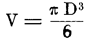

Worin der Richter John Proth eine seiner angenehmsten Amtspflichten erfüllt, bevor er nach seinem Garten zurückkehrt.
Es liegt kein Grund dafür vor, den Lesern zu verheimlichen, daß die Stadt, in der diese seltsame Geschichte beginnt, in Virginien, in den Vereinigten Staaten von Amerika zu suchen ist. Mit ihrer Erlaubnis wollen wir sie Whaston nennen und in den östlichen Teil des Staates ans rechte Ufer des Potomac verlegen. Wir halten es aber für nutzlos, die Koordinaten dieser Stadt genauer anzugeben, da man sie doch selbst auf den besten Landkarten der Union vergeblich suchen würde.
Am Vormittag des 12. März des ... nun, eines gewissen Jahres konnten diejenigen Einwohner von Whaston, die zur rechten Zeit durch die Exeterstraße kamen, einen eleganten Herrn die Straße, die ziemlich starken Fall hat, langsam auf und ab reiten sehen, bis er schließlich auf dem fast im Mittelpunkte der Stadt gelegenen Konstitutionsplatze einmal stillhielt.
Der Reiter, ein Mann vom reinsten Yankeetypus, der ja zuweilen auch eine originelle Vornehmheit verrät, konnte nicht älter als dreißig Jahre sein. Er war von übermittler Größe, von gutem, kraftstrotzendem Aussehen und hübscher Gestalt und hatte dunkle Haare sowie kastanienbraunen Bart, dessen Spitze sein Gesicht mit den sorgsam rasierten Lippen noch etwas verlängerte. Ein weiter Mantel bedeckte ihn bis zu den Beinen und lag ausgebreitet auf dem Rücken des Pferdes. Er handhabte sein muntres, tänzelndes Tier mit ebensoviel Geschick wie Sicherheit. Alles an seiner Erscheinung wies auf einen tatkräftigen, entschlossenen und wohl der ersten Eingebung folgenden Mann hin. Sicherlich schwankte er niemals zwischen Wunsch und Befürchtung hin und her, wie das Sache eines zaudernden Charakters ist. Endlich hätte ein Beobachter wahrnehmen müssen, daß die natürliche Ungeduld des Mannes sich nur unvollkommen hinter einer äußerlichen Kälte verbarg.
Warum war nun wohl dieser Reiter hier in einer Stadt, wo keiner ihn kannte, keiner ihn vorher je gesehen hatte? Beschränkte er sich vielleicht darauf, sie nur zu durchqueren oder wollte er etwa einige Zeit hier verweilen? Ein Hotel aufzusuchen hätte er, im zweiten Falle, nur die Qual der Wahl gehabt, dafür war Whaston weit und breit bekannt. In keinem andern Zentrum der Vereinigten Staaten oder in andern Ländern könnte ein Reisender einen bessern Empfang, willigere Bedienung, vorzüglichere Verpflegung und tadelloseren Komfort, obendrein noch zu sehr mäßigem Preise finden. Es ist wirklich bedauerlich, daß die Landkarten die Lage einer mit solchen Vorzügen ausgestatteten Stadt nicht genau angeben.
Doch nein, jener Fremdling schien nicht die Absicht zu haben, sich in Whaston irgend länger aufzuhalten, und das einladende Lächeln der Hoteliers blieb auf ihn jedenfalls ohne Eindruck. Wie in Gedanken versunken und ganz unachtsam auf alles um sich her, folgte er der sich am Rande des Konstitutionsplatzes hinziehenden Straße, die ein umfängliches ebenes Terrain einschließt ... ohne jede Ahnung, daß er hier die öffentliche Aufmerksamkeit erregte.
Und Gott weiß, wie stark sie erregt war, diese öffentliche Aufmerksamkeit! Seit dem Auftauchen des fremden Reiters wechselten schon Herr und Diener, an der Haustür stehend, ihre Gedanken über diesen aus.
»Von wo aus ist er denn hierher gekommen?
– Von der Exeterstraße her.
– Ja, woher aber von außerhalb?
– Er soll, wie man sagt, durch die Wilcox-Vorstadt hereingekommen sein.
– Er reitet nun aber schon eine halbe Stunde hier um den Platz herum.
– Ja; er wird wohl jemand erwarten.
– Wahrscheinlich, und offenbar mit einiger Ungeduld.
– Er sieht immer die Exeterstraße hinauf ...
– Von da her wird man jedenfalls kommen.
– Was heißt das ›man‹? ... ›Sie‹ oder ›er‹?
– Wahrlich ... er hat ein hübsches, vornehmes Aussehen!
– Sie meinen also, es handle sich hier um ein Rendez-vous?
– Ja, um ein Rendez-vous, doch nicht in dem Sinne, wie Sie es verstehen.
– Woher wollen Sie das wissen?
– Sehr einfach, der Fremdling dort hat schon dreimal vor der Tür des Herrn John Proth Halt gemacht ...
– Und da Herr John Proth in Whaston als Richter fungiert ...
– Nun ja, so wird der junge Mann da einen Prozeß haben ...
– Und sein Gegner hat sich bis jetzt noch nicht eingefunden ...
– Ganz recht.
– Schön! Na, der Richter Proth wird beide bald genug miteinander ausgesöhnt haben.
– Ja ... der ist ein geschickter Mann.
– Und ein braver Mann obendrein.«
Es war ja wirklich möglich, daß das für jenen Reiter der Grund seiner Anwesenheit in Whaston war. Schon mehrmals hatte er vor der Tür John Proths sein Pferd pariert, doch ohne aus dem Sattel zu steigen. Er sah nur die Tür an und warf einen Blick nach den Fenstern des Hauses hinauf, blieb aber ruhig sitzen, so als ob er erwarte, daß jemand auf der Schwelle erschiene, bis ihn sein vor Ungeduld mit den Füßen stampfendes Pferd weiter zu reiten nötigte.
Als er dann wieder einmal an derselben Stelle hielt, öffnete sich plötzlich die Haustür und es zeigte sich ein Mann auf dem Absatz der kleinen Freitreppe, die nach dem Trottoir hinunterführte.
Kaum hatte der Fremde den Erschienenen bemerkt, als er sich schon, den Hut lüftend, an diesen mit den Worten wandte: »Herr John Proth, wenn ich nicht irre?
– Der bin ich, antwortete der Richter.
– Nur eine einfache Frage, die von Ihrer Seite nichts weiter als ein Ja oder Nein verlangt.
– Und die lautet? ...
– Ist wohl heute früh schon jemand bei Ihnen gewesen, der nach Mister Seth Stanfort gefragt hat?
– Danke bestens.«
Der Reiter nahm hierbei nochmals den Hut ab, ließ den Zügel lockerer und trottete in kurzem Trab die Exeterstraße hinauf.
Jetzt unterlag es – so urteilte man allgemein – keinem Zweifel mehr, daß der Unbekannte mit John Proth etwas zu tun hatte. Nach der Art und Weise, wie er seine kurze Frage stellte, war er offenbar selbst jener Seth Stanfort, der zu der bestimmten Zusammenkunft zuerst eingetroffen war. Nun gab es aber auch noch ein interessantes Rätsel zu lösen: War die Stunde des Zusammentreffens jetzt schon endgültig verpaßt, und würde der unbekannte Reiter die Stadt verlassen, um nicht wieder dahin zurückzukehren?
Da wir uns in Amerika, d. h. bei dem allerwettlustigsten Volke befinden, das es hienieden gibt, wird man ohne Schwierigkeit glauben, daß bezüglich der baldigen Wiederkehr oder des endgültigen Weggangs des Fremden zahlreiche Wetten abgeschlossen wurden, Wetten um einen halben Dollar bis hinunter auf fünf bis sechs Cents – zwischen dem Personal der Hotels und den auf dem Platze zusammengeströmten Neugierigen – höhere nicht, die Beträge würden aber von den Verlierenden prompt bezahlt, und von den Gewinnern – es waren alle höchst ehrenwerte Leute – schmunzelnd eingestrichen werden.
Der Richter John Proth hatte sich begnügt, dem Reiter, der sich der Wilcox-Vorstadt zuwendete, mit den Blicken zu folgen. Er war ein Philosoph, der Amtsrichter John Proth, ein kluger Beamter, der, so könnte man sagen, schon volle fünfzig Jahre Klugheit und Philosophie in sich aufgestapelt hatte, obgleich er selbst erst ein halbes Jahrhundert alt war, d. h. also, daß er schon ein Weiser und ein Philosoph in der Stunde war, wo er das Licht der Welt erblickte. Hierzu nehme man, daß sein Leben als Hagestolz – ein weitrer unbestreitbarer Beweis von Klugheit – nie von Sorgen getrübt worden war, was doch, das wird jedermann zugeben, die praktische Verwertung der Philosophie wesentlich erleichtert. In Whaston geboren, hatte er, selbst in den Jugendjahren, seine Vaterstadt kaum je oder überhaupt niemals verlassen, und hier wurde er von allen, die zu seinem Gerichtssprengel gehörten und die seine vortrefflichen Eigenschaften kannten, ebenso geliebt wie aufrichtig verehrt.
Von geradsinnigem Charakter, erwies er sich stets nachgiebig gegen die Schwächen, zuweilen sogar gegen die Fehler andrer Leute, und faßte seine Aufgabe nur als die Verpflichtung auf, die ihm zur Entscheidung vorliegenden streitigen Angelegenheiten auszugleichen, die Parteien, die vor seinem Tribunal erschienen, versöhnt heimzuschicken, alle Ecken und Kanten abzurunden, jedes Räderwerk gleichsam zu ölen und die in jeder, selbst der vollkommensten gesellschaftlichen Ordnung unausbleiblichen Stöße nach Möglichkeit zu mildern.
John Proth erfreute sich eines gewissen Wohlstands. Wenn er die Funktionen eines Richters erfüllte, so geschah das eigentlich nur aus Liebhaberei, und es kam ihm niemals der Gedanke, eine höhere Stellung zu erstreben. Er liebte die Ruhe, für sich und für andere, und betrachtete die Menschen alle als nahe Nachbarn, mit denen man alle Ursache hat, immer auf gutem Fuße zu stehen. Früh auf und zeitig zu Bett war seit langem seine Gewohnheit. Wenn er auch einige Lieblingsautoren der Alten und der Neuen Welt las, so begnügte er sich doch meist mit einer ehrbaren, wackeren Zeitung der Stadt, mit den »Whaston News«, worin die Anzeigen mehr Platz einnahmen als die Politik. Jeden Tag machte er einen ein- bis zweistündigen Spaziergang, bei dem die Hüte durch das viele Grüßen abgenützt wurden, was ihn dann zwang, den seinigen alle drei Monate durch einen neuen zu ersetzen. Außer der Zeit dieser Spaziergänge und der, die seine Berufstätigkeit in Anspruch nahm, blieb er in seiner friedlichen und hübsch ausgestatteten Wohnung und pflegte in seinem Garten die Blumen, die ihm dafür dadurch dankten, daß sie ihn mit ihren frischen Farben und ihrem lieblichen Dufte erfreuten.
Nachdem wir diesen Charakter mit einigen Strichen gezeichnet und das Bild John Proths in einen passenden Rahmen gebracht haben, wird man leicht begreifen, daß sich der genannte Richter durch die an ihn gerichtete Frage des Fremden nicht sonderlich aus der Ruhe bringen ließ. Hätte jener, statt sich an den Hausherrn zu wenden, dessen alte Dienerin Kate gefragt, so hätte diese wahrscheinlich noch manches andre zu erfahren gewünscht. Sie würde ihn nicht losgelassen und gefragt haben, was man antworten sollte, wenn sich jemand nach seiner Person erkundigte, und jedenfalls hätte es der würdigen Kate nicht mißfallen zu hören, ob der Fremde, sei es im Laufe des Vor- oder Nachmittags, wieder zum Hause Mr. John Proths zurückkehren werde oder nicht.
John Proth selbst würde sich eine solche Neugier, eine solche Indiskretion niemals verziehen haben, bei seiner Dienerin, die ja dem schwächeren Geschlechte angehörte, mußte er sie schon entschuldigen. Nein, Mister John Proth hatte nicht einmal bemerkt, daß das Eintreffen, die Anwesenheit und endlich das Verschwinden des Fremdlings den Maulaffen auf dem Konstitutionsplatze aufgefallen war, und nach Schließung seiner Haustür zog er sich ruhig zurück, um im Garten seinen Blumen, den Rosen, Iris, Geranien und Reseden zu trinken zu geben.
Die Neugierigen taten nicht desgleichen, sondern blieben noch beobachtend stehen.
Der Reiter war inzwischen ans Ende der Exeterstraße gelangt, die sich als Hauptader durch den Westen der Stadt hinzieht. Als er die Wilcox-Vorstadt erreichte, die die genannte Straße mit dem Zentrum von Whaston verbindet, hielt er sein Pferd an und sah sich, ohne den Sattel zu verlassen, nach allen Seiten um. Von dieser Stelle aus lag die Umgebung eine reichliche Meile weit vor ihm offen, und er konnte bis auf drei Meilen die vielfach gewundne abfallende Straße bis zu dem Flecken Steel übersehen, dessen Glockentürme sich jenseits des Potomac vom Horizont abhoben. Seine Blicke überflogen diese Straße aber vergeblich. Offenbar entdeckte er nicht, was er suchte. Das veranlaßte ihn zu lebhaften, ungeduldigen Bewegungen, die sich auf sein Pferd fortpflanzten, das er stramm im Zügel halten mußte.
So verstrichen zehn Minuten, dann begab sich der Reiter langsamen Schrittes wieder die Exeterstraße hinunter und zum fünften Male nach dem offenen Platze.
»Alles in allem, murmelte er nach einem Blick auf seine Uhr, kann von einer Verzögerung noch nicht die Rede sein. Es war ja auf zehn Uhr sieben Minuten verabredet, und jetzt ist es erst kaum halb zehn. Die Entfernung zwischen Whaston und Steel, von wo sie kommen muß, ist ebenso groß wie die zwischen Whaston und Brial, woher ich gekommen bin, und die ich vielleicht in noch nicht zwanzig Minuten zurückgelegt habe. Die Straße ist gut, das Wetter trocken, und ich wüßte nicht, daß ein Hochwasser etwa die Brücke weggerissen hätte. Da liegt also kein Grund zur Verzögerung, kein Hindernis vor. Wenn sie unter diesen Umständen das Stelldichein verfehlt, so wird das ihr eigener Wille sein. Die Pünktlichkeit besteht doch darin, zur rechten Zeit zur Stelle zu sein, nicht aber vorzeitig einzutreffen. Eigentlich bin ich es ja, der unpünktlich ist, denn ich bin um viel mehr zu zeitig gekommen, als es sich für einen methodischen Menschen ziemt. Freilich – von jedem anderen Gefühle abgesehen – erforderte es schon die einfache Höflichkeit, daß ich zuerst zum Stelldichein kam.«
Dieses Selbstgespräch dauerte die ganze Zeit an, wo der Fremde die Exeterstraße hinunter ritt, und endigte nicht eher, als bis die Hufeisen des Pferdes von neuem auf den Macadam des Platzes aufschlugen.
Die, die auf das Wiedererscheinen des Fremden gewettet hatten, hatten also die Einsätze gewonnen. Sie zeigten diesem, als er an den Hotels vorüberkam, auch ein recht freundliches Gesicht, während die Verlierenden ihn nur mit Achselzucken begrüßten.
Endlich schlug die Rathausuhr zehn. Sein Pferd anhaltend, zählte der Fremde die zehn Schläge und überzeugte sich von der Übereinstimmung der öffentlichen Uhr mit der eignen, die er aus der Tasche hervorzog.
Nun fehlten nur noch sieben Minuten an der für das Rendez-vous bestimmten Zeit, die bald nachher also schon überschritten war.
Seth Stanfort kehrte nach dem Eingange der Exeterstraße zurück; offenbar konnte weder er noch sein Pferd sich ruhig verhalten.
Jetzt herrschte auf dieser Straße ein lebhafter Verkehr. Mit denen, die diese hinaufgingen, beschäftigte sich Seth Stanfort nicht im geringsten. Seine ganze Aufmerksamkeit galt nur denen, die die Straße herabkamen, und er lugte scharf nach diesen aus, sobald sie an deren hochgelegenem Ende auftauchten. Die Exeterstraße ist so lang, daß ein Fußgänger reichlich zehn Minuten braucht, sie zu durchmessen, drei oder vier Minuten aber nur ein schnellfahrender Wagen oder ein Pferd in gestrecktem Trab.
Um die Fußgänger kümmerte sich unser Reiter freilich kaum, er sah sie sogar nicht einmal. Sein vertrautester Freund hätte zu Fuß an ihm vorübergehen können, er hätte ihn gewiß gar nicht bemerkt. Die erwartete Person konnte nur zu Wagen oder zu Pferde ankommen.
Würde sie aber zur erwähnten Zeit eintreffen? Daran fehlten nur noch drei Minuten, gerade genug Zeit, die Exeterstraße hinunterzufahren, auf deren Höhenpunkte zeigte sich aber weder ein Wagen, noch ein Kraftfahrrad oder ein Bizyklett, ebensowenig ein Automobil, das, wenn es mit achtzig Kilometer Geschwindigkeit in der Stunde dahinsauste, sein Ziel noch ganz kurz vor dem Zeitpunkte für das Rendez-vous erreicht hätte.
Seth Stanfort durchmaß die Exeterstraße noch mit einem letzten Blicke. In seinen Augen leuchtete ein Blitz auf, der durch die Pupille hervorschoß, während er im Tone unerschütterlicher Entschlossenheit die Worte murmelte:
»Wenn sie um zehn Uhr sieben Minuten nicht hier ist, heirate ich überhaupt nicht!«
Wie eine Antwort auf diese Erklärung hörte man da im gleichen Augenblick den Galopp eines Pferdes, das oben von der Straße herunterkam. Auf dem Tiere, einem prächtigen Zelter, saß eine junge Frau, die es mit ebensoviel Grazie wie Sicherheit lenkte. Die Leute wichen vor ihm zurück, so daß sich ihm bis zum Platze hinunter kein Hindernis entgegenstellte.
Seth Stanfort erkannte die, die er erwartete; seine Züge wurden wieder ruhiger. Er trieb sein Pferd an und begab sich ruhigen Schrittes vor das Haus des Richters.
Das reizte natürlich die neugierige Menge, die sich herandrängte, ohne daß der Fremde von ihr auch nur im geringsten Notiz nahm.
Einige Sekunden später sprengte auch die Reiterin auf den Platz ein und ihr von weißem Schaume bedecktes Pferd hielt zwei Schritte vor der Tür.
Der Fremde gab sich zu erkennen und sagte:
»Ich begrüße Miß Arcadia Walker ...
– Und ich Mister Seth Stanfort,« erwiderte Arcadia Walker, indem sie sich mit graziöser Bewegung leicht verbeugte.
Selbstverständlich verloren die Eingebornen das Paar, das sie nicht kannten, keine Sekunde aus den Augen.
»Wenn sie wegen eines Prozesses gekommen sind, raunten sie einander zu, so möchte man wünschen, daß dieser Prozeß zum Vorteil beider ausginge.
– Das wird auch der Fall sein, oder Mister Proth wäre nicht der geschickte Mann, der er doch ist.
– Und wäre keines von beiden verheiratet, so wär's das beste, die ›Geschichte endete mit einer Hochzeit?‹«
So flogen die Worte hinüber und herüber, so äußerten sich die Ansichten der Müßiggänger, doch weder Seth Stanfort noch Miß Arcadia Walker schien die ziemlich lästige Neugier, die sie erweckten, zu beachten.
Seth Stanfort wollte eben absteigen, um an die Tür des Mr. John Proth zu klopfen, als diese sich schon öffnete.
Mr. John Proth erschien auf der Schwelle, diesmal aber auch die alte Dienerin Kate dicht hinter ihm.
Beide hatten Pferdegetrappel vor dem Hause gehört, und der Richter, der seinen Garten, sowie die Dienerin, die ihre Küche verließ, wollten wissen, was das zu bedeuten hätte.
Seth Stanfort blieb also im Sattel und wendete sich an den Beamten.
»Herr Richter John Proth, sagte er, ich bin Seth Stanfort aus Boston, Massachusetts.
– Sehr erfreut, Ihre Bekanntschaft zu machen, Mister Seth Stanfort.
– Und hier ist Miß Arcadia Walker aus Trenton, New-Jersey.
– Ich fühle mich sehr geschmeichelt, der Miß Arcadia Walker gegenüberzustehen.«
Und während John Proth erst den ihm Fremden angesehen hatte, wendete er all seine Aufmerksamkeit jetzt der jungen Dame zu.
Miß Arcadia Walker war eine reizende Person, und man wird es verzeihen, wenn wir gleich eine Skizze von ihr entwerfen. Ihr Alter: vierundzwanzig Jahre. Augen: blau, etwas hell. Haare: dunkel kastanienbraun. Teint: von einer Frische, die vom Atem der freien Luft nicht verändert wurde. Zähne: tadellos weiß und vollkommen regelmäßig. Größe: etwas über mittel. Haltung: vorzüglich. Bewegungen: von bestechender Geschmeidigkeit und vielleicht etwas nervöser Grazie. In der Amazonentracht, die sie eben trug, folgte sie schmiegsam den Bewegungen ihres Pferdes, das mit dem Seth Stanforts den Boden um die Wette stampfte. Ihre von feinen Handschuhen bedeckten Hände spielten gleichsam mit den Zügeln, und jeder Sachkenner würde in ihr sofort eine gewandte Kunstreiterin vermutet haben. Ihre ganze Erscheinung trug den Stempel echter Vornehmheit und jenes besondere »ich weiß nicht, was« der oberen Klassen der Union, die man recht wohl die amerikanische Aristokratie nennen könnte, wenn diese Bezeichnung nicht gar zu grell gegen die demokratischen Instinkte der Eingebornen der Neuen Welt abstäche.
Miß Arcadia Walker, eine Dame, gebürtig aus New-Jersey, ohne jede nähere Verwandtschaft, frei in ihrem Tun und Lassen, unabhängig durch ihr Vermögen und etwas abenteuerlustig veranlagt, wie alle jungen Amerikanerinnen, führte ein Leben ganz nach ihrem Geschmacke. Da sie seit mehreren Jahren viel reiste und die wichtigsten Länder Europas besucht hatte, war sie gründlich von allem unterrichtet, was in Paris, London, Berlin oder in Rom geschah und als guter Ton galt. Über das, was sie auf ihren ununterbrochenen Wanderungen gesehen oder gehört hatte, verstand sie obendrein mit den Franzosen, den Engländern, den Deutschen und den Italienern in deren Muttersprache zu plaudern. Sie war eine höchst gebildete Person, unterrichtet von einem gegenwärtig schon von der Erde geschiedenen Lehrer, der sie höchst sorgfältig erzogen hatte. Auch an praktischem Geschäftssinn fehlte es ihr nicht; den bewies sie schon mit der Verwaltung ihres Vermögens, wobei sie ihre Interessen stets recht geschickt wahrzunehmen wußte.
Was hier von Miß Arcadia Walker gesagt ist, läßt sich »symmetrisch« – ja, das ist das rechte Wort – auch auf Mr. Seth Stanfort anwenden. Dieser stand ebenso unabhängig da, war ebenso reich, liebte ebenso das Reisen und war in der ganzen Welt herumgekommen, nur dadurch unterschied er sich von Arcadia, daß er in seiner Vaterstadt Boston wohnte. Im Winter ein ständiger Besucher der Alten Welt und der Großstädte in dieser, war er hier öfters mit seiner abenteuerlustigen Landsmännin zusammengetroffen. Im Sommer kehrte er nach seiner Heimat zurück und verweilte hier meist in den Seebädern, wo sich dann die Familien der reichen Yankees aufzuhalten pflegen. Auch hier waren Miß Arcadia Walker und er einander wiederholt begegnet.
Die gleiche Geschmacksrichtung hatte die beiden jungen, lebensfrohen Leute, von denen die neugierigen Adamssöhne und vor allem die Evastöchter sagten, daß sie wie für einander geschaffen wären, mehr und mehr einander genähert. Wie sollten sie auch nicht übereingestimmt haben, bei ihrer gleichen Reiselust, bei dem gleichen Verlangen, dahin zu eilen, wo irgend ein Vorfall im politischen oder militärischen Leben die öffentliche Aufmerksamkeit erregte? Da kann es denn auch nicht wundernehmen, daß Mr. Seth Stanfort und Miß Arcadia Walker auf den Gedanken kamen, ihre Lebensbahnen zu vereinigen, was ja an ihren Gewohnheiten nichts ändern würde. Sie bildeten dann nicht mehr zwei Schiffe, die eines das andere begleiteten, sondern ein einziges, das vorzüglich ausgerüstet, getakelt und geführt war, sich auf allen Meeren der Erde zu bewähren.
Es war also kein Prozeß, keine Verhandlung, keine Ordnung einer streitigen Angelegenheit, die Seth Stanfort und Miß Arcadia Walker veranlaßte, vor dem Richter dieser Stadt zu erscheinen. Nein; nach Erledigung der gesetzlichen Formalitäten bei den zuständigen Behörden in Massachusetts und in New-Jersey hatten sie für den 12. März zur schon erwähnten Zeit – zehn Uhr sieben Minuten – ihr Zusammentreffen in Whaston verabredet, um hier den Bund einzugehen, womit man, wie die Leute sagen, den wichtigsten Schritt im Leben tut.
Nachdem die Vorstellung des Mr. Seth Stanfort und der Miß Arcadia Walker in der angeführten Weise erfolgt war, hat John Proth den Fremden und die diesen begleitende Dame nur noch zu fragen, aus welchem Grunde sie vor ihm erschienen.
»Seth Stanfort wünscht der Ehemann der Miß Arcadia Walker zu werden, erklärte der eine.
– Und Miß Arcadia Walker wünscht die Ehefrau des Mister Seth Stanfort zu werden,« setzte die andere hinzu.
Der Beamte verneigte sich höflich mit den Worten:
»Ich stehe zu Ihrer Verfügung, Mister Stanfort, und ebenso zur Ihrigen, Miß Arcadia Walker.«
Jetzt machten die beiden jungen Leute eine graziöse Verbeugung.
»Wann wäre es Ihnen genehm, den Trauungsakt zu vollziehen? fuhr John Proth fort.
– Gleich auf der Stelle ... wenn Sie keine andere Abhaltung haben, antwortete Seth Stanfort.
– Denn wir verlassen Whaston, sobald ich Mistreß Stanfort geworden bin,« erklärte Miß Arcadia Walker.
Der Richter Proth verriet durch seine Haltung, wie sehr er und mit ihm die ganze Stadt bedauere, daß das schöne junge Paar, das augenblicklich die Stadt mit seiner Gegenwart beehrte, nicht länger innerhalb der Mauern Whastons zu weilen gedenke. Dann fügte er hinzu:
»Ich stehe vollständig zu Ihren Diensten,« und damit wich er einige Schritte zurück, um den Zutritt zum Hause freizugeben.
Mr. Seth Stanfort hielt ihn jedoch durch einen Wink zurück.
»Ist es notwendig, fragte er, daß Miß Arcadia Walker und ich vom Pferde absteigen?«
John Proth dachte einen Augenblick nach.
»O, keineswegs, versicherte er. Man kann sich ebensogut zu Pferde wie zu Fuß trauen lassen.«
Es dürfte wohl schwierig sein, irgendwo, selbst in dem so originellen Amerika, einen gefälligeren, entgegenkommenderen Beamten zu finden.
»Gestatten Sie nur noch eine Frage, fuhr John Proth fort. Sind auch schon alle gesetzlich vorgeschriebenen Formalitäten erledigt?
– Ja, gewiß,« versicherte Seth Stanfort.
Damit übergab er dem Richter zwei große Kuverts mit den Erlaubnisscheinen, die nach Entrichtung der betreffenden Gebühren von den Gerichtsschreibereien in Boston und in Trenton ausgefertigt waren.
John Proth nahm die Papiere in Empfang, setzte seine Brille mit goldenem Gestell auf und durchlas aufmerksam die offiziellen und durch einen Stempel der Behörde beglaubigten Schriftstücke.
»Die Papiere sind in Ordnung, sagte er, und ich bin also bereit, Ihnen den Trauschein auszustellen.«
Niemand wird sich wohl darüber wundern, daß die zu immer größerer Zahl angewachsenen Neugierigen sich um das Paar drängten, wie ebensoviele Zeugen einer feierlichen Verbindung, die unter Umständen vor sich ging, welche in jedem andern Lande als ganz außergewöhnlich erscheinen würden. Das genierte aber die beiden Verlobten nicht, ja es mißfiel ihnen nicht einmal.
John Proth trat wieder auf die ersten Stufen seiner Freitreppe zurück und sagte mit lauter, für alle verständlicher Stimme:
»Mister Seth Stanfort, es ist also Ihr ernster Wille, Miß Arcadia Walker zur Frau zu nehmen?
– Ja.
– Und Sie, Miß Arcadia Walker, sind ebenso gewillt, den Mister Seth Stanfort zum Manne zu nehmen?
– Ja.«
Der Beamte sammelte sich einige Sekunden, dann verkündete er so ernsthaft, wie ein Photograph im Augenblicke der Objektivöffnung »Jetzt recht ruhig und freundlich!« sagt, mit nachdrücklicher Betonung:
»Im Namen des Gesetzes erkläre ich Sie, Mister Seth Stanfort aus Boston, und Sie, Miß Arcadia Walker aus Trenton, hiermit für ehelich verbunden!«
Die beiden jungen Gatten näherten sich ihm und ergriffen seine Hand, wie um den eben vollzogenen Akt noch zu besiegeln.
Gleichzeitig überreichten sie ihm aber jedes einen Fünfhundertdollarschein.
»Als Honorar, sagte dazu Seth Stanfort.
– Für die Armen der Stadt,« sagte Mistreß Arcadia Stanfort.
Nachdem sich dann noch beide vor dem Richter verbeugt hatten, gaben sie ihren Pferden die Zügel und galoppierten in der Richtung nach der Wilcox-Vorstadt davon.
»Na ja, gut ... gut! rief Kate, die vor Verwunderung so gelähmt war, daß sie ausnahmsweise zehn Minuten lang ganz stumm dagestanden hatte.
– Was soll das heißen, Kate?« fragte Mr. John Proth.
Die alte Kate ließ ihren Schürzenzipfel fallen, den sie einen Augenblick wie ein gelernter Seiler zusammengedreht hatte.
»Ach ... ich weiß nicht ... ich meine nur, Herr Richter, gestand sie, daß die beiden Leutchen da rechte Toren sind.
– Ohne Zweifel, ehrsame Kate, ohne Zweifel, stimmte John Proth ihr bei, während er seine friedliche Gießkanne wieder zur Hand nahm. Ist denn das etwa aber etwas so Wunderbares? Sind denn die, die sich verheiraten, nicht immer etwas närrische Leute?«
Das den Leser in das Haus Dean Forsyths einführt und ihn in Verbindung mit dessen Neffen Francis Gordon und seiner Haushälterin Mitz bringt.
»Mitz ... Mitz!
– Mein Söhnchen? ...
– Was ist denn mit ihm los, mit meinem Onkel Dean?
– Ja, das weiß ich auch nicht.
– Ist er etwa krank?
– Jetzt wohl nicht; wenn das aber so fortgeht, wird er's sicher werden.«
Diese Worte wurden zwischen einem jungen Mann von dreiundzwanzig und einer Frau von fünfundsechzig Jahren gewechselt, und zwar im Speisezimmer eines Hauses der Elisabethstraße in der schon oft genannten Stadt Whaston, wo eben eine der auch nach amerikanischem Muster originellsten Trauungen stattgefunden hatte.
Dieses Haus der Elisabethstraße gehörte dem Mr. Dean Forsyth. Mr. Dean Forsyth zählte fünfundvierzig Jahre, was man ihm auch gut genug ansah. Ein mächtiger, auffallender Kopf, kleine Augen mit einer Brille mit sehr scharfen Gläsern, leicht gewölbte Schultern, ein kräftiger Hals, den in jeder Jahreszeit ein Halstuch, das bis zum Kinn hinaufreichte, in doppelter Lage umhüllte, ein weiter, faltiger Oberrock, eine weiche Weste, deren unterste Knöpfe nie benutzt wurden, etwas zu kurze Beinkleider, die nicht bis auf die Schuhe reichten, eine auf halbergrautem, wirrem Haar tief im Nacken sitzende hohe Mütze, ein Gesicht mit tausend Falten, das mit dem fast allen Nordamerikanern gemeinsamen Spitzbart endigte, ein reizbarer Charakter, der sich immer nur zwei Millimeter von der Marke »Zorn« entfernt hielt ... das wäre etwa das Signalement dieses Mr. Dean Forsyth, von dem sein Neffe Francis Gordon und seine Haushälterin Mitz am Morgen des 21. März sprachen.
Francis Gordon, der seine Eltern schon sehr frühzeitig verloren hatte, war von Dean Forsyth, einem Bruder seiner Mutter, erzogen worden. Obgleich ihm von seinem Onkel später ein gewisses Vermögen zufallen sollte, hatte er nicht geglaubt, sich ernster Arbeit entziehen zu dürfen, und Mr. Forsyth war derselben Meinung gewesen. Der Neffe erwarb sich deshalb auf der berühmten Harward-Universität zuerst die allgemeine höhere Schulbildung und studierte dann die Rechte. Jetzt fungierte er als Advokat in Whaston und war als der schlagfertigste Verteidiger der Witwen und Waisen und als der beste Vermittler in kleinen Streitigkeiten bekannt. Er kannte die Gesetze des Landes gründlich und zeichnete sich durch eine fließende Sprechweise mit eindringlicher, überzeugender Stimme aus. Alle seine Kollegen, die jungen wie die alten, schätzten ihn aufrichtig, und er hatte sich überhaupt nie einen Feind gemacht. Von ansehnlichem Äußern, mit vollen kastanienbraunen Haaren und schönen schwarzen Augen, von elegantem Auftreten, geistvoll ohne Bosheit, dienstwillig ohne sich vorzudrängen, nicht ungeschickt in allen Arten des Sports, dem die amerikanische Gentry so leidenschaftlich zu huldigen pflegt ... dabei war's ja kein Wunder, daß er unter den vornehmen jungen Männern der Stadt mit zu den ersten gehörte. Warum hätte er es da nicht wagen können, sein Herz der reizenden Jenny Hudelson, der Tochter des Doktor Hudelson und dessen Gattin, einer gebornen Flora Clarish, zuzuwenden?
Noch ist es jedoch zu zeitig, die Aufmerksamkeit des Lesers auf diese junge Dame zu lenken. Jenny Hudelson wird richtiger erst im Schoße ihrer Familie auf der Bühne zu erscheinen haben, und dieser Zeitpunkt ist noch nicht gekommen. Zu lange wird das jedoch nicht mehr dauern. Wir sind nur gezwungen, streng methodisch bei der Weiterentwicklung dieser Erzählung zu verfahren, die durch Seitensprünge, zu sehr gestört werden würde.
Was Francis Gordon betrifft, sei hier hinzugefügt, daß er in dem erwähnten Hause der Elisabethstraße wohnte, welches er jedenfalls auch vor dem Tage seiner Vermählung mit der Miß Jenny nicht verlassen würde ... doch nochmals: lassen wir Miß Jenny, wo sie ist, und sagen wir nur, daß die gute Mitz die Vertraute des Neffen ihres Herrn war, den sie wie einen Sohn, eigentlich mehr wie einen Enkel liebte, denn die Großmütter halten ja gewöhnlich den Rekord in der mütterlichen Zärtlichkeit.
Mitz, eine Musterdienerin, derengleichen man jetzt vergeblich suchen würde, gehörte noch zu der jetzt erloschenen Art, die etwas von der Natur des Hundes und der Katze an sich hat: von der des Hundes, der sich treu an seinen Herrn anschließt, und von der der Katze, die an das Haus gefesselt bleibt, in das sie gehört. Man kann sich wohl leicht vorstellen, daß Mitz dem Mr. Dean Forsyth gegenüber das Herz auf der Zunge hatte. Wenn dieser unrecht hatte, sagte sie es ihm frank und frei ins Gesicht, doch mit so bestechenden Wendungen, daß sich ihre Worte in deutscher Sprache gar nicht treu wiedergeben lassen. Wollte Forsyth aber dennoch keine Einsicht haben, so blieb ihm nichts andres übrig, als sie stehen zu lassen, sich in sein Kabinett zurückzuziehen und dieses fest zu verriegeln.
Mr. Dean Forsyth brauchte jedoch niemals zu fürchten, hier allein zu sein. Er fand in dem Zimmer stets noch eine andre Person, die sich in derselben Art den Verweisen und Ermahnungen Mitzens entzogen hatte.
Diese Persönlichkeit hörte auf den Namen Omikron. Ein seltsamer Name, der sich von der untermittlern Natur eines Männchens herleitete, welches, wenn der Betreffende nicht gar so klein gewesen wäre, gewiß auch noch den Zunamen Omega erhalten hätte. Im Alter von fünfzehn Jahren vier Fuß sechs Zoll groß, war das Männchen später nicht weiter gewachsen. Sein richtiger Name lautete Tom Wife, und er war in jenem Alter, schon zu Lebenszeiten des Vaters Dean Forsyths, als junger Diener in dessen Haus gekommen. Da er jetzt fünfzig Jahre zählte, liegt es auf der Hand, daß er bereits fünfunddreißig Jahre bei dem Oheim Francis Gordons im Dienste stand.
Hier müssen wir einflechten, woraus denn dieser Dienst bestand. Darin nämlich, Mr. Dean Forsyth bei seinen Arbeiten zu unterstützen, Arbeiten, für die er eine nicht minder große Leidenschaft hatte als sein Herr.
Mr. Dean Forsyth arbeitete also?
Ja freilich; doch nur aus Liebhaberei, aber mit welchem Eifer, mit welcher Zähigkeit, das wird sich im weitern Verlaufe dieser Erzählung zeigen.
Womit beschäftigte sich denn Mr. Dean Forsyth? Mit Heilkunde oder Rechtswissenschaft, mit Literatur oder Kunst oder vielleicht mit Handelsgeschäften, wie so viele Bürger des freien Amerika?
Fehlgeschossen!
Nun, womit denn dann? fragt der Leser. Doch wohl mit den Wissenschaften?
Auch das nicht, wenigstens dieser Plural ist nicht richtig. Nein, nicht mit den Wissenschaften, sondern mit der Wissenschaft, nämlich der erhabensten, in der Einzahl: ausschließlich mit der, die sich die Astronomie nennt.
Er träumte nur von Planeten- und Sternentdeckungen. Nichts oder fast nichts von dem, was auf unserer Erdkugel vorging, schien ihn zu interessieren, er lebte nur in dem unendlichen Weltraume. Da er darin aber weder ein Frühstück noch ein Mittagsmahl gefunden hätte, mußte er des Tags über wohl oder übel wenigstens zweimal von da herabsteigen. Gerade am heutigen Tage stieg er nicht zur gewohnten Stunde herunter; er ließ auf sich warten, worüber Mitz, die den Tisch längst zurecht gemacht hatte, wirklich schimpfte.
»Er wird also gar nicht kommen? rief sie wiederholt.
– Ist denn Omikron schon da? fragte Francis Gordon.
– Der? ... Na, der steckt doch immer, wo sein Herr ist, erwiderte die Haushälterin. Ich habe wahrhaftig nicht Beine genug – ja, so drückte sich die ehrbare Mitz wirklich aus! – nicht genug, auf seinen Hühnerstall hinaufzuklettern!«
Der betreffende Hühnerstall war nichts mehr und nichts weniger als ein Turm, der zwanzig Fuß über das Dach emporragte oder, um das Kind beim rechten Namen zu nennen, eine Sternwarte. Unter der obern Galerie befand sich ein rundes Zimmer mit vier nach den Haupthimmelsgegenden gerichteten Fenstern. Im Innern standen, auf ihrem Untergestell drehbar, mehrere Fernrohre und einige stark vergrößernde Teleskope, und wenn deren Objektive nicht abgenutzt aussahen, so lag das nicht darin, daß sie unbenutzt gewesen wären. Weit eher war zu befürchten, daß Mr. Dean Forsyth und Omikron dadurch, daß sie mit den Augen immer vor den Okularen ihrer Instrumente lagen, sich die Augen schließlich gründlich verderben würden.
In diesem Zimmer verbrachten die beiden, einander zeitweilig ablösend, den größten Teil des Tages und der Nacht. Sie blickten umher, beobachteten, durchsuchten die Zwischenräume der Sterne immer in der Hoffnung auf eine Entdeckung, die sich mit dem Namen Dean Forsyths verknüpfen sollte. Bei klarem Himmel war das ja leicht; es gehörte hier aber dazu, daß er auch über dem Abschnitt durch den siebenunddreißigsten Breitengrad war, der durch den Staat Virginien verläuft. Wolkengebilde – Cyrrhus-, Nimbus- und Cumuluswolken – gab es hier aber genug und jedenfalls mehr, als sich Herr und Diener wünschten. Und das Jammern, die Drohungen gegen das Firmament, über das der Wind diese Ballen von Wasserdunst hintrieb!
Gerade in den letzten Tagen des März war die Geduld Mr. Dean Forsyths mehr als je auf die Probe gestellt worden. Seit mehreren Tagen blieb der Himmel zur vollen Verzweiflung des Astronomen hartnäckig dicht bedeckt.
Aber heute, am 21. März, wehte ununterbrochen ein scharfer Westwind über die Erde und jagte ein ganzes Meer von trostlos dunkeln Wolken über das Firmament hin.
»Wie schade! seufzte Mr. Dean Forsyth zum zehnten Male nach einem mißglückten Versuch, die dichte Dunstmasse zu durchdringen. – Ich habe so eine Ahnung, daß wir jetzt eine selten wiederkehrende Gelegenheit verpassen, daß uns eine aufsehenerregende Entdeckung verloren geht.
– Das ist wohl möglich, antwortete Omikron, sogar höchst wahrscheinlich, denn vor einigen Tagen schien es mir bei einer kurzen Aufhellung des Himmels, als bemerkte ich ...
– Und ich, ich habe deutlich gesehen, Omikron ...
– Also alle beide, beide zu derselben Zeit!
– Oho, Omikron! protestierte Dean Forsyth.
– Ja ja, Sie natürlich zuerst, lenkte Omikron mit vielsagendem Achselzucken ein. Doch als mir die betreffende Erscheinung auffiel, glaubte ich, sie müsse ... nein, sie rühre unzweifelhaft von ...
– Und ich, fiel ihm Dean Forsyth ins Wort, ich erkläre mit Bestimmtheit, daß es sich dabei um ein von Norden nach Süden hinziehendes Meteor handelte.
– Ganz recht, Mister Dean, perpendikulär zur Bahn der Sonne.
– Zu ihrer scheinbaren Bahn, Omikron.
– Ja, zu ihrer scheinbaren, das versteht sich von selbst.
– Und das war am sechzehnten März.
– Ganz recht, am sechzehnten.
– Um sieben Uhr siebenunddreißig Minuten und zwanzig Sekunden.
– Und zwanzig Sekunden, wiederholte Omikron, wie ich nach unserer Normaluhr festgestellt habe.
– Und seither ist es nicht wieder sichtbar gewesen! rief Mr. Dean Forsyth mit einer drohenden Handbewegung gegen den Himmel.
– Wie wäre das möglich gewesen? ... Wolken, Wolken und immer wieder Wolken! Seit vollen fünf Tagen nicht so viel blauer Himmel, daß sich daraus hätte ein Sacktuch schneiden lassen!
– Ja, ein besonderes Pech, rief Dean Forsyth, mit dem Fuße stampfend. Ich glaube, so etwas kann nur mir passieren!
– Jawohl, nur uns!« berichtigte ihn Omikron, der an den Arbeiten seines Herrn nun einmal einen Halbpart in Anspruch nahm.
Eigentlich hatten ja alle Bewohner der Umgegend dieselbe Berechtigung, sich über die den Himmel verdüsternden Wolken zu beklagen. Ob die Sonne scheint oder nicht, das geht die ganze Welt gleichmäßig an.
So allgemein die Klage über die gegenwärtigen Witterungsverhältnisse aber auch berechtigt gewesen wäre, niemand würde doch die törichte Anmaßung gezeigt haben, darüber in eine so borstige Laune zu geraten wie Mr. Dean Forsyth, als die Stadt jetzt von einem dichten Dunstschleier umhüllt war, gegen den die mächtigsten Teleskope, die besten Fernrohre nichts auszurichten vermochten. Solche Nebeltage sind übrigens in Whaston nichts Seltenes, obgleich die Stadt an dem klaren Wasser des Potomac lag und nicht an den schlammigen Fluten der Themse.
Was hatten denn nun der Herr und der Diener am 16. März bei einer Aufklärung des Himmels gesehen oder zu sehen geglaubt? ... Nichts weniger als eine kugelförmige Feuerkugel, die sich genau von Norden nach Süden mit großer Geschwindigkeit hinbewegte und einen solchen Glanz verbreitete, daß sie siegreich gegen das zerstreute Licht der Sonne ankämpfte. Da ihre Entfernung von der Erde aber sehr, sehr viele Kilometer betragen mußte, wäre es möglich gewesen, sie eine gewisse Zeitlang zu verfolgen, wenn kein so trotzig anhaltender Nebel jede Beobachtung verhindert hätte.
Seit dem erwähnten Zeitpunkte ertönten also die Klagen, die diese unglücklichen Verhältnisse hervorriefen. Würde die Feuerkugel nach dem Horizonte von Whaston zurückkehren? Würde man die Elemente ihrer Bahn berechnen, ihre Masse, ihr Gewicht und ihre Natur noch bestimmen können? Und sollte nicht vielleicht ein anderer Astronom mehr begünstigt sein, einer, der den Weltkörper an einer anderen Stelle des Himmels beobachten konnte? Würde Dean Forsyth, der den Weltraumwandrer so wenig vor seinem Teleskop gehabt hatte, dennoch ausersehen sein, seinen Namen an dessen Entdeckung zu heften, oder würde die Ehre dafür einem jener Gelehrten der Alten oder der Neuen Welt zufallen, einem der Berufsastronomen, die Tag und Nacht den Himmel durchstöbern?
»Diese Ramscher! wetterte Dean Forsyth. Diese schrecklichen Himmelspiraten!«
Am ganzen Vormittag des 21. März hatte es weder Dean Forsyth noch Omikron über sich gewinnen können, trotz der ungünstigen Witterung von dem nach Norden gelegenen Fenster zu weichen. Ihr Unmut hatte, je mehr die Stunden verstrichen, desto mehr zugenommen. Dean Forsyth ließ die Blicke über den weiten Horizont hin schweifen, der an dieser Stelle vom unregelmäßigen Profil der Hügel von Serbor begrenzt wurde, über die der steife Wind die hellgrauen Wolken hinjagte. Omikron erhob sich auf die Fußspitzen, um sich den infolge seiner Kleinheit beschränkten Gesichtskreis zu erweitern. Der eine hatte die Arme gekreuzt und preßte die geballten Fäuste gegen die Brust; der andre hämmerte mit seinen etwas runzligen Fingern auf das Fensterbrett. Einzelne Vögel flatterten mit lautem Gekreisch vorüber, als wollten sie den Herrn und den Diener verspotten, die sich als Zweifüßer nicht von der Erde erheben konnten. O, wenn die hätten den Vögeln in ihrem Fluge folgen können, wie bald hätten sie die Dunstschichten durchmessen und dann vielleicht auch den Asteroiden gesehen, wie er seinen Lauf im blendenden Licht der Sonne fortsetzte.
Eben jetzt klopfte es an die Tür.
Dean Forsyth und Omikron hörten es nicht.
Da öffnete sich die Tür und Francis Gordon erschien auf der Schwelle.
Dean Forsyth und Omikron wendeten sich auch jetzt nicht um.
Der Neffe näherte sich dem Onkel und berührte ihn leicht am Arm.
Mr. Dean Forsyth warf seinem Neffen einen so »entfernten« Blick zu, als käme dieser vom Sirius oder mindestens vom Monde.
»Was ist denn los? fragte er.
– Lieber Onkel, das Frühstück wartet auf Dich.
– Ah, wirklich, erwiderte Dean Forsyth, es wartet also ›das Frühstück‹? ... Na, wir, wir beide hier oben warten ebenfalls.
– Ihr wartet? ... Worauf denn?
– Auf die Sonne, erklärte Omikron, der durch ein beifälliges Kopfnicken seines Herrn belohnt wurde.
– Doch, lieber Onkel, du hast doch, meine ich, die Sonne nicht zum Frühstück eingeladen und man kann sich doch recht gut auch ohne sie zu Tisch setzen.«
Was war darauf zu antworten? Wenn sich das Strahlengestirn nun den ganzen Tag nicht zeigte, würde Dean Forsyth starrsinnig genug sein, das Frühstück erst am Abend zu verzehren?
Höchst wahrscheinlich, denn der Astronom erschien wenig geneigt, der Aufforderung seines Neffen nachzukommen.
»Lieber Onkel, fuhr dieser fort, Mitz wird ungeduldig; bitte, laß dir das gesagt sein!«
Sofort wurde sich Mr. Dean Forsyth der Sachlage bewußt: die Ungeduld der guten Mitz, die kannte er schon lange. Daß sie ihm einen besonderen Boten geschickt hatte, sprach zu deutlich für den Ernst der Lage, daß er sich ohne Zögern fügen mußte.
»Welch' Zeit ist's denn eigentlich? fragte er nur.
– Elf Uhr sechsundvierzig Minuten,« antwortete Francis Gordon.
Tatsächlich zeigte die große Pendeluhr diese Zeit, während Onkel und Neffe einander sonst pünktlich um elf Uhr am Tische gegenübersaßen.
»Elf Uhr sechsundvierzig! rief Mr. Dean Forsyth, eine starke Unzufriedenheit heuchelnd, um seine Unruhe nicht zu verraten. Ich begreife nicht, daß Mitz sich so vergessen kann!
– Aber, liebster Onkel, das war vorhin schon das dritte Mal, daß wir hier an die Tür gepocht hatten.«
Ohne weiter zu antworten, ging Mr. Dean Forsyth die Treppe hinunter, während Omikron, der sonst gewöhnlich den Tisch besorgte, oben zurückblieb, um eine Wiederkehr des Sonnenscheins nicht zu verfehlen.
Der Onkel und der Neffe traten ins Speisezimmer ein.
Mitz befand sich darin. Sie sah ihren Herrn, der den Kopf sinken ließ, scharf an.
»Nun ... und Freund Krone? fragte sie, denn so sprach sie (franz. Ami Krone. Der Übersetzer.) den fünften Vokal des griechischen Alphabetes aus.
– Der ist noch im Turmzimmer beschäftigt, antwortete Francis Gordon. Wir werden heute schon einmal ohne ihn auskommen.
– Mit Vergnügen! erklärte Mitz nicht gerade feinen Tones. Der mag in seinem Observatorium bleiben, so lange es ihm gefällt; da wird hier alles besser klappen als mit diesem Tolpatsch erster Klasse?«
Das Frühstück nahm seinen Anfang ... die Munde öffneten sich aber nur, um zu essen. Mitz, die sonst, wenn sie die Gerichte brachte oder die Teller wechselte, gern ein wenig schwätzte, öffnete heute niemals das Gehege ihrer Zähne. Dieses Schweigen wurde bedrückend, der Zwang lästig. Um dem ein Ende zu machen, fragte Francis Gordon – um nur etwas zu sagen –:
»Bist du mit deinem heutigen Vormittag zufrieden, lieber Onkel?
– Nein, erwiderte Dean Forsyth. Der Zustand des Himmels war nicht günstig, und dieses Beobachtungshindernis hat mich heute besonders geärgert.
– Hattest du etwa eine astronomische Entdeckung in Aussicht?
– Ich glaube ja, Francis. Ich kann darüber aber nicht eher etwas Bestimmtes sagen, als bis eine neue Beobachtung ...
– Da haben wir's ja, Herr Forsyth, unterbrach ihn Mitz trocken, was Sie nun schon acht Tage so in Bann hält, daß Sie in Ihrem Turm bald anwachsen werden, und das Sie die Nacht aus den Federn jagt. Jawohl, die letzte Nacht dreimal, ich hab' es ganz gut gehört, ich habe, Gott sei Dank, keinen Wattepfropfen in den Ohren! setzte sie als Antwort auf eine Geste ihres Herrn hinzu, um zu verstehen zu geben, daß sie keineswegs taub wäre.
– Ja ja, so ist es, meine brave Mitz,« stimmte ihr Dean Forsyth versöhnlichen Tones bei.
Vergebliche Liebesmüh.
»Eine ›astrokomische‹ Entdeckung! Die Haushälterin gebraucht im Originale viele Wörter, wie hier »astrokomisch« für astronomisch, falsch. Leider lassen sich diese deutsch nur selten in gleicher und doch verständlicher Weise wiedergeben. Der Übersetzer. rief die würdige Dienerin voller Entrüstung. Und wenn Sie nun dabei tüchtig heruntergekommen sind, wenn Sie sich von dem Sitzen vor Ihren »Schläuchen« einen Buckel und vielleicht eine gehörige Kurzatmigkeit zugezogen haben, die ... ja, da werden Sie eine hübsche Figur spielen! Oder kommen dann etwa Ihre Sterne herunter, Ihnen zu helfen, und verordnet Ihnen der Doktor vielleicht, sie als Pillen zu verschlucken?«
Schon aus dem Ton der ersten Worte dieser Standrede erkannte Dean Forsyth, daß es besser sei, nicht darauf zu antworten. Er aß also schweigend weiter, aber so zerstreut, daß er manchmal sein Glas für seinen Teller hielt und umgekehrt.
Francis Gordon gab sich alle erdenkliche Mühe, ein Gespräch im Gange zu erhalten, es war jedoch, als ob er nur der Wüste etwas vorpredigte. Sein Onkel saß finster da und schien ihn überhaupt nicht zu hören. So ergriff er den Ausweg, vom Wetter zu reden. Wenn man nichts Gescheites mehr zu sagen weiß, so spricht man eben vom Wetter, wie es gewesen ist, wie es eben ist und wie es sich gestalten wird. Das ist ja ein unerschöpfliches Thema, bei dem auch der Beschränkteste mitreden kann. Hier kam noch dazu, daß sich Mr. Dean Forsyth für atmosphärische Fragen interessierte. In einem Augenblicke, wo dickere Wolken das Speisezimmer einmal noch mehr verdunkelten, hob er den Kopf in die Höhe, sah durchs Fenster und rief, während ihm die Gabel aus der Hand fiel:
»Werden sich diese verwünschten Wolken denn gar nicht einmal vom Himmel wegscheren, und wenn's auch nur um den Preis eines tüchtigen Platzregens wäre?
– Na ... meiner Treu, nahm Mitz wieder das Wort, nach einer dreiwöchigen Dürre würde das doch der Erde recht wohl tun.
– Der Erde ... der Erde! murmelte Mr. Dean Forsyth halblaut, aber so verächtlich vor sich hin, daß er sich folgende Antwort der alten Dienerin zuzog:
– Jawohl, der Erde, mein Herr Forsyth. Ich dächte, die wäre wenigstens ebensoviel wert wie der Himmel, von dem Sie nicht herabsteigen wollen ... nicht einmal mehr zur Zeit des Frühstückes!
– Ereifern Sie sich nicht, meine ›gute Mitz‹,« sagte Francis Gordon fast bittend.
Vergeblich. Die gute Mitz war nicht in der Laune, sich so leicht umstimmen zu lassen.
»Ach was, hier gibt's gar keine ›gute Mitz‹, fuhr sie aufgeregt fort. Sie gucken sich ja nicht einmal den Mond genug an, sonst müßten Sie wissen, daß es im Frühling regnen muß. Wenn es im März nicht regnet, wann soll es denn dann regnen, frag' ich Sie?
– Lieber Onkel, lenkte der Neffe ein, es ist ja richtig, daß wir jetzt im März, am Anfange des Frühlings sind, und da muß man das Wetter ja nehmen, wie es eben ist. Bald kommt aber der Sommer, der wird dir einen reineren Himmel bescheren. Dann kannst du deine Arbeiten unter günstigeren Verhältnissen fortsetzen. Nur ein wenig Geduld, bester Onkel!
– Geduld ... Geduld, Francis? entgegnete Mr. Dean Forsyth, dessen Stirn jetzt nicht weniger finster aussah, als der Himmel draußen, du sprichst von Geduld! Wenn er nun so weit fortgeht, daß man ihn nicht mehr sehen kann? Wenn er sich nun nicht wieder über dem Horizonte zeigt?
– Er? fiel hier Mitz ein. Welcher ›er‹ denn?«
Im gleichen Augenblick ließ sich aber die Stimme Omikrons vernehmen.
»Mister Forsyth! ... Mister Forsyth!
– Da gibt's etwas Neues,« rief der Amateur-Astronom, stieß seinen Stuhl hastig zurück und eilte der Tür zu.
Noch hatte er diese nicht erreicht, als ein heller Strahl durchs Fenster drang und in tausend Lichtflimmern von den Gläsern und Flaschen auf dem Tisch zurückstrahlte.
»Die Sonne ... ah, die Sonne! jubelte Dean Forsyth, während er die Treppe hinaufstürmte.
– Herrgott im Himmel! rief Mitz, auf einen Stuhl niedersinkend. Da ist er nun weg und wenn er erst wieder mit Krone da im Oberstübchen eingeschlossen ist, da soll ihn einmal einer rufen! Ebensogut könnte man den Wind im Sack fangen, Na, das Frühstück wird ja auch mit Hilfe des heiligen Geistes allein alle werden. Und alles das wegen der Sterne!«
Das polterte die vortreffliche Mitz in ihrer meist verdrehten Sprache hervor, obgleich ihr Herr sie nicht hören konnte. Hätte er sie hören können, so wäre übrigens ihr Redestrom auch so gut wie umsonst gewesen.
Außer Atem vom schnellen Steigen betrat Mr. Dean Forsyth sein Observatorium, Es war jetzt ein südwestlicher Wind aufgesprungen, der die Wolken mehr nach Osten hin trieb. Eine große aufgeklärte Stelle ließ schon bis zum Zenith den ganzen Teil des Himmels übersehen, wo das Meteor wahrgenommen worden war. Das Zimmer war jetzt von den Sonnenstrahlen hell erleuchtet.
»Nun, fragte Mr. Dean Forsyth, was gibt es?
– O, die Sonne ist da, antwortete Omikron, doch nicht für lange Zeit, denn von Westen ziehen schon wieder neue Wolken heran.
– Da ist keine Minute zu verlieren!« rief Dean Forsyth, der schon sein Fernrohr einstellte, während der Diener dasselbe mit dem Teleskop tat.
Etwa vierzig Minuten saßen sie eifrigst beschäftigt vor ihren Instrumenten, Geduldig und doch mit fieberhafter Hast drehten sie deren Stellschrauben, um sie immer in der gewünschten Richtung zu halten.
Und mit welch peinlicher Aufmerksamkeit durchsuchten sie alle Ecken und Winkel des eben sichtbaren Teiles des Himmelsgewölbes! Unter so und soviel gerader Aufsteigung und so und soviel seitlicher Abweichung war ihnen die Feuerkugel – offenbar auf geradestem Wege nach dem Zenith von Whaston – zuerst erschienen.
Jetzt war davon nichts, nichts zu entdecken! Nur die ganze wolkenfreie Fläche des Himmels, die doch für Meteore einen so prächtigen Promenadenplatz bildete! Kein leuchtendes Pünktchen in dieser Richtung! Keine Spur von einem Asteroiden!
»Nichts ... gar nichts! sagte Mr. Dean Forsyth, während er sich über die Augen wischte, die von dem angestrengten Sehen mit Blut überfüllt waren.
– Nichts!« stammelte auch Omikron wie ein mitleidiges Echo.
Zu weiteren Beobachtungen war es jetzt schon zu spät. Heranziehende Wolken hatten den Himmel aufs neue bedeckt. Eine nochmalige Aufklärung war für heute wohl nicht zu erwarten. Sehr bald bildeten die Dunstballen nur noch eine einzige schmutziggraue Masse und sandten nachher einen feinen Regen herab. Da blieb nun, zum großen Kummer des Herrn und des Dieners, nichts weiter übrig, als auf jede Beobachtung zu verzichten.
»Und doch, sagte Omikron, sind wir dessen ganz sicher, daß wir ihn gesehen haben!
– Und ob wir dessen sicher sind!« rief Mr. Dean Forsyth, die Arme drohend zum Himmel erhebend.
Und in einem Tone, worin sich Unruhe und Eifersucht mischten, setzte er hinzu;
»Wir sind wohl unserer Sache ganz sicher; andere können ihn aber ebensogut wie wir bemerkt haben ... wenn wir nicht doch nur die einzigen gewesen sind. Es fehlte nur noch, daß er ihn ebenfalls entdeckt hätte ... er ... dieser Sydney Hudelson!«
Worin von dem Doktor Sydney Hudelson, seiner Gattin Mrs. Flora Hudelson, sowie von Miß Jenny und Miß Loo, den beiden Töchtern der Genannten, die Rede ist.
»Wenn ihn der Intrigant, der Forsyth, nur nicht auch bemerkt hat! Nur der nicht?« So drückte sich am Morgen des 21. März der Doktor Sydney Hudelson in einem Selbstgespräch in der Einsamkeit seiner Arbeitsstube aus.
Der Mann war eigentlich Arzt; und wenn er in Whaston kaum als solcher tätig war, lag das daran, daß er es vorzog, seine Zeit und seine Intelligenz den weitschichtigsten und schwierigsten Problemen zu widmen. Ein Busenfreund Dean Forsyths, war er doch gleichzeitig dessen Rival. Von der gleichen Leidenschaft erfüllt, hatte er, wie jener, für nichts anderes Sinn als für die Unendlichkeit des Himmels, ganz wie sein Freund scheute er keine Mühe, die astronomischen Rätsel des Universums zu entziffern.
Der Doktor Hudelson besaß ein hübsches Vermögen, das zum Teil von ihm selbst, zum Teil von Mrs. Hudelson, einer gebornen Flora Clarish, herrührte. Verständig verwaltet, genügte es, die Zukunft der Ehegatten und ihrer beiden Töchter Jenny und Loo, die jetzt die eine achtzehn, die andere vierzehn Jahre alt waren, voraussichtlich zu sichern. Was den Doktor selbst betrifft, würde man bezüglich seines Alters schöngeistig ausgedrückt zu sagen haben, daß bereits der Schnee von siebenundvierzig Wintern auf seinem Haupte schimmerte. Dieses schöne Bild wäre nur hier unpassend, weil der Doktor Hudelson so kahl war, daß er mit keinem Messer, keiner Schere eines Figaro etwas zu schaffen hatte.
Die unausgesprochen bestehende astronomische Rivalität zwischen Sydney Hudelson und Dean Forsyth störte auch einigermaßen das gegenseitige Verhältnis ihrer beiden, sonst so freundschaftlich verbundenen Familien. Die beiden Männer stritten übrigens nicht um den oder jenen Planeten oder Fixstern, denn die Gestirne des Himmels, deren erste Entdecker meist unbekannt sind, sind ja sozusagen Gemeingut der ganzen Welt, es kam aber nicht so selten vor, daß ihre meteorologischen oder astronomischen Beobachtungen zum Gegenstand lebhaften Meinungsaustausches wurden, der zuweilen sogar bald in Streitigkeiten ausartete.
Was solche Zwistigkeiten noch hätte verschlimmern, sogar selbst hervorrufen und zu beklagenswerten Auftritten führen können, wäre eine Frau Forsyth gewesen. Zum Glücke existierte eine solche Dame aber nicht, da der, der sie hätte geehelicht haben müssen, Junggeselle geblieben und überhaupt niemals auf den Gedanken gekommen war, sich zu verheiraten Es gab also keine Frau Dean Forsyth, die unter dem Vorwand der Versöhnung die Sachen hätte verschlimmern können, und folglich war alle Aussicht vorhanden, daß kleine Zerwürfnisse zwischen den beiden Astronomen bald eine friedliche Beilegung finden könnten.
Freilich gab es anderseits eine Mrs. Flora Hudelson. Das war aber eine vortreffliche Frau, eine vortreffliche Mutter und ebenso eine vortreffliche Hausfrau, dazu eine höchst friedliche Natur, unfähig jeder übeln Nachrede über andere, eine Frau, die nicht unter Lästerungen frühstückte und unter Verleumdungen zu Mittag aß, wie so viele Damen der höheren Stände in den verschiedenen Gesellschaften der Alten und der Neuen Welt.
Noch mehr: Dieses Musterbild von Ehegattin bemühte sich auch ernstlich, ihren Herrn und Gemahl zu besänftigen, wenn dieser mit vor Erregung rotem Kopfe von einer Auseinandersetzung mit seinem intimen Freunde Forsyth nach Hause kam. Außerdem fand es Mrs. Hudelson ganz natürlich, daß ihr Mann sich mit Astronomie beschäftigte und daß er in den Tiefen des Firmaments lebte, sobald er von da nur herniederstieg, wenn sie ihn darum ersuchte. Weit entfernt, es Mitz gleich zu tun, die ihren Herrn geradezu plagte, belästigte sie ihren Gatten in keiner Weise. Sie ertrug es, daß er zur Essenszeit auf sich warten ließ. Sie schmollte nicht, auch wenn er sehr spät zu Tisch kam, sondern bemühte sich vielmehr, die Speisen in bestem Zustand für ihn zu erhalten. Sie respektierte seine Zugeknöpftheit, wenn er in Gedanken war. Sie beunruhigte wohl auch sich selbst wegen seiner Arbeiten und das gute Herz diktierte ihr aufmunternde Worte, wenn der Astronom sich in unbegrenzte Fernen so weit verirrte, daß er den Rückgang nicht wieder fand.
Kurz: Das war eine Frau, wie wir sie allen Männern wünschen, vorzüglich wenn diese Astronomen sind. Leider gibt es solche Musterfrauen gewöhnlich nur in Romanen.
Jenny, ihre älteste Tochter, versprach in die Fußstapfen der Mutter zu treten und denselben Lebensweg wie diese einzuhalten. Offenbar war Francis Gordon, der zukünftige Gatte Jenny Hudelsons, bestimmt, einer der glücklichsten Ehemänner zu werden. Ohne die amerikanischen Damen herabsetzen zu wollen, muß man doch sagen, daß es Mühe kosten würde, in ganz Amerika ein reizenderes, anziehenderes, mehr mit allen guten menschlichen Eigenschaften ausgestattetes junges Mädchen als Jenny Hudelson zu finden. Sie war eine liebenswürdige Blondine mit blauen Augen, frischem Teint, hübschen Händen, niedlichen Füßchen und von schlanker Gestalt, und von Natur mit ebensoviel Grazie wie Bescheidenheit, mit ebensoviel Güte wie Verstand beschenkt. Francis Gordon schätzte sie auch nicht weniger, als sie diesen. Mr. Dean Forsyths Neffe erfreute sich überdies der Hochachtung der Familie Hudelson, einer gegenseitigen Wertschätzung, die bald in Gestalt eines – gern angenommenen – Heiratsantrages zutage trat. Die beiden jungen Leute paßten ja so gut zueinander. Jenny würde mit ihren vortrefflichen Eigenschaften das Glück in den neuen Hausstand mitbringen. Francis Gordon würde von dem ihm einst zufallenden Vermögen des Onkels schon jetzt reichlich bedacht werden. Doch ziehen wir einen Schleier über diese Zukunftsbilder. Vorläufig haben wir es mit der Gegenwart zu tun, die ja alle Vorbedingungen wolkenlosen Glücks erfüllt.
Francis Gordon war also der Verlobte Jenny Hudelsons, Jenny Hudelson die Verlobte Francis Gordons, und die Trauung, die man nicht so lange hinauszuschieben gedachte, sollte in der Kirche Saint-Andrew, der Hauptkirche der glücklichen Stadt Whaston, vom Reverend O'Garth vollzogen werden.
Es unterliegt keinem Zweifel, daß dieser Feierlichkeit eine große Zahl Teilnehmer zuströmen werden, denn die beiden Familien genießen wegen ihrer Ehrenhaftigkeit überall eine unbegrenzte Hochachtung; ebenso sicher ist es, daß die Lustigste, Lebhafteste an diesem Tage die niedliche Loo Diminutiv von Louise. sein wird, die bei ihrer geliebten Schwester als Ehrenjungfrau dienen wird. Sie zählt noch nicht ganz fünfzehn Sommer, hat also ein Recht darauf, jung zu sein. Und davon wird sie Gebrauch machen, das bedarf kaum der Versicherung. Sie ist immer und ewig, leiblich und geistig, in Bewegung, ein Schalk, der sich nicht geniert, über »des Papas Planeten« zu scherzen. Man vergibt dem Wildfang aber alles. Der Doktor Hudelson ist der erste, der über sein Töchterlein lacht und ihr als einzige Strafe ... einen Kuß auf die frischen Wangen drückt.
Mr. Hudelson war im Grunde ein kreuzbraver Mann, nur etwas starrsinnig und ziemlich empfindlich. Außer Loo, deren unschuldige Späße er übersah, respektierte jeder seine Liebhabereien und seine Gewohnheiten. Sehr ergeben seinen astronomischen und meteorologischen Studien, recht klar in seinen Demonstrationen und eifersüchtig auf jede Entdeckung, die er machte oder gemacht zu haben glaubte, blieb er doch, bei seiner aufrichtigen Neigung für Dean Forsyth, der Freund eines so furchtbaren Rivalen. Zwei Jäger auf demselben Felde, die einander ein seltenes Stück Wild streitig machen. Vielmals war daraus eine gewisse Erkältung entstanden, die sich zu wirklichen Streitigkeiten zu verschlimmern drohte, wenn nicht die besänftigende Vermittlung der Mrs. Hudelson gewesen wäre, die übrigens bei ihrem Versöhnungswerke von ihren beiden Töchtern und Francis Gordon wacker unterstützt wurde. Das friedliche Quartett setzte seine beste Hoffnung zur Ausschaltung aller Scharmützel auf die geplante Vereinigung der Verlobten. Wenn die Verheiratung Francis Gordons und Jennys die beiden Familien noch enger miteinander verbunden haben würde, würden ja auch jene vorübergehenden Gewitter noch seltener und weniger schlimm werden. Wer weiß sogar, ob die zu herzlicher Zusammenarbeit vereinigten Liebhaber-Astronomen dann ihre astronomische Forschung nicht vielleicht gar vereinigt betrieben. Dann konnten sie sich ja gleichmäßig in das auf dem weiten Felde des Himmels entdeckte, wenn auch nicht erlegte Wild teilen.
Das Haus des Doktor Hudelson war eins der hübschesten Gebäude, und eins, das besser instand gehalten gewesen wäre, hätte man in Whaston wohl vergeblich gesucht. Das reizende Wohnhaus zwischen Hof und Garten mit schönen Bäumen und grünen Rasenflächen lag fast in der Mitte der Morrißstraße. Es bestand aus einem Erdgeschoß und einem Oberstock mit sieben Fenstern Front. An der linken Seite des Daches ragte darüber eine Art viereckiger, gegen dreißig Meter hoher Wartturm empor, der mit einer Terrasse mit Geländer endigte. An dessen einer Ecke erhob sich eine Flaggenstange, an der an Sonn- und Festtagen die Flagge mit den einundfünfzig Sternen der Vereinigten Staaten von Amerika gehißt wurde.
Das oberste Zimmer dieses Turmes war für die speziellen Arbeiten des Besitzers bestimmt. Hier standen die Instrumente des Doktors, die Fernrohre und Teleskope, wenn er die transportabeln darunter in einer schönen Nacht nicht nach der Plattform darüber schaffte, von der aus er den ganzen Himmelsdom ungehindert übersehen konnte. Hier war es, wo sich der Doktor, taub für alle Warnungen der Mrs. Hudelson, oft den schönsten Schnupfen oder die vollendetste Grippe holte.
»Wenn nur der Papa, pflegte Miß Loo gern zu sagen, nicht gar seine Planeten mit einem regelrechten Schnupfen ansteckt!«
Der Doktor hörte jedoch auf nichts; er trotzte zuweilen den sieben bis acht Zentigraden unter Null in den eisigen Winternächten, wo das Firmament besonders klar war.
Von dem Observatorium des Hauses in der Morrißstraße konnte man den Turm des Hauses in der Elisabethstraße bequem sehen. Nur etwa dreiviertel Kilometer trennten beide, und zwischen ihnen erhob sich kein Bauwerk oder breitete ein größerer Baum seine Äste aus.
Ohne sich eines weittragenden Teleskops zu bedienen, erkannte man schon mit einem guten Theaterglase ganz leicht die Personen, die sich auf dem einen oder dem andern Turm aufhielten. Dean Forsyth hatte freilich anders zu tun, als nach Sydney Hudelson auszulugen, und Sydney Hudelson hätte gewiß niemals seine Zeit damit verlieren wollen, daß er sich nach Dean Forsyth umsah. Ihre Beobachtungen richteten sich höher, weit höher hinauf. Sehr natürlich war es dagegen, daß Francis Gordon oft sehen wollte, ob Jenny sich auf der Terrasse befände, und oft sprachen beider Augen in diesem Falle zärtlich miteinander. Darin ist ja wohl nichts Schlimmes zu finden.
Es wäre ja leicht gewesen, zwischen den beiden Häusern eine telegraphische oder telephonische Verbindung herzustellen. Ein vom Wartturm zum andern Turm angelegter Draht hätte dann die zärtlichsten Worte von Francis Gordon an Jenny Hudelson und von dieser an ihren Verlobten übermittelt. Vielleicht wurde diese Lücke nach der Vereinigung des Brautpaares noch ausgefüllt: nach der ehelichen auch die elektrische Verbindung, um die beiden Familien noch enger miteinander zu verknüpfen.
Am Nachmittage desselben Tages, wo die vortreffliche, aber zanksüchtige Mitz eine Probe ihrer Zungenfertigkeit abgelegt hatte, machte Francis Gordon seinen gewohnten Besuch bei Mrs. Hudelson und ihren Töchtern ... »und ihrer Tochter, das bitt' ich mir aus!« berichtigte ihn Loo in komischer Entrüstung. Hier wurde er, man kann sich nicht anders ausdrücken, empfangen, als ob er der Gott des Hauses wäre. Jennys Ehemann war er zwar noch nicht – zugegeben, Loo verlangte aber, daß er ihr gegenüber schon gleich einem Bruder wäre, und was sich in diesem kleinen Gehirn festgesetzt hatte, das ließ sich daraus nicht wieder verscheuchen.
Was den Doktor Hudelson betrifft, saß dieser seit vier Stunden in seinem Turmzimmer wie eingemauert. Nachdem er, ganz wie Dean Forsyth, zum Frühstück zu spät erschienen war, hatte er sich eilends – wieder ganz so wie Dean Forsyth – nach der oberen Plattform begeben, als die Sonne für kurze Zeit aus den Wolken hervorgetreten war. Nicht weniger beschäftigt als sein Rival, schien er keine Lust zu spüren, wieder hinunterzugehen.
Und doch war es unmöglich, ohne ihn die wichtige Frage zu entscheiden, über die heute in einem Familienrate verhandelt werden sollte.
»Heda, rief Loo, als der junge Mann kaum über die Schwelle des Zimmers gekommen war, da ist ja der Herr Francis, der unausbleibliche Herr Francis! Auf mein Wort, man sieht hier gar niemand mehr als ihn!«
Francis Gordon begnügte sich, dem Mägdlein mit der Fingerspitze zu drohen, und als sich alle gesetzt hatten, begann das Gespräch wie immer in einfachem, herzenswarmem Tone. Es sah dabei fast aus, als wäre man seit gestern gar nicht getrennt gewesen, und in ihren Gedanken lebten ja wenigstens die beiden Verlobten immer beieinander. Miß Loo behauptete sogar, der »unausbleibliche Francis« wäre stets im Hause, denn wenn er das durch die Tür nach der Straße zu verlassen scheine, schlüpfe er durch die vom Garten her wieder herein.
Man plauderte heute von dem, wovon man immer sprach. Jenny horchte auf das, was Francis sagte, mit größtem Ernste, der ihr doch nichts von ihrem Liebreiz raubte. Beide sahen einander an und entwarfen schöne Zukunftspläne, die sich bald verwirklichen sollten. Wie hätte man auch eine Verzögerung erwarten können? Schon hatte Francis in der Lambethstraße ein hübsches Haus gefunden, das für den jungen Haushalt vortrefflich passen mußte. Es lag im westlichen Stadtteile, mit der Aussicht auf den Potomac und nicht zu entfernt von der Morrißstraße. Mrs. Hudelson versprach, sich das Haus anzusehen, und wenn es für die spätern Bewohner geeignet erschien, sollte es baldigst gemietet werden. Selbstverständlich würde Loo ihre Mutter und ihre Schwester bei dieser Besichtigung begleiten. Sie hätte nimmermehr zugegeben, daß man dabei von ihrem Rate abgesehen hätte.
»Ja ... was ich sagen wollte, rief sie plötzlich, wie steht das mit Mister Forsyth? Wird er denn heute nicht hierher kommen?
– Mein Onkel kommt erst um vier Uhr, antwortete Francis Gordon.
– Seine Anwesenheit ist aber für die heute zu entscheidende Frage unentbehrlich, bemerkte Mrs. Hudelson.
– Nun, wenn er ausbliebe, warf Loo mit einer drohenden Handbewegung ein, dann bekäme er's mit mir zu tun und da würde er nicht leichten Kaufes davonkommen!
– Wo ist aber Mister Hudelson? fragte Francis. Wir brauchen ihn hier doch ebenso nötig wie meinen Onkel.
– Der Vater sitzt oben in seinem Turme, sagte Jenny. Wenn ihn jemand riefe, würde er gewiß sofort herunterkommen.
– Das will ich auf mich nehmen, erbot sich Loo. Ich springe die sechs Stockwerke schnell hinauf.«
In der Tat war es unumgänglich, daß Mr. Forsyth und Mr. Hudelson sich hier einfanden. Handelte es sich doch darum, den Tag für die Trauung zu bestimmen. Daß die Hochzeit bald gefeiert werden sollte, darüber war man wohl einig ... doch unter der Bedingung, daß das schöne Festkleid der jungen Brautjungfer – ein langes Kleid, wie es erwachsene Damen tragen und das Loo an dem denkwürdigen Tage einweihen wollte – fertig geworden wäre.
In bezug hierauf erlaubte sich Francis auch die scherzhafte Bemerkung:
»Ja, wenn sie nun aber noch nicht vollendet ist, die berühmte Robe?
– Dann, erklärte das herrische Persönchen, dann wird die Hochzeit einfach verschoben!«
Dieser Antwort folgte ein so herzliches lautes Lachen, daß es Mr. Hudelson oben in seinem Wartturme jedenfalls hören mußte.
Der Zeiger der Uhr schlich inzwischen über alle Minutenstriche des Zifferblattes hin, Mr. Dean Forsyth erschien aber nicht. Loo mochte sich noch so weit aus dem Fenster, von dem aus der Eingang zum Hause zu übersehen war, hinausbiegen ... kein Mr. Forsyth ließ sich entdecken. Man mußte sich also mit Geduld waffnen, mit einer Waffe, die Loo nicht im geringsten zu handhaben verstand.
»Mein Onkel hat mir zwar fest versprochen, hierher zu kommen, erklärte Francis Gordon, ich weiß aber gar nicht, was er seit einigen Tagen haben mag.
– Mister Forsyth ist doch hoffentlich nicht unwohl? fragte Jenny.
– Nein ... aber so sorgenvoll ... so nachdenklich. Man kann ihm keine zehn Worte entlocken. Ich weiß nicht, was ihm durch den Kopf gehen mag.
– Wahrscheinlich eine Sternschnuppe! rief das drollige Mädchen.
– Mit meinem Manne liegt es nicht anders nahm da Mrs. Hudelson das Wort. Seit einer Woche ist er tiefsinniger als je. Man kann ihn gar nicht mehr aus seinem Observatorium herausbringen. Wahrscheinlich wird am Himmel ein ganz außergewöhnliches Ereignis zu beobachten sein.
– Wahrhaftig, fiel Francis ein, das möchte ich nach dem Verhalten meines Onkels ebenfalls glauben. Er geht nicht mehr aus, schläft nicht mehr, ißt und trinkt kaum noch und verpaßt wenigstens die Essenszeit –.
– Da wird sich Mitz ja heidenmäßig freuen! warf Loo ein.
– Die ... die wütet geradezu, es hilft ihr nur nichts. Mein Onkel, der früher die Standreden seiner alten Haushälterin fürchtete, hört jetzt gar nicht mehr darauf.
– Ganz wie hier bei uns, meinte Jenny lächelnd. Meine Schwester hat ihren Einfluß auf Papa gänzlich verloren, und wie groß war der bisher!
– Ist das menschenmöglich, Fräulein Loo? fragte Francis in demselben Tone.
– Ja, es ist leider nur zu wahr! erwiderte das Mägdlein. Doch Geduld ... nur Geduld! Mitz und ich, wir werden schließlich doch mit dem Vater und dem Onkel fertig werden!
– Was kann denn aber beiden widerfahren sein? fuhr Jenny fort.
– Ach, da wird sich wohl irgend ein kostbarer Planet verlaufen haben, rief Loo. Na, wenn sie ihn nur noch vor der Hochzeit wiederfinden!
– Wir scherzen hier so leicht hin, nahm jetzt Mrs. Hudelson wieder das Wort, und Mister Forsyth erscheint immer noch nicht.
– Ja, eben hat es schon halb fünf geschlagen, bemerkte Jenny.
– Wenn mein Onkel binnen fünf Minuten noch nicht hier ist, werde ich ihn holen,« versprach Francis Gordon.
Im gleichen Augenblicke ertönte aber die Haustürklingel.
»Da ... das ist Mister Forsyth, versicherte Loo. Hört nur, er klingelt immer weiter. Da ist ja das reine Glockenspiel! Ich wette darauf, daß er wohl einen Kometen fliegen hört, doch nichts davon, daß er hier klingelt.«
Wirklich war es Mr. Forsyth. Er trat auch gleich darauf in das Zimmer, wo Loo ihn mit lebhaften Vorwürfen empfing.
»Nachzügler! ... Nachzügler! ... Sie legen's wohl darauf an, daß man auf Sie böse wird?
– Guten Tag, Mistreß Hudelson! ... Guten Tag, liebe Jenny, sagte Mr. Forsyth, der das junge Mädchen in die Arme schloß, und auch hier einen Guten Tag,« fuhr er fort, die Wangen des kleinern Mädchens streichelnd.
Diese Begrüßungen erfolgten aber alle mit sehr zerstreutem Aussehen. Wie Loo angenommen hatte: Mr. Dean Forsyth hatte unbedingt, wie man sagt, »den Kopf wo anders«.
»Lieber Onkel, wendete sich jetzt Francis Gordon an ihn, da wir dich nicht zur verabredeten Stunde erscheinen sahen, nahm ich an, daß du unsere Zusammenkunft ganz vergessen hättest.
– Nicht ganz, doch, ich gesteh' es – ein wenig, und das bitte ich zu entschuldigen. Zum Glück hat mich Mitz in bekannter Weise an meine Verpflichtung erinnert.
– Und daran hat sie wohlgetan! erklärte Loo.
– Schonen Sie mich ein bißchen, kleine Miß! ... Eine ernsthafte Beschäftigung ... ich stehe vielleicht am Vorabend einer der interessantesten Entdeckungen.
– Ja natürlich! ... Ganz wie Papa.
– Was! rief Mr. Dean Forsyth, der mit einem Satze aufsprang, als ob er von einer starken Feder in seinem Stuhle emporgeschnellt würde, Sie sagen, daß der Doktor ...
– Wir sagen gar nichts, bester Herr Forsyth, beeilte sich Mrs. Hudelson einzuwerfen, da sie immer, und nicht ohne Grund, befürchtete, daß hier eine neue Veranlassung zu einer Rivalität zwischen ihrem Gatten und dem Onkel Francis Gordons verborgen liegen könnte.
Dann setzte sie, um weitere Erörterungen abzuschneiden, hinzu:
»Loo, hole nun deinen Vater.«
Leicht wie ein Vogel eilte das Mägdlein nach dem Turme, und wenn sie hier die Treppe benutzte, statt durchs Fenster zu fliegen, geschah das nur, weil sie sich ihrer Flügel nicht bedienen wollte.
Eine Minute später erschien Mr. Sydney Hudelson im Zimmer, aber mit sehr ernstem Gesicht, ermüdetem Auge und mit so stark gerötetem Kopfe, daß man einen ihn bedrohenden Schlaganfall befürchten konnte.
Mr. Dean Forsyth und er wechselten einen leichten Händedruck, während beide einander mit verstohlenem Blicke auszukundschaften suchten. Sie sahen einander an, als ob einer dem andern nicht recht über den Weg traute.
Die beiden Familien waren ja heute aber hier nur zusammengekommen, um den Tag für die Hochzeit oder – um die Ausdrucksweise Loos zu gebrauchen – den für die Vereinigung der Gestirne Francis und Jenny zu bestimmen. Von andern Dingen sollte heute keine Rede sein.
Alle waren darüber einig, daß die Feierlichkeit nach möglichst kurzer Frist vor sich gehen sollte und so dauerte denn die Verhandlung nicht gerade lange.
Ob ihr wohl Mr. Dean Forsyth und Mr. Hudelson mit besonderer Aufmerksamkeit gefolgt waren? Nein, man konnte vielmehr glauben, daß sie auf der Verfolgung irgend eines im Weltraum verschwundenen Asteroiden begriffen wären, wobei sich jeder von ihnen fragte, ob nicht der andere nahe daran sei, ihn wiederzufinden.
Jedenfalls erhoben sie keinen Widerspruch, daß die Hochzeit nach wenigen Wochen stattfinden sollte. Heute war der 21. März; in Aussicht genommen wurde der 15. Mai.
Wenn man sich ein wenig beeilte, war bis dahin Zeit genug, die neue Hauswirtschaft einzurichten.
»Jawohl, und mein neues Kleid fertig zu machen, setzte Loo mit der ernsthaftesten Miene der Welt hinzu.
Worin zwei Briefe – ein an die Sternwarte in Pittsburg und ein an die Sternwarte von Cincinnati gerichteter – in die Akten über Feuerkugeln aufgenommen werden.
An den Herrn Direktor der Sternwarte in Pittsburg (Pennsylvanien).
Whaston, am 24. März ...
»Geehrter Herr Direktor!
Ich erlaube mir, Ihnen folgende Tatsache, die für die astronomische Wissenschaft von hohem Interesse sein dürfte, zu unterbreiten: Am Vormittage des 16. März d. J. habe ich ein Meteor entdeckt, das mit beträchtlicher Geschwindigkeit über die nördliche Hälfte des Himmels zog. Seine, deutlich nordsüdliche, Bahn machte mit dem Meridian einen Winkel von 3º 31', den es mir mit aller Genauigkeit zu messen gelang. Es war um sieben Uhr siebenunddreißig Minuten und zwanzig Sekunden, wo es im Objektiv meines Fernrohrs sichtbar wurde, und um sieben Uhr siebenunddreißig Minuten und siebenundzwanzig Sekunden, wo es schon verschwand. Seitdem ist es mir trotz der eingehendsten Nachforschung nicht gelungen, es wieder zu finden. Deshalb bitte ich Sie, von dieser Beobachtung Notiz zu nehmen und mir den Empfang des vorliegenden Briefes zu bescheinigen, der mir, wenn das erwähnte Meteor nochmals sichtbar werden sollte, die Priorität dieser wertvollen Entdeckung sichern würde.
Gestatten Sie, Herr Direktor, die Versicherung meiner größten Hochachtung, mit der ich mich unterzeichne als
Ihren ergebensten
Dean Forsyth.«
(Elisabethstraße.)
Dem Herrn Direktor der Sternwarte von Cincinnati (Ohio).
Whaston, am 24. März ...
Am Morgen des 16. März a. c. zwischen sieben Uhr siebenunddreißig Minuten zwanzig Sekunden und sieben Uhr siebenunddreißig Minuten neunundzwanzig Sekunden hatte ich das Glück, ein neues Meteor zu entdecken, das über die Nordhälfte des Himmels von Norden nach Süden flog, wobei seine scheinbare Richtung einen Winkel von 3º 31' machte. Seit diesem Zeitpunkte habe ich die weitere Bahn des betreffenden Meteors nicht mehr aufspüren können. Wenn es aber, woran ich nicht zweifle, über unsern Horizont zurückkehrt, erscheint es mir gerecht, als der Urheber dieser Entdeckung angesehen zu werden, die in den astronomischen Annalen unsrer Zeit verzeichnet zu werden verdient. Im Hinblicke hierauf habe ich mir die Freiheit erlaubt, den vorliegenden Brief an Sie abzusenden und ich bitte Sie hiermit, mir dessen richtigen Empfang zu bescheinigen.
Gestatten Sie mir, Herr Direktor, mit meinem ergebensten Gruße die Versicherung meiner besonderen Hochachtung.
Dr. Sydney Hudelson,«
17, Morrißstraße.
Worin Mr. Dean Forsyth und der Doktor Sydney Hudelson trotz ihrer Bemühung etwas Weiteres über ihr Meteor doch nur aus den Tageszeitungen erfahre«.
Auf die beiden vorstehenden Briefe, die eingeschrieben und dreimal versiegelt an die Adresse der Direktoren der Sternwarten von Pittsburg und Cincinnati abgesendet worden waren, sollte die Antwort nur in einer Mitteilung über deren Eingang und ihre Eintragung in die betreffenden Akten bestehen. Mehr verlangten ja die Absender nicht. Beide rechneten darauf, das Meteor bald wieder zu finden. Daß dieses Asteroid sich in den Weltraum so weit verirrt haben sollte, daß es der Anziehungskraft der Erde entzogen bliebe und folglich in der sublunarischen Welt niemals wieder gesehen werden könnte, das wehrten sie sich zu glauben. Nein, den bestehenden Naturgesetzen unterworfen, mußte es über dem Horizont von Whaston wieder auftauchen, wo man es nochmals beobachten und anmelden, sowie seine Koordinaten bestimmen könnte, und worauf es dann auf den Namen seines berühmten Entdeckers getauft würde.
Ja, wer war aber dieser Entdecker? Eine sehr heikle Frage, deren Beantwortung auch einen weisen Salomo in Verlegenheit gesetzt hätte. Am Tage der Wiederkehr des Meteors würden ja zwei diese Ehre in Anspruch nehmen. Wenn Francis Gordon und Jenny Hudelson die Gefahr der gegenwärtigen Sachlage gekannt hätten, würden sie sicherlich den Himmel angefleht haben, es so zu gestalten, daß ihre Vereinigung vor dem Wiedererscheinen des unheildrohenden Meteors stattgefunden hätte.
Und ebenso sicher würden sich Mrs. Hudelson, Loo, Mitz und alle Freunde der beiden Familien ihrem Gebete angeschlossen haben.
Doch niemand wußte etwas, und trotz der zunehmenden Zerstreutheit der beiden Rivalen, die man wohl wahrnehmen, aber nicht erklären konnte, beunruhigte sich in dem Hause der Morrißstraße außer dem Doktor Hudelson kein Mensch über das, was in den Tiefen des Firmamentes vorging. Besorgnisse hatte niemand, dringende Beschäftigung jeder. Da waren Besuche zu empfangen und abzustatten, Einladungen auszusenden, Vorbereitungen zur Trauung und Auswahl vieler Geschenke zu treffen, alles Dinge, die nach der Ansicht der kleinen Loo den Arbeiten des Herkules vergleichbar waren und bei denen keine Stunde verloren werden durfte.
»Nun ja, wenn man seine erste Tochter verheiratet, da ist das eine große Aufgabe, sagte sie, da fehlt's noch an der Übung. Bei mir wird sich das später ganz allein machen.
– Oho, erwiderte Francis Gordon, sollte unser Fräulein Loo schon ans Heiraten denken? Wer ist denn der glückliche Sterbliche?
– Bekümmern Sie sich darum, meine Schwester zu freien, gab ihm das Mägdlein zurück, das nimmt schon Ihre ganze Zeit in Anspruch. Mischen Sie sich aber nicht in Dinge, die mich angehen!«
Ihrem Versprechen gemäß begab sich Mrs. Hudelson nach dem Hause in der Lambethstraße. Was den Doktor betraf, wäre es töricht gewesen, auf ihn zu rechnen.
»Was du tust, wird ja gut sein, liebe Flora, ich verlasse mich ganz aus dich, hatte er auf die Aufforderung, die zukünftige Wohnung des jungen Ehepaares zu besichtigen, geantwortet. Übrigens geht das doch vor allem Francis und Jenny an.
– Aber, Papa, sagte Loo, denkst du denn auch nicht am Hochzeitstage von deinem Turme herunterzukommen?
– O doch, Loo; das versteht sich.
– Und dich, deine Tochter am Arm, in der Saint-Andrew-Kirche zu zeigen?
– Natürlich, Loo, ganz gewiß.
– Und zwar in schwarzem Rock und weißer Weste, in schwarzen Beinkleidern und weißer Krawatte?
– Ja ja, Loo.
– Wirst du dich da nicht einmal entschließen können, deine Planeten zu vergessen, um der Traurede des Reverend O'Garth zu lauschen, die der jedenfalls tief erregt halten wird?
– Gewiß, Loo. So weit sind wir aber noch nicht. Und da der Himmel klar ist, was ja jetzt so selten vorkommt, so geht nur ohne mich.«
Mrs. Hudelson, Jenny, Loo und Francis Gordon ließen also den Doktor sich mit seinem Fernrohre und seinem Teleskop beschäftigen, während Mr. Dean Forsyth – das unterlag keinem Zweifel – in dem Turme der Elisabethstraße mit seinen Instrumenten dasselbe vornahm. Würde diese zweifache Hartnäckigkeit vielleicht ihren Lohn finden und das schon einmal gesehene Meteor, wär's auch nur eine Sekunde, vor dem Objektive der Apparate vorüberziehen?
Um zu dem Hause in der Lambethstraße zu gelangen, wendeten sich die vier »Inspizienten« die Morrißstraße hinunter und gingen über den Konstitutionsplatz, wo der liebenswürdige Richter John Proth die Gesellschaft begrüßte. Dann gingen sie – ganz wie es vor einigen Tagen Seth Stanfort getan hatte, als er Arcadia Walker erwartete – die Exeterstraße hinauf und kamen nun nach der Lambethstraße.
Darin war das gesuchte Haus eins der hübschesten und allen modernen Anforderungen entsprechend eingerichtet. An seiner Rückseite lagen ein Arbeitskabinett und ein Speisezimmer nach dem Garten zu, der zwar nicht groß, aber von laubreichen Buchen beschattet und mit herrlichen Blumenbeeten geschmückt war, worauf sich eben die ersten Frühlingsblumen entfalteten. Wirtschaftsräume und Küche waren nach angelsächsischer Mode im luftigen hohen Keller untergebracht.
Das Erdgeschoß bildete mehr eine erste Etage, und Jenny konnte ihren Verlobten nur beglückwünschen, eine so anheimelnde Wohnstätte gefunden zu haben. Mrs. Hudelson teilte völlig die Ansicht ihrer Tochter und erklärte, etwas Besseres würde auch in keinem andern Teile von Whaston zu finden sein.
Dieses schmeichelhafte Urteil erschien noch mehr gerechtfertigt, als man nach dem obersten Stockwerk des Hauses gekommen war. Hier befand sich eine mit Geländer umgebene große Terrasse, von der aus sich dem Auge ein herrliches Panorama bot. Man konnte von da aus den Potomac stromauf- und stromabwärts übersehen und über diesen hinaus auch noch den Flecken Steel erkennen, aus dem Miß Arcadia Walker gekommen war, als sie mit Seth Stanfort in Whaston zusammentraf.
Hier lag die ganze Stadt vor dem Blicke ausgebreitet mit den Glockentürmen ihrer Kirchen, den hohen Dächern der öffentlichen Gebäude und mit den grünenden Wipfeln fast zahlloser Bäume.
»Da ist der Konstitutionsplatz, rief Jenny, die sich eines Opernguckers bediente, der auf Anraten Gordons mitgenommen worden war, und dort die Morrißstraße ... ich sehe auch unser Haus mit dem Turme und der darüber im Winde flatternden Fahne. Sieh – sieh, da ist jemand oben auf dem Turme.
– Natürlich der Papa! erklärte Loo ohne Zögern.
– Es kann ja kaum jemand anders als er sein, sagte Mrs. Hudelson.
– Er ist es bestimmt, versicherte das junge Mädchen, die sich ohne weiters des Opernguckers bemächtigt hatte. Ich erkenne ihn deutlich. Er sitzt vor seinem Fernrohre. Ihr könnt euch aber leicht überzeugen, daß ihm gar nicht der Gedanke kommt, es auf uns zu richten. Ja, wenn wir auf dem Monde wären!
– Da Sie Ihr Haus sehen können, Fräulein Loo, unterbrach sie Francis, so können Sie wahrscheinlich auch das meines Onkels sehen, nicht wahr?
– Jedenfalls, antwortete die Kleine, warten Sie, ich werde danach suchen, ich werde es ja leicht an seinem Turme erkennen. Es muß doch nach dieser Seite zu liegen. Halt! Richtig, da hab' ich es schon!«
Loo täuschte sich nicht ... sie sah richtig das Haus Mr. Dean Forsyths.
»Auch da ist jemand auf dem Turme, fuhr sie nach kurzem Hinsehen fort.
– Sicherlich mein Onkel, meinte Francis.
– Er ist aber nicht allein.
– Ja ja, Omikron wird bei ihm sein.
– Was die beiden machen, danach braucht man nicht erst zu fragen, sagte Mrs. Hudelson.
– Doch dasselbe wie mein Vater«, setzte Jenny mit einem Anflug von Traurigkeit hinzu, denn die heimliche Rivalität zwischen Mr. Dean Forsyth und Mr. Hudelson erfüllte sie schon längst mit einer gewissen Unruhe.
Nach beendigter Umschau im Hause und nachdem Loo noch einmal ihre vollste Befriedigung darüber ausgesprochen hatte, kehrten Mrs. Hudelson, ihre zwei Töchter und Francis Gordon nach dem Hause in der Morrißstraße zurück. Schon am folgenden Tage sollte mit dem Eigentümer der Mietskontrakt abgeschlossen werden, und dann gedachte man sich mit der Anschaffung der nötigen Möbel zu beschäftigen, damit alles am 15. Mai in bestem Stande wäre.
Im Laufe dieser Zeit verloren Mr. Dean Forsyth und der Doktor Hudelson gewiß keine Stunde. Doch welche leibliche und geistige Erschöpfung kosteten ihnen die an allen klaren Tagen und in allen heiteren Nächten fortgesetzten Beobachtungen, das Nachsuchen nach ihrer Feuerkugel, die sich darauf versteifte, nicht wieder über dem Horizonte der Stadt aufzuleuchten!
Bisher verschwendeten die beiden Astronomen, trotz ihrer Beharrlichkeit, alle Mühe vergeblich. Weder am Tage noch in der Nacht hatte das Meteor bei einem Vorübergange über Whaston beobachtet werden können.
»Wird es überhaupt hier vorüberkommen? seufzte zuweilen Dean Forsyth, wenn er lange Zeit vor dem Okular seines Teleskops gesessen hatte.
– Das wird es, antwortete dann Omikron mit unerschütterlicher Zuversicht. Ja, ich möchte sagen: es geht schon hier vorüber.
– Warum sehen wir es dann aber nicht?
– Einfach, weil es jetzt unsichtbar ist.
– Das ist rein zum verzweifeln! stieß dann Dean Forsyth hervor. Doch wenn es für uns unsichtbar ist, wird's das auch für die ganze Erde sein ... wenigstens für Whaston.
– Unzweifelhaft!« versicherte Omikron.
So sprachen der Herr und der Diener sich wiederholt aus und ihre Worte hätte man, nur in der Form eines Monologs, ebenso von dem wegen seines Mißerfolges verzweifelten Doktor Hudelson wieder hören können.
Beide hatten von den Observatorien in Pittsburg und Cincinnati auf ihre Briefe Antwort erhalten. Man hatte dort die Mitteilung über das Auftauchen einer Feuerkugel am 16. März über der nördlichen Himmelshälfte von Whaston gebührend angemerkt. Dazu war noch geschrieben, daß es bisher unmöglich gewesen sei, den betreffenden Himmelskörper aufzufinden; Mr. Dean Forsyth und der Doktor Hudelson sollten aber sofort Nachricht erhalten, wenn er sich wieder zeigte.
Natürlich hatten die Direktoren der Sternwarten jeder für sich geantwortet; es war ihnen ja nicht bekannt, daß von zwei Amateur-Astronomen sich jeder die Ehre der Entdeckung zuschrieb und die der Priorität beanspruchte.
Nach dem Eingange dieser Antworten hätte man ja auf dem Turme der Elisabethstraße, wie auf dem der Morrißstraße aus weitere ermüdende Nachforschungen verzichten können. Die Sternwarten besaßen doch mächtigere und auch bessere Instrumente, und wenn jenes Meteor nicht ein kometenähnlicher Körper war, sondern sich in einer geschlossenen Bahn bewegte, würde es mit den Fernrohren in Pittsburg und Cincinnati beim Vorübergange schon aufgefunden werden. Mr. Dean Forsyth und Mr. Sydney Hudelson hätten also gut daran getan, das weitere den beiden berühmten Anstalten zu überlassen.
Mr. Dean Forsyth und Mr. Sydney Hudelson waren aber nun einmal Astronomen, aber keine Philosophen, und so setzten sie denn ihre Arbeit unbeirrt fort, ja sie widmeten ihr jetzt womöglich noch mehr Eifer. Ohne einander etwas von ihren Gedanken zu verraten, hatten sie doch eine Ahnung davon, beide demselben Wild nachzustellen, und die Befürchtung, dabei einer vom andern überholt zu werden, verhinderte sie, auch nur einen Augenblick zu rasten. Die Eifersucht nagte ihnen am Herzen, und die beiden Familien litten nicht wenig wegen dieses Wetteifers.
Es lag auch Grund genug zur Beunruhigung vor. Ihre trüben Ahnungen verkörperten sich von Tag zu Tag mehr, und Mr. Dean Forsyth sowie der Doktor Hudelson, früher zwei so vertraute Freunde, überschritten keiner mehr die Schwelle des andern.
Das brachte die beiden Verlobten in eine recht peinliche Lage. Sie sahen einander ja trotzdem alle Tage, denn die Türe des Hauses in der Morrißstraße stand für Francis Gordon offen wie bisher. Mrs. Hudelson kam diesem immer mit demselben Vertrauen, derselben Freundlichkeit entgegen, sie fühlte aber recht wohl, daß der Doktor dessen Anwesenheit nur mit heimlichem Unwillen betrachtete. Es wirkte jetzt ganz anders als sonst, wenn Mr. Dean Forsyth erwähnt wurde: da wurde Sydney Hudelson erst ganz blaß, dann puterrot und seine Augen schossen Blitze, die er freilich bald durch das Niederschlagen der Lider verdeckte, und diese beklagenswerten Erscheinungen, die Folgen einer gegenseitigen Antipathie, hätte man ganz ebenso bei Mr. Dean Forsyth beobachten können.
Mrs. Hudelson hatte vergeblich versucht, die Ursache der Erkältung – noch mehr: dieser Aversion – kennen zu lernen, die zwischen den beiden alten Freunden eingetreten war. Ihr Gatte antwortete dann aber auf eine diesbezügliche Frage:
»Das ist unnütz! Du würdest es doch nicht verstehen; ich hätte mich aber eines solchen Benehmens seitens Forsyths nicht versehen!«
Welches Benehmens? Eine Erklärung hierüber war nicht zu erlangen. Selbst Loo, das verhätschelte Kind, wußte nichts. Sie hatte allerdings vorgeschlagen, Mr. Forsyth bis in seinen Turm hinauf aufzusuchen; Francis hatte ihr aber diesen kühnen Gedanken ausgeredet.
»Nein, ich hätte niemals geglaubt, daß Hudelson mir gegenüber eines solchen Benehmens fähig wäre!« so würde ohne Zweifel – ganz entsprechend der des Doktors – die einzige Antwort des Oheims Francis Gordons gelautet haben.
Einen Beweis dafür lieferte die Art und Weise, wie Mr. Dean Forsyth einmal Mitz abgefertigt hatte, als diese sich eine bezügliche Frage erlaubte.
»Kümmern Sie sich allein um Ihre eignen Angelegenheiten!« hatte er ihr trocknen, mürrischen Tones geantwortet.
Wenn es Mr. Dean Forsyth aber wagte, der »furchtbaren« Mitz so entgegenzutreten, mußte er dafür sehr schwerwiegende Gründe haben.
Mitz fühlte sich dadurch »bis auf die Knochen beleidigt« – um einen ihrer Kraftausdrücke zu gebrauchen – und sie versicherte, daß sie sich fast hätte »die Zunge abbeißen« müssen, um sich nicht gegen eine so unverantwortliche Zurechtweisung zu verteidigen. Ihr Urteil über ihren Herrn stand aber fest und sie machte auch kein Geheimnis daraus. Für sie war Mr. Forsyth ein Narr, was schon ganz einfach durch die unbequeme Lage bewiesen würde, die er einhalten mußte, wenn er durch seine Instrumente sah, vorzüglich wenn ihn Beobachtungen am Zenith zwangen, den Kopf übermäßig zurückzubeugen. Mitz nahm an, daß sich Mr. Forsyth durch diese Haltung etwas in der Wirbelsäule gebrochen haben müsse.
Niemals bleibt nun aber ein Geheimnis so sorgfältig bewahrt, daß nicht gelegentlich etwas davon durchsickerte. So erfuhr man denn schließlich durch eine kleine Indiskretion Omikrons, um was es sich hier handelte. Sein Herr hatte eine ganz außergewöhnliche Feuerkugel entdeckt und befürchtete, daß diese Entdeckung auch von dem Doktor Hudelson gemacht worden wäre.
Das war also die Ursache dieses lächerlichen Zwiespaltes! Ein Meteor, eine Feuerkugel, ein Aerolith, eine Sternschnuppe, ein Stein, vielleicht ein großer, aber doch nur ein Stein, ein simpler Kiesel, an dem der Hochzeitswagen für Francis und Jenny zu zerschellen drohte!
Loo genierte sich auch gar nicht, »alle Meteore und mit ihnen die gesamte Himmelsmechanik zum Teufel« zu wünschen.
Inzwischen verstrich die Zeit ... Tag um Tag wich der März mehr zurück, um dem April Platz zu machen. Bald nahte der für die Trauung festgesetzte Termin heran. Würde bis dahin aber nichts geschehen? Bisher ruhte jene beklagenswerte Rivalität nur auf Vermutungen, auf Hypothesen. Was würde aber die Folge sein, wenn ein unerwarteter Zwischenfall sie an den hellen Tag brachte, wenn die beiden Rivalen etwa in einem Streite aneinanderprallten?
Diese sehr begründeten Befürchtungen hatten die Vorbereitungen zur Hochzeit bisher noch nicht unterbrochen. Alles würde zu jenem Tage fertig sein, auch das schöne Kleid der mutwilligen Loo.
Die ersten vierzehn Tage des April verliefen unter abscheulichen Witterungsverhältnissen; mit Regen, Wind und einem Himmel, an dem dicke Wolken einander jagten. Die Sonne, die am Firmament schon einen hohen Bogen beschrieb, und der fast volle Mond, der die Erde mit seinen Strahlen hätte beleuchten können, ließen sich ebensowenig erblicken wie a fortiori der unauffindbare Meteor.
Mrs. Hudelson, Jenny und Francis Gordon hatten sich wegen der Unmöglichkeit jeder astronomischen Beobachtung gerade nicht zu beklagen, und selbst Loo, sonst eine Feindin des Windes und Regens, hätte sich jetzt über einen blauen Himmel nicht so aufrichtig gefreut wie über die Fortdauer des schlechten Wetters.
»Wenn's nur wenigstens bis zur Hochzeit anhält, rief sie, und man die nächsten drei Wochen keine Sonne, keinen Mond und nicht das winzigste Sternchen sieht!«
Zur großen Enttäuschung Loos änderte sich aber das Wetter und die atmosphärischen Verhältnisse schlugen in der Nacht vom 15. zum 16. ins Gegenteil um. Eine nördliche Brise vertrieb alle Dunstmassen und der Himmel zeigte sich bald in voller Reinheit.
Mr. Forsyth auf seinem Turme und der Doktor Hudelson auf dem seinigen gingen sofort wieder daran, das Firmament über Whaston vom Horizont bis zum Zenith abzusuchen.
Zog denn das Meteor jetzt vor ihren Fernrohren vorüber? ... Das schien offenbar, nach den sauertöpfischen Mienen der beiden Männer zu urteilen, nicht der Fall zu sein. Ihre gleichmäßig schlechte Laune deutete auf ein doppeltes und gleichmäßiges Mißgeschick. Diese Anschauung wäre auch richtig gewesen. Nein, Mr. Sydney Hudelson hatte am Himmel nichts gesehen, und Mr. Dean Forsyth auch nicht mehr. Sollte es sich hierbei also wirklich um ein umherschweifendes Meteor handeln, das der Anziehungskraft der Erde für immer entwichen wäre?
Ein kleiner Artikel in den Journalen vom 19. April sollte sie hierüber aufklären.
Die von der Sternwarte in Boston ausgegangene Mitteilung hatte folgenden Wortlaut:
»Vorgestern, am Abend des 17. April, hat sich um neun Uhr und neunzehn Minuten neun Sekunden eine Feuerkugel von außergewöhnlicher Größe gezeigt, die über den westlichen Teil des Himmels mit ungeheurer Schnelligkeit hinflog.
»Ein merkwürdiger Umstand, dazu angetan, der Eigenliebe der Stadt Whaston zu schmeicheln, war dabei der, daß dieses Meteor am gleichen Tage (am 16. März) und genau zur gleichen Zeit von zwei ihrer hervorragendsten Bürger entdeckt worden zu sein scheint.
»Nach einer Mitteilung der Sternwarte in Pittsburg wäre dieser Himmelskörper der, dessen Erscheinen Mr. Dean Forsyth an diese gemeldet hatte, und nach der Sternwarte von Cincinnati derselbe, von dem bei dieser an demselben Tage von Doktor Sydney Hudelson eine völlig gleiche Meldung eingegangen war. Die Herren Dean Forsyth und Sydney Hudelson wohnen beide in Whaston, wo sie sich der größten Hochachtung ihrer Mitbürger erfreuen.«
Das einige mehr oder weniger phantastische Variationen über die Meteore im allgemeinen und über die Feuerkugel der Herren Forsyth und Sydney Hudelson im besondern enthält.
Wenn jemals ein Erdteil auf eins seiner Gebiete stolz sein kann, wie ein Vater auf eins seiner Kinder, so ist es Amerika. Wenn jemals eine Republik stolz sein kann auf einen der zu ihr gehörenden Staaten, so sind das die Vereinigten Staaten. Wenn jemals einer der einundfünfzig Staaten, deren einundfünfzig Sterne in der Ecke der Bundesflagge glänzen, auf seine Hauptstadt stolz sein kann, so ist es Virginien mit seiner Hauptstadt Richmond. Und wenn endlich eine Stadt Virginiens auf eine ihrer Schwesterstädte stolz sein kann, so trifft das für Whaston zu, wo jene hochwichtige Entdeckung gemacht worden war, die einen hervorragenden Platz in den astronomischen Annalen des Jahrhunderts einnehmen sollte.
Das war wenigstens die einstimmige Überzeugung der Bewohner Whastons.
Natürlich veröffentlichten die Zeitungen, vor allem die Whastons, höchst enthusiastische Artikel über Mr. Dean Forsyth und Doktor Hudelson. Der Ruhm der beiden berühmten Mitbürger strahlte auf die ganze Stadt zurück, so daß jedem ihrer Bewohner ein Teil davon zufiel. Der Name Whaston mußte ja unlösbar mit dieser Entdeckung verbunden bleiben.
Unter dieser amerikanischen Bevölkerung, wo Strömungen der öffentlichen Meinung so leicht und so kräftig hervorquellen, blieb die Wirkung jener dithyrambischen Artikel nicht lange aus. Den Leser kann das kaum wundern, und wenn es doch der Fall wäre, möge er uns aufs Wort glauben, wenn wir ihm versichern, daß sich die Bevölkerung seit jenem Tage in geräuschvoller, erregter Menge nach den Häusern der Morriß- und Elisabethstraße drängte. Von der zwischen Mr. Forsyth und Mr. Hudelson bestehenden Rivalität wußte natürlich keiner eine Silbe. Die allgemeine Begeisterung huldigte beiden gleichmäßig, das war nicht zu bezweifeln. Für alle waren und blieben ihre Namen unzertrennlich bis in fernste Zeiten, so unzertrennlich, daß die Geschichtsschreiber der Zukunft vielleicht verkünden würden, sie hätten nur einem einzigen Manne angehört.
Bis die Zeit einmal erlauben würde, was an diesen Hypothesen begründet war und was nicht, mußten Mr. Dean Forsyth auf seinem Turm und Mr. Sydney Hudelson auf seiner Warte erscheinen, um auf die Hochrufe der Menge zu danken. Auf die dröhnenden Hurras des Volkes dankten sie dann mit einer freundlichen Verneigung.
Ein scharfblickender Beobachter hätte jedoch bemerken müssen, daß ihre Haltung keine ungemischte Freude verriet. Über ihren Triumph zog ein Schatten hin, wie eine Wolke über die Sonne. Ein verstohlener Blick des ersten richtete sich nach der Warte und ein gleicher des zweiten nach dem Turme hin. Jeder sah da den andern auf die Jubelrufe der Whastonschen Bevölkerung antworten und fand die ihm dargebrachten für weniger harmonisch, während ihm die, die seinem Rivalen galten, nicht so disharmonisch klangen.
In der Wirklichkeit glichen die Huldigungen einander vollkommen. Die Menge machte keinen Unterschied zwischen den beiden Astronomen. Dean Forsyth wurde nicht minder gefeiert als der Doktor Hudelson und umgekehrt, und auch von denselben Leuten, die immer von dem einen Hause zum andern zogen.
Was sagten aber nun während dieser Ovationen, die jedes Quartier der Stadt in Erregung versetzten, Francis Gordon und Mitz auf der einen und Mrs. Hudelson, Jenny und Loo auf der andern Seite? Befürchteten sie, daß die von der Bostoner Sternwarte in die Tageszeitung übergegangene Mitteilung unangenehme Folgen haben könnte? Was bisher ein Geheimnis gewesen war, war ja nun aller Welt kund geworden. Mr. Forsyth und Mr. Hudelson kannten ihre Rivalität jetzt sozusagen offiziell. War da nicht zu vermuten, daß beide, wenn auch nicht die Vorteile, so doch die Ehre ihrer Entdeckung für sich beanspruchen und daß daraus recht beklagenswerte Wirren für die beiden Familien entstehen würden?
Die Empfindungen Mrs. Hudelsons und Jennys während der Kundgebungen der Menge vor ihrem Hause kann man sich wohl leicht vorstellen. Während der Doktor nach der Plattform seiner Warte hinaufgegangen war, hatten sie sich streng gehütet, auf ihrem Balkon zu erscheinen. Beklommenen Herzens hatten beide, gut verborgen hinter den Gardinen, diese Kundgebung mit angesehen, die ihnen nichts Gutes zu versprechen schien. Denn wenn Mr. Forsyth und Mr. Hudelson, angestachelt durch ein absurdes Gefühl von Eifersucht, sich um das Meteor stritten, lag es ja nahe, daß die Volksmenge schließlich für den einen oder den andern Partei ergreifen würde. Wahrscheinlich hatte dann jeder seine Parteigänger, doch wie würde sich bei der in der Stadt herrschenden Erregung die Lage der zukünftigen Ehegatten, dieses Romeo und dieser Julia, bei einem wissenschaftlichen Streite gestalten, der die beiden Familien zu Capulettis und Montaigus umwandelte?
Loo war schon geradezu wütend. Sie wollte am liebsten das Fenster aufreißen, die ganze Volksmenge scharf anreden, und sie bedauerte nur, keine kräftige Feuerspritze zur Verfügung zu haben, um den ganzen Menschenhaufen zu besprengen und seine Hurras unter kalten Wasserstrahlen zu ertränken. Ihre Mutter und ihre Schwester hatten die größte Mühe, die Entrüstung des wild aufbrausenden Mädchens zu zügeln.
In dem Hause der Elisabethstraße lagen die Dinge ganz ebenso. Auch Francis Gordon hätte diese Enthusiasten, die eine schon gespannte Lage noch zu verschlimmern drohten, am liebsten zum Teufel gejagt. Ebenso ließ auch er sich nicht erblicken, während Mr. Forsyth und Omikron auf dem Turme alle Huldigungen mit verletzender Eitelkeit aufnahmen.
Und so wie Mrs. Hudelson der Ungeduld Loos hatte entgegentreten müssen, so mußte auch Francis Gordon die Wutausbrüche der schrecklichen Mitz bekämpfen. Diese sprach von nichts Geringerem, als die ganze Gesellschaft wegzufegen, und von ihrem Munde war das keine leere Drohung. Jedenfalls hätte das Handwerkszeug, das ihre Hände jeden Tag mit so großer Virtuosität benutzten, auch unter den Manifestanten gründlich aufgeräumt. Leute, die zu einer Ehrenbezeugung zusammengeströmt waren, mit dem Besenstiele zu verjagen, wäre aber doch etwas unpassend gewesen.
»Ach, mein Sohn, rief die alte Dienerin, sind die Schreihälse da draußen nicht die reinen Narren?
– Ja, das scheint mir freilich auch so, antwortete Francis Gordon.
– Und all dieser Aufruhr wegen eines großen Steines, der durch die Luft fliegt!
– Wie du sagst, Mitz.
– Um einen Auswürfling!
– Um ein Meteor, berichtigte sie Francis, der sich des Lachens kaum enthalten konnte.
– Es ist doch, wie ich sage, nur ein Auswürfling, wiederholte Mitz mit Überzeugung. Wenn er ihnen doch auf den Kopf fallen und ein halbes Dutzend von den Schreiern zu Boden schlagen wollte! Ich frage dich übrigens, du bist ja ein gelehrter Mann, wozu nützt ein solcher Auswürfling?
– Zwei Familien zu veruneinigen,« erklärte Francis Gordon, während von unten laute Hurras heraufschallten.
Warum sollten die beiden alten Freunde aber nicht dazu gelangen, sich sozusagen in ihre Feuerkugel zu teilen? Ein greifbarer Vorteil, ein pekuniärer Gewinn war doch bei der Sache nicht zu erhoffen, sondern es konnte nur von einer rein platonischen Ehre die Rede sein. Warum wollten sie also eine Entdeckung nicht ungeteilt lassen, mit der ihre Namen in alle Ewigkeit verknüpft bleiben würden? Warum? ... Weil hier die Eigenliebe, die Eitelkeit dreinsprach. Wenn aber einmal die Eigenliebe im Spiele ist, wenn die Eitelkeit sich in eine Sache einmengt, wer könnte sich da schmeicheln, menschliche Wesen je zur Vernunft bekehrt zu haben?
War es denn etwas so besonders Ruhmwürdiges, ein Meteor zuerst gesehen zu haben? Lief das nicht einzig auf einen Zufall hinaus? Wenn die Feuerkugel nun nicht so gefällig gewesen wäre, im Gesichtsfeld der Instrumente des Mr. Dean Forsyth und des Mr. Sydney Hudelson gerade in der Zeit vorüberzuziehen, wo diese das Auge vor dem Okulare hatten, würde sie da von den beiden Astronomen gesehen worden sein, die jetzt um ihretwillen so viel Aufhebens machten? Und fliegen nicht Tag und Nacht Hunderte, Tausende solcher Feuerkugeln, Asteroiden oder Sternschnuppen am Himmel hin? Ist es überhaupt möglich, sie zu zählen, diese irrenden Himmelskörper, die wie ein Bienenschwarm ihre Straße am Firmament hinziehen? Sechshundert Millionen beträgt, nach Angabe der Gelehrten, die Zahl der Meteore, die jede Nacht in den Bereich der Erdatmosphäre kommen, das ergibt also für vierundzwanzig Stunden zwölfhundert Millionen! Sie streichen demnach myriadenweise vorbei, diese leuchtenden Körper, von denen – nach Newton – zehn bis fünfzehn Millionen für das unbewaffnete Auge erkennbar sein sollen.
»Eine Feuerkugel am Himmel zu entdecken, schrieb der ›Punsch‹, die einzige Zeitung Whastons, die die Sache von der lustigen Seite betrachtete, ist etwas weniger schwer, als ein Weizenkorn in einem Kleefelde zu finden, und man ist wohl berechtigt zu sagen, daß unsre beiden Astronomen das Tamtamschlagen etwas mißbrauchen wegen einer Entdeckung, die es gar nicht verdient, sich um ihretwillen aufs hohe Pferd zu setzen.«
Wenn der ›Punsch‹, ein satirisches Blatt, hier nicht die Gelegenheit verpaßte, seine humoristische Ader springen zu lassen, bemühten sich seine ernsteren Kollegen, eine Wissenschaft in den Himmel zu heben, in der die beiden Herren aus eigener Kraft so tief eingedrungen waren, und die sich als fähig erwies, den Neid der bestsituierten Berufsgelehrten zu erregen.
»Kepler, sagte der ›Whaston Standard‹, glaubte, daß die Feuerkugeln von Aushauchungen der Erde herrührten. Annehmbarer erscheint es, daß diese Körper nichts weiter als Aerolithen sind, deren heftige Verbrennung vielfach nachgewiesen worden ist. Seit den Zeiten des Plutarch betrachtete man sie schon als mineralische Massen, die auf die Erdkugel niederstürzen, wenn sie beim Vorüberfliegen in den Bereich ihrer Anziehungskraft kommen. Das Studium der Feuerkugeln hat gezeigt, daß ihre Substanz keineswegs von der der uns bekannten Mineralien verschieden ist und daß sie in der Hauptsache aus einfachen Stoffen bestehen. Doch welche Verschiedenheit zeigt die Agglomeration dieser Elemente! Zuweilen zeigt das Gefüge ihrer Bestandteile das Bild von Feilspänen, zuweilen das von Erbsen oder kleinen Nüssen; oft sind diese Körper sehr hart und lassen Spuren von Kristallisation erkennen. Man findet auch solche, die einzig aus reinem (Magnet-) Eisen, manchmal mit einer Beimischung von Nickel, bestehen und an denen keine Spur von Oxydation zu finden ist.«
Was hier der »Whaston Standard« zur Kenntnis seiner Leser brachte, war ganz richtig. Der »Daily Whaston« hob wieder die Aufmerksamkeit hervor, die die Gelehrten des Altertums und der neueren Zeit stets dem Studium dieser meteorologischen Gesteine geschenkt haben. Er sagte:
»Erwähnt Diogenes von Apollonia nicht einen hellglühenden Stein, so groß wie ein Mühlstein, dessen Niederschlagen bei Ägos Potamos die Bewohner Thraziens furchtbar erschreckte? Wenn ein ähnlicher Himmelskörper auf den Turm der Saint-Andrewkirche niederfiele, würde er diesen von der Spitze bis zu den Grundmauern zerschmettern. Man erlaube uns bei dieser Gelegenheit, einige solcher Steine aufzuzählen, die, aus der Tiefe des Himmels kommend, in den Anziehungskreis der Erde gerieten und noch vor der christlichen Ära aufgefunden wurden; dazu gehören: der ›Blitzstein‹, den man in Galatia als das Symbol der Cybele verehrte und der später nach Rom gebracht wurde, ebenso wie ein anderer, den man in Syrien gefunden hatte und dem Kultus der Sonne weihte; ferner der ›Heilige Schild‹, der unter der Regierung Numas entdeckt worden war, der ›Schwarze Stein‹, den man in Mekka sorgsam aufbewahrt, der ›Donnerstein‹, aus dem man das Schwert Antars schmiedete usw. – Wie viele solcher Steine sind dann nach Beginn der christlichen Ära gefunden, von wie vielen die Umstände bei ihrem Falle geschildert worden! Da ist ein Stein von zweihundertsechzig Pfund, der bei Ensisheim im Elsaß gefallen war, ein metallschwarzer Stein, der die Form und Größe eines Menschenkopfes hatte und auf den Berg Vaison in der Provençe niedergefallen war. Ferner ein Stein von zweiundsiebzig Pfund, der einen schwefeligen Geruch ausströmte, als ob er aus Meerschaum bestände, und der bei Larini in Mazedonien gefunden wurde, weiter ein 1763 in Luré nahe bei Chartres, niedergefallener Stein, der noch so heiß war, daß man ihn unmöglich anrühren konnte. Hier darf auch die Feuerkugel nicht vergessen werden, die 1203 die normannische Stadt Laigle heimsuchte und von der A. v. Humboldt folgendes sagt: »Eine Stunde nach Mittag sah man eine große Feuerkugel sich von Südosten nach Nordwesten bewegen. Einige Minuten später hörte man, fünf bis sechs Minuten andauernd, eine Explosion aus einer schwarzen, fast stillstehenden kleinen Wolke, eine Explosion, der drei oder vier weitere Detonationen mit einem Geräusche folgten, das man mit dem Feuern einer Infanteriekolonne, untermischt mit lautem Trommelschlag, vergleichen konnte. Bei jeder Detonation schoß aus der schwarzen Wolke ein Teil der sie bildenden Dunstmasse hervor. Ein Aufblitzen war dabei nicht zu bemerken gewesen. Darauf fielen über tausend Meteorsteine auf ein ovales Gebiet, dessen große, von Südosten nach Nordwesten gerichtete Achse elf Kilometer lang war. Die Steine rauchten ohne zu brennen, und man überzeugte sich, daß sie einige Tage nach ihrem Falle weit leichter zerbrechbar waren als später.«
In diesem Tone ging es beim »Daily Whaston« einige Spalten lang weiter, und das Blatt brachte eine Menge Einzelheiten, die mindestens für die sorgfältige Arbeit seiner Redakteure Zeugnis ablegten.
Die andern Journale blieben übrigens nicht zurück. Da die Astronomie jetzt auf der Tagesordnung stand, bildete sie das allgemeine Gespräch, und es würde jeder Whastonianer, der sich über die Frage der Feuerkugeln nicht unterrichtet erwiesen hätte, der allgemeinen Mißachtung verfallen sein.
Den Mitteilungen des »Daily Whaston« schlossen die »Whaston News« noch die ihrigen an. Sie erinnerten an die Feuerkugel, die 1254, doppelt so groß wie der Vollmond, nacheinander in Hurworth, in Darlington, Durham und in Dundee gesehen worden und ohne zu zerspringen von einem Horizont zum andern gezogen war, wobei sie einen langen, goldfarbig leuchtenden, breiten und dichten Schweif nach sich zog, der lebhaft von dem dunkelblauen Himmel abstach. Das Blatt erwähnte auch, daß, wenn die Hurworther Feuerkugel nicht explodierte, das nicht der Fall war mit der, die am 14. Mai 1864 in Castillon (Frankreich) beobachtet worden war. Obwohl dieses Meteor nur fünf Sekunden sichtbar blieb, hatte es doch – so groß war seine Geschwindigkeit – einen Bogen von sechs Graden beschrieben. Seine erst blaugrüne Farbe verwandelte sich dabei zu einem leuchtenden Weiß. Zwischen seiner Explosion und dem Hörbarwerden des diese begleitenden Knalles waren zwischen drei und vier Minuten verlaufen, was also auf eine Entfernung von sechzig bis neunzig Kilometer hindeutete. Die Heftigkeit dieser Explosion muß demnach größer gewesen sein als die irgend einer solchen, die auf der Erde je vorgekommen ist. Der mit Berücksichtigung ihrer Höhenlage berechnete Durchmesser dieser Feuerkugel wurde auf fünfzehnhundert Fuß geschätzt, und sie mußte in der Sekunde über hundertdreißig Kilometer zurückgelegt haben, d. i. mehr als viermal soviel wie die Erde in ihrer Bahn um die Sonne.
Weiter ließen auch der »Whaston Morning« und ebenso der »Whaston Evening« von sich hören. Der Zweitgenannte behandelte vorzugsweise die Frage der – übrigens zahlreichen – fast ganz aus Eisen bestehenden Feuerkugeln. Er erinnerte seine Leser, daß man in einer Ebene Sibiriens eine solche meteorische Masse gefunden habe, die nicht weniger als siebenhundert Kilogramm wog, daß eine andere, in Brasilien entdeckte, ein Gewicht von sechstausend Kilogramm, eine dritte in Olympia, in der argentinischen Provinz Tucuman niedergegangene, ein solches von vierzehntausend Kilogramm hatte, und daß endlich eine letzte, die in der Nähe von Durango, in Mexiko, gefunden wurde, sogar neunzehntausend Kilogramm schwer war.
Es ist nicht zu viel gesagt mit der Behauptung, daß die Einwohnerschaft von Whaston bei der Durchlesung dieser Artikel recht gründlich erschrak. Das Meteor der Herren Forsyth und Hudelson mußte unter den Umständen und bei der sehr großen Entfernung, in der es gesehen worden war, die Feuerkugeln von Tucuman und Durango an Masse jedenfalls bedeutend übertreffen. Wer weiß denn, ob es an Größe nicht dem Aerolithen von Castillon gleichkam – wenn es diesen darin nicht noch übertraf – jener Feuerkugel, deren Durchmesser auf fünfzehnhundert Fuß geschätzt wurde. Wer kann sich das Gewicht einer solchen Masse vorstellen? Und wenn dieses Meteor schon im Zenith von Whaston erschienen war, mußte Whaston unbedingt in seiner Bahn liegen und es mußte deshalb auch wieder über die Stadt hinwegfliegen, wenn anders seine Bahn die Form eines geschlossenen Kreises hatte. Wenn es nun gerade in diesem Augenblick aus irgendwelchem Grunde in seinem Fluge aufgehalten wurde, mußte ja Whaston von ihm mit einer jeder Vorstellung spottenden Gewalt getroffen werden. Das wäre dann eine unübertreffliche Gelegenheit, den Bewohnern, die sie kannten, das schreckliche Gesetz der lebenden Kraft klar zu machen, und die, die sie vergessen hatten, eindringlich daran zu erinnern, das von der Masse, multipliziert mit dem Quadrate der Geschwindigkeit, einer Geschwindigkeit, die nach den Fallgesetzen der Körper und für ein aus vierhundert Kilometer Höhe herabstürzendes Meteor in dem Augenblick, wo es auf der Erde zerschellte, nahezu dreitausend Meter in der Sekunde betragen würde.
Die Whastonsche Presse entzog sich dieser Pflicht (der Belehrung hierüber) nicht, und niemals – die Gerechtigkeit verlangt, das anzuerkennen – brachten die Tagesblätter eine solche Überfülle mathematischer Formeln wie jetzt
Allmählich verbreitete sich in der Stadt auch eine gewisse Besorgnis; die gefährliche und drohende Feuerkugel wurde auf jedem öffentlichen Platze, in den Vereinen wie im Schoße der Familien zum stehenden Thema jedes Gespräches. Vor allem träumten die Frauen schon von gar nichts anderem mehr als von zertrümmerten Kirchen und vom Boden weggefegten Häusern. Die Männer hielten es für anständiger, nur mit den Schultern zu zucken, sie taten das aber ohne wirkliche Überzeugung. Tag und Nacht, kann man sagen, blieben auf dem Konstitutionsplatze und in den höher gelegenen Stadtvierteln zahlreiche Gruppen ununterbrochen versammelt. Ob das Wetter trübe war oder nicht, machte dabei keinen Unterschied. Niemals hatten die Optiker so viele Fernrohre, Operngucker und andere optische Hilfsmittel verkauft. Nie war der Himmel von der Bevölkerung Whastons mit unruhigeren Augen betrachtet worden. Ob das Meteor sichtbar war oder nicht, die Gefahr blieb sich jede Stunde – um nicht zu sagen: jede Minute, jede Sekunde – gleich.
Nun wird man aber einwenden, daß diese Gefahr doch auch viele andere Gebiete und mit ihnen die in der Bahn des Meteors gelegenen Städte, Flecken, Dörfer und Weiler bedrohte. Ja, gewiß. Wenn die Feuerkugel, wie man das annahm, rund um die Erde zog, mußten alle unter dieser Kreisbahn gelegenen Punkte durch ihr Niederfallen bedroht sein. Jedenfalls hielt aber Whaston den Rekord in der Furcht – wenn dieser hochmoderne Ausdruck hier zulässig ist – und das einzig aus dem Grunde, daß die Feuerkugel zuerst in Whaston beobachtet worden war.
Ein Journal gab es aber doch, das der herrschenden Seuche widerstand und offen dagegen auftrat, die Sache so ernst zu nehmen. Auf der andern Seite sprang dieses Journal nicht sehr rücksichtsvoll um mit den Herren Forsyth und Hudelson, die es scherzweise für all das der Stadt drohende Übel verantwortlich machte.
»In was haben diese Amateure sich eingemengt? fragte der ›Punsch‹. Mußten sie denn den Himmel mit ihren Fernrohren und Teleskopen absuchen? Konnten sie das Firmament nicht in Ruhe lassen, ohne seine Sterne zu necken? Gibt es nicht genug, ja gar zu viele Gelehrte, die sich in Dinge mischen, welche sie nichts angehen und die sich indiskret in die interstellaren Gebiete einschleichen? Die Himmelskörper sind sehr schamhaft und lieben es nicht, so aus der Nähe angestarrt zu werden. Ja, unsre Stadt ist in Gefahr, keiner darin ist jetzt mehr seines Lebens sicher, und gegen diese Sachlage gibt es keine Arznei. Man versichert sich wohl gegen Feuer und Hagelschaden, gegen Sturm und Unwetter, nun gehe aber einmal hin und versuche, sich gegen das Herabstürzen einer Feuerkugel zu versichern, die vielleicht zehnmal so groß ist wie die Zitadelle von Whaston! Und wenn sie im Niedersinken explodiert, was bei diesen Maschinen des Weltraums gar häufig vorkommt, wird die ganze Stadt bombardiert oder geht auch noch in Feuer auf, wenn die Geschosse glühend waren. Auf jeden Fall kommt das auf die Zerstörung unsrer geliebten Stadt hinaus, das darf man sich nicht verhehlen. Rette sich also, wer kann! Rette sich, wer kann! Warum in aller Welt sind denn die Herren Forsyth und Hudelson nicht ruhig im Erdgeschoß ihrer Wohnung geblieben, statt nach Meteoren auszuspähen? Sie sind es, die diese durch ihre Neugier gereizt, die sie durch ihre strafwürdigen Intriguen herangezogen haben. Wenn Whaston zerstört, dem Erdboden gleichgemacht oder durch Feuer vernichtet wird, wird man sich an jene beiden Herren zu halten haben. Wahrlich, wir fragen jeden unparteiischen Leser, d. h. jeden Abonnenten des ›Whaston Punsch‹, wozu dienen überhaupt Astronomen, Astrologen, Meteorologen und andere Tiere auf -og? Welchen Nutzen haben ihre Arbeiten je gehabt? Diese Frage stellen, heißt schon, sie beantworten, und was uns betrifft, beharren wir mehr als je auf unsrer längst bekannten Anschauung, die in dem vortrefflichen, von einem geistreichen Franzosen, dem berühmten Brillat-Savarin, herrührenden Satz: ›Die Erfindung eines neuen schmackhaften Gerichtes hat für die Menschheit mehr Wert als die Entdeckung eines neuen Sternes!‹ so treffend ausgedrückt ist. In welch jämmerlicher Achtung hätten da bei Brillat-Savarin die beiden Übeltäter gestanden, die sich nicht gescheut haben, um des Vergnügens willen, eine einfache Feuerkugel zu entdecken, über ihre Heimat die schlimmsten Katastrophen heraufzubeschwören?«
Worin man Mrs. Hudelson wegen ihres Gatten sehr bekümmert sehen und hören wird, wie energisch die gute Mitz ihrem Herrn den Kopf zurechtsetzt.
Was antworteten nun Mr. Dean Forsyth und der Doktor Hudelson auf diese Witzeleien des »Whaston Punsch«? – Einfach gar nichts, schon deshalb, weil sie den betreffenden Artikel des respektlosen Blattes gar nicht kennen lernten. »Unangenehme Dinge, die man über uns sagen könnte, unbeachtet zu lassen, ist noch das beste Mittel, nicht darunter zu leiden,« hat der weltkluge de la Palisse gesagt. Solche mehr oder weniger geistreiche Witzeleien sind ja nun für die, auf die sie zielen, wenig angenehm, und selbst wenn die betreffenden Personen nichts davon erfahren, so liegt das doch anders bezüglich ihrer Angehörigen und Bekannten. Mitz vorzüglich war rein wütend. Ihren Herrn zu verdächtigen, jene Feuerkugel, die die öffentliche Sicherheit gefährdete, herangelockt zu haben, nein, das war zu arg! Ihrer Ansicht nach mußte Mr. Forsyth den Verfasser jenes Artikels verklagen. Der Richter John Porth würde diesen schon zu einem gehörigen Schadenersatz verurteilen, ohne von der Gefängnisstrafe zu sprechen, die jener wegen seiner verleumderischen Anschuldigungen verdiente.
Die kleine Loo hatte den betreffenden Artikel ernst genommen und gab dem »Whaston Punsch« ohne Zögern recht.
»Ja, er hat recht, sagte sie, warum haben sich Mister Forsyth und Papa einfallen lassen, den verwünschten Kiesel zu entdecken? Ohne sie wäre er unbemerkt vorübergezogen, wie so viele andere, die kein Unheil angerichtet haben.«
Das Unheil, richtiger das Unglück, woran das Mägdlein hier dachte, war die unvermeidbare Rivalität zwischen dem Onkel Gordons und dem Vater Jennys mit allen ihren Folgen, und das am Vorabend einer Verehelichung, die die schon engen Bande zwischen den beiden Familien noch fester verknüpfen sollte.
Die Befürchtungen der Miß Loo waren auch begründet, und was geschehen sollte, das geschah. So viel Verdacht Mr. Dean Forsyth und der Doktor Hudelson auch gegenseitig hatten, war es doch noch zu keinem Bruche zwischen ihnen gekommen. Wenn zwischen beiden eine Erkältung eingetreten war und sie es vermieden, einander zu begegnen, so war es bisher doch dabei geblieben. Jetzt freilich, seit der Mitteilung der Sternwarte von Boston, war es vor der Öffentlichkeit festgestellt, daß die Ehre der Entdeckung des Meteors beiden Astronomen von Whaston zukam. Was würden die nun tun? Würde jeder von ihnen auf die Priorität bei dieser Entdeckung Anspruch erheben? Würden sie darüber privatim unterhandeln oder sich in einen öffentlichen Streit einlassen, der für die Presse von Whaston sicherlich – wie man sagt – ein gefundenes Futter wäre?
Das wußte niemand, ehe vielleicht die Zukunft darauf Antwort gab. Gewiß ist nur das eine, daß weder Mr. Dean Forsyth noch der Doktor Hudelson die Hochzeit, deren Datum den Verlobten viel zu langsam herankam, je wieder erwähnten. Wenn jemand vor dem einen oder dem andern darauf zu sprechen kam, hatten sie allemal etwas vergessen, was sie nötigte, sofort nach ihrem Observatorium zurückzukehren. Hier verbrachten sie überhaupt die meiste Zeit, jeden Tag nur noch eifriger beschäftigt und noch mehr in Nachdenken versunken.
Wenn das Meteor von Berufsastronomen wieder gesehen worden war, erschien es ja im Grunde nutzlos, daß Mr. Dean Forsyth und der Doktor Hudelson sich um dessen Wiederauffindung bemühten. Vielleicht hatte es sich für die Sehschärfe ihrer Instrumente viel zu weit entfernt. Eine alles in allem annehmbare Hypothese, die nur durch nichts bestätigt werden konnte. Wenn sie aber ihre unablässige Wachsamkeit Tag und Nacht und mit Ausnützung der geringsten Aufklärung am Himmel nicht bald aufgaben, mußten sie rettungslos krank werden.
Beide erschöpften sich in fruchtlosen Bemühungen, die Bahnelemente des Asteroiden zu berechnen, dessen einziger und ausschließlicher Verkünder jeder von ihnen zu werden hoffte. Hiermit eröffnete sich noch eine vielversprechende Aussicht, einer dem andern den Rang abzulaufen. Den beiden Astronomen mochte bisher gleiches Verdienst zustehen, dem erfolgreichsten Mathematiker mußte dann aber doch die Siegerpalme zufallen.
Ihre einzige Beobachtung war freilich von viel zu kurzer Dauer gewesen, genügend Unterlagen für eine solche Berechnung zu bieten. Es war noch eine zweite, vielleicht noch manche weitere Beobachtung nötig, die Bahn der Feuerkugel mit Gewißheit zu bestimmen. Das war der Grund, warum Mr. Dean Forsyth und der Doktor Hudelson, jeder in der Befürchtung, von seinem Rivalen ausgestochen zu werden, den Himmel mit gleichem Eifer und ... gleichem Mißerfolg beobachteten. Das launenhafte Meteor erschien nicht wieder über dem Horizont von Whaston oder, wenn es doch der Fall war, nur im strengsten Inkognito.
Die vergeblichen Bemühungen der beiden Astronomen spiegelten sich auch in ihrer Gemütsverfassung wieder. Man durfte ihnen gar nicht mehr zu nahe kommen. Zwanzigmal an jedem Tage brauste Mr. Forsyth heftig gegen Omikron auf, der ihm dann in derselben Tonart antwortete. Der Doktor war aber dazu verurteilt, seinen Ingrimm selbst zu verschlucken und das tat er denn auch.
Wer hätte sich's unter diesen Umständen erlaubt, ihm von der Hochzeit und der Trauungsfeierlichkeit zu sprechen?
Jetzt waren drei Tage verstrichen seit Veröffentlichung der Mitteilungen, die den Zeitungen von der Bostoner Sternwarte zugegangen waren. Die Himmelsuhr, deren Zeiger die Sonne ist, würde den 22. April geschlagen haben, wenn der große Uhrmacher sie mit einer Glocke ausgestattet hätte. Noch gegen zwanzig Tage, dann dämmerte der wichtige Tag herauf, obgleich Loo in ihrer Ungeduld behauptete, das betreffende Datum schiene im Kalender ganz zu fehlen.
Ob es nun wohl ratsam war, den Onkel Francis Kordons und den Vater Jenny Hudelsons an diese Hochzeitsangelegenheit zu erinnern, von der die beiden nicht mehr sprachen, als ob sie niemals einen glücklichen Abschluß finden sollte? Mrs. Hudelson war der Ansicht, daß es besser sei, ihrem Gatten gegenüber davon zu schweigen. Mit den Vorbereitungen zur Hochzeit hatte er sich nicht zu beschäftigen ... ebensowenig wie er sich um seinen eignen Hausstand kümmerte. Eines Tages würde sie ganz freundlich zu ihm sagen:
»Hier ist dein Rock, dein Hut, deine Handschuhe. Es ist Zeit, sich nach der Saint-Andrewkirche zu begeben. Gib mir deinen Arm und laß uns gehen.«
Dann würde er wohl auch, ohne darüber erst nachzudenken, mitgehen, wenigstens unter der Bedingung, daß das Meteor nicht gerade im gleichen Augenblicke vor dem Objektive seines Teleskops vorüberzöge.
Doch wenn die Ansicht der Mrs. Hudelson in dem Hause der Morrißstraße allenthalben geteilt und der Doktor nicht veranlaßt wurde, sich über seine Haltung gegenüber Mr. Dean Forsyth zu erklären, erging es diesem weit schlimmer. Mitz wollte nichts hören. Voller Wut über ihren Herrn, verlangte sie nur, wie sie sagte, mit ihm unter vier Augen zu sprechen und die so gespannte Lage zu klären, die beim geringsten Zwischenfall einen Bruch zwischen den beiden Familien herbeizuführen drohte. Und welch schlimme Folgen mußte das haben! Eine verschobene, vielleicht gar aufgehobene Hochzeit, die Verzweiflung der beiden Verlobten, vorzüglich ihres lieben Francis, ihres »Söhnchens«, wie sie ihn nach alter familiärer und zärtlicher Gewohnheit zu nennen pflegte. Was könnte der junge Mann auch tun nach einem Bekanntwerden der Verhältnisse, die dann eine Wiederausgleichung unmöglich gemacht hätten?
Als sie sich am 22. April im Speisezimmer allein, ihrem Wunsche gemäß unter vier Augen befand, hielt sie ihren Herrn zurück, als dieser sich eben der Treppe des Turmes zuwenden wollte.
Mr. Forsyth fürchtete, wie bekannt, jede Auseinandersetzung mit Mitz. Er wußte, daß eine solche nicht zu seinem Vorteil ausging, und hielt es deshalb für klüger, jede Gelegenheit dazu zu vermeiden.
Als er sich jetzt die Haushälterin verstohlen angesehen hatte, deren Gesicht ihm wie eine dem Platzen nahe Bombe mit glimmender Lunte erschien, hielt er es für angezeigt, sich aus dem Bereiche der Wirkung der Explosion zu flüchten, und schlug deshalb den Rückzug nach der Tür ein. Doch bevor er noch deren Klinke niedergedrückt hatte, stand die alte Dienerin breit vor ihm und sah mit durchbohrendem Blicke ihren Herrn an, der scheu vor ihr zurückwich.
»Herr Forsyth, begann sie, ich habe mit Ihnen zu sprechen.
– Mit mir zu sprechen, Mitz? Dazu hab' ich augenblicklich keine Zeit.
– Na, wahrlich, ich eigentlich auch nicht. Ich habe ja noch mit dem ganzen Frühstücksgeschirr zu tun. Ihre Rohre können aber weiß Gott ebenso gut warten wie meine Teller.
– Und Omikron? ... Ich glaube, der ruft mich schon.
– Ihr Freund Krone? (Mitz sagt: ami Krone für Omikron.) Der fehlte gerade noch! Er wird von mir sehr bald auch noch etwas zu hören bekommen, Ihr Freund Krone! Sie können ihn immer darauf vorbereiten. Ja ja, sagen Sie ihm nur, ich ließe ihn einstweilen schönstens grüßen, das heißt, bis auf weiteres.
– Ich werd' es ausrichten, Mitz. Aber mein Bolid? (Feuerkugel.)
– Bolid? ( Beau lide.) Ich weiß nicht, was das ist; doch was Sie auch davon sagen mögen, Herr Forsyth, etwas Schönes (Mitz sagt beau) kann's nicht sein, wenn sich's um das handelt, was Ihnen seit einiger Zeit einen Stein an Stelle des Herzens gesetzt hat.
– Ein Bolid, Mitz, erklärte ihr Mr. Dean Forsyth mit Lammsgeduld, das ist ein Meteor, und ...
– Aha, rief Mitz, der bekannte Auswürfling ( NB. sie spricht: met dehors). Nun, der wird es ebenso machen wie Freund Krone: er wird warten.
– Sapperment ... das geht zu weit! rief Mr. Forsyth, der sich an der empfindlichsten Stelle verletzt fühlte.
– Und übrigens, fuhr Mitz fort, ist der Himmel jetzt ganz bedeckt. Der Bolid wird ins Wasser fallen, und die richtige Zeit für Sie, sich mit dem Anstarren des Mondes zu vergnügen, die ist's jetzt doch auch nicht.«
Damit hatte sie ja recht: die anhaltend trübe Witterung war ganz dazu angetan, Mr. Forsyth und den Doktor Hudelson zur Verzweiflung zu bringen. Seit achtundvierzig Stunden war der Himmel mit dichten Wolken bedeckt, am Tage kein Sonnenstrahl, in der Nacht kein Flimmern eines Sternes. Weiße Dunstmassen wälzten sich von Horizont zu Horizont hin wie ein Krepeschleier, in den sich die Turmspitze der Saint-Andrewkirche zuweilen hineinbohrte. Unter diesen Verhältnissen war natürlich jede Himmelsbeobachtung ausgeschlossen und war es unmöglich, die heißumstrittene Feuerkugel wieder aufzufinden. Allem Anscheine nach waren die Astronomen der Staaten Ohio und Pennsylvanien auch nicht besser dran, und ebenso die andern Sternwarten der Alten und Neuen Welt. In den Tagesblättern war auch keine weitere Nachricht bezüglich der Wiedererscheinung des Meteors zu finden gewesen. Freilich erregte das ja kein so großes Interesse, daß die wissenschaftliche Welt es mit besonderm Eifer verfolgt hätte, handelte es sich dabei doch nur um eine ziemlich bedeutungslose kosmische Erscheinung, und es mußte einer schon ein Dean Forsyth oder ein Hudelson sein, deren Wiederkehr mit einer Ungeduld zu erwarten, die sich bei ihnen zur wahren Leidenschaft steigerte.
Als ihr Herr die Unmöglichkeit eingesehen hatte, Mitz zu entweichen, nahm diese, die Arme gekreuzt haltend, wieder das Wort:
»Sagen Sie einmal, Herr Forsyth, sollte es Ihnen zufällig aus dem Gedächtnis entschwunden sein, daß Sie einen Neffen Namens Francis Gordon haben?
– Ah, der liebe Francis, antwortete Mr. Forsyth mit gutmütigstem Ausdruck. Nein, nein, den vergesse ich ja nicht. Wie geht's ihm denn, dem braven Francis?
– Sehr gut, danke für die Nachfrage, Herr Forsyth.
– Mir kommt's vor, als hätt' ich ihn seit einiger Zeit gar nicht mehr gesehen?
– Ganz recht, seit dem Frühstück nicht mehr.
– Ich dächte gar ... oder sollte ich mich täuschen?
– Ihre Augen hängen ja doch wohl nur am Monde, Herr Forsyth? fragte Mitz, indem sie ihren Herrn nötigte, sich ihr mehr zuzuwenden.
– O nein, meine gute Mitz. Bedenke aber, ich bin so sehr beschäftigt ...
– Ja freilich, so sehr, daß Sie eine wichtige Sache ganz vergessen zu haben scheinen.
– Eine wichtige Sache vergessen? ... Und die wäre?
– Daß sich Ihr Neffe doch bald verheiraten will.
– Verheiraten? ... Hör' ich recht! Heiraten?
– Und wollen Sie mich nicht fragen, mit wem?
– Nein, Mitz. Wozu überhaupt diese Frage?
– Na, da hört sich doch alles auf! Man braucht doch wahrlich kein Hexenmeister zu sein, um zu wissen, daß man eine Frage stellt, um darauf eine Antwort zu erhalten.
– Eine Antwort worauf, Mitz?
– Eine Erklärung über Ihr Verhalten gegenüber der Familie Hudelson. Sie wissen doch recht gut, daß es eine Familie Hudelson gibt und auch einen Doktor Hudelson, der in der Morrißstraße wohnt, außerdem eine Mistreß Hudelson, die Mutter der Miß Loo und der Miß Jenny Hudelson, der Verlobten Ihres Neffen?«
Im Verhältnis wie der Name Hudelson, jedesmal mit stärkrer Betonung, aus dem Munde der alten Mitz kam, faßte sich Mr. Dean Forsyth an der Brust, an der Seite oder am Kopfe, als hätte ihn ganz aus der Nähe eine Kugel getroffen. Er litt schwer, schien dem Ersticken nahe und das Blut stieg ihm zum Kopfe.
»Nun, haben Sie mich verstanden? fuhr Mitz fort, da er keine Antwort gab.
– Ob ich dich verstanden habe? rief ihr Herr.
– Ja freilich ... nun also? wiederholte die alte Dienerin mit noch stärkrer Stimme.
– Francis denkt also noch immer an diese Heirat? sagte Mr. Forsyth endlich.
– Na, das versteht sich doch ganz von allein, erklärte Mitz. Ganz so, wie er daran denkt, Atem zu holen, der liebe Kleine! So, wie wir alle daran denken, wie Sie, das muß ich wohl annehmen, auch Sie selbst daran denken.
– Wie? Mein Neffe ist noch immer entschlossen, die Tochter dieses Doktor Hudelson zu heiraten?
– Natürlich, die Miß Jenny, Herr Forsyth ... Ich gebe Ihnen Brief und Siegel darauf, daß er dazu entschlossen ist. Bei Gott, er müßte doch geradezu den Kompaß verloren haben, wenn er von diesem Wege abgewichen wäre ... Wie und wo könnte er eine reizendere Braut, ein frischeres junges Mädchen finden ...
– Wenn die Tochter eines Mannes, unterbrach sie Mr. Forsyth, eines Mannes, der – eines Mannes, den ... kurz, eines Mannes, dessen Name ich nicht über die Zunge bringe, überhaupt reizend sein kann.
– Das ist denn doch gar zu arg! platzte Mitz hervor und band ihre Schürze ab, als ob sie sich dieser als Waffe bedienen wollte.
– Halt nur, halt, Mitz!« murmelte ihr Herr, etwas beunruhigt wegen ihrer drohenden Haltung.
Die alte Dienerin schwang ihre Schürze, deren Band bis zur Erde hinabfiel.
»Nein, das ist noch nicht dagewesen! erklärte sie. Nach fünfzigjährigem Dienste möchte ich aber lieber in eurem Winkel verfaulen wie ein toller Hund, als länger bei einem Manne zu bleiben, der sein eigen Fleisch und Bein zerreißt! Ich bin nur eine arme dienende Person, aber ein Herz hab' ich doch, Herr Forsyth, ja, das hab' ich!
– Aber ich bitte dich, Mitz, erwiderte Mr. Dean Forsyth betroffen, du weißt wohl gar nicht, was er mir angetan hat, dieser Hudelson?
– Nun, was hat er Ihnen denn getan?
– Er hat mich bestohlen!
– Ich dächte gar!
– Jawohl, bestohlen! Ganz abscheulich bestohlen!
– So? Und was hat er Ihnen denn gestohlen? Ihre Uhr ... Ihre Börse ... etwa Ihr Taschentuch? ...
– Meinen Boliden!
– Ach, immer Ihren kostbaren Boliden! rief die alte Dienerin mit ironischem und Mr. Forsyth aufs tiefste verletzendem Hohnlächeln. Es ist ja schon lange, daß man nicht mehr von dem berühmten Auswürfling gesprochen hat. Das verstehe der liebe Himmel, wie man wegen eines solchen umherschlendernden Dinges in einen solchen Zwiespalt geraten kann! Gehört denn Ihr Bolid Ihnen mehr als Herrn Hudelson? Haben Sie vielleicht Ihren Namen darauf gestempelt? Gehört der denn nicht der ganzen Welt, dem ersten besten, auch mir, selbst meinem Hunde, wenn ich einen hätte, was Gott sei Dank nicht der Fall ist? Sollten Sie ihn vielleicht für Ihr Geld gekauft haben oder wäre er Ihnen durch Erbschaft zugefallen?
– Mitz, nun ist's genug! polterte Mr. Forsyth, der sich nicht mehr bezähmen konnte, heraus.
– Ach was, Mitz hin, Mitz her! rief die alte Dienerin, der immer mehr die Galle überlief. Man muß doch wahrlich so dumm sein wie Saturn, sich wegen eines solchen Steinklumpens, den kein Mensch wieder zu Gesicht bekommt, mit einem alten Freunde zu überwerfen!
– Schweig' nun, schweige! befahl der bis ins Herz getroffene Astronom.
– Nein, Herr Forsyth, ich werde nicht schweigen, und wenn Sie auch noch Ihr Beta, Freund Krone, zu Hilfe rufen.
– Beta Omikron! Immer schöner!
– Ja, auch Beta wird mir nicht den Mund verschließen ... ebensowenig wie unser Präsident den Erzengel, der vom Allmächtigen zur Verkündung des Endes der Welt herunterkäme, zum Schweigen verurteilen könnte!«
Mr. Dean Forsyth fühlte sich durch diese schreckliche Phase wie vor den Kopf geschlagen; hatte sein Kehlkopf sich so zusammengeschnürt, daß er kein Wort mehr hindurchließ, seine Stimmritze so, daß sie keinen Laut mehr hervorbringen konnte? Gewiß ist es jedenfalls, daß es ihm nicht gelang zu antworten. Hätte er auch in überschäumender Wut seine treue, aber streitbare Mitz an die Tür schleudern wollen, es wäre ihm doch unmöglich gewesen, das hergebrachte »Hinaus! ... Im Augenblick hinaus! Komm mir nicht mehr vor die Augen!« herauszustoßen.
Mitz hätte ihm übrigens auch dann nicht gehorcht. Nach fünfzigjährigen Diensten läuft eine Dienerin wegen eines unheilbringenden Meteors nicht von dem Herrn fort, den sie hat zur Welt kommen sehen.
Es war jedoch Zeit, daß dieser Auftritt ein Ende nahm. Das Wetter klärte sich plötzlich auf, durch die Scheiben des nach dem Garten gelegenen Fensters drang ein heller Lichtstrahl ins Zimmer.
In diesem Augenblick, das war Mr. Dean Forsyths erster Gedanke, befand sich der Doktor Hudelson gewiß schon auf seinem Wartturm. Er sah fast seinen Rivalen, der diese Aufhellung ausnützte und mit dem Auge am Okular seines Teleskops die Tiefen des Himmels absuchte.
Da konnte er sich nicht länger halten. Der Lichtstrahl wirkte auf ihn wie auf einen gasgefüllten Ballon. Er schwoll auf, verstärkte seine Auftriebskraft und zwang ihn, in die Luft emporzusteigen. Mr. Dean Forsyth warf – um im Bilde zu bleiben – wie Ballast allen in ihm aufgespeicherten Zorn von sich und wandte sich der Tür zu.
Leider stand Mitz vor dieser und schien gar nicht geneigt, ihn hindurchzulassen. Sollte er sich nun gar genötigt sehen, sie am Arme zu packen, einen Ringkampf mit ihr zu beginnen und vielleicht noch Omikron zu Hilfe zu rufen?
Zum Glück kam es nicht so weit. Jedenfalls war die alte Dienerin von der Erregung, in die sie sich hineingeredet hatte, jetzt selbst erschöpft. Trotz aller Gewohnheit, ihrem Herrn Vorwürfe zu machen, war das doch niemals zu solchem Ungestüm ausgeartet.
Ob es nun die hiermit verbundne physische Anstrengung war oder das schwerwiegende Thema des Streites, eines Themas, das ihr besonders nahe ging, da es sich dabei um das zukünftige Glück ihres lieben »Söhnchens« handelte, jedenfalls »klappte« Mitz plötzlich »zusammen« und sank schwer auf einen Stuhl nieder.
Mr. Dean Forsyth – zum Lobe sei's ihm nachgesagt – vergaß darüber die Sonne, den blauen Himmel und sein Meteor. Er trat auf die alte Dienerin zu und fragte teilnehmend, was ihr fehle.
»Ich weiß es nicht, Herr Forsyth. Mir ist's, als hätte sich mir der Magen im Leibe umgedreht.
– Der Magen umgedreht? wiederholte Mr. Dean Forsyth, völlig verdutzt über das seltsame Leiden.
– Ja ja, versicherte Mitz mit weinerlicher Stimme. Ich muß einen Knoten am Herzen haben.
– Hm!« machte Mr. Forsyth, dessen Verwunderung durch diese zweite Aussage nicht vermindert wurde.
Auf gut Glück verordnete er der Kranken alles, was unter ähnlichen Umständen üblich ist: Lockerung der Kleidung, Essigeinreibungen auf Stirn und Schläfen, ein Glas Zuckerwasser ...
Leider gewann er nicht die Zeit, das Nötige zu besorgen.
Vom Turme herab erschallte Omikrons Stimme:
»Die Feuerkugel! Herr Forsyth, die Feuerkugel!«
Mr. Dean Forsyth vergaß die ganze übrige Welt und stürzte nach der Treppe.
Noch war er kaum verschwunden, als Mitz alle ihre Kräfte wiedergefunden hatte und ihrem Herrn nachgeeilt war. Während dieser, immer drei Stufen der Wendeltreppe nehmend, schnellstens hinaufsprang, rief ihm – wie als Rächerin – die Stimme der Dienerin nach:
»Herr Forsyth, denken Sie daran, daß aus der Hochzeit Francis Gordons und Jenny Hudelsons etwas wird und daß die Trauung an dem dazu bestimmten Tage erfolgt! Das wird aber geschehen, Herr Forsyth, oder – und diese Alternative entbehrte aus dem Munde der wackern Mitz nicht eines bedenklichen Beigeschmacks – oder Sie bekommen es mit mir zu tun!«
Mr. Dean Forsyth antwortete nicht ... er hörte nichts. Mit eiligen Sätzen stürmte er die Treppe seines Turmes hinauf.
Worin die Polemik in der Presse die Sachlage noch verschlimmert, und das mit einer ebenso bestimmten wie unerwarteten Erklärung endigt.
»Ja, das ist er, Omikron, das ist er ohne Zweifel! rief Mr. Dean Forsyth, als er einen Blick durch sein Teleskop geworfen hatte.
– Gewiß, er ist es, erklärte Omikron und setzte noch hinzu: Gebe der Himmel, daß sich der Doktor Hudelson in diesem Augenblicke nicht auf seiner Warte befindet!
– Oder, wenn er doch da wäre, sagte Mr. Forsyth, daß es ihm nicht gelinge, die Feuerkugel zu entdecken!
– Unsere Feuerkugel, bemerkte Omikron.
– Meine Feuerkugel!« berichtigte ihn Forsyth.
Beide täuschten sich jedoch. Das Fernrohr des Doktor Hudelson war genau zu derselben Zeit nach Südosten, nach dem Teile des Himmels gerichtet, über den das Meteor hinzog. Auch durch dieses Instrument war es gleich bei seinem Erscheinen erkennbar gewesen, und ebensowenig wie der eine Turm verlor es der andre aus dem Gesicht, bis es in einer Dunstwand im Süden verschwand.
Übrigens waren die Astronomen in Whaston nicht die einzigen, die heute die Feuerkugel beobachtet hatten. Auf der Sternwarte von Pittsburg hatte man sie ebenfalls gesehen, und unter Hinzurechnung des Observatoriums in Boston ergab das also drei aufeinanderfolgende Beobachtungen.
Die Wiederkehr des Meteors war eine höchst interessante Tatsache ... wenn anders das Meteor überhaupt ein besondres Interesse verdiente. Da es also für die sublunare Welt in Sicht blieb, beschrieb es entschieden eine in sich geschlossene Bahn. Es gehörte nicht zu den Sternschnuppen, die im Weltraum verschwinden, nachdem sie die obersten Schichten der Atmosphäre gestreift hatten, zu jenen Asteroiden, die sich nur einmal zeigen und sich dann in der Unendlichkeit verlieren, oder zu den Aerolithen, die gleich nach ihrem Auftauchen herunterstürzen. Nein, dieses Meteor kehrte wieder; es umkreiste die Erdkugel wie ein zweiter Satellit. Es verdiente also, daß man sich mit ihm beschäftigte, und das mag die Hartnäckigkeit entschuldigen, womit Mr. Dean Forsyth und der Doktor Hudelson es jeder für sich in Anspruch nahm.
Da das Meteor feststehenden Gesetzen gehorchte, lag kein Hindernis vor, seine Elemente zu berechnen. Damit beschäftigte man sich mehr oder weniger auch überall, doch nirgends mit solchem Eifer wie in Whaston. Zur rechnerischen Lösung dieses Problems bedurfte es freilich noch einiger weitrer guter Beobachtungen.
Das erste, was achtundvierzig Stunden später bestimmt war – doch von Mathematikern, die weder Dean Forsyth noch Hudelson hießen – war die Bahn der Feuerkugel.
Diese Bahn verlief genau von Norden nach Süden. Die von Mr. Dean Forsyth in seinem Schreiben an das Pittsburger Observatorium erwähnte kleine Abweichung von 3° 31' war nur eine scheinbare und erklärte sich durch die Achsendrehung der Erde.
Vierhundert Kilometer trennten die Feuerkugel von der Erdoberfläche und deren erstaunliche Geschwindigkeit betrug nicht weniger als sechstausendneunhundertsiebenundsechzig Meter in der Sekunde. Sie vollendete demnach ihren Kreislauf um die Erde in einer Stunde einundvierzig Minuten und einundvierzig dreiundneunzig Hundertstel Sekunden, woraus sich, nach Angabe von Fachmännern, schließen ließ, daß sie vor Ablauf von hundertvier Jahren hundertsechsundsiebzig Tagen und zweiundzwanzig Stunden nicht über den Zenith von Whaston hinfliegen werde.
Eine glückliche Vorhersage, geeignet zur Beruhigung der Einwohner der Stadt, die sich so sehr vor dem Herabstürzen des unheilschwangern Asteroids fürchteten. Wenn es noch herunterfiel, so würde es wenigstens nicht auf sie sein.
»Doch welche Wahrscheinlichkeit liegt für ein Niederfallen vor? fragte der ›Whaston Morning‹. An die Begegnung eines Hindernisses auf seiner Bahn war doch kaum zu denken, ebensowenig, daß es durch sonst etwas in seinem Kreislauf gestört werden könnte.«
Hieran war ja nicht zu zweifeln.
»Sicherlich, bemerkte der ›Whaston Evening‹, gibt es Aerolithen, die niedergefallen sind, und auch jetzt ist das nicht ausgeschlossen. Diese aber, meist von geringer Masse, schweifen im Weltraum umher und fallen nur auf die Erde, wenn sie sich beim Vorübergange in den Bereich ihrer Anziehungskraft verirren.«
Diese Erklärung war ja richtig und sie erschien nicht anwendbar auf die in Frage stehende Feuerkugel mit ihrer so regelmäßigen Bewegung, so daß ihr Niederfallen ebensowenig zu befürchten war wie etwa das des Mondes.
Nachdem das festgestellt war, galt es jedoch, noch mehrere Punkte aufzuklären, ehe man sich bezüglich dieses Asteroiden, der einen zweiten Satelliten der Erde bildete, für vollständig unterrichtet halten durfte.
Welche war seine Größe, seine Masse und seine Natur?
Auf die erste Frage antwortete der »Whaston Standard« mit folgendem:
»Nach der Höhe, in der sie sich befand und nach ihrer scheinbaren Größe muß der Durchmesser der Feuerkugel über fünfhundert Meter betragen, das geht wenigstens aus den bisherigen Berechnungen hervor. Es ist dagegen noch nicht möglich gewesen, ihre Natur zu bestimmen. Was sie – unter der Voraussetzung, daß man über genügend mächtige Instrumente verfügt – erkennbar macht, beruht darauf, daß die Feuerkugel mit sehr hellem Glanze leuchtet, was jedenfalls von ihrer Reibung an der Atmosphäre herrührt, obgleich die Dichtigkeit der Luft in einer solchen Höhe nur sehr gering sein kann. Besteht das Meteor nun bloß in einer Anhäufung gasartiger Körper? Oder hat es vielleicht einen festen Kern mit einer leuchtenden Hülle? ... Wie groß und von welcher Art ist dann dieser Kern? Das weiß man nicht und wird es auch nie erfahren.
»Alles in allem hat diese Feuerkugel weder bezüglich ihrer Größe noch ihrer Geschwindigkeit etwas Außergewöhnliches an sich. Ihre einzige Eigentümlichkeit besteht darin, daß sie eine geschlossene Bahn beschreibt. Seit wie langer Zeit aber schwebt sie nun schon um unsre Erde? Das könnten auch die patentierten Astronomen nicht sagen, schon weil diese sie niemals vor ihren offiziellen Teleskopen gehabt hätten ohne unsre zwei Mitbürger Mr. Dean Forsyth und Doktor Hudelson, denen der Ruhm für diese schöne Entdeckung vorbehalten war.«
An alledem war, wie der »Whaston Standard« zutreffend bemerkte, nichts Besonders, außer vielleicht die Sprachgewandtheit seines Redakteurs. Die gelehrte Welt beschäftigte sich auch keineswegs auffallend mehr mit dem, was das schätzbare Journal so tief erregte, und die unwissende Welt nahm an der ganzen Sache nur ein sehr schwaches Interesse.
Nur die Bewohner von Whaston waren begierig, alles kennen zu lernen, was das Meteor betraf, dessen Entdeckung zwei hochachtbaren Persönlichkeiten der Stadt zu verdanken war.
Übrigens hätten auch sie schließlich vielleicht gleichgültig dieses kosmischen Ereignisses gedacht, das der »Punsch« hartnäckig als ein »komisches« bezeichnete, wenn die Journale nicht durch immer durchsichtiger werdende Andeutungen die Rivalität zwischen Mr. Dean Forsyth und Doktor Hudelson verraten hätten. Das brachte sozusagen die Whastonianer auf die Beine. Alle Welt ergriff begierig die Gelegenheit, darüber einen Streit anzufangen, und allmählich begann die Stadt sich in zwei Lager zu teilen.
Inzwischen näherte sich der für die Hochzeit bestimmte Tag. Mrs. Hudelson, Jenny und Loo einerseits und Francis Gordon und Mitz anderseits lebten in immer wachsender Unruhe. Jeden Tag war jetzt bei einer etwaigen Begegnung der beiden Rivalen der Ausbruch offner Streitigkeiten zu erwarten, ebenso wie das Zusammentreffen zweier mit verschiedener Elektrizität geladener Wolken den elektrischen Funken auslöst, der den Donner erzeugt. Sie wußten alle, daß Mr. Dean Forsyth keiner mildern Stimmung zugänglich wäre, und daß der Ingrimm Mr. Hudelsons nur auf die Gelegenheit zu einer Entladung wartete.
Der Himmel war jetzt meist blau, die Luft klar und auch der Horizont von Whaston frei von Dünsten. Die beiden Astronomen konnten also bequem weitre Beobachtungen anstellen. An Gelegenheit dazu fehlte es ihnen nicht, da die Feuerkugel in vierundzwanzig Stunden mehr als vierzehnmal über dem Horizont erschien und sie jetzt, dank den neuern Angaben der Sternwarten, im voraus wußten, wohin die Fernrohre bei jedem Vorübergange zu richten waren.
Die Bequemlichkeit bei diesen Beobachtungen war freilich eine ebenso ungleiche, wie die Höhe der Feuerkugel über dem Horizont. Die Vorübergänge aber waren ja so zahlreich, daß diese Unbehaglichkeit viel an Bedeutung verlor. Wenn sie auch nicht mathematisch genau über den Zenith von Whaston wegzog, wo man sie durch einen wunderbaren Zufall zuerst entdeckt hatte, so berührte sie diesen praktisch an jedem Tage doch so nahe, daß es ziemlich auf dasselbe hinauskam.
Die beiden leidenschaftlichen Astronomen konnten sich tatsächlich berauschen mit der Beobachtung des Meteors, das über ihrem Haupte glänzend und mit einer blendenden Aureole am Himmelsgewölbe hinzog.
Sie verschlangen es auch fast mit dem Blicke, liebkosten es mit den Augen. Jeder gab ihm seinen eignen Namen: die Forsythsche Feuerkugel, die Hudelsonsche Feuerkugel. Sie war ihr Kind, Fleisch von ihrem Fleische; sie gehörte ihnen, wie der Sohn den Eltern ... noch mehr: wie das Geschöpf seinem Schöpfer. Ihr Anblick erregte, erhitzte sie. Ihre Beobachtungen und Hypothesen, die sie aus dem Gange des Meteors ableiteten, übermittelten sie, der eine der Sternwarte in Pittsburg, der andere der von Boston, nie aber vergaßen sie dabei, die Priorität der Entdeckung für sich zu beanspruchen.
Bald befriedigte dieser friedliche Wettstreit nicht mehr ihre gegenseitige Erbitterung. Nicht damit zufrieden, durch die Aufhebung aller persönlichen Beziehungen die diplomatische Verbindung abgebrochen zu haben, verlangte es sie nach offenem Kampfe, nach einer Kriegserklärung.
Eines Tages erschien da im »Whaston Standard« eine ziemlich anzügliche, den Doktor Hudelson betreffende Notiz, die man dem Mr. Dean Forsyth zuschrieb. Sie sagte, daß gewisse Leute doch gar zu gute Augen hätten, wenn sie durch die Gläser eines andern guckten und da nur zu leicht wahrnähmen, was andre schon gesehen hatten.
In einer Antwort auf diese Notiz, die am nächsten Tage im »Whaston Evening« erschien, wurde ausgesprochen, was die Gläser beträfe, so gäbe es solche, die nicht genug gereinigt wären, deren Objektive noch kleine Flecke hätten, die für Meteore anzusehen, gerade nicht von großer Geschicklichkeit spräche.
Gleichzeitig brachte der »Punsch« eine sehr gelungene Karikatur der beiden Rivalen, die, mit ungeheuren Flügeln ausgestattet, in der Schnelligkeit, ihr Meteor zu erhaschen, wetteiferten, während dieses, dargestellt durch einen Zebrakopf, ihnen die Zunge herausstreckte.
Obgleich sich nun durch diese Artikel und die verletzenden Andeutungen die Uneinigkeit die beiden Gegner noch von Tag zu Tag verschärfte, hatten diese bisher keine Gelegenheit, sich zu der Frage bezüglich der Hochzeit zu äußern. Wenn sie nicht davon sprachen, so ließen sie doch den Dingen ihren Lauf und nichts berechtigte anzunehmen, daß Francis Gordon und Jenny nicht an dem dafür bestimmten Tage durch
Das gold'ne Band,
Das nur zerreißt
Einst durch des Todes Hand
vereinigt würden.
In den letzten Apriltagen ereignete sich kein Zwischenfall. Wenn sich die Lage nicht weiter verschlimmerte, so besserte sie sich doch auch nicht. Beim Essen erwähnte Mr. Hudelson das Meteor niemals, und Miß Loo, die auf Geheiß der Mutter schwieg, war rein wütend, es nicht so behandeln zu können, wie dieser Störenfried es verdiente. Wenn man nur sah, wie sie ihr Kotelett zerschnitt, konnte man schon verstehen, daß sie an die Feuerkugel dachte und diese gern in so winzige Teilchen zerstückelt hätte, daß ihre Spur nicht wiederzufinden gewesen wäre. Jenny bemühte sich gar nicht, ihre Niedergeschlagenheit zu verbergen, die der Doktor scheinbar nicht bemerken wollte; vielleicht, denn es gingen ihm zu viele astronomische Fragen im Kopfe herum, bemerkte er sie auch wirklich nicht.
Natürlich erschien jetzt Francis Gordon nie bei den Mahlzeiten. Alles, was er sich erlaubte, war sein täglicher Besuch, wenn der Doktor sich in seinem Wartturme eingeschlossen hatte.
Im Hause der Elisabethstraße ging es beim Essen auch nicht gemütlicher her. Mr. Dean Forsyth sprach kaum ein Wort, und wenn er sich einmal an Mitz wendete, so antwortete diese nur mit einem Ja oder Nein, das ebenso trocken erschien wie jetzt das Wetter draußen.
Ein einziges Mal, am 28. April nach dem Frühstück, sagte Mr. Dean Forsyth, als er sich eben vom Tische erhob, zu seinem Neffen:
»Gehst du denn noch immer zu den Hudelsons?
– Gewiß, lieber Onkel, antwortete Francis bestimmten Tones.
– Warum sollte er denn nicht zu den Hudelsons gehen? fragte Mitz etwas bissig.
– Ich rede nicht mit dir, Mitz! wies sie Mr. Forsyth zurecht.
– Aber ich antworte Ihnen. Ein Hund bellt auch vor einem Bischof.«
Mr. Forsyth zuckte die Achseln und wendete sich wieder an Francis.
»Ich habe Ihnen auch schon geantwortet, Onkel, sagte dieser. Ja, ich gehe jeden Tag dorthin.
– Nach allem, was der Doktor mir angetan hat! rief Mr. Dean Forsyth.
– Was hat er Ihnen denn getan?
– Er hat sich zu entdecken unterstanden ...
– Was Sie selbst entdeckt hatten, und was zu entdecken jedermann das Recht hatte. Um was in aller Welt handelt es sich denn ...? Um eine Feuerkugel, wie deren Tausende bei Whaston vorüberfliegen.
– Du verlierst deine Zeit, mein Söhnchen. Du siehst ja, daß dein Onkel ganz versessen ist auf seinen Kiesel, von dem er doch nicht mehr Wesens machen sollte, wie von dem Prellstein an unserem Hause.«
So drückte sich Mitz in ihrer derben Sprechweise aus. Und Mr. Dean Forsyth, den diese Sprache noch mehr reizte, zu einem Manne machte, der sich nicht mehr zu beherrschen weiß, polterte in seiner Wut hervor:
»Schön, Francis! Doch ich, ich verbiete dir hiermit, noch weiter einen Fuß auf die Schwelle des Doktors zu setzen!
– Ich bedaure, Ihnen da nicht gehorchen zu können, erklärte Francis Gordon, der seine Ruhe, so empörte ihn ein solches Verlangen, nur mit Mühe bewahrte. Ich sage Ihnen im voraus, ich gehe doch dahin.
– Ja ja, er wird gehen, rief die alte Mitz, und wenn Sie uns auch zu Stücken zerhackten.«
Mr. Forsyth widmete dieser furchtlosen Erklärung keine Antwort.
»Du bestehst also auf deinem Vorhaben? fragte er den Neffen.
– Ja, lieber Onkel, bestätigte dieser.
– Und du gedenkst noch immer, die Tochter dieses Diebes zu heiraten?
– Gewiß; davon wird mich nichts in der Welt abhalten.
– Nun, das werden wir ja sehen!«
Nach diesen Worten, den ersten, die darauf hinwiesen, daß er sich der Heirat widersetzen wollte, verließ Forsyth das Zimmer und wandte sich nach der Turmtreppe, deren Tür er krachend hinter sich zuschlug.
Daß Francis Gordon entschlossen war, die Familie Hudelson wie gewöhnlich aufzusuchen, unterlag ja keiner Frage. Wie aber, wenn ihm, nach dem Beispiele Mr. Dean Forsyths, auch der Doktor sein Haus verbot? Ließ sich nicht alles befürchten von den zwei Feinden, die durch gegenseitige Eifersucht, durch den Haß der Erfinder, diesem schlimmsten Hasse, geblendet waren?
Welche Mühe hatte Francis Gordon heute, seine Traurigkeit zu verbergen, als er sich wieder bei Mrs. Hudelson und ihren beiden Töchtern befand! Von dem peinlichen Auftritt zu Hause wollte er hier nicht sprechen. Wozu auch noch die Unruhe der Familie vermehren, da er ja fest entschlossen war, den Weisungen seines Onkels nicht zu folgen, wenn dieser auch ferner darauf bestände.
Hätte es denn wirklich ein vernunftbegabtes Wesen begreifen können, daß die Vereinigung zweier Verlobter wegen einer Feuerkugel verhindert oder mindestens verzögert werden könnte? Selbst wenn Mr. Dean Forsyth und der Doktor Hudelson sich weigerten, bei der Trauung einander gegenüber zu treten, gut, so würde man auch ohne sie auskommen. Ihre Anwesenheit war ja nicht unumgänglich nötig, wenn sie nur ihre Zustimmung nicht verweigerten. Das galt vor allem von dem Doktor, denn während Francis Gordon nur der Neffe seines Onkels war, war Jenny ja die Tochter ihres Vaters und hätte sich gegen seinen Willen nicht verheiraten können. Wollten die beiden Wütenden einander aber erst nachher »auffressen«, so hätte das den Reverend O'Garth gewiß nicht verhindert, seines Amtes in der Saint-Andrewkirche zu walten.
Wie zur Rechtfertigung dieses optimistischen Gedankenganges verliefen noch einige Tage ohne weitre Veränderung der Lage. Das Wetter blieb immer schön und kaum jemals war der Himmel Whastons so dauernd heiter gewesen. Außer einem leichten Bodennebel am Morgen und am Abend, der sich nach dem Aufgange und dem Untergange der Sonne zerstreute, trübte kein Wölkchen die Reinheit der Atmosphäre, durch die die Feuerkugel ihre regelmäßige Bahn zog.
Wir brauchen wohl nicht zu versichern, daß die Herren Forsyth und Hudelson sie auch jetzt mit den Blicken verschlangen, daß sie die Arme ausstreckten, wie um sie zu packen, ja daß sie das Meteor gleichsam einzuatmen suchten. Gewiß wäre es besser gewesen, wenn dieses sich hinter einer dicken Wolkenschicht verborgen hätte, da sein Anblick die beiden Gegner nur noch mehr erregte. Ehe Mitz zu Bett ging, drohte sie auch jeden Abend dem Himmel mit geballter Faust. Vergeblich. Das Meteor verfolgte immer seinen leuchtenden Bogen am sternbesäten Firmamente.
Was die Sachlage weiter zu verschlimmern anfing, war die jeden Tag deutlicher hervortretende Einmischung der Allgemeinheit in diese private Streitigkeit. Entweder nur lebhaft oder geradezu mit Feuereifer nahmen die Tageszeitungen für Dean Forsyth oder für Hudelson Partei. Indifferent blieb keine einzige. Obgleich von einer Frage der Priorität ja kaum noch die Rede sein konnte, wollte doch niemand von deren Erörterung ablassen. Von der Höhe des Turmes und der Warte reichte der Streit hinunter bis in die Bureaux der Redaktionen und drohte überall ernste Verwicklungen hervorzurufen. Bereits forderte man zu öffentlichen Versammlungen auf, wo über die Sache verhandelt werden sollte, und da würde es bei dem ungestümen Charakter der Bürger des freien Amerikas gewiß zu heftigen Auseinandersetzungen kommen.
Mrs. Hudelson und Jenny fühlten sich wegen dieser allgemeinen Erregung recht beunruhigt. Loo bemühte sich vergebens, ihrer Mutter, und Francis ebenso vergebens, seiner Verlobten gut zuzureden. Es ließ sich nicht verheimlichen, daß die beiden Rivalen unter dem Einflusse der bedauerlichen Hetzereien immer mehr in Hitze gerieten. Man stritt erbittert über die – falschen oder wahren – Auslassungen des Mr. Dean Forsyth und ebenso über die glaubhaften und unglaubhaften Worte, die Mr. Hudelson geäußert haben sollte, und von Tag zu Tag, von Stunde zu Stunde gestaltete sich die Lage bedrohlicher.
Unter diesen Verhältnissen ertönte plötzlich ein Donnerschlag, der sozusagen in der ganzen Welt seinen Widerhall fand.
War das Meteor vielleicht explodiert und hatte alle Echos des Himmelsgewölbes wachgerufen?
O nein! Es handelte sich einfach um eine Nachricht von besonderer Art, die der Telegraph und das Telephon mit elektrischer Geschwindigkeit in allen Republiken und Königreichen der Alten und der Neuen Welt verbreiteten.
Diese Nachricht kam aber nicht von der Warte des Mr. Hudelson oder vom Turme Dean Forsyths her; ebensowenig stammte sie aus einer der Sternwarten in Pittsburg, Boston oder Cincinnati. Diesmal war es die Pariser Sternwarte, die das Aufsehen der ganzen zivilisierten Welt dadurch erregte, daß sie der »Presse« folgende Mitteilung geliefert hatte:
»Die Feuerkugel, die der Aufmerksamkeit der Observatorien in Cincinnati und Pittsburg von zwei angesehenen Bürgern der Stadt Whaston (Staat Virginien) empfohlen worden war und die ihren Kreislauf um die Erdkugel bisher vollkommen regelmäßig einzuhalten scheint, ist auf allen Sternwarten der Erde von einem ganzen Heere hervorragender Astronomen beobachtet worden, deren Kompetenz ihresgleichen nur in dem bewundernswürdigen Eifer findet, mit dem sie sich in den Dienst der Wissenschaft gestellt haben.
»Wenn trotz dieser sorgfältigen Beobachtungen doch noch manche dunkle Punkte des Problems aufzuhellen sind, ist das dem Pariser Observatorium doch mit einem davon gelungen, nämlich die Natur des Meteors zu erkennen.
»Die von der Feuerkugel ausgehenden Strahlen sind der Spektralanalyse unterzogen worden, und die Anordnung der Linien im Spektrum hat es ermöglicht nachzuweisen, woraus dieses blendende Meteor besteht.
»Sein Kern, den eine glänzende Hülle umgibt und von dem die beobachteten Strahlen ausgehen, ist nicht von gasiger, sondern zweifellos von fester Art. Er besteht auch weder aus Magneteisen, wie so viele Aerolithen, noch aus einer der chemischen Zusammensetzungen, die sonst diese umherschweifenden kleinen Himmelskörper aufweisen.
»Diese Feuerkugel besteht aus Gold, aus reinem Golde, und wenn man ihren Wert bisher nicht hat bestimmen können, liegt das nur daran, daß es unmöglich war, die Größe ihres Kernes mit hinlänglicher Genauigkeit zu messen!«
So lautete die Mitteilung, die der ganzen Welt zur Kenntnis gegeben wurde. Welche Wirkung sie hervorbrachte, läßt sich viel leichter vorstellen als beschreiben. Eine goldene Kugel, eine Masse aus dem kostbaren Metall, deren Wert sich auf viele Milliarden belaufen mußte, umkreiste die alte Erde! Zu welchen Träumen mußte ein so sensationelles Vorkommnis verleiten! Welche Begierden mußte es in der ganzen Welt erwecken, und besonders hier in der Stadt Whaston, der die Ehre der Entdeckung zukam, vor allem aber in den Herzen ihrer zwei, künftig unsterblichen Bürger, die den Namen Dean Forsyth und Sydney Hudelson trugen.
Worin die Zeitungen, das Volk, Mr. Dean Forsyth und der Doktor Hudelson eine wahre mathematische Orgie feiern.
Aus Gold! ... Sie bestand aus Gold.
Zunächst wurde das ungläubig aufgenommen. Die einen hielten es für einen Irrtum, der bald erkannt werden würde, die andern für eine großartige Fopperei, die sich gelehrte Witzbolde erlaubten.
Wenn das zweite zutraf, konnte es das Pariser Observatorium unmöglich unterlassen, die aufsehenerregende Nachricht zu dementieren, die ihr in diesem Falle ja fälschlich zugeschrieben war.
Sagen wir es sogleich: dieses Dementi sollte nicht erfolgen. Im Gegenteil, die Astronomen aller Länder wiederholten neidisch die Untersuchungen ihrer Pariser Kollegen und bestätigten einstimmig deren Schlußfolgerungen. Man sah sich also genötigt, das seltsame Vorkommnis als eine sicher bestätigte Tatsache hinzunehmen.
Das machte die Leute bald halb närrisch.
Beim Bevorstehen einer Sonnenfinsternis weiß man ja recht gut, daß da nach optischen Hilfsmitteln sehr viel Nachfrage herrscht. Nun stelle man sich einmal vor, wie viele Operngucker, Fernrohre und Teleskope bei Gelegenheit dieses denkwürdigen Ereignisses verkauft wurden! Niemals ist ein Fürst oder eine Fürstin, eine berühmte Sängerin oder Tänzerin so viel und so leidenschaftlich lorgnettiert worden wie diese wunderbare Feuerkugel, die gleichgültig und stolz ihren regelmäßigen Weg durch den unbegrenzten Weltraum fortsetzte.
Die Witterung blieb dauernd schön und erwies sich für Beobachtungen sehr günstig. Mr. Dean Forsyth verließ da auch ebensowenig seinen Turm, wie der Doktor Sydney Hudelson seine Warte. Beide befleißigten sich, die noch unbekannten Elemente des Meteors zu bestimmen, sein Volumen, seine Masse und auch sonstige Besonderheiten, die sich bei aufmerksamem Studium zeigen könnten. Wenn es unbedingt nicht möglich war, die Frage der Priorität zu entscheiden, mußte es doch dem von den beiden Rivalen, der eines der noch vorhandenen Geheimnisse enthüllte, entschieden den Vorrang sichern. Im Gegensatz zu den Galliern, die nichts fürchteten, außer daß der Himmel ihnen auf den Kopf fiele, hatte die ganze Menschheit nur den einen Wunsch, daß die in ihrem Laufe gehemmte und der Anziehungskraft der Erde nachgebende Feuerkugel die Erde mit ihren Milliarden bereicherte.
Wie viele Berechnungen wurden über die Zahl dieser Milliarden angestellt! Leider fehlte dafür die notwendigste Unterlage: die Größenverhältnisse des Kerns waren ja noch unbekannt.
Der Geldwert dieses Kerns, welcher er auch sein mochte, mußte jedenfalls ungeheuer groß sein, und das genügte, aller Einbildung zu erhitzen.
Am 3. Mai brachte der »Whaston Standard« eine Notiz hierüber, die nach einigen allgemeinen Bemerkungen folgendermaßen endigte:
»Angenommen, daß der Kern der Forsyth-Hudelsonschen Feuerkugel eine wirkliche Kugel mit dem Durchmesser von zehn Metern wäre, würde diese Kugel, bestände sie aus Eisen, dreitausendsiebenhundertdreiundsiebzig Tonnen (zu 1000 kg) wiegen. Bestände dieselbe Kugel aber aus reinem Golde, so würde sie ein Gewicht von zehntausendunddreiundachtzig Tonnen und einen Wert von mehr als einunddreißig Milliarden Francs haben.«
Man sieht hieraus, daß der »Standard« auf der Höhe der Zeit stand, da er seiner Berechnung das dezimale System zugrunde legte. Es sei uns gestattet, ihm dafür unsern Glückwunsch zu entbieten.
Also schon bei einem so geringen Volumen würde die Feuerkugel einen so ungeheuern Wert haben.
»Ist das wirklich möglich, Herr Forsyth? fragte Omikron erstaunt, als er jene Notiz gelesen hatte.
– O, nicht nur möglich, sondern sogar gewiß, antwortete Dean Forsyth dozierend. Das festzustellen, genügte es, die betreffende Masse mit dem durchschnittlichen Werte des Goldes, dreitausendeinhundert Francs für das Kilogramm, zu multiplizieren. Diese Masse aber erhält man als das Produkt des Volumens und der Dichtigkeit, also des spezifischen Gewichts des Metalles, hier 19,258. Was das Volumen angeht, so erhält man dieses ganz einfach mittels der Formel:

– Wirklich! rief mit einem Ausdrucke der Befriedigung Omikron, dem alles das übrigens hebräisch war.
– Nur eines, fuhr Mr. Dean Forsyth fort, ist bei der Geschichte ärgerlich, daß das Journal nämlich meinen Namen in Verbindung mit dem jenes Individuums anführt!«
Wahrscheinlich hegte der Doktor seinerseits ganz denselben Gedanken.
Als Miß Loo den Artikel des »Standard« gelesen hatte, spielte um ihre rosigen Lippen ein so verächtliches Lächeln, daß sich die einunddreißig Milliarden um ihrer selbst willen geschämt hätten.
Es ist ja bekannt, daß die Journalisten die angeborne Neigung haben, alles ein bißchen zu übertreiben. Hat der eine zwei gesagt, so macht der andre, ohne sich etwas dabei zu denken, flugs drei daraus. Es kann also niemand überraschen, daß der »Whaston Evening« in verdammungswerter Parteinahme für die Warte des Doktors folgendes veröffentlichte:
»Wir begreifen gar nicht, wie der ›Standard‹ in seinen Schätzungen sich einer solchen Bescheidenheit befleißigt hat. Wir sind dagegen weit kühner. Nur um noch im Rahmen der annehmbaren Hypothesen zu bleiben, schreiben wir dem Kern der Hudelsonschen Feuerkugel einen Durchmesser von hundert Metern zu. Bei Zugrundelegung dieser Dimension findet man aber, daß das Gewicht einer solchen Goldkugel zehn Millionen dreiundachtzigtausendvierhundertachtundachtzig Tonnen beträgt und daß ihr Wert einunddreißig Trillionen und zweihundertsechzig Milliarden – eine vierzehnstellige Zahl! – übersteigt!«
»Und dabei sind die Centimes noch gar nicht gerechnet!« fügte der »Punsch« spöttelnd hinzu, als er die erstaunlichen Zahlen anführte, von denen keine Phantasie sich eine Vorstellung machen kann.
Noch immer hielt sich das Wetter beständig schön, so daß Mr. Dean Forsyth und der Doktor Hudelson ihre Untersuchungen ungestört fortsetzen konnten in der heimlichen Hoffnung, wenigstens – der eine oder der andere – der erste zu sein, der die wirklichen Größenverhältnisse des Asteroidenkerns bestimmt hätte. Leider war es nur sehr schwierig, dessen Grenzlinien unter der leuchtenden Hülle zu erkennen.
Ein einzigesmal, in der Nacht vom 5. zum 6., glaubte Mr. Dean Forsyth nahe daran zu sein, daß ihm das gelänge. Der Strahlenkranz war einen Augenblick etwas abgeblaßt und ließ eine hellschimmernde Kugel erkennen.
»Omikron!« rief Mr. Dean Forsyth mit vor Erregung fast tonloser Stimme.
– Herr Forsyth!
– Da ..., der Kern!
– Ja ja ... ich sehe den Kern.
– Endlich haben wir ihn also doch!
– Recht schön! rief Omikron. Leider sieht man ihn jetzt schon nicht mehr.
– Einerlei! ... Ich habe ihn gesehen ... ich werde den Ruhm dafür ernten! ... Gleich morgen in aller Frühe ... eine Depesche an die Sternwarte in Pittsburg ... diesmal wird der elende Hudelson nicht behaupten können ...«
Ob nun Mr. Dean Forsyth in einer Einbildung befangen war oder ob der Doktor Hudelson ihn einen solchen Vorsprung wirklich hatte gewinnen lassen, das wird man niemals erfahren, ebensowenig, daß die beabsichtigte Mitteilung an die Pittsburger Sternwarte nicht zur Absendung kam.
Am Morgen des 6. Mai erschien nämlich schon folgende Nachricht in den Zeitungen der ganzen Welt:
»Die Sternwarte in Pittsburg beehrt sich hiermit bekanntzugeben, daß aus ihren Berechnungen und einer größern Zahl gut gelungener Beobachtungen hervorgeht, daß das zuerst von zwei hochangesehenen Bürgern der Stadt Whaston entdeckte Meteor, das nach den Beobachtungen in Paris aus reinem Golde besteht, eine Kugel von hundertzehn Metern Durchmesser bildet und nahezu ein Volumen von sechshundertsechsundneunzigtausend Kubikmetern hat.
»Eine solche aus Gold bestehende Kugel sollte mehr als dreizehn Millionen Tonnen wiegen. Die Rechnung zeigt aber, daß das nicht zutrifft. Das wirkliche Gewicht der Feuerkugel erreicht kaum ein Siebentel des ebengenannten und beträgt fast genau eine Million achthundertsiebenundsechzigtausend Tonnen, und ihr Durchmesser beläuft sich annähernd auf siebenundfünfzig Meter.
»Aus der vorstehenden Betrachtung müssen wir aber, da die chemische Zusammensetzung der Feuerkugel nicht anzuzweifeln ist, den Schluß ziehen, daß in der den Kern bildenden Metallmasse größere Höhlungen vorhanden sind oder, mit größerer Wahrscheinlichkeit, daß sich dessen Metall in pulverförmigem Zustande befindet und daß der Kern in diesem Falle eine poröse Textur ähnlich der eines Schwammes habe.
»Wie sich das jedoch auch verhalten mag, die Berechnungen und Beobachtungen ermöglichen es, den Geldwert der Feuerkugel genau zu bestimmen. Dieser Wert beträgt nach dem jetzigen Geldkurse nicht weniger als fünftausendsiebenhundertachtundachtzig Milliarden Francs.«
Es war also nichts mit den hundert Metern, die der »Whaston Evening« angenommen hatte, und auch nichts mit den zehn Metern nach der Annahme des »Standard«. Die Wahrheit lag zwischen beiden Hypothesen. Doch auch so wäre sie geeignet gewesen, die maßlosesten Ansprüche zu befriedigen, wenn das Meteor nicht bestimmt gewesen wäre, die Erdkugel in ewigem Kreislaufe zu umschweben.
Als Mr. Dean Forsyth den Wert seines Meteors kannte, rief er:
»Ich bin es, der es entdeckt hat, und nicht jener Faselhans auf dem Wartturme! Mir gehört die Feuerkugel, und wenn sie auf die Erde fiele, schüttete sie mir ein Vermögen von fünftausendachthundert Milliarden in den Schoß!«
Der Doktor Hudelson anderseits wiederholte, die Arme drohend nach des Gegners Turme ausstreckend:
»Das gehört mir ... ist mein Eigentum, das Erbgut meiner Kinder, was dort am Himmel hinzieht. Wenn es an der Erde strandete, könnte es mir niemand streitig machen und ich wäre ein fünftausendachthundertfacher Milliardär!«
Natürlich erschienen dann die Vanderbilt und Rockefeller, die Pierpont Morgan, die Mackay, Gould und die andern amerikanischen Krösusse, von den Rothschilds ganz zu schweigen, nicht anders denn als kleine Rentiers gegenüber dem Doktor Hudelson oder dem Mr. Dean Forsyth!
In einen solchen Rausch hatten sie sich eingelebt. Daß sie dabei den Kopf nicht verloren, lag nur daran, daß er zu solid festgewurzelt war.
Francis und Mrs. Hudelson sahen recht gut voraus, welches Ende das nehmen würde. Wie hätte man die beiden Rivalen aber auf der schiefen Ebene aufhalten sollen? Ruhig war mit ihnen gar nicht mehr zu sprechen. Sie schienen die geplante Heirat ganz vergessen zu haben und dachten an weiter nichts als an ihren, durch die Zeitungen der Stadt leider unterhaltenen Wettbewerb.
Die anfänglich ziemlich harmlosen Artikel dieser Blätter wurden allmählich herausfordernder, und die bedauernswerten Personen, die sich in den Streit mischten, drohten auch noch andere, sonst freundschaftlich verbundene Leute gegeneinander aufzuwiegeln.
Auch der »Punsch« hörte nicht auf, die beiden Gegner durch seine Epigramme und Karikaturen zu reizen. Goß dieses Journal auch nicht gerade Öl ins Feuer, so warf es doch mindestens Salz hinein, das Salz seiner täglichen Scherze, so daß das Feuer nur desto lebhafter knisterte.
Mehrfach fing man schon an zu fürchten, daß Mr. Dean Forsyth und der Doktor Hudelson um die Feuerkugel mit Waffen in der Hand kämpfen oder die Streitfrage mit den Waffen in der Hand oder durch ein amerikanisches Duell austragen würden. Das wäre aber doch nicht geeignet gewesen, die Sache der Verlobten zu fördern.
Während die zwei Monomanen täglich mehr ihren gesunden Menschenverstand verloren, beruhigte sich wenigstens – ein Glück für den Frieden der Welt – allmählich die öffentliche Meinung. Alle Leute kamen nach und nach zu der Ansicht, daß es doch ohne Bedeutung sei, daß die Feuerkugel aus Gold bestände und einen Wert von Tausenden von Milliarden habe, wenn man ihrer nicht habhaft werden könnte.
Daß das unmöglich war, lag ja auf der Hand. Nach jedem Kreislaufe erschien das Meteor getreu wieder an dem nach der Berechnung bestimmten Punkte. Seine Geschwindigkeit war also eine ganz gleichmäßige und, wie der »Whaston Standard« von Anfang an darauf hingewiesen hatte, lag keine Ursache vor, daß diese jemals eine Verminderung erfahren würde. Die Feuerkugel müßte demnach auch ewig um die Erde kreisen, wie das höchst wahrscheinlich auch in der Vergangenheit der Fall gewesen war.
Diese von allen Zeitungen der Welt sattsam veröffentlichten Erörterungen trugen dazu bei, die Geister zu beruhigen. Von Tag zu Tag dachte man immer weniger an die Feuerkugel, und nach einem Seufzer des Bedauerns über die Unerreichbarkeit jenes Riesenschatzes nahmen die Leute ihre gewohnte Tätigkeit wieder auf.
In seiner Nummer vom 9. Mai konstatierte der »Punsch« diese zunehmende Gleichgültigkeit des Publikums gegen das, wofür es sich erst einige Tage vorher begeistert hatte, und indem er seine – von ihm selbst jedenfalls für ausgezeichnet gehaltenen – Scherze und Spötteleien fortsetzte, fand er auch neue Gründe, über die beiden Entdecker des Meteors herzufallen.
»Bis wann, schrieb der ›Punsch‹ in erheuchelter Entrüstung am Schlusse seines Artikels, werden sie noch unbestraft bleiben, die beiden Übeltäter, die wir schon der allgemeinen Verachtung empfohlen haben? ... Nicht zufrieden, mit einem einzigen Schlage die Stadt, wo sie einst das Licht der Welt erblickten, zertrümmern zu wollen, tragen sie jetzt auch in die angesehensten Familien die schlimmsten Störungen. Erst in der letzten Woche hat einer unserer Bekannten, verführt durch ihre falschen und lügnerischen Angaben, in achtundvierzig Stunden ein beträchtliches Erbteil vergeudet. Der Unglückliche rechnete auf die Milliarden der Feuerkugel! Was soll nun aus den armen kleinen Kindern unsres Freundes werden, jetzt, wo die Milliarden uns vor ... ja, vor der Nase wegfliegen? Brauchen wir hinzuzufügen, daß dieser Freund – so wie gewöhnlich – typisch und seine Zahl Legion ist? ... Wir schlagen vor, daß die Bewohner des Erdkreises gegen die Herren Dean Forsyth und Sydney Hudelson übereinstimmend einen Prozeß anstrengen, um die Genannten zu einem Schadenersatz von fünftausendsiebenhundertachtundachtzig Milliarden verurteilen zu lassen ... verlangen aber, daß beide schonungslos zur Zahlung dieses Betrags angehalten werden.«
Die Betreffenden erfuhren freilich nicht, daß sie von einem solchen, jedenfalls noch nicht dagewesenen und schwer durchzuführenden Prozesse bedroht gewesen wären.
Während aber die übrigen Menschenkinder ihre Aufmerksamkeit wieder irdischen Dingen zuwendeten, fuhren Mr. Dean Forsyth und Mr. Sydney Hudelson fort, im Äther umherzuschweifen und ihn mit ihren Teleskopen hartnäckig zu durchforschen.
Worin Zephyrin Xirdal ein und dann noch ein neuer Gedanke kommt.
In vertraulicher Rede pflegte man zu sagen: »Zephyrin Xirdal? ... Welch ein Original!« Leiblich und geistig war Zephyrin Xirdal in der Tat eine außergewöhnliche Persönlichkeit.
Ein langer, schlottriger Körper, mit einem Hemd, das oft keinen Kragen, niemals aber Manschetten hatte, korkzieherförmige Beinkleider, eine Weste, an der auf je drei Knöpfe zwei fehlten, eine weite Jacke mit Taschen, die von allerlei Gegenständen aufgeschwellt waren, das ganze ziemlich unsauber und wahllos aus einem Haufen verschiedener Kleidungsstücke herausgegriffen ... das war so die allgemeine Anatomie Zephyrin Xirdals und seine Auffassung des Begriffs Eleganz. Von seinen wie die Decke einer Höhle gewölbten Schultern hingen meterlange Arme herab, abgeschlossen durch ein Paar ungeheure, behaarte Hände, die er übrigens recht geschickt zu gebrauchen wußte und die ihr Inhaber nur in unbestimmten Zwischenräumen mit Seife in Berührung brachte.
Wenn der Kopf – nach der Mode aller Welt – den obersten Teil seines Körpergebäudes bildete, lag das nur daran, daß es diesem nicht anders möglich war. Das Original entschädigte sich dafür aber damit, daß es der öffentlichen Bewunderung ein Gesicht darbot, dessen Häßlichkeit rein an das Paradoxe streifte. Nichts erschien so »packend« als diese anstößige und doch im einzelnen einander widersprechende Gesichtsbildung; ein massiges, viereckiges Kinn, ein großer Mund mit wulstigen Lippen, eine starke Stumpfnase, schlecht geränderte Ohren, die vor der Berührung mit dem Schädel entsetzt zu fliehen schienen ... alles das erinnerte nur sehr indirekt an die Schönheit eines Antinous. Die Stirn dagegen war vorzüglich geformt, hatte wunderbare edle Linien und krönte das seltsame Gesicht wie ein Tempel auf einem Hügel. Um, wer ihn kannte, noch mehr zu verblüffen, zeigte Zephyrin Xirdal unter der mächtigen Stirn zwei große, stechende Augen, die je nach Zeit und Gelegenheit eine wunderbare Intelligenz und eine dickfellige Dummheit verrieten.
Geistig unterschied er sich nicht weniger von der Trivialität seiner Zeitgenossen.
Widerspenstig gegen jeden regelrechten Unterricht, hatte er von frühester Jugend an beschlossen, sich selbst zu belehren, und seine Eltern hatten sich genötigt gesehen, sich seinem unbezwinglichen Willen zu fügen. Die Folgen davon waren auch nicht gerade schlecht. In einem Alter, wo man noch gewöhnlich in niedrer Klasse die Schulbank drückt, hatte sich Zephyrin Xirdal – zum Spaße, wie er sagte – an allen höheren Schulen nacheinander zu den Prüfungen angemeldet und dabei immer einen Preis davongetragen.
Diese Erfolge wurden freilich kaum erreicht schon wieder vergessen. Die hohen Schulen mußten eine nach der andern aus ihren Besucherlisten diesen Preisträger streichen, der sich bei ihnen später nicht mehr sehen ließ.
Das Ableben seiner Eltern hatte ihn mit achtzehn Jahren zum eignen Herrn und zum Besitzer einer Rente von fünfzehntausend Francs gemacht. Zephyrin Xirdal zögerte da nicht, jede Vollmacht, die er verlangte, seinem Vormund und Paten, dem Bankier Robert Lecoeur zu erteilen, den er von kindlicher Gewohnheit her »seinen Onkel« nannte. Aller Sorgen ledig, bezog er dann zwei winzige Zimmer im sechsten Stockwerke eines Hauses der Rue Cassette in Paris.
Hier wohnte er auch noch in seinem einunddreißigsten Jahre.
Seit er sich da aber häuslich niedergelassen hatte, waren die Räume nicht gewachsen, so gewaltig auch die Menge der Dinge war, die er darin angehäuft hatte. Bunt durcheinander lagen da Maschinenmodelle und elektrische Batterien, Dynamos, optische Instrumente, Retorten und die verschiedensten andern Apparate. Ganze Pyramiden von Broschüren, Büchern und Papieren reichten vom Fußboden bis zur Decke und lagen ebenso auf dem einzigen Stuhle und dem Tische, dessen Niveau sie in gleichem Verhältnis erhöhten, so daß unser Original die Veränderung gar nicht bemerkte, wenn er auf dem einen saß und auf dem andern schrieb. Höchstens wenn ihn alte Papiere gar zu sehr belästigten, half er dieser Unbequemlichkeit mühelos ab. Mit dem Handrücken schob er einige Stöße vom Tische hinunter und setzte sich dann in friedlichster Stimmung an den Tisch, der jetzt in schönster Ordnung war, weil nichts mehr darauf lag, und der nun wieder auf eine neue Überfüllung wartete.
Was machte nun eigentlich Zephyrin Xirdal?
Hauptsächlich, das ist nicht zu leugnen, hing er seinen Träumereien nach und rauchte dazu ununterbrochen eine Pfeife guten Tabak. Zuweilen aber, in sehr verschiedenen Zwischenräumen, hatte er auch einen Gedanken. Heute brachte er seinen Tisch auf seine Weise in Ordnung, d. h. er fegte ihn mit der Hand rein ab und setzte sich dann daran fest, um nicht wieder aufzustehen, bevor eine gewisse Arbeit vollendet wäre, mochte sie nun vierzig Minuten oder vierzig Stunden in Anspruch nehmen. Nachdem er den Schlußpunkt daran gesetzt hatte, ließ er das Blatt mit dem Ergebnis seiner Untersuchung als den Anfang einer neuen Papiersäule auf dem Tische liegen, von wo es, wie die früher vorhandene, bei Gelegenheit der nächsten Arbeitskrise ebenso hinuntergefegt werden würde.
Bei diesen einander nur in unregelmäßigen Zwischenräumen folgenden Krisen hatte er sich ein wenig so mit all und jedem beschäftigt. Die höhere Mathematik, die Physik, Chemie, Physiologie, Philosophie – die reinen und die angewandten Wissenschaften – alles hatte nacheinander seine Aufmerksamkeit erweckt. Um welches Problem es sich auch handeln mochte, immer griff er es mit größtem Eifer, ja mit einer wahren Wut an, und hatte es vor seiner Lösung niemals aufgegeben, so lange nicht ...
Nun ja, so lange ihm nicht ein andrer Gedanke kam, der ihn plötzlich ebenso mächtig anzog. Da konnte es dem phantastischen Eiferer passieren, daß er sich bei der Verfolgung des zweiten Schmetterlings, der ihn durch seine glänzenden Farben berückte, in das Gebiet der reinen Schimäre verirrte und berauscht von dem neuen Traum seine früheren vollständig vergaß.
Im vorliegenden Falle traf das aber nicht ganz zu. Als er die zuerst entworfene Arbeit zufällig wiederfand, ging er mit neuerwachter Leidenschaft wieder daran und es gelang ihm, wenn auch erst nach zwei, drei weitern Unterbrechungen, sie wirklich zu Ende zu führen.
Wie viele geistreiche oder tiefe Gedanken, wie viel entscheidende Bemerkungen über die größten Schwierigkeiten der exakten oder experimentellen Wissenschaften, wie viele praktische Erfindungen schlummerten in den Haufen von Papieren, die Zephyrin Xirdal verächtlich mit dem Fuße durchwühlte. Nie hatte er daran gedacht, aus diesen Schätzen Nutzen zu ziehen, außer wenn einer seiner wenigen Freunde sich vor ihm über die Erfolglosigkeit einer Untersuchung in irgendwelchem Fache beklagte.
»Warte einmal, sagte dann Xirdal, darüber muß sich etwas hier darunter finden!«
Gleichzeitig streckte er dann schon die Hand aus, ergriff auf den ersten Anlauf mit wunderbarem Spürsinn unter tausend mehr oder weniger zerknitterten Blättern das, das seine Studien über die betreffende Frage enthielt, und übergab es ohne Zögern seinem Freunde mit der Ermächtigung, davon unbeschränkten Gebrauch zu machen. Niemals war ihm dabei der Gedanke gekommen, daß er durch diese Handlungsweise seine eignen Interessen schädigen könnte.
Geld? Was kümmerte ihn das? Wenn er Geld brauchte, ging er einfach zu seinem Paten, dem Herrn Robert Lecoeur. War dieser auch nicht mehr sein Vormund, so war er doch noch sein Bankier, und Xirdal war sicher, von einem Besuch bei ihm mit einer Summe versorgt zu sein, bis er sein Guthaben beim »Onkel« völlig erschöpft hätte. Seit er in der Rue Cassette wohnte, war das stets zu seiner vollen Zufriedenheit verlaufen. Sich immer erneuernde Wünsche zu haben und diese so leicht befriedigen zu können, das ist doch wirklich ein wahres Glück, immerhin aber nicht das einzige. Ohne den Schatten des kleinsten Wunsches war Zephyrin Xirdal vollkommen glücklich.
Am Morgen des 10. Mai saß dieser glückbegünstigte junge Mann bequem auf seinem einzigen Stuhle, rauchte, die Füße einige Zentimeter höher als der Kopf, auf einer Stützstange am Fenster liegend, eine besonders wohlschmeckende Pfeife und amüsierte sich, die Bilderrätsel und magischen Quadrate auf einem Papiersacke zu entziffern, den er von seinem Viktualienhändler beim Einkauf von Nahrungsmitteln erhalten hatte. Als diese wichtige Beschäftigung abgeschlossen und die Lösung der Unterhaltungsaufgaben gelungen war, warf er den Sack unter die andern Papiere und streckte dann seine linke Hand nachlässig nach dem Tische aus in der dunkeln Hoffnung, da irgendetwas zu finden.
Was die linke Hand da ergriff, war ein Paket noch unentfalteter Zeitungen. Zephyrin Xirdal nahm auf gut Glück eins dieser Blätter, das sich als eine schon acht Tage alte Nummer des »Journal« erwies. Ihr Alter konnte jedoch einen Leser nicht abschrecken, der sozusagen außerhalb von Raum und Zeit lebte.
Er warf also einen Blick auf die erste Seite, las sie aber natürlich nicht. Ebenso durchflog er die zweite und die andern Seiten bis zur letzten, wo ihn besonders die Annoncen interessierten. Als er dann glaubte, auf eine weiterfolgende Seite überzugehen, bekam er in aller Unschuld die erste wieder vor Augen.
Ohne sich etwas dabei zu denken, richtete er die Blicke auf den Anfang des ersten Artikels, und ein Lichtschein von Intelligenz blitzte aus seinen großen Pupillen hervor, die bisher nur die größte Gedankenlosigkeit verraten hatten.
Der Lichtschein wurde deutlicher, er wurde zur Flamme, je nachdem die bis ans Ende ununterbrochene Lektüre fortschritt.
»Halt! ... Halt! ... Halt!« murmelte in drei verschiedenen Tonlagen Zephyrin Xirdal, der sich gedrängt fühlte, den Artikel noch einmal zu lesen.
In der Einsamkeit seines Zimmers hatte er von jeher die Gewohnheit, laut mit sich selbst zu sprechen und das mit Vorliebe in der Mehrzahl, jedenfalls um sich die schmeichelhafte Vortäuschung eines an seinen Lippen hängenden Zuhörerkreises zu erwecken, eines nur gedachten Kreises, der recht groß sein mußte, da er alle Schüler, alle Bewunderer und alle Freunde umschloß, die Zephyrin Xirdal nie gehabt hatte und auch jedenfalls niemals haben würde.
Diesmal war er aber weniger beredt, sondern beschränkte sich auf seinen dreifachen Ausruf. Mächtig angezogen von dem Aufsatz im »Journal«, setzte er seine Lektüre schweigend fort.
Was las er denn aber so eifrig und angestrengt?
Als der letzte auf der ganzen Erde erfuhr er hier ganz einfach von der Whastoner Feuerkugel und gleichzeitig von deren außergewöhnlicher Zusammensetzung. Nur der reine Zufall aber hatte ihm den Artikel, der von der fabelhaften Goldkugel handelte, heute – erst so spät! – in die Hände gespielt.
»Das ist ja eine Posse!« erklärte er nach Vollendung der zweiten Lektüre für sich selbst.
Einige Augenblicke blieb er noch in Nachdenken versunken, dann zog er die Füße vom Fenster zurück und trat an den Tisch heran. Jetzt war wieder eine Arbeitskrise im Anzug.
Ohne lange zu suchen, fand er unter andern Journalen die wissenschaftliche Revue, die er wünschte und deren Verschlußstreifen er sprengte. Die Revue öffnete sich da auch gleich an der Stelle, die ihn jetzt interessierte.
Eine wissenschaftliche Wochen- oder Monatsschrift hat das Recht, technischer zu sein als eine Tageszeitung. Die hier machte davon keine Ausnahme. Die Elemente der Feuerkugel, ihre Bahn, Schnelligkeit, Volumen, Masse und Natur – waren erst nach mehreren Seiten voller gelehrten Kurven und algebraischen Gleichungen angegeben.
Zephyrin Xirdal nahm diese geistige Nahrung ohne Mühe in sich auf, obgleich sie wohl etwas schwer verdaulich war, und danach warf er einen Blick nach dem Himmel und überzeugte sich, daß kein Wölkchen dessen tiefes Blau unterbrach.
»Na ... wir werden ja sehen!« murmelte er, während seine ungeduldige Hand schon einige flüchtige Berechnungen niederschrieb.
Nachher streckte er einen Arm unter einen Haufen in einer Ecke aufgestapelter Papiere aus und schob den mit einer Bewegung, die ihre Sicherheit nur oft wiederholter Übung verdanken konnte, geschickt in eine andere Ecke.
»'s ist doch erstaunlich, wie streng ich Ordnung halte!« rief er mit sichtbarer Befriedigung, als er sah, daß diese »Rangierbewegung« seiner Erwartung entsprechend ein astronomisches Fernrohr sichtbar werden ließ, das ebenso mit Staub bedeckt war wie eine seit hundert Jahren im Keller lagernde Weinflasche.
Das Fernrohr ans Fenster zu schaffen, es auf den Punkt des Himmels zu richten, den er nach seinen Berechnungen untersuchen wollte, und das Auge vor das Okular zu bringen ... das alles verlangte nur wenige Sekunden.
»Stimmt ganz genau!« sagte er nach mehrminütiger Beobachtung.
Nach einigen weitern Minuten griff er entschlossen nach seinem Hute, stieg die sechs Treppen hinunter und wendete sich der Rue Drouot und dem Bankhause Lecoeur zu, das einen gerechten Stolz dieser Straße bildete.
Zephyrin Xirdal kannte nur eine Art, seine Wege abzumachen; ein Omnibus, Straßenbahnwagen oder eine Droschke kam da niemals in Frage. Wie weit er auch bis an sein Ziel zu gehen haben mochte, immer begab er sich dahin nur zu Fuß.
Doch auch bei dieser Bewegung, dem natürlichsten und am meisten geübten Sporte, konnte er nicht umhin, sich als Original zu erweisen. Mit gesenkten Augen und die breiten Schultern von rechts nach links und umgekehrt wiegend, lief er durch die Stadt, als trollte er durch eine Wüste. Wagen und Fußgänger ließ er mit gleichmäßiger Heiterkeit unbeachtet. Wie viele »Halt! Aufgesehen!«, wie viele »Herr Ungeschickt!« und wie viele »Tölpel!« regnete es da um ihn von den Vorübergehenden, die er derb gestoßen oder tüchtig auf die Zehen getreten hatte. Und wie viele noch kräftigere Verwünschungen wurden an seine Adresse von der dröhnenden Stimme der Kutscher gerichtet, die seinetwegen ihr Gespann zurückreißen mußten, weil man sie sonst jedenfalls unter den »Vermischten Nachrichten« an den Pranger gestellt hätte und Zephyrin Xirdal als »unschuldiges Opfer« bedauert worden wäre.
Ihn kümmerte das alles nichts. Ohne etwas von dem Konzert von Verwünschungen zu hören, das sich hinter ihm ebenso erhob, wie das Kielwasser einem dahingleitenden Schiffe folgt, setzte er ungestört, mit großen, immer gleichbleibenden Schritten seinen Weg fort.
Zwanzig Minuten genügten ihm, die Rue Drouot und das Bankhaus Lecoeur zu erreichen.
»Ist mein Onkel da? fragte er einen Bureaugehilfen, der sich bei seiner Annäherung erhob.
– Jawohl, Herr Xirdal.
– Vielleicht auch allein?
– Ja, augenblicklich allein.«
Zephyrin Xirdal öffnete eine gepolsterte Tür und betrat das Privatkabinett des Bankiers.
»Sieh, sieh! Bist du es wirklich? fragte Herr Lecoeur halb maschinenmäßig, als er seinen Pseudo-Neffen erscheinen sah.
– Da ich mit Fleisch und Blut hier stehe, antwortete Zephyrin Xirdal, möchte ich behaupten, daß diese Frage recht müßig ist und eine Antwort darauf überflüssig wäre.«
Lecoeur kannte schon die Schrullen seines Patenkindes, das er mit Recht für etwas verschroben, doch nach gewissen Seiten für genial ansah, und begann über diese Rede herzlich zu lachen.
– Ja ja! erkannte er gutmütig an, doch ein einfaches Ja! wäre viel kürzer gewesen. Darf ich nun fragen, was der Zweck deines Besuchs ist?
– Ja, das dürfen Sie, denn ...
– Unnütz! unterbrach ihn Lecoeur. Meine zweite Frage ist ebenso überflüssig wie die erste, denn eine lange Erfahrung hat mich gelehrt, daß ich dich nur zu sehen bekomme, wenn du Geld brauchst.
– O! warf da Zephyrin Xirdal ein, sind Sie denn nicht mein Bankier?
– Ganz recht, räumte Herr Lecoeur ein, du aber, du bist ein recht sonderbarer Kunde. Würdest du mir gestatten, dir in dieser Beziehung einen Rat zu erteilen?
– Gern, wenn Ihnen das ein Vergnügen macht.
– Dieser Rat geht dahin, etwas weniger ökonomisch zu sein. Bedenke doch, deine Eltern haben dir eine Jahresrente von fünfzehntausend Francs hinterlassen, und du bringst es kaum dazu, viertausend davon auszugeben.
– Bah! machte Xirdal scheinbar sehr erstaunt über diese Bemerkung, die er heute übrigens wenigstens zum zwanzigstenmal hörte.
– Ja ja, so ist es; deine Zinsen häufen sich immer mehr an. Ich weiß zwar nicht, wie dein Konto bei mir heute steht, doch hunderttausend Francs wird dein zugewachsenes Guthaben auf jeden Fall betragen. Wozu soll nun dieses ganze Geld dienen?
– Hm, diese Frage werd' ich einmal studieren, versicherte Zephyrin Xirdal mit größtem Ernste. Übrigens ... nun ja, wenn Ihnen mein Geld eine Last ist, können Sie sich der ja entledigen.
– Wie denn?
– Es herauszugeben.
– Und an wen?
– An wen ... das ist gleichgültig. Glauben Sie, daß ich mir darüber den Kopf zerbrechen soll?»
Herr Lecoeur zuckte die Schultern.
»Nun kurz, wieviel brauchst du heute? fragte er. Zweihundert Francs, wie gewöhnlich?
– Nein, zehntausend Francs, antwortete Zephyrin Xirdal.
– Zehntausend Francs! wiederholte Herr Lecoeur erstaunt. Sapperment, das ist etwas Neues! Was willst du denn mit zehntausend Francs anfangen?
– Eine Reise will ich machen.
– Vortrefflicher Gedanke! Und nach welchem Lande?
– Das weiß ich noch nicht,« erklärte Zephyrin Xirdal.
Sehr belustigt sah Herr Lecoeur seinen Paten und Kunden spöttisch lächelnd an.
»Das wird gewiß ein schönes Land sein, sagte er ernst. Hier ... hier sind deine zehntausend Francs. Ist das alles, was du wünschest?
– Nein, erwiderte Zephyrin Xirdal, ich brauche auch ein Stück Erdboden.
– Wie ... ein Stück Land? rief Lecoeur, der, wie man sagt, aus einer Verwunderung in die andere fiel. Was soll denn das für ein Landstück sein?
– O, eins wie alle die andern Terrains, etwa zwei, drei Quadratkilometer groß.
– Das wäre ja ein kleines Gebiet, lautete Lecoeurs Antwort, und dann setzte er scherzend hinzu: Etwa den Boulevard des Italiens?
– Nein, entgegnete Zephyrin Xirdal, überhaupt nicht in Frankreich.
– Wo denn dann? ... So sprich doch!
– Ja, das weiß ich ja selbst noch nicht,« sagte Zephyrin Xirdal, ohne sich im geringsten aufzuregen, zum zweitenmale.
Herr Lecoeur konnte nur mit Mühe seine Lachlust unterdrücken.
»Na, dann hast du ja wenigstens noch die Wahl frei, bemerkte er. Doch sage mir, lieber Zephyrin, ist's mit dir augenblicklich vielleicht nicht ganz richtig? ... Ist das nicht etwas sinnlos?
– O, ich habe ein Geschäft vor, erklärte Zephyrin Xirdal, während seine Stirn sich in Falten legte.
– Ein Geschäft!« rief Lecoeur aufs höchste erstaunt.
Daß dieser Traumhans an ein Geschäft dachte, war doch wirklich geeignet zu verblüffen.
»Ja, bestätigte Zephyrin Xirdal.
– Ein bedeutendes?
– Pah! stieß das Patenkind hervor. Es handelt sich nur um fünf- bis sechstausend Milliarden Francs.«
Jetzt sah sich Herr Lecoeur seinen Kunden aber wirklich beunruhigt an. Wenn der nicht bloß scherzte, war er entschieden übergeschnappt.
»Was sagst du? fragte er fast ängstlich.
– Nun ja, um fünf- bis sechstausend Milliarden Francs, wiederholte Zephyrin Xirdal ganz gelassen.
– Sage mir, bist du auch recht bei Sinnen, Zephyrin? fuhr Lecoeur fort. Weißt du denn nicht, daß es auf der ganzen Erde an Gold nicht den hundertsten Teil dieser Summe gibt?
– Auf der Erde? ... Wohl möglich, sagte Xirdal. Aber anderswo ...
– Anderswo? ...
– Ja, so vierhundert Kilometer von hier grade hinauf.«
Jetzt ging dem Bankier plötzlich ein Licht auf. Wie sonst jedermann unterrichtet durch die Zeitungen, die dasselbe Thema schon längere Zeit abgehandelt hatten, glaubte er zu verstehen, worum es sich handelte. Er hatte das auch in der Tat verstanden.
»Du meinst die Feuerkugel? stammelte er, wider Willen etwas erbleichend.
– Natürlich, die Feuerkugel,« gestand Xirdal höchst gelassen.
Wenn ein andrer als sein Pate eine solche Sprache geführt hätte, würde ihn Herr Lecoeur ohne Zweifel sofort haben hinauswerfen lassen. Die Minuten eines Bankiers sind zu kostbar, als daß er sie durch das Anhören des Geschwätzes jedes Verrückten vergeuden könnte. Zephyrin Xirdal war jedoch nicht »jeder«. Daß in seinem Kopfe eine Schraube locker war, das ließ sich ja leider nicht bezweifeln; dieser verletzte Schädel trug aber immerhin ein geniales Gehirn, dem a priori nichts unmöglich erschien.
»Aha, du willst also die Feuerkugel, wie man sagt, ausschlachten? fragte Lecoeur, wobei er seinen Paten scharf ansah.
– Ja, warum auch nicht? Was ist denn so besondres dabei?
– Die Feuerkugel schwebt aber, wie du selbst sagst, vierhundert Kilometer über der Erde. Du denkst doch nicht etwa daran, dich so hoch zu erheben?
– Wozu wäre das nötig, wenn ich sie zum Herunterfallen bringe?
– Aber das Mittel dazu? ...
– Das hab' ich schon und das genügt.
– Du hast es! ... Du hast es! ... Doch wie willst du auf einen so entfernten Körper einwirken? ... Wo würde dazu ein Stützpunkt zu finden sein? Welche Kraft denkst du dir dienstbar zu machen?
– Es würde zu lange dauern, Ihnen alles das auseinanderzusetzen, und es würde obendrein nutzlos sein, da Sie es doch wohl nicht verständen.
– Sehr liebenswürdig!« bedankte sich Lecoeur, ohne gerade zu zürnen.
Auf sein Drängen ließ sich sein Patenkind doch zu einigen kurzen Erklärungen herbei. Der Autor dieser merkwürdigen Geschichte wird sie hier noch mehr kürzen unter der Bemerkung, daß er trotz seiner bekannten Vorliebe für kühne Berechnungen und Pläne doch keineswegs für die hier vorgetragenen interessanten, doch vielleicht zu gewagten Theorien eintreten möchte.
Für Zephyrin Xirdal ist die Materie nur eine Erscheinung; sie hat keine wirkliche Existenz. Er glaubt das beweisen zu können durch die Unmöglichkeit, ihre letzte Zusammensetzung zu erkennen. Man zerlege sie in Moleküle, Atome, in die winzigsten Partikel, immer bleibt noch ein letzter Rest zurück, der die Lösung des Problems vereitelt, und man müßte ewig von neuem anfangen, bis man endlich ein erstes Prinzip anerkennt, das aber nichts mehr mit Materie, mit einem greifbaren Körper zu tun hat. Dieses erste Prinzip ist immaterieller Natur, es ist die Energie.
Was ist aber nun wieder die Energie? Zephyrin Xirdal gesteht, das selbst nicht zu wissen. Der Mensch steht mit der Außenwelt nur durch seine Sinne in Verbindung, und die Sinne des Menschen reagieren allein auf Reize aus der Stoffwelt, alles was nicht Materie ist, bleibt ihm unerkennbar. Wenn er auch durch reine Vernunftschlüsse imstande ist, das Vorhandensein einer immateriellen Welt anzuerkennen, ist es ihm wegen Mangels an Vergleichungspunkten doch unmöglich, sich deren Natur klar vorzustellen. So wird es auch so lange bleiben, bis die Menschheit nicht noch neue Sinne bekommen hat, was von vorneherein nicht als absurd zu betrachten ist.
Wie dem aber auch sein mag, die Energie oszilliert, nach Zephyrin Xirdal, immer zwischen zwei Grenzen: zwischen dem absoluten Gleichgewicht, das nur bei deren gleichmäßiger Verteilung im Weltraum erreichbar ist, und der absoluten Konzentration auf einen Punkt, der dann von einer vollkommenen Leere umgeben sein müßte. Da der Weltraum aber unendlich ist, sind diese beiden Grenzen unerreichbar. Daraus folgt, daß die immanente Energie sich im Zustande ewiger Bewegung befindet. Die materiellen Körper absorbieren stets Energie, und da diese Konzentration anderswo eine verhältnismäßige Leere zur Folge hat, strahlt die Materie wieder Energie, die sie gebunden hielt, in den Weltraum aus.
Im Widerspruche zu dem klassischen Axiom: »Nichts geht verloren und nichts wird neu erschaffen«, behauptet Zephyrin Xirdal, »alles geht verloren und erschafft sich aufs neue«. Die ewig der Vernichtung verfallene Substanz erneuert sich ewig, wenn auch in anderer Form. Jede dieser Veränderungen ist von einer Strahlung von Energie und von einer Zersetzung entsprechender Substanz begleitet. Wenn diese Zersetzung mit unsern Instrumenten und Hilfsmitteln nicht nachweisbar ist, liegt das nur an deren Unvollkommenheit, da eine ungeheure Menge Energie in jedem unwägbaren Stoffteilchen vorhanden ist, was es – wenigstens nach Zephyrin Xirdal – auch erklärt, daß die Gestirne im Verhältnis zu ihrer mäßigen Größe so unendlich weit voneinander entfernt sind.
Jene nicht nachweisbare Zersetzung oder Vernichtung ist gleichwohl vorhanden. Der Schall, die Wärme, die Elektrizität sind dafür ein indirekter Beweis. Diese Erscheinungen sind solche der strahlenden Materie, und durch sie offenbart sich, wenn auch unter gröberer und halbmaterieller Form, die freigewordene Energie. Die reine, gewissermaßen sublimierte Energie kann nur jenseits der materiellen Welten bestehen. Sie umgibt diese Welten wie mit einer Dynamosphäre mit einer deren Masse entsprechenden Dichtigkeit, die um so geringer ist, je weiter man sich von ihrer Oberfläche entfernt. Das Zutagetreten dieser Energie und ihres Strebens nach immer stärkerer Verdichtung, das verstehen wir unter Anziehungskraft.
Das war die Theorie, die Zephyrin Xirdal dem etwas verdutzten Herrn Lecoeur vortrug.
»Unter dieser Voraussetzung, schloß Zephyrin Xirdal seine Rede, als ob es sich um die einfachste Sache handelte, genügt es, wenn ich eine kleine Menge Energie frei mache und sie nach einem beliebigen Punkte im Weltraume richte, auf einen Körper in dessen Nähe einzuwirken, vor allem, wenn dieser nicht zu groß und zu massig ist oder selbst über eine beträchtliche Energiemenge verfügt. Das ganze ist eigentlich eine reine Spielerei.
– Und du hast das Mittel, diese Energie frei zu machen.
– Ich habe, was auf dasselbe hinauskommt, das Mittel, ihr den Austritt zu eröffnen, indem ich ihr alles aus dem Wege räume, was Substanz, was Materie ist.
– Ja, dann aber, dann könntest du ja die ganze Himmelsmechanik in Unordnung bringen!« rief Herr Lecoeur.
Zephyrin Xirdal schien sich von der Ungeheuerlichkeit dieser Hypothese nicht getroffen zu fühlen.
»Tatsächlich kann, gab er mit bescheidener Einfachheit zu, die Maschine, die ich konstruiert habe, nur weit schwächere Resultate ergeben, sie wird aber ausreichen, auf eine schlimme Feuerkugel von ein paar Tausend Tonnen einen Einfluß auszuüben.
– Gut, so sei's denn! sagte Lecoeur, der allmählich wärmer wurde. Wo denkst du aber deine Feuerkugel herunterfallen zu lassen?
– Auf mein eignes Gebiet.
– Auf welches Gebiet?
– Auf das, das Sie mir kaufen werden, wenn ich die noch nötigen Berechnungen abgeschlossen habe. Darüber werd' ich Ihnen schreiben. Wohl verstanden, ich werde so viel wie möglich eine fast öde Gegend wählen, wo Grund und Boden fast wertlos ist. Sie werden mit dem Kaufabschlusse freilich einige Schwierigkeiten haben. Ich bin nicht vollständig frei in meiner Wahl, und es wäre möglich, daß das betreffende Land nicht so leicht zugänglich wäre.
– Das laß nur meine Sorge sein, sagte der Bankier. Für dergleichen Dinge ist ja der Telegraph erfunden. In dieser Hinsicht beunruhige dich also nicht.«
Mit dieser Zusicherung und zehntausend Francs in Kassenscheinen in der Tasche, kehrte Zephyrin Xirdal mit großen Schritten, wie er gekommen war, nach Hause zurück und, hier kaum eingeschlossen, setzte er sich sofort an den Tisch, der schon vorher in gewohnter Weise mit dem Handrücken von allem, was darauf lag, gesäubert worden war.
Jetzt machte sich die Arbeitskrise gewaltsam Luft.
Die ganze Nacht brütete er über seinen Berechnungen, doch als der Morgen graute, war auch die Lösung gefunden. Er hatte die Kraft bestimmt, womit er die Feuerkugel angreifen mußte, ebenso die Stunden, wo das zu geschehen hatte, die Richtung, die ihr zu geben war, und auch den Ort und das Datum für das Niederfallen des Meteors.
Da ergriff er sogleich die Feder und setzte den Herrn Lecoeur versprochenen Brief auf, lief dann seine sechs Treppen hinunter, steckte das Schreiben in den Briefkasten und eilte dann in seine Wohnung zurück.
Nach Abschließung der Tür ging er nach einer Ecke des Zimmers und zwar nach derselben, wo er am Tage vorher den Papierhaufen, der früher das Fernrohr bedeckte, mit so bemerkenswerter Sicherheit auf die Seite geschoben hatte. Heute mußte er nun die entgegengesetzte Operation vornehmen. Xirdal zwängte also den Arm unter den Papierhaufen und schob ihn mit sicherer Hand wieder nach seiner früheren Stelle.
Durch dieses zweite »Aufräumen« kam ein schwärzlicher Kasten zum Vorschein, den Zephyrin Xirdal ohne Anstrengung aufhob und mitten im Zimmer einem Fenster gegenüber niedersetzte.
An diesem Kasten, einem einfachen würfelförmigen und dunkel angestrichenen Behälter, war nichts Besondres zu sehen. Darin befand sich in einer Reihe von Glasgefäßen eine Anzahl Drahtspulen, deren Ende je zwei zu zwei mit immer dünneren Kupferdrähten verbunden waren. Über dem Kasten freistehend sah man auf einem Zapfen im Brennpunkte eines Metallspiegels noch ein doppelt-spindelförmiges Glasgefäß, das mit den andern keine leitende Verbindung hatte.
Mit Hilfe sehr feiner Instrumente stellte Zephyrin Xirdal den Metallspiegel genau in der Richtung ein, die ihm seine Berechnungen in der vorigen Nacht angegeben hatten, und nachdem er sich überzeugt hatte, daß alles in Ordnung war, legte er unten in den Kasten noch ein Röhrchen, das einen hellen Glanz ausstrahlte. Dabei sprach er immer für sich hin, doch so, als ob er mit seiner Beredsamkeit die Bewunderung eines großen Zuhörerkreises hervorlocken wollte.
»Das hier, meine Herren, ist Xirdalium, ein Körper, der hunderttausendmal so radioaktiv ist wie Radium. Unter uns muß ich allerdings gestehen, daß ich mich dessen hier nur bediene, um etwas fürs Auge zu bieten. Damit ist jedoch nicht gesagt, daß es ganz unnütz wäre; die Erde strahlt aber selbst so viel Energie aus, daß es im Grunde überflüssig ist, dieser noch eine Kleinigkeit davon hinzuzufügen. Ein Sandkörnchen im Meer! Immerhin erscheint mir eine kleine sichtbare Zugabe bei der Vorführung eines solchen Versuchs nicht unangebracht.«
Während er so sprach, hatte er den Kasten wieder geschlossen, den er durch zwei Kabel mit einer auf einem Wandbrette stehenden galvanischen Batterie verband.
»Die neutral-helikoidalen Ströme, meine Herren, fuhr er fort, haben natürlich, eben weil sie neutral sind, die Eigenschaft, alle Körper ohne Ausnahme abzustoßen, ob diese nun mehr oder weniger elektrisiert sind oder nicht. Anderseits nehmen sie infolge ihrer helikoidalen Natur selbst sozusagen eine helikoidale Gestalt an, das muß ja jedes Kind einsehen. Es war übrigens ein reiner Zufall, daß ich sie entdeckt habe. Im Leben ist doch alles zu etwas gut!«
Nach Schließung des elektrischen Stromes wurde ein schwaches Schwirren in dem Kasten hörbar und aus dem Glase auf dem Zapfen strahlte ein bläuliches Licht. Fast gleichzeitig geriet das Glas in eine drehende Bewegung, die, anfänglich langsam, von Sekunde zu Sekunde schneller wurde, um schließlich eine schwindelerregende Geschwindigkeit anzunehmen.
Zephyrin Xirdal betrachtete einige Augenblicke den im tollen Tanze sich drehenden Glasbecher, dann verlor sich, in einer der Achse des Metallspiegels parallelen Richtung, sein Blick im Weltraume.
Bei oberflächlicher Betrachtung schien die Tätigkeit jenes Mechanismus keine bemerkbaren materiellen Folgen zu haben. Einem aufmerksamen Beobachter wäre aber eine Erscheinung aufgefallen, die, wenn sie sich auch nur schwach zeigte, doch nicht wenig eigentümlich war. In der Luft schwebende Staubteilchen, die mit den Rändern des Metallspiegels in Berührung gekommen waren, schienen sich nicht mehr aus dieser Grenzlinie entfernen zu können und wirbelten heftig, als stießen sie gegen ein unsichtbares Hindernis, im Kreise herum. Zusammen bildete dieser Staub einen abgestumpften Kegel, dessen Grundfläche auf der Umfangslinie des Spiegels lag. Zwei bis drei Meter über dem Apparate verwandelte sich der aus unsichtbaren kreisenden Teilchen bestehende Kegel zu einem Zylinder von einigen Zentimetern Durchmesser, und dieser Zylinder erhielt sich draußen, trotz ziemlich frischen Windes, unverändert bis dahin, wo er in der Ferne für das Auge verschwand.
»Ich habe die Ehre, meine Herren, Ihnen zu melden, daß alles nach Wunsch geht,« erklärte Zephyrin Xirdal, während er sich auf seinen einzigen Stuhl setzte und eine sorgsam gestopfte Pfeife anzündete.
Eine halbe Stunde später hielt er seine Maschine an, die er aber am nämlichen Tage und an den folgenden Tagen wiederholt in Tätigkeit setzte, wobei er, nach jedem Experiment, den Spiegel nach einem wenig von den früheren abweichenden Punkte am Himmel richtete. Das wiederholte er nun zehn Tage hintereinander mit größter Gewissenhaftigkeit.
Am zwanzigsten Tage hatte er eben seine Maschine in Tätigkeit gesetzt und seine getreue Pfeife angezündet, als sich der Erfinderteufel nochmals seines Gehirnes bemächtigte. Eine der Folgen seiner Theorie der dauernden Vernichtung der Materie, die er dem Bankier Lecoeur mit kurzen Worten auseinandergesetzt hatte, trat ihm plötzlich klar vor Augen. Mit einem Schlage, wie ihm das gewöhnlich widerfuhr, erkannte er das Prinzip einer elektrischen Batterie, die sich durch einander folgende Reaktionen – deren letzte die zersetzten Körper zu ihrem ursprünglichen Zustande zurückverwandelte – immer von selbst regenerierte. Eine solche Batterie mußte offenbar bis zum Verschwinden der zu ihrem Aufbau verwendeten Körper und bis zu ihrer vollständigen Umwandlung in Energie in Tätigkeit bleiben. Das war – praktisch betrachtet – das reine Perpetuum mobile.
»Sapperment! ... Ah ... vortrefflich!« stieß Zephyrin Xirdal, eine Beute lebhafter Erregung, hervor.
Er dachte nach, wie er das von jeher zu tun pflegte, d. h. er konzentrierte alle seine geistigen Kräfte unzersplittert auf einen einzigen Punkt. Ein so konzentrierter Gedanke, mit dem er die dunkeln Stellen eines Problems angriff, glich dann einem Lichtbüschel, worin alle Strahlen der Sonne vereinigt waren.
»Alles richtig, sagte er noch, seinen Gedanken lauten Ausdruck gebend, die Sache muß auf der Stelle probiert werden.«
Zephyrin Xirdal ergriff seinen Hut, stürmte die sechs Stockwerke hinunter und lief eiligst zu einem Tischler, dessen Werkstatt auf der andern Seite der Straße lag. Mit wenigen kurzen und bestimmten Worten erklärte er dem Manne, was er wünschte, nämlich ein Rad mit eiserner Achse und siebenundzwanzig Vertiefungen längs des Radkranzes, deren Größe er genau angab und die bestimmt waren, ebensoviele Glasbecher aufzunehmen, die bei der Umdrehung des Rades eine lotrechte Lage behalten sollten.
Nachdem er diese Bestellung ausgerichtet und noch dringend verlangt hatte, daß sie sofort ausgeführt würde, begab er sich fünfhundert Meter weiter zu einem Händler mit chemischen Apparaten, den er als zuverlässig kannte. Hier wählte er siebenundzwanzig Glasbecher aus, die ein Gehilfe in starkes Papier packte und mit festem Bindfaden umschnürte. Das Paket versah der Gehilfe dann noch mit einem bequemen hölzernen Handgriff.
Als das geschehen war, wollte Zephyrin Xirdal mit seinem Paket im Arme eben nach Hause zurückkehren, da stieß er vor dem Laden mit einem seiner wenigen Freunde, einem verdienstvollen Bakteriologen, zusammen.
Der in seine Gedanken versunkene Zephyrin Xirdal sah den Bakteriologen gar nicht, der Bakteriologe sah aber Zephyrin Xirdal.
»Heda, Xirdal! rief er erfreut und halboffenen Mundes lächelnd. Endlich trifft man dich einmal!
– Heda, kam es als Echo zurück, Marcel Leroux!
– In höchsteigener Person.
– Und wie geht es dir? Sehr erfreut, dich wiederzusehen, das glaubst du wohl.
– Mir? ... Mir geht es wie einem Menschen, der eben im Begriff ist, sich in einem Schnellzuge zu verstauen. Wie du mich hier siehst mit der Umhängetasche, die drei Taschentücher und einige andre Toilettenbedürfnisse enthält, bin ich auf der Flucht nach dem Seestrande, um mich da einmal acht Tage lang an frischer Luft satt zu trinken.
– Du Glückspilz! antwortete Zephyrin Xirdal.
– Na, das hängt doch nur von dir ab, es ebenso zu sein wie ich. Wenn wir uns ein bißchen zusammendrängen, wird im Zuge wohl noch Platz für uns beide sein.
– Das könnte stimmen! meinte Zephyrin Xirdal.
– Wenn du also in Paris nicht gerade zurückgehalten bist ...
– Keineswegs.
– Du hast jetzt also nichts Besondres vor? Keine unabgeschlossenen Experimente?«
Xirdal bemühte sich, sich zu besinnen.
»Nicht das geringste, versicherte er.
– Dann wollen wir unser Glück versuchen. Acht Tage Ferien werden uns ungeheuer wohltun. Und wie angenehm werden wir da die Stunden verschwatzen!
– Ohne zu rechnen, unterbrach ihn Xirdal, daß ich den Aufenthalt benutzen kann, einen noch dunkeln Punkt aufzuhellen, der mir bezüglich der Ebbe und Flut schon lange im Kopfe liegt. Gerade als ich dich traf, dachte ich daran, erklärte er mit rührender Offenherzigkeit.
– Also abgemacht?
– Abgemacht!
– Nun denn, vorwärts! ... Doch da fällt mir ein, wir werden ja erst noch deine Wohnung aufsuchen müssen, und ich weiß nicht genau, wann der Zug ...
– Nein nein, das ist unnötig, fiel Xirdal seiner Sache sicher ein, ich habe hier alles, was ich brauche.«
Der zerstreute junge Mann wies dabei auf das Paket mit den Glasbechern.
»Dann ist ja alles gut!« sagte Marcel Leroux erfreut.
Die beiden Freunde setzten sich in Gang und wendeten sich mit großen Schritten dem Bahnhofe zu.
»Du begreifst, lieber Leroux, angenommen, daß die Oberflächenspannung ...«
Einige Leute, die ihnen entgegenkamen, zwangen die beiden Freunde auseinander zu weichen, und so ging der Rest des eben angefangenen Satzes im Geräusche von Wagen verloren. Das störte aber Zephyrin Xirdal nicht, der seine Rede unbeirrt fortsetzte und sich dabei an alle Vorüberkommenden wendete, die darüber nicht wenig erstaunten. Der Redner bemerkte das freilich gar nicht und predigte, die Menschenwogen des Pariser Ozeans teilend, ruhig weiter.
Und während Xirdal, ganz eingenommen von seiner neuen Marotte, eiligst dem Zuge entgegenschritt, der ihn so weit von der Stadt wegführen sollte, schnurrte und hämmerte es in der Rue Cassette, in einem Zimmer einer sechsten Etage, leise in einem schwärzlichen, harmlos aussehenden Kasten, warf ein Metallspiegel ununterbrochen einen bläulichen Schein hinaus und drang der unbeugsame und doch so zarte Zylinder wirbelnden Staubes immer tiefer in den unbekannten Weltraum.
Sich selbst überlassen, setzte der Apparat, den Zephyrin Xirdal abzustellen vergessen hatte und an den er sich jetzt überhaupt nicht mehr erinnerte, blindlings seine dunkle und geheimnisvolle Arbeit fort.
Worin Mr. Dean Forsyth und der Doktor Hudelson eine arge Erregung erfahren.
Von der Feuerkugel war jetzt alles vollkommen bekannt. Man glaubte alles, was sie betraf, ergründet zu haben. Ihr Umfang, ihre Geschwindigkeit, ihr Inhalt, ihre Masse sowie ihre Natur und ihr Wert waren ja berechnet und bestimmt worden. Beunruhigung erregte sie auch nicht mehr, denn da sie einer Kreisbahn in gleichmäßiger Bewegung folgte, sollte sie voraussichtlich niemals auf die Erde fallen. Da war es also ganz natürlich, daß sich die öffentliche Aufmerksamkeit von dem unnahbaren Meteore abwandte, dessen Geheimnisse vollständig entschleiert waren.
Nur auf den Sternwarten warfen einige Astronomen dann und wann noch einen flüchtigen Blick auf die Goldkugel, die über ihrem Haupte kreiste, sie wandten sich davon aber schnell wieder ab, um sich andern Rätseln des Weltraumes zu widmen.
Die Erde hatte jetzt noch einen zweiten Satelliten ... das war alles. Ob dieser Satellit aus Eisen oder aus Gold bestand, was konnte das Gelehrte anfechten, für die die Welt doch nur ein mathematischer Begriff ist?
Es war beklagenswert, daß Mr. Dean Forsyth und der Doktor Hudelson die Sache nicht ebenso betrachteten. Die Gleichgültigkeit, die rings um sie immer zunahm, beruhigte nicht ihre fieberhafte Erregung, lähmte nicht ihren fast an Wut grenzenden Eifer, die Feuerkugel – ihre Feuerkugel! – fortgesetzt zu beobachten. Bei jedem ihrer Vorübergänge waren sie auf dem Posten, das Auge ans Okular des Fernrohres oder des Teleskops geheftet, selbst in den Stunden, wo sich das Meteor erst wenige Grade über den Horizont erhoben hatte.
Leider begünstigte auch noch das immer freundlich bleibende Wetter ihre Manie dadurch, daß es den kreisenden Himmelskörper in vierundzwanzig Stunden zwölfmal zu beobachten gestattete. Ob er nun noch auf die Erde fiel oder nicht, die außerordentlichen Eigentümlichkeiten dieses Meteors, die es zu einem einzig dastehenden machten und es für alle Zeit berühmt machen mußten, steigerten nur ihr krankhaftes Verlangen, allein als dessen Entdecker angesehen zu werden.
Unter diesen Verhältnissen wäre es eine Torheit gewesen, eine Aussöhnung der beiden Rivalen zu erhoffen, zwischen denen sich jeden Tag vielmehr ein immer höherer Wall tödlichen Hasses auftürmte. Mrs. Hudelson und Francis Gordon erkannten das nur zu deutlich. Dieser bezweifelte gar nicht mehr, daß sein Onkel sich mit allen ihm zu Gebote stehenden Mitteln der projektierten Heirat widersetzen würde, und jene empfand immer weniger Zutrauen zu der Nachgiebigkeit ihres Gatten, wenn der große Tag nun herankam. Darüber konnte man sich keiner Täuschung mehr hingeben. Zur Verzweiflung der beiden Verlobten und zum schlimmsten Ärger Miß Loos und der alten Mitz schien jetzt die Hochzeit, wenn nicht ganz in Frage gestellt, doch bis zu einem unbestimmten und wahrscheinlich sehr entfernten Zeitpunkte verschoben zu sein.
Diese schon sehr ernste Sachlage sollte aber sogar noch weiter verschlimmert werden.
Am Abend des 11. Mai hatte Mr. Dean Forsyth das Auge, wie gewöhnlich, an das Okular des Teleskops geheftet, als er plötzlich mit halbersticktem Aufschrei von dem Instrumente aufsprang, nachdem er einige Worte auf ein Blatt Papier gekritzelt hatte, auf seinen Platz zurückkehrte, dann sich wieder davon entfernte und nochmals dahin zurückging und das in gleicher Weise fortsetzte, bis das Meteor unter dem Horizonte verschwunden war.
Mr. Dean Forsyth war dabei so wachsbleich geworden und atmete so mühsam, daß Omikron, in der Meinung, sein Herr sei erkrankt, ihm zu Hilfe eilte. Dieser wies ihn jedoch mit einer Handbewegung ab und flüchtete sich, taumelnd wie ein Betrunkener, in sein Arbeitszimmer, das er fest verschloß.
Seit dieser Minute hatte niemand Mr. Dean Forsyth wiedergesehen. Dreißig Stunden lang war er ohne Speise und Trank geblieben. Ein einziges Mal war es Francis gelungen, die Tür mit Gewalt zu öffnen, freilich nur so weit, daß dabei ein Spalt entstand, durch den er seinen Onkel so zusammengebrochen und mit so wahnsinnig stieren Augen sitzen sah, daß er, ohne ein Wort zu sagen, auf der Schwelle stehen blieb.
»Was willst du hier? fragte Mr. Forsyth unwirsch.
– Aber, lieber Onkel, rief Francis bittend hinein, du hast dich nun schon seit vierundzwanzig Stunden hier eingeschlossen! Erlaube mir wenigstens, dir etwas zu essen zu bringen.
– Ich brauche nichts, hatte Mr. Dean Forsyth darauf geantwortet, nichts als Ruhe und Frieden, und du wirst mir einen besonderen Gefallen erweisen, mich in meiner Einsamkeit nicht weiter zu stören.«
Einer solchen und so bestimmt ausgesprochenen Antwort gegenüber, die doch so freundlich erteilt wurde, wie das Francis sonst gar nicht zu hören gewöhnt war, hatte dieser nicht den Mut, sein Anerbieten zu wiederholen. Das wäre auch kaum möglich gewesen, da die Tür bei den letzten Worten des Astronomen schon wieder zugeschlagen worden war. Sein Neffe hatte also umkehren müssen, ohne etwas erfahren zu haben.
Am Vormittage des 13. Mai, zwei Tage vor der geplanten Hochzeit, sprach sich Francis zum zwanzigsten Male über diese neue Ursache von Besorgnis gegen Mrs. Hudelson aus, die ihm seufzend zuhörte.
»Ich begreife nicht, was hier vorliegt, sagte sie endlich. Man möchte fast glauben, daß Mister Forsyth und mein Mann völlig den Verstand verloren hätten.
– Was sagen Sie, rief Francis erstaunt, auch Ihr Mann? Wäre auch dem lieben Doktor etwas zugestoßen?
– Ohne Zweifel, erwiderte Mrs. Hudelson. Die beiden Herren scheinen sich das Wort darauf gegeben zu haben, es immer einander gleich zu tun. Bei meinem Manne ist die Krisis nur etwas später eingetreten, das ist alles. Erst gestern morgens hat er sich in sein Arbeitskabinett eingeriegelt. Später hat ihn niemand wiedergesehen, und da können Sie sich unsre Beunruhigung wohl vorstellen.
– Darüber könnte man den Verstand verlieren! rief Francis.
– Was Sie mir von Mister Forsyth mitteilen, fuhr Mrs. Hudelson fort, läßt mich vermuten, daß beide gleichzeitig an ihrer unseligen Feuerkugel irgend etwas Neues bemerkt haben. Bei ihrer geistigen Verfassung kann ich mir davon leider nichts Gutes versprechen.
– Ach, wenn ich hier etwas zu befehlen hätte! mischte sich jetzt Loo ein.
– Nun, was würdest du denn da tun, lieber Wildfang? fragte Francis Gordon.
– Was ich tun würde? ... O, sehr einfach: die abscheuliche goldne Kugel ließe ich so weit ... so weit verschwinden, daß sie auch mit dem allerbesten Fernrohre nicht mehr zu sehen wäre!«
Wenn die Feuerkugel verschwand, hätte das ja vielleicht dem Mr. Forsyth und dem Doktor Hudelson ihre Ruhe wiedergegeben. Wer weiß auch, ob nicht ihre törichte Eifersucht, wenn das Meteor nicht mehr wiederkehrte, mit einem Schlage geheilt gewesen wäre.
Leider deutete nichts darauf hin, daß dieser Fall eintreten könnte. Die Feuerkugel würde auch am Hochzeitstage an ihrer Stelle sein ... ebenso nachher wie für immer, da sie mit ungestörter Regelmäßigkeit ihrer unveränderlichen Kreisbahn folgte.
»Nun, wir werden ja sehen, schloß Francis das Gespräch. Binnen achtundvierzig Stunden müssen sie sich entschieden haben, dann wissen wir ja, woran wir sind.«
In das Haus der Elisabethstraße zurückgekehrt, konnte er übrigens glauben, daß der jetzige Zwischenfall gar nicht so ernste Folgen haben würde. Mr. Dean Forsyth hatte seine Abschließung aufgegeben und schweigend eine tüchtige Mahlzeit verzehrt. Jetzt lag er, zwar lendenlahm, aber gesättigt, gemästet, in tiefem Schlafe, während Omikron für seinen Herrn einen Weg in der Stadt besorgte.
»Hast du denn meinen Onkel gesehen, ehe er eingeschlafen war? fragte Francis die alte Dienerin.
– So gut wie ich jetzt dich sehe, mein Söhnchen, antwortete diese, ich habe ihm ja das Frühstück aufgetragen.
– Er hatte wohl Hunger?
– Den reinen Wolfshunger. Da verschwand das ganze Frühstück im Nu: Spiegeleier, kaltes Roastbeef, Kartoffeln, Fruchtpudding ... er hat keine Spur davon übrig gelassen.
– Wie befand er sich denn sonst?
– O, gar nicht so schlecht, außer daß er bleich war wie ein Gespenst und stark gerötete Augen hatte. Ich empfahl ihm, sich mit verschlagenem Wasser zu waschen; er schien mich aber nicht zu verstehen.
– Und von mir sagte er nichts?
– Weder von dir noch von sonst jemand. Er aß nur, ohne den Mund dabei aufzutun und streckte sich zum Schlafen aus, nachdem er Freund Krone nach dem ›Whaston Standard‹ geschickt hatte.
– Nach dem ›Whaston Standard‹! rief Francis. Ich möchte darauf wetten, da hat er dem Blatte das Ergebnis seiner Arbeit mitgeteilt. Nun wird's schon wieder hübsche Zeitungskämpfe geben. Das hat wahrlich gerade noch gefehlt!«
Die Mitteilung des Mr. Dean Forsyth an den »Whaston Standard« las Francis am nächsten Morgen zu seinem bittersten Kummer, da er erkannte, daß der seinem Glücke so feindseligen Rivalität hier vom Schicksal noch neue Nahrung zugeführt worden war. Dieser Kummer vermehrte sich aber noch, als er gewahr wurde, daß die beiden Rivalen wieder einmal ein totes Rennen gelaufen hatten. Während der »Whaston Standard« die Einsendung des Mr. Dean Forsyth veröffentlichte, hatte der »Whaston Morning« eine ganz ähnliche von Doktor Sydney Hudelson abgedruckt. Er sollte also fortdauern, der hitzige Zweikampf, bei dem bisher noch keiner der beiden Gegner einen Vorteil errungen hatte.
Während die beiden Artikel aber im ersten Teile völlig übereinstimmten, wichen sie bezüglich der endlichen Schlußfolgerungen beträchtlich voneinander ab. Diese Verschiedenheit, die jedenfalls viele Kontroversen hervorrufen würde, konnte anderseits doch gegebenen Falles von Nutzen sein, indem sie später die beiden Rivalen sozusagen voneinander trennte.
Zur gleichen Zeit wie Francis und ganz Whaston und gleichzeitig mit Whaston erfuhr die ganze Welt die überraschende, durch die Netze des Telegraphen und Telephons augenblicklich überallhin verbreitete Mitteilung der beiden Astronomen aus der Elisabeth- und der Morrißstraße, eine Mitteilung, die von Stund' an zum Thema der leidenschaftlichsten Besprechungen auf beiden Hemisphären wurde.
Ob es noch etwas Merkwürdigeres geben konnte und ob die allgemeine Aufregung gerechtfertigt war, das mag der freundliche Leser selbst beurteilen.
Mr. Dean Forsyth und der Doktor Hudelson begannen beide mit der Bemerkung, daß ihre fortgesetzten Beobachtungen ihnen eine unbestrittene Störung im Gange der Feuerkugel gezeigt hätten. Deren frühere, genau von Norden nach Süden verlaufende Bahn hatte sich jetzt leicht im Sinne Nord-Ost – Süd-West verschoben. Daneben hatte sich aber eine noch weit wichtigere Veränderung in ihrer Entfernung von der Erdoberfläche vollzogen, einer Entfernung, die sich nur wenig, doch unzweifelhaft verringert hatte, ohne daß die Geschwindigkeit des Meteors gewachsen wäre. Aus diesen Beobachtungen und den darauf begründeten Berechnungen hatten die beiden Astronomen geschlossen, daß das Meteor, statt in Ewigkeit derselben Kreislinie zu folgen, notwendigerweise auf die Erde fallen müßte, und zwar auf einen Punkt und zu einer Zeit, die sich jetzt genau bestimmen ließen.
Während Mr. Forsyth und der Doktor Hudelson bis hierher völlig übereinstimmten, war das im weiter Folgenden nicht mehr der Fall.
Die tiefsinnigen Gleichungen des einen führten zu der Voraussage, daß die Feuerkugel am 28. Juni an der Südspitze Japans niederfallen werde, die ebenso gelehrten Gleichungen des andern nötigten diesen zu der Behauptung, daß der Fall des Himmelskörpers erst am 7. Juli in Patagonien erfolgen werde.
Ja, die beiden Astronomen verstanden ihre Sache: nun konnte das Publikum wählen!
Vorläufig dachte jedoch an dergleichen noch niemand. Jeden interessierte nur die Tatsache, daß das Asteroid und mit ihm die tausende Milliarden herunterfallen würden, die es mit sich durch den Weltraum schleppte. Das war das Wesentliche. Ob es nun in Japan oder in Patagonien die Erde erreichte, die Milliarden würde man auf jeden Fall irgendwo finden.
Die Folgen eines solchen Ereignisses, die ökonomische Umwälzung, die hervorzurufen ein so ungeheurer Goldzufluß nicht verfehlen konnte, bildeten jetzt überall das Tagesgespräch. Im allgemeinen waren die reichen Leute untröstlich wegen der drohenden Entwertung ihres Vermögens, und die armen hocherfreut über die wahrscheinlich trügerische Hoffnung, auch ihr Teil von den in der Luft schwebenden Schätzen einzuheimsen.
Francis freilich war jetzt der Verzweiflung nahe. Was kümmerten ihn jene Milliarden oder Billiarden? Der einzige Schatz, den er sich wünschte, war seine geliebte Jenny, ein unendlich kostbarerer Schatz als jene Feuerkugel mit all ihren abscheulichen Reichtümern.
Aufgeregt eilte er nach dem Hause in der Morrißstraße. Hier war die traurige Neuigkeit ebenfalls bekannt und man ahnte deren beklagenswerte Folgen. Jetzt, wo sich zu der Fach-Eigenliebe noch ein materielles Interesse gesellte, war ein heftiger Streit zwischen den beiden Rivalen ganz unabwendbar, da jeder alle Rechte auf ein Gestirn des Himmels für sich beanspruchen würde.
Wie schmerzlich seufzte da Francis, als er Mrs. Hudelson und deren liebenswürdigen Töchtern die Hand drückte! Wie zornig stampfte Loo mit den kleinen Füßen! Wie bittere Tränen, die ihre Schwester, ihre Mutter und ihr Verlobter nicht stillen konnten, vergoß die reizende Jenny, selbst als der letztere sie seiner unverbrüchlichen Treue versicherte und ihr zuschwor, nötigenfalls bis zu dem Tage auszuharren, wo von dem schließlichen Besitzer des fabelhaften Meteors der letzte Sou von den fünftausendsiebenhundertachtundachtzig Milliarden ausgegeben sein würde ... freilich ein etwas unüberlegter Schwur, der ihn allem Anschein nach zu ewigem Junggesellentum verurteilen mußte.
Worin man Miß Arcadia Stanfort ihrerseits und nicht ohne lebhafte Ungeduld warten sieht, und in dem Mr. John Proth sich für unzuständig erklärt.
An demselben Vormittag stand der Richter John Proth an seinem Fenster, während seine Dienerin Kate im Zimmer beschäftigt war. Ob die Feuerkugel über Whaston hinzog oder nicht, darum kümmerte er sich nicht im mindesten. Ohne sich besondere Gedanken zu machen, ließ er seine Blicke über den Konstitutionsplatz hinschweifen, auf den die Haupttür seines bescheidenen Hauses hinausführte.
Was aber für Mr. Proth ohne Interesse war, das war in den Augen Kates von größter Bedeutung.
»Er soll also aus Gold sein, Herr Proth? fragte sie, vor ihrem Herrn stehen bleibend.
– Ja, es scheint so.
– Ihnen scheint das aber ziemlich gleichgültig zu sein.
– Wie Sie sehen, Kate.
– Wenn die Kugel aber aus Gold ist, muß sie doch viele Millionen wert sein!
– Millionen und Milliarden, Kate. Ja, es sind Milliarden, die uns da oben über den Kopf hinfliegen.
– Und die herunterfallen werden, Herr Richter!
– So sagt man wenigstens.
– Stellen Sie sich nur vor: dann wird es auf Erden keine Unglücklichen mehr geben!
– Oho, genau noch ebensoviele.
– Warum nicht gar! Ich meinte doch ...
– Das würde zu lange Erklärungen erfordern. Vor allen Dingen, Kate, haben Sie denn eine Vorstellung davon, was das ist, eine Milliarde?
– Eine Milliarde, Herr Proth, nun ja ... das ... das ist ...
– Das Tausendfache von einer Million.
– Was Sie sagen!
– Ja, Kate. Und wenn Sie hundert Jahre lebten, hätten Sie nicht die Zeit dazu, eine Milliarde – auch bei zehnstündiger Tagesarbeit – zu zählen.
– Wäre das möglich, Herr Proth!
– Sogar unumstößlich gewiß!«
Der Dienerin blieb, wie man sagt, Mund und Nase offen stehen bei dem Gedanken, daß ein Jahrhundert nicht ausreichen sollte, eine Milliarde durchzuzählen! Dann nahm sie aber den Besen und den Federwisch zur Hand und ging wieder an ihre Arbeit. Von Minute zu Minute blieb sie jedoch wie in Gedanken versunken stehen.
»Wieviel käme wohl auf jeden einzelnen, Herr Proth?
– Wieviel? ... Wovon denn?
– Nun, von der goldenen Feuerkugel, wenn die gleichmäßig verteilt würde.
– O, das läßt sich leicht berechnen, Kate,« antwortete der Richter.
Damit legte er schon ein Blatt Papier vor sich hin und ergriff einen Bleistift.
»Angenommen, daß die Erde – sagte er während des Rechnens – fünfzehnhundert Millionen Bewohner hat, so ergäbe ... ergäbe das auf den Kopf dreitausendachthundertneunundfünfzig Francs und siebenundzwanzig Centimes.
– Mehr nicht? murmelte Kate enttäuscht.
– Nein, mehr nicht,« versicherte ihr Mr. John Proth, während Kate den Himmel traumverloren ansah.
Als sie dazu kam, sich wieder der Erde zuzuwenden, bemerkte sie nahe dem Eingange zur Exeterstraße zwei Personen, auf die sie die Aufmerksamkeit ihres Herrn hinlenkte.
»Sehen Sie doch dort, Herr Proth, die beiden Damen, die offenbar warten ...
– Ja ja, Kate, die sehe ich schon.
– Fassen Sie die eine ins Auge ... die größere ... die, die so ungeduldig umhertrippelt.
– Richtig! Jetzt stampft sie mit dem Fuße auf, Kate. Ich weiß aber nicht, wer die Dame ist.
– Ach, Herr Proth, das ist ja dieselbe, die vor mehr als zwei Monaten sich hier vor uns als Zeugen trauen ließ, ohne dazu vom Pferde zu steigen.
– Die Miß Arcadia Walker? fragte John Proth.
– Jetzt Mistreß Stanfort.
– Ja, richtig, das ist sie, bestätigte der Richter.
– Was mag sie aber hier wollen?
– Davon habe ich keine blasse Ahnung, antwortete Mr. Proth, und ich würde auch keinen Farthing drum geben, es zu erfahren.
– Sollte sie Ihre Dienste schon wieder nötig haben?
– Das ist kaum glaublich, da die Bigamie im Gebiete der Vereinigten Staaten gesetzlich verboten ist, sagte der Richter, indem er das Fenster schloß. Was sie aber auch vorhaben mag, ich darf nicht vergessen, daß es Zeit ist, nach dem Gerichte zu gehen, wo heute eine wichtige Verhandlung bezüglich der Feuerkugel stattfinden soll, die Sie ja so sehr interessiert. Wenn die Dame da drüben hierher kommen sollte, um mich zu sprechen, so werden Sie mich bei ihr entschuldigen.«
Während dieser Worte hatte sich Mr. John Proth schon zum Ausgehen fertig gemacht. Ruhigen Schrittes begab er sich die Treppe hinunter, ging durch die kleine, nach der Potomacstraße zu gelegene Tür und verschwand bald in dem seinem Hause auf der andern Straßenseite gegenüberliegenden Justizpalaste.
Kate hatte sich nicht getäuscht: es war wirklich Mrs. Arcadia Stanfort, die sich an diesem Morgen mit ihrer Kammerzofe Berta in Whaston befand. Beide gingen unruhigen Schrittes auf und ab und sahen forschend die lange, abfallende Exeterstraße hinunter.
Eben schlug es an der Rathausuhr zehn.
»Das ist stark ... er ist noch nicht da! rief Mrs. Stanfort.
– Vielleicht hat er den Tag des Zusammentreffens vergessen, meinte Berta.
– Vergessen! wiederholte die junge Frau mit Entrüstung in der Stimme.
– Wenigstens wird er nicht ordentlich daran gedacht haben, fuhr Berta fort.
– Nicht daran gedacht!« wiederholte ein zweites Mal ihre Herrin noch erregter.
Dann ging sie, die Kammerjungfer ihr auf den Fersen, einige Schritte die Exeterstraße hinunter.
»Du siehst ihn nicht? fragte sie nach einigen Minuten voller Ungeduld.
– Nein, Madame!
– Das ist wirklich stark!«
Mrs. Stanfort wandte sich wieder dem freien Platze zu.
»Nein ... niemand ... noch immer niemand! sprach sie ärgerlich vor sich hin. Mich so warten zu lassen, nach dem, was zwischen uns verabredet ist. Und heute haben wir doch den achtzehnten Mai.
– Ja freilich, Madame.
– Und es wird bald halb elf Uhr sein.
– In zehn Minuten.
– Nun, er soll nicht etwa glauben, meine Geduld erschöpfen zu können. Ich halte hier den ganzen Tag aus und wenn nötig noch länger!«
Die Dienerschaft des Hotels am Konstitutionsplatze hätte heute das Hin- und Hergehen der jungen Frau ebenso beobachten können, wie vor zwei Monaten die Ungeduld des Reiters, der diese damals erwartete, um sich mit ihr zu dem Richter und Standesbeamten zu begeben. Jetzt freilich dachten alle, Männer, Frauen und Kinder, an ganz andere Dinge ... an etwas, woran in ganz Whaston Mrs. Stanfort als die einzige nicht dachte. Alle andern hatten nur das wunderbare Meteor im Kopfe und sprachen über seinen Lauf am Himmel, sowie von seinem allerdings für verschiedene Tage prophezeiten Sturz auf die Erde. Die auf dem Konstitutionsplatze versammelten Gruppen, die Portiers an den Hoteltüren ... niemand bekümmerte sich um die Anwesenheit der Mrs. Stanfort. Wir wissen nicht, ob der Mond, wie es der Volksglaube bezüglich der Mondsüchtigen annimmt, auf das Gehirn des Menschen einen besonderen Einfluß ausübt. Jedenfalls können wir versichern, daß unsre Erde jener Zeit eine erstaunliche Menge von »Meteorsüchtigen« gebar. Essen und Trinken vergaßen sie bei dem Gedanken, daß eine Kugel im Werte von Milliarden über ihrem Haupte hinzog und daß diese in der nächsten Zeit auf die Erde herunterfallen sollte.
Mrs. Stanfort hatte dagegen offenbar andere Sorgen.
»Du siehst ihn nicht, Berta? wiederholte sie nach kurzer Pause ihre Frage.
– Nein, Madame!«
In diesem Augenblicke erhob sich am Ende des Platzes ein lautes Geschrei. Die Vorübergehenden eilten nach dieser Seite hin. In den benachbarten Straßen waren schnell einige hundert Menschen zusammengeströmt ... die Ansammlung wurde bald beträchtlich. Gleichzeitig drängten sich Neugierige an den Fenstern des Hotels.
»Da ist er! ... Da ist er!«
Das waren die Worte, die von Mund zu Mund flogen und die ja dem Wunsche der Mrs. Stanfort völlig entsprachen, so daß diese laut »Endlich! ... Endlich!« ausrief, als hätten die Rufe der Menge ihr gegolten.
»Ach nein, Madame, mußte die Zofe ihr zureden, die Rufe da drüben galten nicht Ihnen.«
Und weshalb sollte die Volksmenge auch den, den Mrs. Arcadia erwartete, so geräuschvoll empfangen, warum überhaupt sein Erscheinen begrüßt haben?
Übrigens wandten jetzt alle Köpfe sich dem Himmel zu, die Arme streckten sich aus und alle Blicke richteten sich auf den nördlichen Teil des Horizontes.
War es etwa das berühmte Meteor, das jetzt sichtbar über der Stadt schwebte? Hatten sich die Einwohner hier auf dem Platze versammelt, es bei seinem Vorüberziehen zu begrüßen?
Nein. Zu dieser Stunde kreiste die Feuerkugel am Himmel der andern Hemisphäre. Und selbst wenn sie sich jetzt über dem Horizont der Stadt befunden hätte, würde man sie am hellen Tage mit unbewaffnetem Auge nicht haben sehen können.
Wem rief denn die Volksmenge so laut jubelnd zu?
»Einem Ballon, Madame, sagte Berta, da sehen Sie? Eben taucht er hinter dem Turme der Saint-Andrewkirche auf.«
Langsam aus den obern Schichten der Atmosphäre niedersinkend, zeigte sich in der Tat jetzt ein Aerostat, der von den sympathischen Zurufen des Volkes begrüßt wurde. Weshalb aber dieser außergewöhnliche Jubel? Bot diese Luftfahrt vielleicht ein ganz besonderes Interesse? ... Lagen bestimmte Gründe dafür vor, daß die Allgemeinheit ihn zu seinem Erfolge beglückwünschte?
Ja, das war in der Tat so.
Gestern Abend war dieser Ballon in einer Nachbarstadt aufgestiegen, besetzt von dem berühmten Luftschiffer Walter Wragg und einem Gehilfen. Der Aufstieg hatte keinen andern Zweck gehabt als den, die Feuerkugel einmal unter günstigeren Umständen zu beobachten. Das war die Ursache der Erregung des Volkes, das es kaum erwarten konnte, die Ergebnisse dieses originellen Unternehmens zu erfahren.
Natürlich hatte, nachdem die Luftfahrt beschlossen war, Mr. Dean Forsyth zum größten Schrecken der alten Mitz darum nachgesucht, »dabei sein zu dürfen« – wie die Franzosen sagen – ebenso natürlich hatte er sich da Auge in Auge dem Dr. Hudelson gegenüber gesehen, der zum nicht geringen Schreck seiner Gattin das gleiche Verlangen geäußert hatte. Das ergab eine heikle Lage, da der Luftschiffer nur einen Passagier mitnehmen konnte. Das veranlaßte einen recht stürmischen Briefwechsel zwischen den beiden Rivalen, die denselben Anspruch auf Berücksichtigung erhoben. Schließlich wurden beide zugunsten eines dritten abgewiesen, den Walter Wragg als seinen Gehilfen bezeichnete, ohne dessen Unterstützung er nicht aufsteigen zu können erklärte.
Jetzt führte ein leichter Wind den Ballon über Whaston zurück und die Bevölkerung strömte zusammen, den Luftschiffern einen glänzenden Empfang zu bereiten.
Von einer jetzt kaum wahrnehmbaren Brise fortgetragen, fiel der Ballon ruhig nieder und landete in der Mitte des Konstitutionsplatzes. Hunderte Arme faßten sofort die Gondel, während Walter Wragg und sein Gehilfe ausstiegen.
Der Gehilfe, der es seinem Herrn überließ, für die Gasentleerung des Ballons zu sorgen, ging schnellen Schrittes auf die ungeduldige Mrs. Arcadia Stanfort zu.
»Da bin ich, Madame, sagte er, als er sich verneigend vor ihr stand.
– Um zehn Uhr fünfunddreißig Minuten, antwortete Mrs. Arcadia Stanfort trocken, wobei sie nach den Zeigern der Rathausuhr wies.
– Und wir wollten um zehn Uhr dreißig Minuten zusammentreffen, ja ja, ich weiß es, gestand der Ankömmling mit höflicher Nachgiebigkeit zu. Ich bitte daher um Entschuldigung, die Luftschiffe entsprechen unsern Wünschen nicht immer mit der erforderlichen Pünktlichkeit.
– Ich hatte mich also nicht getäuscht? Du warst es, der sich mit Walter Wragg in der Gondel befand?
– Ganz recht, das war ich.
– Willst du mir auch erklären, wie das kam?
– O, das war sehr einfach. Es erschien mir originell, auf diese Weise zu unserm Rendez-vous zu kommen. Da hab ich mir mit einer Handvoll Dollars einen Platz in der Gondel von Walter Wragg gegen die Versicherung erkauft, mich hier Punkt halb elf abzusetzen. Ich glaube, wir können ihm verzeihen, daß er sich um fünf Minuten geirrt hat.
– Ja, das können wir, da du nun da bist, stimmte ihm Mrs. Arcadia Stanfort zu. Ich hoffe doch, deine Anschauungen sind noch die gleichen?
– Vollkommen dieselben.
– Deine Ansicht ist noch immer, daß wir am besten tun, auf ein gemeinschaftliches Leben zu verzichten?
– Das ist meine Ansicht.
– Und die meinige, daß wir nicht einer für den andern geschaffen sind.
– Darin stimme ich mit dir völlig überein.
– Ich bin übrigens weit davon entfernt, deine guten Eigenschaften zu verkennen ...
– So wie ich die deinigen nach Gebühr zu schätzen weiß.
– Man kann eben einander achten, ohne einander zu gefallen. Achtung ist ja noch keine Liebe und wird eine solche Unvereinbarkeit der Charaktere nicht ertragen.
– Das sind goldene Worte.
– Freilich, wenn wir einander liebten ...
– Das wäre ein ander Ding.
– Wir lieben uns aber nicht.
– Darüber besteht kein Zweifel.
– Wir haben ja geheiratet, ohne einander näher zu kennen und da haben wir gegenseitig einige Enttäuschungen erlebt ... Ja, hätten wir uns gegenseitig einen Dienst erweisen können, der uns tiefer ergriffen hätte, so würden die Dinge nicht so liegen, wie es jetzt der Fall ist.
– Leider war uns das versagt. Du hast dein Vermögen nicht zu opfern brauchen, um mich vor dem Ruin zu bewahren.
– Ich hätte es aber getan. Anderseits war es auch dir nicht bestimmt, mein Leben mit Gefahr für dein eigenes zu retten.
– Ich würde jedoch keinen Augenblick gezögert haben, es zu tun, Arcadia.
– Davon bin ich überzeugt, nur bot sich keine Gelegenheit dazu. Früher waren wir einander fremd, und fremd sind wir einander noch heute.
– Das ist leider wahr.
– Wir hatten nur geglaubt, dieselben Neigungen zu haben, vor allem die Vorliebe für das Reisen ...
– Wobei wir uns allein über die einzuschlagende Richtung nicht einigen konnten.
– Ganz recht, wenn ich nach dem Süden wollte, war es dein Wunsch, nach dem Norden zu gehen.
– Ja, und wenn es meine Absicht war, nach dem Westen zu reisen, bestandest du immer darauf, nach dem Osten zu gehen.
– Die Geschichte mit der Feuerkugel bringt aber nun den Kelch zum Überlaufen.
– Freilich ... freilich, das ist auch schon geschehen.
– Denn du bleibst doch wohl dabei, dich der Partei des Mister Dean Forsyth anzuschließen.
– Ganz entschieden!
– Und dich nach Japan zu begeben, um dem Niederfallen des Meteors beizuwohnen?
– So ist es.
– Und da ich entschlossen bin, der Ansicht des Doktor Hudelson zu folgen ...
– Willst du dich nach Patagonien begeben ...
– Hier ist nun kein versöhnender Vergleich möglich.
– Nein ... keiner.
– So bleibt uns also nur ein Weg übrig ...
– Gewiß, nur einer!
– Und zwar den Richter nochmals aufzusuchen, mein werter Herr.
– Ich folge Ihnen, Madame!«
In gleicher Linie, aber drei Schritt voneinander entfernt, gingen nun beide auf das Haus des Mr. Proth zu, während ihnen die Kammerzofe in angemessener Entfernung folgte.
Hier stand die alte Kate an der Tür.
»Ist Mister Proth zu sprechen? fragten gleichzeitig Herr und Frau Stanfort.
– Der ist ausgegangen,« antwortete Kate.
Die Gesichter der streitbaren Eheleute zogen sich gleichmäßig in die Länge.
»Auf lange Zeit? erkundigte sich Mrs. Stanfort.
– Bis zum Mittagessen, sagte Kate.
– Und er speist um ...?
– Um ein Uhr.
– Wir werden um ein Uhr wieder hier sein,« erklärten Mr. und Mrs. Stanfort sich umwendend wie aus einem Munde.
Nahe der Mitte des Platzes angelangt, die noch immer der Ballon Walter Wraggs einnahm, blieben sie einen Augenblick stehen.
»Wir haben nun zwei Stunden zu warten, ließ sich Mrs. Arcadia Stanfort vernehmen.
– Zwei und eine Viertelstunde, verbesserte Mr. Seth Stanfort ihre Aussage.
– Würde es dir recht sein, diese zwei Stunden gemeinsam zu verbringen?
– Wenn du dem gütigst zustimmst.
– Was denkst du über einen Spaziergang am Ufer des Potomac?
– Den wollt' ich dir eben vorschlagen.«
Mann und Frau begannen sich jetzt nach der Exeterstraße hin zu entfernen, doch nur, um nach drei Schritten wieder stehen zu bleiben.
»Würdest du mir eine Bemerkung erlauben? fragte Mr. Stanfort.
– Mit Vergnügen, antwortete Mrs. Arcadia.
– So möchte ich feststellen, daß wir heute übereinstimmen. Das ist das erste Mal, Miß Arcadia.
– Und auch das letzte Mal!« erwiderte diese schon weitergehend.
Um zum Anfang der Exeterstraße zu gelangen, mußten Mr. und Mrs. Stanfort sich erst durch die Menschenmenge Bahn brechen, die sich noch um das Luftschiff drängte. Und wenn diese Menge nicht noch dichter war, wenn sich nicht die gesamte Einwohnerschaft Whastons auf dem Platze versammelt hatte, so lag das daran, daß noch ein andrer und noch sensationellerer Vorgang das öffentliche Interesse erregte.
Seit Anbruch des Tages hatte sich die ganze Stadt vor dem Justizpalaste eingefunden, wo sich schnell eine lange Reihe wartender Personen bildete. Sobald sich die Pforten des Gebäudes öffneten, strömte alles lärmend in den Sitzungssaal, der in einem Augenblick zum Brechen gefüllt war. Es bedurfte der Anwendung von Gewalt, die zum Zurückweichen zu bringen, die darin hatten keinen Platz finden können, und diese verunglückten Nachzügler waren es, die, um einen Ersatz zu finden, der Ballonlandung Walter Wraggs zugesehen hatten.
Gewiß wäre es ihnen aber lieber gewesen, mit den Bevorzugten im Verhandlungssaale des Gerichtes zu sitzen, denn hier stand jetzt die »riesigste« Angelegenheit auf der Tagesordnung, die in der Vergangenheit und der Zukunft jemals den Richtern zur Entscheidung unterbreitet werden sollte.
Die wahnwitzige Erregung des Volkes hatte zwar scheinbar bereits den höchsten Grad erreicht, als die Pariser Sternwarte bekanntgab, daß die Feuerkugel, mindestens ihr Kern, aus reinem Golde bestände, und doch ließ sich dieses Delirium nicht mit dem vergleichen, das überall auf Erden zum Ausbruche kam, als die Herren Dean Forsyth und Sydney Hudelson verkündet hatten, daß das Asteroid unbedingt auf die Erde fallen werde. Die Fälle von Geistesstörung, die sich daraufhin entwickelten, waren fast unzählbar, und es gab bald kein Irrenhaus mehr, das binnen wenigen Tagen nicht zu klein gewesen wäre.
Unter allen diesen Narren waren die tollsten aber jedenfalls die Urheber dieser Erregung, die ihre Wellen über den ganzen Erdboden wälzte.
Bisher hatte weder Mr. Dean Forsyth noch der Doktor Hudelson an eine solche Möglichkeit gedacht. Wenn sie eifrig die Priorität für die Entdeckung der Feuerkugel für sich in Anspruch nahmen, geschah das nicht wegen deren Wert, wegen der Milliarden, von denen doch kein Mensch etwas bekommen würde, sondern nur aus dem Grunde, daß der eine den Namen Forsyth und der andere den Namen Hudelson für alle Zeit mit diesem wichtigen astronomischen Ereignis verbunden wissen wollte.
Die Sachlage änderte sich freilich gänzlich, nachdem sie in der Nacht vom 11. zum 12. Mai die Störung in der Bewegung des Meteors hatten nachweisen können. Damit drängte sich ihnen eine brennendere Frage als alle die andern auf.
Wem würde die Feuerkugel nach ihrem Niederfallen gehören? Wem die Trillionen des Kernes, den jetzt eine glänzende Aureole umhüllte? Wenn diese verschwunden war – und man hatte es hier übrigens nur mit ungemein feinen Strahlen zu tun – mußte der Kern zutage liegen. Dann würde es ja leicht sein, ihn in klingende und vollwichtige Münzen zu verwandeln! ...
Wem würde er aber gehören?
»Mir! ... Mir! hatte ohne Zögern Mr. Dean Forsyth gerufen, mir, der seine Erscheinung am Horizonte von Whaston zuerst gemeldet hat!«
»Mir! ... Mir! hatte mit gleicher Überzeugungstreue der Doktor Hudelson gerufen, weil ich der erste Entdecker bin!«
Ihre widerspruchsvollen und unvereinbaren Ansprüche hatten die beiden Überspannten durch die Presse auch eifrigst verbreitet. Zwei Tage lang sah man die Spalten der Whastoner Tagesblätter vollgepfropft mit den wütendsten Auslassungen der beiden Gegner. Sie warfen sich dabei die schlimmsten Bezeichnungen wegen des unfaßbaren Meteors an den Kopf, das sich aus seiner Höhe von vierhundert Kilometern fast über sie lustig zu machen schien.
Daß unter diesen Umständen von der geplanten Heirat keine Rede sein konnte, liegt ja auf der Hand. Der 15. Mai ging denn auch vorüber, ohne daß Francis und Jenny aufgehört hatten, Verlobte zu sein.
Waren sie überhaupt noch berechtigt, einander als »Verlobte« zu betrachten? Seinem Neffen, der in dieser Angelegenheit noch einmal bei ihm angeklopft hatte, hatte Mr. Dean Forsyth kurz und bündig erwidert:
»Ich halte den Doktor Hudelson für einen erbärmlichen Menschen, und meine Einwilligung zur Verheiratung mit der Tochter eines Hudelson wirst du niemals erhalten!«
Und fast zur gleichen Stunde schnitt genannter Doktor Hudelson das Jammern seiner Tochter damit ab, daß er bestimmt erklärte:
»Der Onkel Francis Gordons ist ein gemeiner Mann, und meine Tochter wird niemals den Neffen eines Forsyth heiraten!«
Das war kategorisch und man mußte sich dem fügen.
Die Luftreise Walter Wraggs hatte dem Hasse, den beide Astronomen gegeneinander empfanden, eine neue Gelegenheit geboten, sich zu zeigen. In den Zuschriften, die eine skandalsüchtige Presse zu veröffentlichen sich beeilte, regnete es geradezu beschimpfende Ausdrücke von beiden Seiten, und man wird zugeben, daß das nicht geeignet war, die Sachlage zu verbessern.
Mit Beleidigungen wird aber nichts aus der Welt geschafft. Wenn zwei uneins sind, haben sie es wie alle andern im gleichen Falle zu machen, das heißt, sich an das Gericht zu wenden. Das ist das beste und das einzige Mittel, einer Meinungsverschiedenheit ein Ende zu machen.
Die beiden Widersacher waren denn auch zu diesem Entschlusse gekommen.
Jetzt war am 17. Mai eine Einladung des Mr. Dean Forsyth an den Doktor Hudelson erfolgt, vor dem Richterstuhle Seiner Ehren des Mr. John Proth zu erscheinen, ebenso war eine gleichlautende Aufforderung von dem Doktor Hudelson an Mr. Dean Forsyth ergangen, und deshalb hatte endlich am 18. Mai eine lärmende, erregte Volksmenge das Gerichtsgebäude gestürmt.
Mr. Dean Forsyth und Mr. Sydney Hudelson waren erschienen und nun standen die beiden Rivalen vor dem Richter einander Auge im Auge gegenüber.
Zu Anfang der Sitzung wurden verschiedene andere Angelegenheiten erledigt, und die Parteien, die, einander mit der Faust drohend, gekommen waren, verließen zur großen Befriedigung des Mr. Proth den Verhandlungssaal als gute Freunde. Würde das aber auch bezüglich der beiden Gegner der Fall sein, die jetzt vor ihn treten sollten?
»Die nächste Klagesache, befahl er.
– Forsyth gegen Hudelson und Hudelson gegen Forsyth! rief ein Gerichtsdiener.
– Die beiden Herren mögen näher herankommen, sagte der Richter, der sich in seinem Stuhle erhob.
Mr. Dean Forsyth und der Doktor Hudelson traten aus der Gruppe der sie begleitenden Parteigänger hervor. Da standen sie nun nebeneinander, jeder den andern mit den Blicken messend, zwei Hitzköpfe mit zusammengekrampften Händen, fast wie zwei bis zur Mündung geladene Kanonen, bei denen ein Funke genügte, eine doppelte Detonation auszulösen.
»Um was handelt sich Ihr Streit, meine Herren?« fragte der Richter Proth, der das ja eigentlich im voraus wußte.
Mr. Dean Forsyth nahm zuerst das Wort.
»Ich komme, mir meine Ansprüche gerichtlich bestätigen zu lassen ...
– Wie ich die meinigen,« unterbrach ihn sofort Mr. Hudelson.
Und ohne Unterbrechung folgte nun ein betäubendes Duett, bei dem man freilich weder Terzen noch Quinten hörte, sondern das gegen alle Regeln der Harmonie in ewiger Dissonanz vorgetragen wurde.
Mr. Proth klopfte mit einem elfenbeinernen Papiermesser auf seinen Tisch, wie es ein Orchesterdirigent mit dem Taktstock tut, wenn er einer unerträglichen Kakophonie ein Ende machen will.
»Aber ich bitte, meine Herren, einer nach dem andern sprechen! Nach alphabetischer Ordnung erteile ich zuerst Herrn Forsyth das Wort, Herr Hudelson mag nachher nach Gutdünken darauf antworten.«
Mr. Dean Forsyth trug die Angelegenheit also zuerst vor, wobei der Doktor seine Zurückhaltung nur mit größter Anstrengung bewahrte. Er berichtete zunächst, daß er am Morgen des 16. März um sieben Uhr siebenunddreißig Minuten und zwanzig Sekunden, als er sich wie gewöhnlich beobachtend auf seinem Turme in der Elisabethstraße befand, eine Feuerkugel gesehen habe, die am Himmel von Norden nach Süden hinzog, daß er dieses Meteor verfolgt habe, so lange es sichtbar blieb, und daß er endlich nach einigen Tagen ein Schreiben an die Sternwarte in Pittsburg gerichtet hätte, worin er diese Entdeckung gemeldet habe, um sich die Priorität zu sichern.
Als dann der Doktor Hudelson das Wort nehmen konnte, gab er eine gleiche, mit der ersten so vollständig übereinstimmende Erklärung ab, daß der Richter nach Anhörung beider nur so viel von der Sache wußte wie vorher.
Das schien Mr. Proth immerhin zu genügen, da er keine weitere Erklärung verlangte. Mit einer salbungsvollen Handbewegung ersuchte er nur um Stillschweigen, und als das eingetreten war, verlas er das Urteil, das er während der Reden der beiden Gegner aufgesetzt hatte.
»In Erwägung einerseits, daß Mr. Dean Forsyth behauptet, am Morgen des sechzehnten März um sieben Uhr siebenunddreißig Minuten und zwanzig Sekunden eine Feuerkugel entdeckt zu haben, und
In Erwägung anderseits, daß Mr. Sydney Hudelson behauptet, dieselbe Feuerkugel zu derselben Stunde, derselben Minute und derselben Sekunde gesehen zu haben ...
– Jawohl! ... Ganz recht! riefen die Parteigänger des Doktors, indem sie wütend mit den Fäusten umherfuchtelten.
– Nein, nein! widersprachen ebenso eifrig die Anhänger Mr. Dean Forsyths, die laut mit den Füßen stampften.
– Doch in Erwägung, daß die Entscheidung hier auf eine Frage von Minuten und Sekunden hinausläuft und die Streitsache ausschließlich wissenschaftlicher Natur ist, und ferner, daß es keinen auf die Priorität in einer astronomischen Entdeckung anwendbaren Gesetzesparagraphen gibt,
Erklären wir uns für inkompetent und verurteilen die Parteien zur gemeinsamen Tragung der entstandenen Kosten.«
Der Beamte konnte offenbar kein anderes Urteil fällen.
Da die Kläger übrigens – und das war vielleicht die Absicht des Richters – hier beide abgewiesen worden waren, war wenigstens nicht zu befürchten, daß sie sich jetzt zu Gewalttätigkeiten hinreißen lassen würden. Das war immerhin ein nicht zu unterschätzender Vorteil.
Doch weder die Kläger noch deren Parteigänger waren der Meinung, daß die Sache hiermit endgültig abgeschlossen sei. Wenn Mr. Proth gehofft hatte, sich durch eine Inkompetenzerklärung von der Angelegenheit zu befreien, sollte er auf diese Hoffnung bald verzichten.
Zwei Stimmen übertönten das allgemeine Gemurmel, mit dem das Urteil aufgenommen worden war.
»Ich bitte ums Wort! riefen gleichzeitig Mr. Dean Forsyth und der Doktor Hudelson.
– Vorausgesetzt, daß ich auf meinen Spruch nicht zurückzukommen habe, antwortete der Beamte in dem liebenswürdigen Tone, den er niemals außer Acht ließ, und auch selbst unter den ernstesten Umständen nicht, erteile ich gern das Wort dem Herrn Dean Forsyth und dem Doktor Hudelson, doch nur unter der Bedingung, daß sie sich einer nach dem andern aussprechen.«
Das war von den beiden Rivalen doch zu viel verlangt.
Sie antworteten gleichzeitig mit derselben Zungenfertigkeit und derselben heftigen Sprache, da keiner hinter dem andern um ein Wort, nur um eine Silbe zurückbleiben wollte.
Mr. Proth sah ein, daß es am gescheitesten wäre, sie sich austoben zu lassen, und hörte nur mit halbem Ohre auf ihre Reden. Dabei ging ihm aber doch ein Licht darüber auf, was der Kernpunkt des Streites war: es handelte sich nicht mehr um eine astronomische, sondern um eine Interessenfrage, kurz, um gewisse Eigentumsansprüche, oder darum, wem die Feuerkugel, wenn sie herabfiel, dann gehören sollte, dem Mr. Dean Forsyth oder dem Doktor Hudelson.
»Dem Mister Forsyth! riefen die Parteigänger des Turmes.
– Dem Doktor Hudelson!« schrien die Parteigänger der Warte.
Mr. Proth, dessen gutmütiges Gesicht durch ein philosophisches Lächeln erhellt wurde, bat um Ruhe, die auch sofort eintrat, so lebhaftes Interesse nahmen alle an der Weiterentwicklung der Sache.
»Meine Herren, begann der Richter, erlauben Sie mir vor allem, Ihnen einen Rat zu erteilen. In dem Falle, daß die Feuerkugel auf die Erde niederstürzt ...
– Ja freilich ... natürlich geschieht das! riefen die Anhänger der beiden Kläger um die Wette.
– Ja ja, zugegeben! sagte der Richter mit einer willfährigen Höflichkeit, wie man sie nicht immer bei Beamten, auch nicht in Amerika, findet. Ich sehe darin nichts Ungehöriges und wünsche nur, daß das Meteor nicht auf die Blumen in meinem Garten fällt.«
Die Zuhörer lächelten ein wenig. Mr. Proth benutzte die friedliche Stimmung, einen wohlwollenden Blick auf die beiden Gegner zu werfen. Leider eine vergebliche Mühe! Eher hätte man an Gemetzel gewöhnte Tiger zähmen, als diese starrköpfigen Kläger versöhnen können.
»Im vorliegenden Falle, fuhr der väterliche Beamte fort, wo es sich um eine Feuerkugel im Taxwerte von fünftausendsiebenhundertachtundachtzig Milliarden handelt, würde ich empfehlen, einfach zu teilen.
– Nimmermehr!«
Das so bestimmt ablehnende Wort ertönte von allen Seiten. Weder Mr. Forsyth noch Mr. Hudelson würde einer Teilung zustimmen. Eine solche hätte ja für jeden beinahe drei Trillionen ergeben ... was bedeuten aber drei Trillionen gegenüber einer unbesieglichen Eigenliebe.
Bei seiner Kenntnis der menschlichen Schwächen wunderte es den Mr. Proth nicht im geringsten, daß sein Ratschlag, so weise der auch war, von der Zuhörerschaft einstimmig verworfen wurde. Das brachte ihn aber nicht aus der Fassung und er wartete es ruhig ab, bis der Tumult sich gelegt hatte.
»Da hier jeder Vergleich unmöglich erscheint, sagte er, als er sich wieder verständlich machen konnte, wird das Gericht seine weitere Entscheidung bekanntgeben.«
Auf dieses Wort hin wurde es wie durch Zauberschlag mäuschenstill und niemand erlaubte sich, Mr. Proth zu unterbrechen, als dieser einem Schreiber mit ruhiger Stimme folgendes diktierte:
»Verhandelt am 18. Mai 19..
– Die Parteien über ihre Erklärungen und Ansprüche abgehört.
– Was beide da vorzubringen hatten, erschien völlig gleichwertig, auch stützten sie sich dabei auf dieselben Beweisgründe.
– Da ferner die Entdeckung eines Meteors nicht notwendig die Erwerbung des Eigentumsrechtes an diesem bedeutet, da sich das Gesetz in dieser Beziehung ausschweigt, und da, abgesehen von der Unanwendbarkeit eines Gesetzes, ein analoger Fall in der Rechtsprechung nicht vorliegt,
– weiter, da die Ausübung eines vermeintlichen Eigentumsrechtes, selbst wenn das begründet wäre, bei den ganz eigentümlichen Nebenumständen der Sache unüberwindlichen Schwierigkeiten begegnen müßte, wodurch eine Entscheidung dann doch nur ein toter Buchstabe bliebe, was, zum großen Schaden der Grundsätze, worauf die zivilisierte Gesellschaft beruht, geeignet wäre, die Achtung vor der Autorität der Gerichte herabzusetzen,
– erscheint es unumgänglich, in einem so eigenartigen Falle nur mit größter Vorsicht zu handeln.
– In Erwägung endlich, daß der Klagepunkt, um den es sich handelt, trotz aller Versicherung der Parteien, nur auf einem hypothetischen Ereignis beruht, das ja ebensogut überhaupt nicht eintreten könnte,
– daß das Meteor ferner ins Meer stürzen könnte, das ja drei Viertel der Erdkugel bedeckt,
– daß in dem einen wie im andern Falle die ganze Angelegenheit infolge Verschwindens des Streitobjektes in sich zerfiele,
– beschließt und verkündet das Gericht:
– die Sache bis zum wirklichen und glaubhaft nachgewiesenen Falle der umstrittenen Feuerkugel auszusetzen.
– Punktum!« diktierte Mr. Proth, indem er sich vom Stuhle erhob.
Die Verhandlung war geschlossen.
Die Zuhörerschaft stand noch im Banne der Erklärungen und weisen »Erwägungen« des Mr. Proth. Es war ja in der Tat leicht möglich, daß die Feuerkugel in den Abgrund des Meeres stürzte, wo man darauf verzichten mußte, sie aufzufischen. Worauf spielte der Richter vorhin aber mit den »unüberwindlichen Schwierigkeiten« an? Was hatten diese geheimnisvollen Worte zu bedeuten?
Das alles regte zum Nachdenken an, und jedes Nachdenken pflegt ja erregte Geister zu beruhigen.
Vermutlich dachten Mr. Dean Forsyth und der Doktor Hudelson jetzt doch nicht weiter nach, wenigstens beruhigten sie sich nicht. Im Gegenteil. Von den entgegengesetzten Seiten des Saales her wiesen sie, ihre Parteigänger aufhetzend, einander die Faust.
»Ich erkenne diesen Gerichtsbeschluß nicht an! rief Mr. Dean Forsyth mit Stentorstimme. Der ist ja geradezu sinnlos!
– Der Bescheid ist absurd! rief gleichzeitig Mr. Sydney Hudelson.
– Zu sagen, daß meine Feuerkugel nicht herunterfiele!
– An dem Absturz meines Meteors zu zweifeln!
– Und da ich mir nicht Gerechtigkeit verschaffen kann ...
– Und da man mir Gerechtigkeit verweigert ...
– Werd' ich mein Recht bis zum letzten Ende verteidigen ...
– Bestehe ich auf meinem Anspruche bis zur obersten Instanz. Noch heute aber mache ich mich auf den Weg ...
– Nach Japan! schrie Mr. Dean Forsyth.
– Nach Patagonien! schrie gleichzeitig der Doktor Hudelson.
– Hurra!« ertönte es als Echo aus beiden feindlichen Lagern.
Als alle draußen waren, teilte sich die Menge in zwei Heerhaufen, denen sich nun auch die Neugierigen anschlossen, die im Sitzungssaale keinen Platz bekommen hatten. Da gab es einen argen Tumult. Ausrufe, Herausforderungen und wütende Drohungen. Ohne Zweifel waren jetzt auch Gewalttätigkeiten nicht mehr fern, denn die Anhänger Forsyths wünschten nichts weiter, als Hudelson zu lynchen, und die Parteigänger Hudelsons konnten sich's kaum enthalten, Forsyth zu lynchen, womit dann die Angelegenheit auf echt amerikanische Weise gleich aus der Welt geschafft gewesen wäre.
Zum Glück hatten die Behörden Vorsichtsmaßregeln getroffen. Ein starkes Polizeiaufgebot griff ebenso entschieden wie zweckmäßig ein und trennte die Streitköpfe.
Kaum waren die Gegner etwas auseinandergedrängt, als ihr Zorn sich äußerlich mäßigte. Da sie aber doch einen Vorwand haben mußten, möglichst viel Lärm zu machen, ließen sie von ihren Rufen gegen das Haupt der Partei, dem sie nicht wohlwollten, ab und schrien jetzt zu Ehren dessen, dessen Fahne sie folgten.
»Hurra für Dean Forsyth!
– Hurra für Hudelson!«
Diese Ausrufe kreuzten sich mit Donnergetöse. Bald verschmolzen sie zu einem einzigen Gebrüll.
»Nach dem Bahnhofe!« riefen die beiden Parteien schließlich übereinstimmend.
Die Menge ordnete sich sofort von selbst zu zwei Zügen, die schräg über den Konstitutionsplatz hinweg marschierten, der jetzt von Walter Wraggs Ballon befreit war. An der Spitze der einen Kolonne schritt Mr. Dean Forsyth dahin und der Doktor Hudelson an der Spitze der andern.
Die Polizisten ließen die Tollköpfe gewähren, da jetzt jede Befürchtung einer Störung ausgeschlossen war. Von einer durch einen Zusammenstoß beider Züge drohenden Gefahr konnte keine Rede mehr sein, denn die eine begleitete Mr. Dean Forsyth triumphierend nach dem Westbahnhofe, für ihn die erste Etappe auf dem Wege nach San Francisco und nach Japan, und die andre brachte, nicht minder triumphierend, den Doktor Hudelson nach dem Ostbahnhofe, dem Endpunkte der Linie von New York, wo er sich nach Patagonien einschiffen wollte.
Nach und nach schwächten sich die Rufe ab und erstarben endlich in der Ferne.
Mr. John Proth, der, in seiner Haustür stehend, die lärmende Volksmenge beobachtet hatte, erinnerte sich endlich, daß es Zeit zum Essen wäre, und machte schon eine Bewegung ins Haus hineinzugehen.
Da wurde er aber von einem Herrn und einer Dame angehalten, die ihm schon rund um den Platz gefolgt waren.
»Nur auf ein Wort, wenn ich bitten darf, Herr Richter! sagte der Herr.
– Ah, ganz zu Ihren Diensten, Herr und Frau Stanfort, antwortete Mr. Proth liebenswürdig.
– Herr Richter, fuhr Mr. Stanfort fort, als wir vor zwei Monaten vor Ihnen erschienen, geschah es, um uns trauen zu lassen ...
– Und ich schätze mich glücklich, erklärte Mr. Proth, bei jener Gelegenheit Ihre Bekanntschaft gemacht zu haben.
– Heute, mein Herr Richter, setzte Mr. Stanfort hinzu, kommen wir zu Ihnen, um uns wieder scheiden zu lassen.«
Der Richter Proth, ein welterfahrener Mann, begriff sofort, daß jetzt nicht der Augenblick zu einem Sühneversuche wäre.
»Ich beglückwünsche mich nicht weniger wegen der Gelegenheit, Sie wiederzusehen,« sagte er, ohne eine Überraschung zu verraten.
Die beiden Ankömmlinge verneigten sich höflich.
»Wollen Sie nicht die Güte haben, einzutreten? ersuchte sie der Beamte.
– Ist das notwendig?« fragte Mr. Seth Stanfort, wie er es vor zwei Monaten getan hatte.
Und wie vor zwei Monaten antwortete Mr. Proth phlegmatisch:
»O, keineswegs.«
Entgegenkommender konnte jemand doch gar nicht sein. Obgleich übrigens in der großen Republik der Union Scheidungen auch unter abnormen Verhältnissen im allgemeinen nicht ausgesprochen werden, ist es dort nichtsdestoweniger gar nicht schwer, eine solche zu erlangen.
Nichts scheint da weniger bequem zu sein, als sich wieder zu trennen, nachdem man sich in dem merkwürdigen Lande Amerika vorher ehelich verbunden hatte. In gewissen Staaten genügt es schon, ein nur gedachtes Domizil anzugeben, ohne daß es, eine Scheidung herbeizuführen, nötig wäre, sich persönlich einzustellen. Es gibt dort besondere Agenturen, die sich damit beschäftigen, die nötigen Zeugen und Strohmänner zu besorgen. Sie haben solche immer an der Hand, und einige sind dafür ordentlich berühmt geworden.
Mr. und Mrs. Stanfort hatten es nicht nötig, derartige Winkelzüge zu benutzen. In ihrem tatsächlichen Wohnsitze, in Richmond, mitten in Virginien, hatten sie die gesetzlichen Schritte getan und die unumgänglichen Formalitäten erledigt. Und wenn sie sich jetzt in Whaston befanden, war es von ihnen nur eine einfache Laune, ihren Ehebund da wieder zu lösen, wo sie ihn geschlossen hatten.
»Die notwendigen Scheine sind doch in Ordnung? fragte der Beamte.
– Hier sind die meinigen, sagte Mrs. Stanfort.
– Und hier auch die meinigen,« sagte Mr. Stanfort.
Mr. Proth nahm die Papiere in Empfang, prüfte sie aufmerksam und überzeugte sich, daß sie alle in bester Ordnung waren. Darauf begnügte er sich zu antworten:
»Und hier ist der gedruckte Scheidebrief, auf den nur noch Ihre Namen einzuschreiben sind, und den ich dann noch zu unterzeichnen habe. Ich weiß nur nicht, ob das hier ...
– Erlauben Sie mir, Ihnen diese verbesserte Füllfeder anzubieten, fiel ihm Mr. Stanfort ins Wort, während er ihm das Instrument hinreichte.
– Und diesen Karton, der sich wohl zur Schreibunterlage eignen wird, fügte Mrs. Stanfort hinzu, indem sie eine große flache Pappschachtel aus der Hand der Kammerzofe nahm und sie dem Beamten anbot.
– Sie haben ja wirklich an alles gedacht,« antwortete dieser und ging sogleich daran, die wenigen leeren Stellen des Dokumentes auszufüllen.
Als das geschehen war, überreichte er die Feder der Mrs. Stanfort.
Ohne eine Bemerkung und ohne im mindesten mit der Hand zu zittern, unterzeichnete diese ihren Namen: Arcadia Walker.
Mit derselben Kaltblütigkeit setzte auch Mr. Seth Stanfort seinen Namen darunter.
Dann entfalteten beide wie vor zwei Monaten je eine Fünfhundertdollarsnote.
»Als Honorar, sagte ebenso wieder Mr. Seth Stanfort.
– Für die Armen.« wiederholte Mrs. Arcadia Walker.
Ohne Zögern verneigten sie sich dann vor dem Beamten, grüßten einander und entfernten sich, ohne den Kopf noch einmal umzuwenden, während der eine der Wilcoxvorstadt zuschritt und der andere sich in der entgegengesetzten Richtung entfernte.
Als sie verschwunden waren, zog sich Mr. Proth vollends in sein Haus zurück, wo das Frühstück schon lange auf ihn wartete.
»Weißt du, Kate, was ich eigentlich auf mein Schild am Hause setzen sollte? sagte er zu der alten Dienerin, während er sich eine Serviette unter dem Kinn befestigte.
– Nein, Herr Proth.
– Ich müßte darauf die Worte anbringen lassen: ›Hier verheiratet man sich zu Pferde und läßt sich zu Fuß wieder scheiden!‹«
Worin man, wie es der Richter John Proth vermutet hatte, einen dritten und bald noch einen vierten Aspiranten auftauchen sieht.
Wir tun jedenfalls besser, auf eine Schilderung der tiefen Betrübnis der Familie Hudelson und Francis Gordons von vornherein zu verzichten. Gewiß hätte Francis nicht gezaudert, mit seinem Onkel zu brechen, von seiner Zustimmung abzusehen, seinem Zorne zu trotzen und die unvermeidlichen Folgen auf sich zu nehmen, doch was ihm Mr. Dean Forsyth gegenüber möglich war, war es nicht auch gegenüber Mr. Hudelson. Vergeblich hatte dessen Gattin sich bemüht, seine Zustimmung zu erlangen und den gewählten Trauungstag einhalten zu lassen, doch kein Bitten, keine sanften Vorwürfe vermochten den starrsinnigen Doktor zu erweichen. Loo – sogar die kleine Loo – war von ihm unerbittlich zurückgewiesen worden trotz ihrer Bitten, ihrer Liebkosungen und ohnmächtigen Tränen.
Von jetzt ab war überhaupt jeder weitere ähnliche Versuch unmöglich, da der Onkel und der Vater, beide von reiner Tollheit erfaßt, nach sehr entlegenen Ländern abgereist waren.
Und wie zwecklos sollte sich diese Abreise erweisen! Wie unnütz die Ehescheidung Mr. Seths und Mrs. Arcadias, deren letzte Ursache die Behauptungen der beiden Astronomen gewesen waren! Wenn diese vier Personen sich nur eine vierundzwanzigstündige Frist zu ruhiger Überlegung gegönnt hätten, würde ihr Verhalten gewiß ein ganz andres gewesen sein.
Schon am nächsten Morgen veröffentlichten nämlich die Whastoner und viele andere Zeitungen mit der Unterschrift I. B. K. Lowenthals, des Direktors der Sternwarte in Boston, ein Eingesandt, das die Sachlage von Grund aus änderte. Für die beiden Whastoner Berühmtheiten lautete dessen Inhalt, wie man aus dem Nachstehenden ersehen wird, wenig schmeichelhaft.
»Eine Mitteilung, die in den letzten Tagen von zwei Amateur-Astronomen der Stadt Whaston ausgegangen ist, hat eine unerhörte Erregung hervorgerufen. Uns ist es nun ein Bedürfnis, diese Angelegenheit aufzuklären.
»Zunächst gestatte man uns, das lebhafteste Bedauern darüber auszusprechen, daß hier bedeutungsvolle Mitteilungen recht leichtherzig veröffentlicht worden sind, ohne vorher der Kontrolle wirklicher Fachgelehrter unterbreitet worden zu sein. An solchen Fachmännern fehlt es ja nicht. Ihre durch Prüfungen und Diplome bestätigten Kenntnisse betätigen sie an zahlreichen offiziellen Observatorien.
»Es verdient ja gewiß alle Anerkennung, zuerst einen Himmelskörper wahrgenommen zu haben, der so freundlich war, über das Gesichtsfeld eines nach dem Himmel gerichteten Fernrohrs hinzuziehen. Ein solcher glücklicher Zufall hat aber nicht die Eigenschaft, mit einem Schlage einfache Amateure zu Mathematikern von Beruf zu verwandeln. Wenn man, diese Binsenweisheit verkennend, sich da an Aufgaben heranwagt, deren Lösung eine tiefere Sachkenntnis erfordert, setzt man sich der Gefahr aus, Irrtümer von der Art zu begehen, wie wir sie jetzt zu zerstreuen verpflichtet sind.
»Es ist ganz richtig, daß die Feuerkugel, die alle Welt beschäftigt, augenblicklich eine Störung erfahren hat. Die Herren Forsyth und Hudelson haben aber sehr unrecht gehandelt, sich mit einer einzigen Beobachtung zu begnügen und auf dieser unvollkommenen Grundlage Berechnungen aufzustellen, die übrigens selbst nicht fehlerfrei sind. Wenn man sich auch nur an die Störung hält, die die Genannten am Abend des 11. oder am Morgen des 12. Mai beobachtet haben, kommt man schon zu ganz abweichenden Resultaten. Doch noch mehr: Die Störung in der Bewegung der Feuerkugel hat am 11. oder 12. Mai weder angefangen, noch an diesen Tagen aufgehört. Die erste Störung datiert vielmehr vom 10. Mai und ist bis zur Stunde noch nicht abgeschlossen.
»Diese Störung oder richtiger diese einander folgenden Störungen haben nun einerseits die Folge gehabt, die Feuerkugel der Erdoberfläche zu nähern, anderseits sie aus ihrer ersten Bahn zu lenken. Am 17. Mai hatte die Entfernung der Feuerkugel von uns um 78 Kilometer abgenommen und die Abweichung aus ihrer Bahn betrug da 55 Bogenminuten.
»Diese doppelte Veränderung im Zustande der Dinge ist ferner nicht auf einmal eingetreten. Sie bildet vielmehr eine Summe sehr kleiner Veränderungen, die einander seit dem 10. dieses Monats gefolgt sind.
»Bisher ist es unmöglich gewesen, die Ursache der Störung zu ergründen, die die Feuerkugel erlitten hat. Nichts am Himmel erscheint geeignet, sie zu erklären. Die Nachforschungen hierüber werden noch ununterbrochen fortgesetzt und es ist anzunehmen, daß sie binnen kurzem zum Ziele führen.
»Wie dem aber auch sein mag, es war mindestens vorschnell, das Herabfallen dieses Asteroiden anzukündigen und gar noch den Ort und die Zeit seines Falles vorauszubestimmen. Wenn die unbekannte Ursache, die die Feuerkugel beeinflußt, in gleicher Weise fortwirkt, wird diese schließlich allerdings herabstürzen, doch bisher berechtigt uns nichts zu der Behauptung, daß dieser Fall eintreten müsse. Augenblicklich hat ihre Schnelligkeit freilich notwendigerweise zugenommen, da sie einen kleineren Kreislauf beschreibt. Sie würde aber, wenn die Kraft, die ihre Geschwindigkeit gesteigert hat, zu wirken aufhörte, gar keine Veranlassung haben, herunterzufallen.
»Im entgegengesetzten Falle würde es, da die bei jedem Vorübergange des Meteors bis heute nachgewiesenen Störungen immer ungleiche gewesen sind und der Wechsel ihrer Intensität keinem bekannten Gesetze zu gehorchen scheint, zwar zulässig sein, das Herabfallen des kleinen Himmelskörpers vorherzusagen, nicht aber den Ort und das Datum dieses Ereignisses zu bestimmen.
»Alles in allem kommen wir also zu dem Schlusse: Das Herabfallen der Feuerkugel ist wahrscheinlich, doch keineswegs gewiß. Auf keinen Fall aber ist es in der nächsten Zeit zu erwarten.
»Wir empfehlen demnach, sich zu beruhigen gegenüber einem Vorgange, der zunächst hypothetisch bleibt, und wenn er sich verwirklichen sollte, mindestens keine praktischen Folgen haben kann. Wir werden übrigens fortan Sorge tragen, das Publikum durch tägliche Mitteilungen auf dem Laufenden zu erhalten, indem wir von Tag zu Tag über die Weiterentwicklung der Sache berichten werden.«
Ob wohl Mr. Seth Stanfort und Mrs. Arcadia Walker von diesen Auslassungen I. B. K. Lowenthals Kenntnis hatten? Das ist dunkel geblieben. Was dagegen Mr. Dean Forsyth und den Doktor Hudelson betrifft, bekam der erste in Saint Louis im Staate Missouri und der zweite in New York die sie angehende Zurechtweisung des Direktors der Bostoner Sternwarte in die Hand. Von diesem Nasenstüber aber wurden sie so rot, als hätten sie eine derbe Ohrfeige erhalten.
Wie grausam ihre Erniedrigung aber auch war, es blieb nichts anderes übrig, als sich zu fügen. Mit einem Gelehrten wie I. B. K. Lowenthal läßt man sich am besten auf keinen Streit ein.
Mr. Forsyth und Mr. Hudelson ließen die Ohren hängen, als sie nach Whaston umkehrten, der eine unter Aufopferung seines bis San Francisco bezahlten Billetts, der andere, indem er den Preis für seine bis Buenos-Ayres belegte Kabine einer habgierigen Dampfergesellschaft überließ.
In ihrem Heim eingetroffen, stiegen sie voller Ungeduld der eine auf seinen Turm, der andre auf seine Warte. Hier brauchten sie nicht viel Zeit, sich zu überzeugen, daß I. B. K. Lowenthal recht hatte, da sie außerordentliche Mühe hatten, ihre vagierende Feuerkugel wieder zu entdecken, und da sie diese nicht an der Stelle fanden, die sie nach ihren – falschen! – Berechnungen einnehmen sollte.
Mr. Dean Forsyth und der Doktor Hudelson sollten sehr bald die Wirkungen ihres peinlichen Irrtums empfinden. Was war jetzt aus den Zügen geworden, die sie triumphierend jeden nach seinem Bahnhof begleitet hatten? Offenbar hatte sich die Gunst des Volkes von ihnen abgewendet. Wie schmerzlich mußte es aber für sie sein, sich, nachdem sie ihre Popularität in langen Zügen genossen hatten, dieser berauschenden Labung plötzlich beraubt zu sehen.
Ihre Aufmerksamkeit wurde aber bald noch durch eine ernste Sorge in Anspruch genommen. Wie es der Richter John Proth mit etwas dunkeln Worten schon vorausgesagt hatte, erhob sich jetzt ihnen gegenüber ein dritter – unpersönlicher – Bewerber. Zuerst war es nur ein unsicheres Gerücht, das von Mund zu Mund ging, nach wenigen Stunden verwandelte sich dieses Gerücht aber zur offiziellen Neuigkeit, die urbi et orbi mit Trompetenschall verkündigt wurde.
Dieser dritte Aspirant, der in sich die ganze zivilisierte Erde vereinigte, war natürlich schwer zu bekämpfen. Wären Mr. Dean Forsyth und der Doktor Hudelson nicht durch ihre Leidenschaft geblendet gewesen, so hätten sie dessen Eingreifen von Anfang an voraussehen müssen. Statt sich gegenseitig einen lächerlichen Prozeß aufzuhalsen, hätten sie sich sagen müssen, daß die verschiedenen Regierungen der Erde sich notwendigerweise mit diesen Tausenden von Milliarden beschäftigen würden, die, wenn sie plötzlich die vorhandene Goldmenge vermehrten, eine schreckliche finanzielle Revolution hervorrufen müßten. Dieser so natürliche und einfache Gedanke war Mr. Dean Forsyth und dem Doktor Hudelson jedoch nicht gekommen, und die Meldung von dem Zusammentreten einer internationalen Konferenz traf sie deshalb wie ein Blitzstrahl.
Sie beeilten sich, darüber Erkundigungen einzuziehen. Die Meldung erwies sich als richtig. Man nannte sogar schon einzelne Namen von Mitgliedern an der geplanten Konferenz, die in Washington – leider wegen der weiten Reise mancher Teilnehmer viel später, als es erwünscht gewesen wäre – teilnehmen sollten. Unter den obwaltenden Umständen hatten die Regierungen deshalb beschlossen, daß in Washington die bei der amerikanischen Regierung beglaubigten Gesandten zu einer Vorkonferenz zusammentreten sollten, ohne erst auf die Delegierten der verschiedenen Staaten zu warten. Die außerordentlichen Deputierten würden dann während des Fortganges der vorbereitenden Verhandlungen eintreffen, in denen man das Terrain sozusagen zu sondieren beabsichtigte, so daß beim Zusammentreten der eigentlichen Konferenz schon in deren erster Sitzung ein bestimmtes Programm vorgelegt werden konnte.
Der Leser erwarte hier nicht eine Aufzählung aller der Staaten, die man als berechtigt zur Teilnahme an der Konferenz ansah. Diese Liste würde, wie gesagt, die ganze zivilisierte Erde umfassen. Kein Kaiser- und kein Königreich, keine Republik und kein Fürstentum war ja an diesem Rechtsstreite uninteressiert und alle hatten einen Deputierten ernannt, von Rußland bis China, die das erste durch Herrn Ivan Saratoff aus Riga, das zweite durch Seine Exzellenz Lio Maon Tchi aus Kanton vertreten waren, und bis zu den Duodez-Republiken San Marino und Andorra, deren Interessen die Herren Beveragi und Ramonscho wahrnehmen sollten.
Vorläufig waren alle Ansprüche erlaubt, alle Hoffnungen berechtigt, denn niemand wußte ja, wo das Meteor auf die Erde fallen werde, vorausgesetzt, daß das überhaupt geschah.
Die erste Sitzung fand am 25. Mai in Washington statt. Man begann damit, die Frage Forsyth-Hudelson ganz von den Verhandlungen auszuschließen, was übrigens nicht mehr als fünf Minuten in Anspruch nahm. Die beiden Herren, die eigens nach der Bundeshauptstadt gereist waren, bemühten sich vergeblich, Gehör zu erlangen. Man wies ihnen aber hier wie unwillkommenen Eindringlingen einfach die Tür. Nun stelle man sich ihre Wut vor, als sie nach Whaston zurückkamen. Wahrheitsgemäß müssen wir freilich sagen, daß ihre Klagen ohne Erfolg blieben. In der Presse, die ihnen so lange Weihrauch gestreut hatte, fand sich kein einziges Journal, das für sie eingetreten wäre. Man hatte sie ja früher genug gefüttert mit einem »hochgeehrten Bürger Whastons«, mit einem »genialen Astronomen – und einem »ebenso hervorragenden wie bescheidenen Mathematiker». Jetzt blies man eine andre Tonart.
»Was hatten die Phantasten überhaupt in Washington zu suchen? ... Sie waren zwar die ersten gewesen, die das Auftauchen des Meteors gemeldet hatten, doch was weiter? ... Verlieh ihnen dieser glückliche Zufall irgendwelche Rechte? Hatten sie etwas mit dessen Herabfallen zu tun? ... Wahrlich, man hatte nicht die geringste Veranlassung, über so lächerliche Ansprüche ein Wort zu verlieren!« so lautete es jetzt in der Lokalpresse. Sic transit Goria mundi!
Nach Erledigung dieser Frage begannen die ernsten Verhandlungen der Vorkonferenz.
Mehrere Sitzungen widmete man da der Aufstellung der Liste derjenigen selbständigen Staaten, die zur Teilnahme an der Konferenz berechtigt sein sollten. Viele von ihnen hatten in Washington keinen beglaubigten diplomatischen Vertreter. Es handelte sich deshalb darum, das Prinzip ihrer Berechtigung zur Mitarbeit unentschieden zu lassen bis zu dem Tage, wo die Konferenz ihre entscheidenden Verhandlungen beginnen würde. Die Aufstellung jener Liste ging nicht so glatt ab und die Verhandlungen darüber wurden bisweilen so lebhaft, daß man wegen der Zukunft besorgt werden konnte. So erhoben z. B. Ungarn und Finnland den Anspruch, unmittelbar vertreten zu sein, ein Anspruch, gegen den die Kabinette von Wien und Sankt Petersburg einen scharfen Protest erhoben. Anderseits bestand eine Uneinigkeit zwischen Frankreich und der Türkei wegen Tunesiens, deren Ausgleichung durch die persönliche Einmischung des Beys noch weiter erschwert wurde. Japan war wieder mit den Ansprüchen Koreas unzufrieden. Kurz, die Mehrzahl der Nationen stieß auf ganz ähnliche Schwierigkeiten, und nach sieben aufeinanderfolgenden Sitzungen war man noch zu keiner Entscheidung gekommen, als am 1. Juni ein unerwarteter Zwischenfall eine neue Erregung der Allgemeinheit veranlaßte.
Wie er versprochen hatte, gab I. B. K. Lowenthal jeden Tag von dem Meteor in Gestalt kurzer Noten in der Presse Nachricht. Bisher hatten diese Meldungen nichts Außerordentliches enthalten. Sie beschränkten sich darauf, aller Welt mitzuteilen, daß die Bewegung des Meteors noch immer kleinen Veränderungen unterliege, die zusammengenommen zwar dessen Herabfallen immer wahrscheinlicher machten, es jedoch noch keineswegs als gewiß ansehen ließen.
Die am 1. Juni veröffentlichte Mitteilung unterschied sich aber wesentlich von den früheren. Es schien wirklich so, als ob die Störungen der Feuerkugel ansteckend wirkten, denn I. B. K. Lowenthal zeigte sich jetzt selbst in ähnlicher Weise gestört.
»Nicht ohne wirkliche Erregung, schrieb er an genanntem Tage, bringen wir die seltsamen Erscheinungen zur öffentlichen Kenntnis, deren Zeugen wir gewesen sind, Tatsachen, die auf nichts Geringeres hinauslaufen als auf eine Erschütterung der Grundlagen, worauf die astronomische Wissenschaft, d. h. die Wissenschaft überhaupt, beruht, denn die menschlichen Kenntnisse bilden ein solidarisch verbundenes Ganzes. Wie unerklärt und unerklärlich jene Erscheinungen aber auch sind, können wir doch deren unwidersprechliche Gewißheit nicht verkennen.
»Unsre früheren Mitteilungen haben das Publikum davon benachrichtigt, daß die Bewegung der Feuerkugel ununterbrochen einander folgende Störungen erfahren hat, deren Ursache und Gesetz zu erkennen bisher unmöglich gewesen ist. Das ist eine höchst abnorme Erscheinung. Der Astronom liest sonst im Himmel wie in einem Buche, und im allgemeinen geht dort nichts vor, was er nicht vorhergesehen hätte oder dessen Resultate er mindestens nicht hätte Voraussagen können. So treten z. B. die Finsternisse, die schon Jahrhunderte vorher angekündigt waren, mit der bestimmten Sekunde ein, als gehorchten sie dem Befehle des vergänglichen Wesens, dessen Scharfblick sie schon im Nebel der Zukunft entdeckt hatte und der im Augenblicke der Erfüllung seiner Vorhersage dann schon Jahrhunderte lang im ewigen Schlummer ruht.
»Wenn die beobachteten Störungen auch abnorm waren, so widersprachen sie doch nicht den Leitsätzen der Wissenschaft, und wenn ihre Ursache unerkannt blieb, haben wir das der Unvollkommenheit unserer analytischen Methode zuzuschreiben.
»Heute liegt das nicht mehr so. Seit vorgestern, dem 30. Mai, hat der Gang der Feuerkugel neue Störungen erfahren, die mit unsern begründetsten theoretischen Kenntnissen in schreiendem Widerspruche stehen. Damit ist gesagt, daß wir die Hoffnung aufgeben müssen, dafür je eine befriedigende Erklärung zu finden, da die Grundsätze, die das Gewicht von Axiomen hatten und auf denen unsre Berechnungen beruhen, in vorliegendem Fall nicht anwendbar sind.
»Auch der mindestgeschickte Beobachter hat, beim zweiten Vorübergang der Feuerkugel, am Nachmittage des 30. Mai, jedenfalls wahrnehmen können, daß diese, statt sich der Erde zu nähern, wie sie es seit dem 10. Mai ohne Unterbrechung getan hatte, im Gegenteil merkbar von uns abgerückt war. Gleichzeitig ist die Abweichung von ihrer Bahn, die seit zwanzig Tagen das Streben zeigte, eine nordost-südwestliche Änderung einzugehen, plötzlich zum Stillstand gekommen.
»Diese unerwartete Erscheinung hatte schon etwas Unverständliches an sich, als man gestern, am 31. Mai und beim vierten Vorübergange des Meteors nach Tagesanbruch, konstatieren mußte, daß dessen Kreisbahn wieder genau eine nord-südliche geworden war, während seine Entfernung von der Erde sich seit dem Tage vorher nicht verändert hatte.
»So ist die gegenwärtige Sachlage. Die Wissenschaft ist ohnmächtig, Tatsachen zu erklären, die alle Charaktere mangelnden Zusammenhangs aufweisen würden, wenn in der Natur überhaupt etwas ohne Zusammenhang bestehen oder sich ereignen könnte.
»In unsrer ersten Mitteilung hatten wir ausgesprochen, daß das noch ungewisse Herabfallen der Feuerkugel mindestens als wahrscheinlich zu betrachten sei. Jetzt wagen wir es nicht mehr, uns so zuversichtlich auszusprechen und ziehen es vor, bescheiden unsre Unwissenheit einzugestehen.«
Und wenn ein Anarchist eine Bombe in die achte vorbereitende Sitzung geschleudert hätte, er würde kaum eine Wirkung erzielt haben, die sich mit der dieser I. B. K. Lowenthal Unterzeichneten Mitteilung hätte messen können. Man riß sich um die Zeitungen, die sie brachten und mit Bemerkungen begleiteten, welche mit Ausrufungszeichen gespickt waren. Der ganze Nachmittag verging unter Zwiegesprächen und oft recht nervösem Meinungsaustausch ... sehr zum Nachteil der mühsamen Arbeiten der Konferenz.
An den folgenden Tagen wurde das noch schlimmer, die einander auf dem Fuße folgenden Mitteilungen I. B. K. Lowenthals wurden immer überraschender. Inmitten des so wunderbar geregelten Balletts der Gestirne schien die Feuerkugel, ein einzelner Kavalier ohne Maß und Ziel, einen richtigen Cancan zu tanzen. Bald neigte sich ihre Bahn um drei Grade nach Osten, bald schwankte sie wieder um vier Grade nach Westen zurück. Wenn sie sich bei dem einen Vorübergange der Erde genähert zu haben schien, war sie bei dem nächsten von ihr wieder um mehrere Kilometer weiter entfernt. Das war rein zum Tollwerden!
Dieser Tollheit verfiel nach und nach auch die Internationale Konferenz. Unsicher über den praktischen Nutzen ihrer Besprechungen, arbeiteten die Diplomaten nur lässig und ohne festen Willen, zu einem Ende zu kommen.
Inzwischen verfloß die Zeit. Von verschiedenen Himmelsgegenden der Erde strömten die Vertreter aller Nationen Amerika und Washington mit Volldampf entgegen. Viele von ihnen waren schon angekommen, und bald waren ihrer genügend viele, sich, ohne weitere Kollegen abzuwarten, ordnungsmäßig zu konstituieren. Sollten diese dann ein noch ungelöstes Problem vorfinden, von dem nicht einmal der erste Punkt aufgehellt war?
Die Mitglieder der Vorkonferenz griffen sich jetzt an der Ehre an, und um den Preis einer wütenden Arbeit gelang es ihnen, sich in acht Sondersitzungen über die Liste der Staaten zu einigen, die zu den Sitzungen zugelassen werden sollten. Deren Zahl wurde auf zweiundfünfzig festgesetzt, nämlich fünfundzwanzig für Europa, sechs für Asien, acht für Afrika und siebzehn für Amerika. Darunter waren vierundzwanzig Erbmonarchien (Kaiser- und Königreiche), zweiundzwanzig Republiken und sechs Fürstentümer. Diese zweiundfünfzig Staaten waren damit also, teils an sich selbst, teils wegen ihrer Vasallenstaaten und Kolonien, als die einzigen rechtmäßigen Besitzer der Erdkugel anerkannt.
Es war auch die höchste Zeit, in den Vorversammlungen darüber schlüssig zu werden. Die zu dem Kongresse zugelassenen zweiundfünfzig Delegierten waren bereits zum größten Teil in Washington eingetroffen und jeden Tag kamen noch neue daselbst an.
Die Internationale Konferenz trat zum erstenmal am 10. Juni, Nachmittag zwei Uhr, und zwar unter dem Vorsitze des Alterspräsidenten Soliès, einem Professor der Ozeanographie und Delegierten des Fürstentumes Monaco, zusammen. Dann ging man sofort an die Konstituierung eines ständigen Bureaus.
Gleich durch die erste Abstimmung wurde – mit Rücksicht auf das Land, das den Kongreß bei sich aufnahm – Mr. Harvey, ein hervorragender Rechtsanwalt und Vertreter der Vereinigten Staaten, zum Vorsitzenden erwählt. Das Amt des zweiten Vorsitzenden fiel nach längerem Meinungsaustausch dem Vertreter Rußlands, einem Herrn Saratoff, zu. Die französischen, englischen und japanischen Abgesandten bestimmte man dann noch zu Schriftführern der Konferenz.
Nach Erledigung dieser Formalitäten begrüßte der Vorsitzende die Versammlung mit einer sympathischen und sehr beifällig aufgenommenen kurzen Ansprache und kündigte dann an, daß man zunächst drei Unterausschüsse zu wählen haben werde, denen die Aufgabe zufiele, vom demographischen, finanziellen und juristischen Gesichtspunkte aus die beste Arbeitsmethode zu suchen.
Schon begann man mit der Stimmenabgabe, als sich ein Saaldiener dem Präsidentenstuhle näherte und dem Mr. Harvey ein Telegramm übergab.
Mr. Harvey las das Telegramm, je weiter er aber darin las, verrieten seine Gesichtszüge ein immer zunehmendes Erstaunen. Nach kurzer Überlegung zuckte er zwar verächtlich mit den Schultern, das hinderte ihn jedoch nach nochmaligem kurzen Nachdenken nicht, mit der Glocke zu läuten, um die Aufmerksamkeit seiner Kollegen zu erwecken.
»Meine Herren, begann jetzt Mr. Harvey, als Ruhe eingetreten war, ich fühle mich verpflichtet, Ihnen mitzuteilen, daß ich soeben das Telegramm hier erhalten habe. Ich zweifle nicht im mindesten, daß es von einem Narren oder von einer Person herrührt, die sich einen sehr unangebrachten Scherz erlaubt. Immerhin erscheint es mir geboten, Ihnen den Inhalt mitzuteilen. Das – übrigens mit keinem Namen unterzeichnete – Telegramm lautet folgendermaßen:
»Herr Präsident,
ich habe die Ehre, die Internationale Konferenz dahin zu verständigen, daß die Feuerkugel, auf die sich Ihre Verhandlungen beziehen, keineswegs eine herrenlose Sache, sondern mein persönliches Eigentum ist.
Die Internationale Konferenz hat also gar keine Existenzberechtigung, und wenn sie weitere Sitzungen abhält, werden ihre Arbeiten doch fruchtlos bleiben.
Nur meinem Willen folgend, nähert sich das Meteor der Erde und nur bei mir wird es schließlich herabfallen; es ist also mein unbestreitbares Eigentum.«
– Und dieses Telegramm ist ohne Unterschrift? fragte der englische Abgeordnete.
– Ohne jede Andeutung über den Absender.
– Unter diesen Umständen, erklärte der Vertreter Deutschlands, brauchen wir darauf ja gar keine Rücksicht zu nehmen.
– Das ist auch meine Ansicht, stimmte ihm der Vorsitzende zu, und ich glaube des Beifalls meiner Kollegen sicher zu sein, wenn ich dieses Dokument einfach den Archiven der Konferenz einverleiben lasse. Das ist doch auch Ihre Ansicht, meine Herren? ... Es erfolgt kein Widerspruch? ... Meine Herren, die Sitzung nimmt ihren Fortgang.«
Worin die Witwe Thibaud, die sich unbedachterweise mit den größten Problemen der Himmelsmechanik beschäftigt, dem Bankier Robert Lecoeur schwere Sorgen verursacht.
Hoffnungsfreudige Leute behaupten, daß die Veredlung der Sitten allmählich das Verschwinden der Sinekuren herbeiführen werde. Wir wollen ihnen aufs Wort glauben. Jedenfalls gab es aber noch eine solche zur Zeit wo sich die hier berichteten seltsamen Vorgänge abspielten.
Dieser Sinekure erfreute sich eine Frau Thibaud, die Witwe eines Schlächtermeisters, die jetzt das Hauswesen bei Zephyrin Xirdal zu besorgen hatte.
Die einzige Aufgabe der Witwe Thibaud bestand tatsächlich darin, das Zimmer des aus dem Gleichgewicht geratenen Gelehrten zu säubern und einigermaßen in Ordnung zu halten. Das Mobiliar dieses Zimmers war ja sozusagen die Einfachheit selbst, und dessen Säuberung ließ sich gewiß nicht als eine dreizehnte Arbeit des Herkules bezeichnen. Mit den übrigen Räumen der Wohnung hatte sie fast gar nichts zu tun. Im zweiten Zimmer war ihr unbedingt verboten, aus irgendwelchem Grunde die darin aufgehäuften und an den Wänden umherliegenden Papiere anzurühren, und ihr Besen durfte sich nur über ein kleines Viereck in der Mitte bewegen, wo der bloße Fußboden sichtbar war.
Die Witwe Thibaud hatte eine angeborne Vorliebe für gute Ordnung und peinliche Sauberkeit, daher sah sie nur mit Schmerzen das Chaos, mit dem das Fußbodenviereck, wie ein Eiland auf dem grenzenlosen Meer, umgeben war, und sie wurde fast verzehrt von dem Verlangen, hier einmal gründlich aufzuräumen. Als sie da eines Tages in der Wohnung allein war, erkühnte sie sich, das vorzunehmen. Zephyrin Xirdal, der unversehens nach Hause kam, war darüber aber so wütend geworden, sein sonst so gutmütiges Gesicht hatte sich so unheildrohend verzerrt, daß die Witwe Thibaud hinterher acht Tage lang an einem nervösen Zittern zu laborieren hatte. Seitdem hatte sie niemals wieder einen Einfall auf das ihrer Machtvollkommenheit entzogene Gebiet gewagt.
Die vielfachen Fesseln, die den Aufschwung ihrer natürlichen Talente hemmten, hatten zur Folge, daß die Witwe Thibaud fast gar nichts zu tun hatte. Das hinderte sie aber nicht, täglich zwei Stunden bei ihrem »Bürger« – so bezeichnet sie Zephyrin Xirdal, in der Meinung, damit besonders höflich zu sein – zuzubringen, von denen sieben Viertelstunden mit einer Unterhaltung oder richtiger mit einem ihrem Geschmacke entsprechenden Monologe hingingen.
Mit ihren vielseitigen Eigenschaften verband die Witwe Thibaud ferner eine erstaunliche Zungenfertigkeit. Manche Leute behaupteten, sie sei eine rein phänomenale Schwätzerin. Das war aber nur eine üble Nachrede. Sie sprach eben gern ... weiter nichts.
Ihre etwaige Phantasie steckte sie dabei jedoch nicht in Unkosten. Gewöhnlich bildeten die Verdienste der Familie, die sie zu ihren Mitgliedern zählte, den Gegenstand ihrer Plaudereien. Wenn sie nachher das Kapitel des Unglücks, das sie verfolgt hatte, anschnitt, erklärte sie mit vielen Worten, wie eine Schlächtersfrau durch das Zusammentreffen trauriger Umstände zur Dienerin herabsinken könne. Ob man die rührende Geschichte schon kannte oder nicht, darauf kams nicht an; der Witwe Thibaud gewährte es immer eine hohe Befriedigung, sie erzählen zu können. War dieser Gesprächsstoff erschöpft, so berichtete sie über die Personen, bei denen sie – als Aufwärterin – tätig war oder gewesen war. Mit den Anschauungen, Sitten und Gewohnheiten dieser Personen verglich sie die Zephyrin Xirdals und verteilte dabei unparteiisch Licht und Schatten.
Ohne ihr je zu antworten, verhielt dieser sich wie ein Muster unerschütterlicher Geduld. Freilich hörte er, in seine Träumereien versunken, auch nur sehr wenig von jenem Wortschwall, und das setzte offenbar sein Verdienst herab. Immerhin verlief alles eine lange Jahresreihe in bester Weise: die eine erzählte immer, der andre hörte niemals darauf, und beide waren so miteinander außerordentlich zufrieden.
Am 31. Mai stellte sich die Witwe Thibaud wie gewöhnlich um neun Uhr morgens bei Zephyrin Xirdal ein. Da der Gelehrte am Tage vorher mit seinem Freunde Marcel Leroux abgereist war, fand sie die Wohnung leer.
Die Aufwärterin wunderte sich darüber nicht. Eine lange Reihe ähnlicher Ausflüge machte dieses plötzliche Verschwinden für sie zu einer normalen Erscheinung. Höchstens ärgerte sie sich ein wenig, ihren gewohnten Zuhörer entbehren zu müssen.
Nach Aufräumung des Wohnzimmers begab sie sich in den zweiten, von ihr pomphaft »Arbeitskabinett« genannten Raum ... hier erlebte sie heute aber einen Schreck ohnegleichen.
Ein ungewöhnlicher Gegenstand, eine Art schwärzlicher Kasten, beschränkte sehr wesentlich den viereckigen Teil des Fußbodens, der ihrem Besen sonst freigegeben war. Was sollte das bedeuten? Entschlossen, einen solchen Eingriff in ihre Rechte nicht zu dulden, rückte Frau Thibaud den betreffenden Gegenstand mit fester Hand zur Seite und ging friedlich an ihre tägliche Arbeit.
Da sie etwas schwerhörig war, entging ihr das schwache Geräusch im Kasten, und auch der bläuliche Schein vom Metallspiegel war so schwach, daß sie ihn ebenfalls nicht gewahrte. Einmal erregte aber doch ein sonderbarer Zwischenfall ihre volle Aufmerksamkeit. Als sie, nichts ahnend, vor dem Metallspiegel vorüberging, erhielt sie plötzlich einen unwiderstehlichen Stoß, der sie auf den Boden hinstreckte. Als sie sich dann am Abend entkleidete, überzeugte sie sich voller Verwunderung, daß sie eine derbe Kontusion erlitten und an der rechten Hüfte einen schwarzen Fleck bekommen hatte, was ihr um so sonderbarer erschien, da sie auf die linke Seite gefallen war. Da sie zufällig nicht wieder in die Achse des Reflektors gekommen war, hatte sich der Vorgang nicht wiederholt und deshalb brachte sie ihren Unfall auch gar nicht in Beziehung zu dem Kasten, den sie vorwitzigerweise verschoben hatte. Sie glaubte nur einen falschen Tritt getan zu haben und dachte an die Sache nicht weiter.
Ganz durchdrungen von dem Gefühle ihrer Pflichten, unterließ es die Witwe Thibaud nicht, nach Beendigung des Ausfegens den Kasten wieder auf seine Stelle zu rücken und, zum Lobe sei's ihr nachgesagt, das machte sie auch mit größter Sorgsamkeit, um ihn genau so zu stellen, wie sie ihn gefunden hatte. Wenn ihr dies nur annähernd gelang, verdient sie deshalb keinen Tadel, denn jedenfalls geschah es nicht mit Absicht, daß sie den kleinen Zylinder rotierender Stäubchen in eine von seiner ursprünglichen etwas abweichende Richtung brachte.
Die folgenden Tage verfuhr die Witwe Thibaud in gleicher Weise. Warum sollte einer auch von seinen Gewohnheiten abgehen, wenn sie gut und löblich sind?
Wir müssen jedoch gestehen, daß der schwarze Kasten, unter dem Einflusse ihres Gewöhntseins, in ihren Augen nach und nach viel von seiner Bedeutung verlor und daß sie sich immer weniger bemühte, ihn nach dem täglichen Ausfegen in seine ursprüngliche Lage zurückzuversetzen. Dabei unterließ sie es jedoch nie, ihn ans Fenster zu stellen, weil Herr Xirdal das jedenfalls für angezeigt gehalten hatte, der Metallspiegel wendete sich dabei aber mehr und mehr abwechselnden Richtungen zu. Den einen Tag sendete er seinen Staubzylinder mehr nach rechts, den andern wieder mehr nach links hinaus. Die Witwe Thibaud dachte sich dabei nichts Arges und ahnte natürlich gar nicht, welche grausame Prüfung ihre Mitarbeiterschaft dem halbverzweifelten I. B. K. Lowenthal bereitete. Einmal, als sie achtloserweise den Spiegel auf seiner Achse umgedreht hatte, sah sie nicht das geringste Unpassende darin, daß er jetzt nach der Zimmerdecke gerichtet war.
So nach dem Zenith zielend, fand Zephyrin Xirdal seinen Apparat wieder, als er am 10. Juni zeitig am Nachmittage zurückkehrte.
Sein Aufenthalt an der Küste war sehr angenehm verlaufen und er würde ihn vielleicht noch verlängert haben, wenn er nicht, zehn Tage nach der Ankunft hier, auf den Gedanken gekommen wäre, die ... Wäsche zu wechseln. Das hatte ihn genötigt, sein Paket zu öffnen, und darin fand er zu seiner größten Verwunderung siebenundzwanzig Gläser mit weitem Halse. Da riß Zephyrin Xirdal die Augen weit auf. Was hatten die siebenundzwanzig Glaskelche hier zu suchen? Bald schloß sich aber die Kette seiner Erinnerungen wieder zusammen und er gedachte seiner Absicht, eine galvanische Batterie zusammenzustellen, ein Projekt, von dem er sich so viel versprach und das er doch so vollständig vergessen hatte.
Nachdem er sich da als Buße ein paar tüchtige Rippenstöße versetzt hatte, beeilte er sich, die siebenundzwanzig Gläser wieder sorgsam zu verpacken und, den Freund Marcel Leroux im Stiche lassend, in einen Zug zu springen, der ihn nach Paris zurückführte.
Es hätte recht gut dazu kommen können, daß Zephyrin Xirdal während der Fahrt den so zwingenden Grund seiner Heimreise vergaß, das wäre bei ihm wenigstens nichts Außergewöhnliches gewesen. Ein Unfall erfrischte jedoch sein Gedächtnis, als er im Bahnhofe Saint-Lazare aus dem Wagen sprang.
Er hatte das Paket mit den siebenundzwanzig Gläsern gerade nur so fest verschlossen, daß dieses jetzt plötzlich aufging und seinen Inhalt unter großem Geräusch auf den Asphalt des Bahnsteiges entleerte. Zweihundert Personen drehten sich erschrocken um, weil sie ein anarchistisches Attentat vermuteten. Da sahen sie aber nur, daß Zephyrin Xirdal die Zerstörung mit verdutztem Blicke betrachtete.
Der Unfall hatte jedoch wenigstens den Nutzen, den Besitzer der zerbrochenen Gläser zu erinnern, weshalb er sich jetzt hier in Paris befand. Er ging also, ehe er seine Wohnung aufsuchte, nach der Handlung mit chemischen Apparaten, erwarb sich hier siebenundzwanzig andre, ganz neue Glaskelche und begab sich dann zu dem Tischler, wo die bestellte Armatur für diese, seit zehn Tagen fertig lag.
Beladen mit diesen verschiedenen Paketen und voll brennenden Verlangens, seine Experimente zu beginnen, schloß er hastig die Tür seiner Wohnung auf, blieb aber auf der Schwelle wie angenagelt stehen, als er seine Maschine erblickte, deren Reflektor jetzt nach dem Zenith gerichtet war.
Zephyrin Xirdal wurde sofort von einer Sturzwelle von Erinnerungen gepackt und dabei so erregt, daß seine erschlafften Hände die beiden Pakete fallen ließen. Diese zögerten, dem Gesetze der Schwere gehorchend, nicht, sich geradlinig nach dem Mittelpunkte der Erde zu bewegen. Ohne Zweifel hätten sie den auch erreicht, wenn sie nicht unglücklicherweise durch das Fußbodenviereck aufgehalten worden wären, wobei das Batteriegestell in zwei Stücke zersprang und die neuen siebenundzwanzig Gläser geräuschvoll in Trümmer gingen. Damit waren also in einer Stunde vierundfünfzig Gläser verloren. Wenn das so fortging, konnte es nicht lange dauern, bis Zephyrin Xirdal sein Bankguthaben wieder verringern mußte.
Der seltsame Gläsermörder hatte die Hekatombe aber fast gar nicht bemerkt. Regungslos am Zimmereingang stehend, betrachtete er nachgrübelnd nur seine Maschine.
»Da ... das hat die verwünschte Witwe Thibaud angerichtet,« rief er, als er sich entschloß, einzutreten. Das verriet doch wenigstens die Feinheit seiner Witterung.
Beim Erheben der Augen bemerkte er über der Decke im Dache ein kleines Loch genau in der Achse des Metallspiegels. Dieses Loch, das nur so groß wie ein Bleistift dick war, hatte ganz glatte Ränder, als wäre es mit einem Durchschlag hergestellt worden.
Da verzog sich der Mund Zephyrin Xirdals, den seine Wahrnehmung offenbar zu erfreuen anfing, zu einem freundlichen Lächeln.
»Ah ... gut! ... Sehr gut!« murmelte er.
Dennoch mußte er hier sofort eingreifen. Sich über die Maschine neigend, unterbrach er deren Tätigkeit. Das Schnurren darin hörte auf, der bläuliche Schein erlosch und das Ganze stand allmählich still.
»Ah ... gut! ... Sehr gut! wiederholte Zephyrin Xirdal, man muß nur alles zum Besten zu wenden wissen!«
Mit ungeduldiger Hand schob er einen auf dem Tische liegenden Haufen von Zeitungen u. dgl. zur Seite und las eine nach der andern die Mitteilungen, durch die I. B. K. Lowenthal die Welt mit dem phantastischen, unordentlichen Verhalten der Whastoner Feuerkugel bekannt machte. Zephyrin Xirdal wand sich buchstäblich vor Lachen.
Über den Inhalt einzelner dieser Artikel runzelte er allerdings die Brauen. Welchen Sinn hatte die Internationale Konferenz, deren erste Sitzung nach einigen vorgängigen Beratungen auf den heutigen Tag anberaumt war? Welches Bedürfnis lag denn vor, irgendwem die Feuerkugel als Eigentum zuzusprechen? Sie gehörte doch mit Recht dem, der sie auf die Erde herunterzog, dem, ohne dessen Eingreifen sie ewig im Welträume gekreist hätte.
Zephyrin Xirdal überlegte sich dann aber, daß ja kein Mensch von seinen Maßnahmen etwas wüßte. Das mußte er ändern, damit die Internationale Konferenz ihre Zeit nicht mit von vornherein unfruchtbaren Arbeiten verschwendete.
Sofort stieß er mit dem Fuße die Scherben der siebenundzwanzig Glaskelche zurück und stürmte nach dem nächsten Postamt, wo er die Depesche aufgab, die Mr. Harvey vom hohen Präsidentenstuhle herab vorlesen sollte. Und es war wirklich kein Fehler, wenn er, infolge einer Gedankenablenkung bei einem so wenig zerstreuten Menschen, seine Namensunterschrift vergaß.
Nach Erledigung dieser Angelegenheit kehrte Zephyrin Xirdal in sein Heim zurück, unterrichtete sich hier aus einer wissenschaftlichen Zeitschrift über das Verhalten des Meteors, nahm dann wieder sein Fernrohr zur Hand und beobachtete die Feuerkugel aufs neue so sorgfältig, daß er daraufhin neue Berechnungen aufstellen konnte.
Gegen Mitternacht setzte er, als er damit fertig war, seine Maschine wieder in Gang und sandte mit abgepaßter Intensität und in geeigneter Richtung die Strahlungsenergie in den Weltraum hinaus. Eine halbe Stunde später wurde die Maschine wieder angehalten, er legte sich friedlich nieder und schlief den Schlaf des Gerechten.
Zwei Tage hintereinander führte Zephyrin Xirdal sein Experiment weiter aus, da, als er am Nachmittage seine Maschine zum drittenmal angehalten hatte, klopfte es bei ihm an die Zimmertür. Er öffnete diese und sah sich da plötzlich dem Bankier Robert Lecoeur gegenüber.
»Da bist du ja endlich! rief dieser im Hereintreten.
– Wie Sie sehen, sagte Zephyrin Xirdal.
– Na, das ist ein Glück! erwiderte der Bankier. Wie viele Male bin ich nicht deine sechs Stockwerke vergebens hinaufgeklettert! Wo zum Kuckuck warst du denn?
– Ach, ich war nur kurze Zeit verreist, gestand Xirdal, der dabei wider Willen leicht errötete.
– Verreist! rief Lecoeur in vorwurfsvollem Tone ... Verreist! Aber das ist unverzeihlich! Man bereitet den Leuten nicht eine so schreckliche Unruhe!«
Zephyrin Xirdal sah seinen Paten erstaunt an. Er kannte zwar dessen Zuneigung für ihn, doch daß die so weit ginge ...
»Aber, lieber Onkel, fragte er, was kann das Ihnen antun?
– Was mir das antun kann? wiederholte der Bankier. Du Unseliger, du weißt nicht, daß mein ganzes Vermögen auf deinem Kopfe beruht.
– Das verstehe ich nicht, sagte Zephyrin Xirdal, sich auf den Tisch setzend, während er seinem Onkel den einzigen Stuhl anbot.
– Als du mir deine phantastischen Pläne mitgeteilt hattest, fuhr Herr Lecoeur fort, war es dir schließlich gelungen, mich daran glauben zu lassen.
– Alle Wetter! stieß Xirdal hervor.
– Im Vertrauen auf die sich dir bietenden Aussichten bin ich dann an der Börse sehr umfangreiche Abschlüsse à la baisse eingegangen.
– A la baisse? ...
– Ja, ich bin als Verkäufer aufgetreten.
– Als Verkäufer? ... Von was?
– Von Goldminenanteilen. Du begreifst doch, daß diese, sobald die Feuerkugel herabfällt, einen furchtbaren Kurssturz erleiden müssen ...
– Erleiden müssen? ... – Verstehe ich noch weniger ... noch weniger, unterbrach ihn Xirdal. Ich begreife nicht, welchen Einfluß meine Maschine auf den Wert einer Goldgrube haben soll.
– Den innern Wert freilich nicht, gab Lecoeur zu, aber auf den Kurs der Aktien. Das ist etwas andres.
– Nun ja, mag sein! meinte Xirdal, ohne weiter darauf einzugehen. Sie haben also Goldminenanteile verkauft. Das ist doch nicht schlimm, vielmehr nur ein Beweis, daß Sie solche Anteile besaßen.
– Im Gegenteil, ich besaß davon keinen einzigen.
– Bah! platzte Xirdal heraus. Etwas zu verkaufen, was man gar nicht besaß, das ist nicht hübsch. Ich brächte es wenigstens nicht fertig.
– O, das nennt man Termingeschäfte, lieber Zephyrin, erklärte ihm der Bankier. Wenn ich dann die Papiere selbst liefern muß, dann kaufe ich Sie einfach. Das ist alles.
– Welchen Nutzen haben Sie dann aber davon? Zu verkaufen, um zu kaufen, da erscheint mir auf den ersten Blick nichts herauszuspringen.
– Du täuschest dich hier insofern, als die Anteile zur Zeit des Wiederankaufs billiger zu haben sein werden.
– Warum sollten sie billiger sein?
– Weil die Feuerkugel dem Goldumlauf unsrer Erde weit mehr gelbes Metall zuführen wird, als dieser gegenwärtig umfaßt. Der Wert des Goldes muß damit aber wenigstens um die Hälfte herabgehen, und warum sollten dann die Minenanteile nicht auf Null oder fast auf Null sinken? Ist dir das jetzt klar?
– Jawohl, bestätigte Xirdal, ohne es selbst zu glauben.
– Zuerst habe ich mich beglückwünscht, dir vertraut zu haben. Die im Gange der Feuerkugel beobachteten Störungen und ihr als gewiß angekündigtes Herabfallen hatten schon für die Minenanteile eine Kursverminderung um fünfundzwanzig Prozent zur Folge gehabt. In der festen Überzeugung, daß das auch noch weiter der Fall sein werde, bin ich auch noch viel stärkere Engagements eingegangen.
– Was heißt das?
– Ich habe eine viel zu große Menge Goldminenanteile verkauft.
– Immer ohne sie selbst besessen zu haben?
– Ganz recht. Du kannst dir also wohl meine Angst vorstellen, als ich sah, was da geschah: Du verschwunden, die Feuerkugel in ihrem Herabsinken aufgehalten, die Feuerkugel abwechselnd nach allen vier Himmelsgegenden verschlagen! Die Folge davon: Die Minenanteile sind wieder gestiegen; ich verliere dadurch ungeheure Summen. Was glaubst du nun, daß ich von dem allen denken soll?«
Zephyrin Xirdal sah seinen Paten gespannt an. Niemals war dieser kühle, nüchterne Mann so aufgeregt gewesen.
»Ich habe alles, was Sie da sagen, nicht so recht verstanden, sagte er endlich. Derlei Dinge gehen über meinen Horizont. Nur das eine glaube ich begriffen zu haben, daß es Ihnen erwünscht wäre, die Feuerkugel herabfallen zu sehen. Nun, dann beruhigen Sie sich getrost ... die wird herunterfallen!
– Das versicherst du?
– Ja ... gewiß.
– Ausdrücklich?
– Ich stehe dafür ein! Doch, wie liegt es bei Ihnen: Haben Sie mein Terrain gekauft?
– Das versteht sich, antwortete Lecoeur. Alles in bester Ordnung. Ich habe die Eigentumsbestätigung in der Tasche.
– Dann ist ja alles gut, sagte Zephyrin Xirdal. Ich kann Ihnen mitteilen, daß mein Experiment am 5. Juli abgeschlossen sein wird. An demselben Tage reise ich von Paris ab und meiner Feuerkugel entgegen.
– Die dann herabfallen wird?
– Wie Sie sagen.
– Ich fahre mit dir! rief Lecoeur voller Begeisterung.
– Wenn es Ihnen paßt ... willkommen!«
Ob ihn nun das Gefühl seiner Verantwortlichkeit gegenüber Robert Lecoeur erfüllte oder nur ein wissenschaftliches Interesse, das aufs neue in ihm erwacht war, jedenfalls hinderte ihn ein wohltätiger Einfluß, weitere Dummheiten zu begehen. Das begonnene Experiment wurde methodisch fortgesetzt und der geheimnisvolle Apparat schnurrte und tickte bis zum 5. Juli etwas mehr als vierzehnmal binnen vierundzwanzig Stunden.
Von Zeit zu Zeit wiederholte Zephyrin Xirdal eine astronomische Beobachtung des Meteors und konnte sich dabei überzeugen, daß alles ohne Hindernis und entsprechend seinen Voraussetzungen verlief.
Am Morgen des 5. Juli stellte er sein Objektiv zum letztenmal auf einen gewissen Punkt des Himmels ein.
»Da ist er ja zur Stelle, sagte er, vom Instrumente aufstehend, nun mag er getrost sich selbst überlassen bleiben.«
Sofort ging er jetzt ans Einpacken.
Zuerst seine Maschine nebst einigen Reservegläsern und seinem Fernrohr, was er alles sorgfältig einwickelte und in besonderen Behältern unterbrachte, um den Inhalt gegen Beschädigung auf der Reise zu schützen. Dann kamen seine persönlichen Bedürfnisse an die Reihe.
Gleich anfangs trat ihm aber eitle ernste Schwierigkeit entgegen: er wußte nicht, wie er die mitzunehmenden Gegenstände schließlich unterbringen sollte. In einem Koffer? ... Einen solchen hatte er niemals besessen. In einem Mantelsack?
Nach längerem Nachdenken entsann er sich, daß er wirklich einen Mantelsack im Besitze hatte. Daß das richtig war, wurde dadurch bewiesen, daß er ihn, freilich erst nach längerem Suchen, in einer dunkeln Kammer fand, wo eine Menge Plunder – excreta seines häuslichen Lebens – umherlag und worin sich auch der gelehrteste Altertumsforscher nicht mehr zurechtgefunden hätte.
Der Mantel- oder Reisesack, den Zephyrin Xirdal ans Tageslicht brachte, hatte ursprünglich einen Leinenüberzug gehabt. Das war nicht zu bestreiten, da noch einzelne Fetzen dieses Stoffes daranhingen. Tragriemen mochten früher wohl auch daran gewesen sein, das war jedoch nicht gewiß, da sich von solchen keine Spur mehr vorfand.
Zephyrin Xirdal öffnete den Reisesack inmitten seines Zimmers und starrte lange in dessen gähnenden Schlund hinein. Was sollte er da hinein stecken?
»Nur das Notwendigste, murmelte er dann vor sich hin. Hier heißt es aber, mit Überlegung handeln und eine vernünftige Auswahl treffen!«
Unter Beobachtung dieses Grundsatzes begann er damit, drei Paar Fußbekleidungsstücke zu verpacken. Später sollte er es freilich beklagen lernen, daß davon unglücklicherweise das eine aus einem Paar Halbstiefeln zum Knöpfen, das zweite aus einem Paar Schnürschuhen und das dritte aus einem Paar Pantoffeln bestand. Zunächst machte das wenigstens keine Schwierigkeit und es war damit schon ein hübscher Teil des Reisesackes ausgefüllt.
Nach »Verstauung« dieses Schuhwerks trocknete sich Zephyrin Xirdal, sehr erschöpft, die Stirn ab, und dann begann er, weiter zu überlegen.
Als Ergebnis seines Nachdenkens dämmerte in ihm jedoch das unklare Bewußtsein auf, in der speziellen Kunst des Verpackens alles andere als ein Meister zu sein, und verzweifelt, mit seinem klassischen Vorgehen doch zu keinem guten Ende zu kommen, entschloß er sich, jetzt der augenblicklichen Eingebung zu folgen.
Er griff also mit beiden Händen in die Schubladen und nach dem Haufen von Kleidungsstücken, der seine Garderobe bildete. In wenigen Augenblicken füllte ein Wirrwarr der verschiedensten Dinge den einen Teil des Reisesackes zum Überlaufen. Vielleicht war der andre Teil leer, das wußte Zephyrin Xirdal jedoch nicht. Er sah sich auch gezwungen, seine Ladung bis zur Übereinstimmung des verfügbaren Raumes mit den Gepäckstücken zu beschränken.
Hierauf wurde das Ganze mit einem tüchtigen Strick umschnürt und dieser so verzwickt verknotet, daß Xirdal die Knoten später sicherlich nicht wieder aufzulösen vermochte, und als er endlich damit fertig war, betrachtete er sein Werk mit eitler Selbstbefriedigung.
Nun brauchte er sich nur noch nach dem Bahnhofe zu begeben. Ein so rüstiger Fußgänger Zephyrin Xirdal auch war, konnte er doch gar nicht daran denken, seinen Apparat, sein Fernrohr und seinen Reisesack einfach dahin zu tragen. Das setzte ihn in Verlegenheit.
Wahrscheinlich hätte er sich endlich doch daran erinnert, daß es in Paris auch Fiaker gäbe, diese geistige Anstrengung sollte ihm jedoch erspart bleiben, denn eben erschien Robert Lecoeur in der Tür.
»Nun, fragte dieser, bist du bereit, Zephyrin?
– Ich habe nur auf Sie gewartet, wie Sie sehen, antwortete treuherzig Xirdal, der doch völlig vergessen hatte, daß sein Pate mit ihm abreisen sollte.
– Dann also vorwärts, mahnte Lecoeur. Wieviel Gepäckstücke?
– Drei. Meinen Apparat, mein Fernrohr und hier den Reisesack.
– Gib mir ein Stück und nimm du die beiden andern. Unten wartet mein Wagen.
– Welch herrlicher Gedanke!« rief Zephyrin Xirdal noch voller Bewunderung, als er die Vorsaaltür hinter sich abschloß.
Worin I. B. K. Lowenthal den Gewinner des großen Loses verkündet.
Seitdem sie den von I. B. K. Lowenthal berichtigten Fehler begangen hatten, ein erstes Mißgeschick, dem der beschämende Mißerfolg ihres Versuchs, von der Internationalen Konferenz angehört zu werden, die Krone aufsetzte, hatte für Mr. Dean Forsyth und für den Doktor Hudelson das Leben keine Freude mehr. Vergessen, auf die Stufe der unbeachteten Durchschnittsbürger hinabgesunken, konnten beide, die erst den Rausch des Ruhmes genossen hatten, die jetzige Gleichgültigkeit des Publikums nicht verdauen.
In ihren Gesprächen mit den letzten Getreuen donnerten sie wütend gegen die Verblendung der großen Menge und verteidigten ihre Sache mit einem ungeheuern Aufwand von Argumenten: Wenn sie auch einen Irrtum begangen hätten, war es gerecht, ihnen deshalb so schwere Vorwürfe zu machen? Hatte sich ihr strenger Kritiker, der gelehrte I. B. K. Lowenthal, denn nicht auch selbst getäuscht und schließlich seine Ohnmacht bekennen müssen? Was war daraus wohl andres zu schließen, als daß ihre Feuerkugel eine Ausnahme, ein abnormer Himmelskörper wäre? Und war unter solchen Umständen ein Irrtum nicht ganz natürlich und entschuldbar?
»Gewiß, gewiß!« bestätigten die letzten Getreuen.
Und konnte man sich von der Internationalen Konferenz eine schlimmere Unbilligkeit vorstellen als deren Verweigerung jeder Rechtshilfe? Alle Achtung vor den Vorsichtsmaßregeln zur Sicherung der finanziellen Ordnung auf der Erde, wie konnte man aber die Rechte des Meteorentdeckers so gänzlich übersehen? Hätte man überhaupt etwas von der Feuerkugel erfahren und hätte ihr Niederfallen vorausgesehen werden können, ohne daß dieser Entdecker die Welt von ihrem Auftauchen unterrichtet hätte?
»Und dieser Entdecker bin ich! versicherte Mr. Dean Forsyth mit allem Nachdrucke.
– Der bin ich! behauptete seinerseits der Doktor Hudelson mit nicht geringerer Energie.
– Gewiß ... Gewiß!« stimmten die beiderseitigen letzten Getreuen diesen Ansprüchen zu.
Welchen Trost ihre Anerkennung den beiden Astronomen aber auch gewährte, einen Ersatz für die begeisterten Zurufe des Volkes konnte sie ihnen doch nicht bieten. Da es unmöglich war, alle einzelnen von ihrer berechtigten Forderung zu überzeugen, mußten sie sich schon mit der bescheidenen Gruppe ihrer wenigen Bewunderer begnügen.
Der erlittene Verdruß lähmte jedoch ihren Feuereifer nicht, im Gegenteil. Je mehr man ihre Anrechte auf die Feuerkugel bemängelte, desto hitziger bemühten sie sich, diese zu verteidigen. Leider schien nur niemand ihre Ansprüche ernst zu nehmen, doch desto mehr bestanden beide darauf, ihre Eigenschaft als einzige und ausschließliche Eigentümer der Feuerkugel zu betonen.
Bei einer solchen Gemütsverfassung war an eine Wiederaussöhnung natürlich nicht zu denken. Jeder Tag schien die unglücklichen Verlobten vielmehr nur weiter voneinander zu trennen.
Die Herren Dean Forsyth und Hudelson verkündeten feierlich ihre Absicht, gegen die Beraubung, deren Opfer sie zu sein behaupteten, bis zum letzten Atemzug Widerspruch zu erheben und nötigenfalls die höchsten Instanzen anzurufen. Das müßte dann ein köstliches Schauspiel geben! Mr. Forsyth auf der einen, der Doktor Hudelson auf der andern Seite und ihnen gegenüber der Rest der Welt. Hei, welch großartiger Prozeß, wenn ... wenn man überhaupt ein Gericht fand, ihn anhängig zu machen.
Inzwischen verließen die alten, jetzt zu erbitterten Feinden verwandelten Freunde keiner mehr seine Wohnung. Zornentbrannt und einsam verbrachten sie die Tage auf der Plattform ihres Turmes und ihrer Warte. Von da konnten sie das Meteor verfolgen, das ihnen fast den Verstand geraubt hatte, und sich mehrmals des Tages überzeugen, daß es noch immer seine leuchtende Bahn am Himmel hinzog. Nur selten stiegen sie hinab von ihrer Höhe, wo sie sich wenigstens vor ihrer nächsten Umgebung geschützt wußten, deren offenkundige Feindseligkeit noch einen weitern Tropfen in den bittern Trank schüttete, von dem sie ja ohnehin mehr als genug schlucken mußten.
Durch tausend Erinnerungen aus der Kinderzeit gefesselt, hatte Francis Gordon das Haus in der Elisabethstraße zwar nicht verlassen, er sprach aber kein Wort mehr mit seinem Onkel. Stumm saßen die beiden beim Frühstück wie beim Mittagsmahl einander gegenüber. Selbst Mitz brachte die Zähne nicht auseinander und da sie sich auf das unumgänglichste, was zu sagen war, beschränkte, war es im Hause still und traurig wie in einem Kloster.
Bei dem Doktor Hudelson gestalteten sich die Verhältnisse in der Familie auch nicht angenehmer. Loo schmollte unerbittlich, trotz der einladenden Blicke ihres Vaters, und Jennys Tränen versiegten nicht, trotz alles Zuredens ihrer Mutter. Diese selbst begnügte sich zu seufzen, da sie von der Zeit eine Besserung der Verhältnisse erwartete, die ebenso lächerlich wie verdammenswert waren.
Mrs. Hudelson hatte recht, da die Zeit, wie man sagt, ja alles zu heilen versteht. Die Zeit schien jetzt aber keine besondere Eile zu haben, den Zustand in den beiden unglücklichen Familien zu bessern. Obgleich weder Mr. Dean Forsyth noch der Doktor Hudelson unempfindlich war gegen die Mißbilligung, die sie bei den Ihrigen fanden, bereitete ihnen diese doch lange nicht ebensoviel Kummer, wie sie ihn unter andern Verhältnissen erlitten haben würden. Ihre fixe Idee panzerte sie mit einer gewissen Gleichgültigkeit gegen eine Erregung, die mit ihrer Feuerkugel nichts zu tun hatte. Ach, diese Feuerkugel! Ihr ganzes Herz hing an dieser, alle Gedanken ihres Gehirns gehörten ihr allein, ihr Sein und Wesen war damit untrennbar verbunden.
Wie leidenschaftlich erregt lasen sie die täglichen Mitteilungen I. B. K. Lowenthals und die Sitzungsberichte der Internationalen Konferenz! Dort waren ihre gemeinsamen Feinde und gegen sie erfüllte sie der gleiche unversöhnliche Haß.
Mit welcher Befriedigung erfuhren sie daraus, wie groß schon die Schwierigkeiten der Vorberatungen gewesen waren, und noch lebhafter wurde diese, als sie sahen, wie langsam und aus welch gewundenen Wegen die endgültig konstituierte Internationale Konferenz sich einer Vereinbarung näherte, die doch immer problematisch und unsicher begründet bleiben mußte.
Um einen familiären Ausdruck zu gebrauchen: in Washington kam offenbar »kein Zug in die Geschichte«.
Schon in der zweiten Sitzung hatte die Internationale Konferenz den Eindruck hervorgerufen, daß sie ihre wichtigen Arbeiten zu keinem glücklichen Ende führen werde. Trotz der gründlichen Vorerörterungen in den Unterkommissionen schien eine Übereinstimmung von vornherein unerreichbar zu sein.
Der erste bestimmte Vorschlag, der zutage trat, lief darauf hinaus, die Feuerkugel dem Lande zuzusprechen, in dem sie niederfallen würde. Das war also weiter nichts als eine Lotterie, in der es nur ein einziges und welch Großes Los gab.
Dieser von Rußland ausgegangene und von England und China als den Ländern von größter Ausdehnung unterstützte Vorschlag rief hervor, was man in der parlamentarischen Sprache »Verschiedentliches Aufsehen« nennt. Die andern Staaten verhielten sich dagegen unentschieden und die Sitzung mußte aufgehoben werden. Dann folgten Geheimbesprechungen, Kulissenintriguen. Endlich vereinigte man sich zu dem Verlegenheitsantrage, diese Angelegenheit zu vertagen, was die Schweiz vorgeschlagen und auch die meisten Stimmen für sich erhalten hatte.
Darüber sollte erst verhandelt werden, wenn sich eine Einigung auf rechtmäßige Verteilung als unmöglich erwiese.
Doch wie würde man zu der Erkenntnis kommen, was im vorliegenden Falle rechtmäßig wäre oder nicht? Das war doch eine sehr heikle Frage. Ohne daß in dieser Beziehung aus den Verhandlungen eine bestimmte Anschauung hervorging, hielt die Internationale Konferenz immer weitere Sitzungen ab, von denen mehrere so stürmisch verliefen, daß Mr. Harvey sich genötigt sah, den Hut aufzusetzen und den Präsidentensitz zu verlassen.
Wenn diese Maßnahme bisher genügt hatte, die Gärung der Versammlung zu unterdrücken, erschien es doch fraglich, ob das damit immer gelingen werde. Nach der gereizten Stimmung und dem oft recht heftigen Wortwechsel der Mitglieder zu urteilen, konnte man wohl daran zweifeln. Tatsächlich war die Sachlage jetzt schon so verworren, daß man den Tag voraussehen konnte, wo die Entscheidung auf dem Schwerte lag, was der Majestät der auf der Konferenz vertretenen souveränen Staaten gewiß sehr schädlich gewesen wäre.
Immerhin erschien ein solcher Skandal als eine logische Folge der Dinge, denn es war kaum zu erwarten, daß die allgemeine Erregung wieder abflaute. Im Gegenteil, sie steigerte sich von Tag zu Tag, schon weil nach den täglichen Mitteilungen I. B. K. Löwenthals das Herabfallen der Feuerkugel als immer wahrscheinlicher betrachtet werden mußte.
Nach einem Zehent aufsehenerweckender Nachrichten, die sich gleichzeitig auf den verblüffenden Hexentanz des Meteors und auf die Verzweiflung seines Beobachters bezogen, schien dieser endlich seine Fassung wiedergewonnen zu haben. In der Nacht vom 11. zum 12. Juni hatte er offenbar seine Seelenruhe wiedergefunden, als es ihm nachzuweisen gelungen war, daß das Meteor keine phantastischen Wanderungen mehr machte, sondern wieder unter der Einwirkung einer sich gleich bleibenden und ununterbrochen wirkenden Kraft stand, die, wenn sie auch unbekannt war, doch bestimmten Gesetzen zu gehorchen schien. Von dieser Stunde an hatte I. B. K. Lowenthal, der sich für später vorbehalten hatte, zu untersuchen, warum sich der Himmelskörper zehn Tage lang sozusagen wie toll benommen hatte, die geistige Heiterkeit, diese natürliche Apanage des Mathematikers, wieder gewonnen.
Von ihm war die Welt über diese Rückkehr zum Normalzustande unterrichtet worden, und seit diesem Tage verkündigten seine Mitteilungen immer eine langsam zunehmende Störung des Meteors, dessen Bahn wieder angefangen hatte, sich nach Nord-Ost – Süd-West zu verlegen und dessen Entfernung von der Erde sich zunehmend nach einem Gesetze verringerte, das zu ergründen I. B. K. Lowenthal noch nicht gelungen war. Die Wahrscheinlichkeit des Niederfallens wurde also immer größer. Wenn das noch nicht gewiß war, mußte es sich doch in wenigen Tagen entscheiden.
Das war doch eine mächtige Triebfeder für die Konferenz, sich mit dem Abschluß ihrer Arbeiten zu beeilen.
Der gelehrte Direktor der Bostoner Sternwarte trat in seinen vom 5. bis zum 14. Juli erschienenen Mitteilungen mit immer kühneren Prophezeiungen hervor. Er meldete gleichzeitig, mit täglich weniger verhüllten Worten, daß in der Bewegung der Feuerkugel eine neue und wichtige Veränderung eingetreten sei und daß das Publikum aller Wahrscheinlichkeit nach in wenigen Tagen über deren Folgen aufgeklärt sein würde.
Gerade am 14. Juli hatte sich die Konferenz nun in eine richtige Sackgasse verirrt. Alle zur Sprache gekommenen Kombinationen waren nacheinander abgelehnt worden und damit war der Stoff für weitere Verhandlungen so gut wie erschöpft. Die Abgeordneten sahen einander verlegen an. Warum sollten sie eine Frage noch einmal aufnehmen, die schon nach allen Seiten hinreichend erörtert war?
Bereits in den ersten Sitzungen hatte man die Verteilung der meteorischen Milliarden unter den Staaten im Verhältnis zur Größe ihres Gebietes verworfen. Und doch entsprach dieser Vorschlag der Gerechtigkeit und Gleichheit, die man zu erstreben vorgab, da ja die Staaten mit einem großen Landgebiete größere Bedürfnisse haben mußten und sie durch ihre Zustimmung zur Verteilung ihre größeren Gewinnaussichten opferten, was doch eine Ausgleichung verdiente. Das hatte aber nicht verhindert, dieses Verfahren infolge des Widerspruches der Staaten mit sehr dichter Bevölkerung abzulehnen.
Diese schlugen vor, die Verteilung in der Weise stattfinden zu lassen, daß dabei nicht die Zahl der Quadratkilometer, sondern die Kopfzahl der Einwohner den Ausschlag gäbe. Dieser Vorschlag, der ja auch der Gerechtigkeit insofern Rechnung trug, als er den wichtigen Grundsatz des gleichen Anspruchs aller Menschen voranstellte, wurde von Rußland, Brasilien, der Republik Argentinien und mehreren Staaten mit dünner Bevölkerung angefochten. Der Präsident Harvey, ein überzeugter Anhänger der Monroë-Doktrin, konnte nicht anders, als sich dem von zwei amerikanischen Republiken vertretenen Einspruch anzuschließen, und sein Einfluß führte denn auch die Entscheidung herbei. Zwanzig Stimmenthaltungen und neunzehn ablehnende Stimmen neigten die Wagschale auf die negative Seite.
Mehrere Regierungen mit ungünstigem Stande ihrer Finanzen – wir unterlassen es wohl besser, sie deutlicher zu bezeichnen – machten dann den Vorschlag, das vom Himmel gefallene Gold so zu verteilen, daß sich das Los aller Bewohner unsres Planeten möglichst gleich gestaltete. Man widersetzte sich jedoch diesem gar zu sozialistisch angehauchten Vorschlage, der nicht nur einem Preise für Trägheit gleich wäre, sondern der auch eine so verwickelte Art der Verteilung bedingte, daß man diese für praktisch undurchführbar erklären müßte. Das hinderte andre Redner jedoch nicht, weitere Komplikationen vorzuschlagen, indem sie in mehreren Amendements dafür eintraten, auf dreierlei Rücksicht zu nehmen: Auf die Ausdehnung der einzelnen Staaten, auf ihre Bevölkerung und auf deren Vermögensverhältnisse, wobei sie für alles einen der gleichen Gerechtigkeit entsprechenden Koeffizienten berechnet wissen wollten.
Gerechtigkeit oder Gleichheit! Immer führte man dies Wort im Munde. Weniger sicher ist es freilich, ob es aus dem Herzen kam, und deshalb wurden, da alle von der Zeit einen Vorteil für sich herauszuschlagen hofften, alle diese Lösungen der Frage gleich den früheren abgelehnt.
Die letzte Abstimmung war am 14. Juli erfolgt, und nun saßen die Abgeordneten einander in größter Verlegenheit gegenüber. Man befand sich eben angesichts des Nichts.
Rußland und China hielten da den Augenblick für gekommen, den schon anfänglich beerdigten Vorschlag der Vertagung auszugraben, doch unter Milderung dessen, was er Anstößiges an sich hatte. Die beiden Staaten stellten den Antrag, das Eigentumsrecht an den Milliarden den Nationen zuzusprechen, deren Territorium durch das Schicksal gewählt würde, doch unter der Bedingung, den andern Ländern eine Entschädigung von tausend Francs für jeden Einwohner zu gewähren.
Vielleicht wäre, trotz der allgemeinen Abgespanntheit, über diese anderweitige Lösung der Frage noch an demselben Abend abgestimmt worden, wenn man sich da nicht an dem Einspruch der Republik Andorra gestoßen hätte. Deren Vertreter, ein Herr Ramonscho, begann aber eine endlose Rede, die vielleicht noch jetzt andauern würde, wenn der Präsident angesichts der leergewordenen Bänke nicht zu dem Entschluß gekommen wäre, die Sitzung einfach aufzuheben und die weitere Verhandlung bis zur nächsten zu vertagen.
Wenn die Republik Andorra, mehr der gleichmäßigen Verteilung auf den Kopf der Bevölkerung zugetan, geglaubt hatte, mit der Verhinderung der sofortigen Abstimmung über den Vorschlag Rußlands einen geschickten politischen Schachzug zu tun, hatte sie sich freilich schwer getäuscht. Während jener Vorschlag ihr doch auf jeden Fall gewisse Vorteile sicherte, lief sie jetzt Gefahr, keinen Heller zu erhalten, ein schlechtes Resultat und nicht erwartet von dem Herrn Ramonscho, der sich die schöne Gelegenheit zu schweigen hatte entgehen lassen.
Am Morgen des nächsten Tages, des 15. Juli, traf nämlich ein Ereignis ein, das ganz geeignet war, die Arbeiten der Internationalen Konferenz vollends zu entwerten und einen schließlichen Erfolg in Frage zu stellen. Wenn es bei der Unkenntnis des Ortes, wo die Feuerkugel niederfallen würde, möglich gewesen wäre, alle Arten der Verteilung zu erörtern, hätte man wohl die Verhandlungen noch fortsetzen können, nachdem diese Ungewißheit gehoben war? Hätte es nicht sehr schlecht ausgesehen, nach der Ziehung der Lotterie vom Gewinner des Großen Loses zu verlangen, daß er nun teilen sollte?
Eins stand jedenfalls fest, daß es zu einer solchen Teilung nicht auf friedlichem Wege gekommen wäre. Niemals hätte das vom Schicksal begünstigte Land dem wohlwollend zugestimmt. Niemals hätte man später Herrn von Schnack, den Vertreter Grönlands, zu einer Sitzung erscheinen und sich an den Arbeiten der Internationalen Konferenz beteiligen sehen, nachdem dieses Land von I. B. K. Lowenthal mit Bestimmtheit als glücklicher Gewinner der umherkreisenden Milliarden bezeichnet worden war.
»Seit zehn Tagen, schrieb der gelehrte Direktor der Bostoner Sternwarte, haben wir wiederholt von einer wichtigen Veränderung im Gange des Meteors gesprochen. Darauf kommen wir heute mit noch mehr Sicherheit zurück, als wir uns in dieser Zeit von dem endgültigen Charakter dieser Veränderung haben überzeugen können, so daß eine Berechnung uns erlaubt, deren Folgen vorauszusagen.
»Die wichtige Veränderung besteht allein darin, daß die Kraft, die das Meteor bisher beeinflußt, jetzt zu wirken aufgehört hat. Von diesem Tage an ist nicht die geringste Abweichung von seiner Kreisbahn mehr beobachtet worden, und es hat sich der Erde weiter nur in der streng beschränkten Weise genähert, die ihm durch die Verhältnisse seiner Bewegungen aufgezwungen ist. Heute beträgt die Entfernung der Feuerkugel von der Erde etwa noch fünfzig Kilometer.
»Wenn der Einfluß darauf einige Tage früher aufgehört hätte, wäre es möglich gewesen, daß die Feuerkugel sich infolge der Zentrifugalkraft wieder ungefähr bis zu ihrer ursprünglichen Entfernung zurückgezogen hätte. Die Eigengeschwindigkeit des Meteors, die sich durch die Reibung an den dichtern Schichten der Atmosphäre vermindern mußte, wäre nur genau hinreichend gewesen, es in seiner Bahn zu erhalten. Das würde auch für ewig der Fall gewesen sein, wenn die Ursache, die diese Verlangsamung bewirkte, also der Luftwiderstand, aufgehoben gewesen wäre. Da diese Ursache aber eine andauernde ist, kann man es als gewiß betrachten, daß die Feuerkugel herunterfallen wird.
»Doch noch mehr. Da der Widerstand der Luft eine völlig erforschte und bekannte Erscheinung ist, ist es auch möglich, heute den Bogen, in dem das Meteor fallen wird, zuverlässig anzugeben. Von ganz unerwarteten Zwischenfällen abgesehen, die die früher beobachteten Tatsachen freilich nicht gänzlich ausschließen, ist man jetzt in der Lage, folgendes vorauszusagen:
1. Die Feuerkugel wird auf die Erde fallen.
2. Das Herniederfallen wird am 19. August, Vormittag zwischen zwei und elf Uhr, eintreten.
3. Es wird in einem Umkreise von zehn Kilometern um die Stadt Upernivik, der Hauptstadt Grönlands, stattfinden.«
Wenn der Bankier Robert Lecoeur in der Lage war, diese Erklärung I. B. K. Lowenthals zu erfahren, so konnte er damit wohlzufrieden sein. Denn sobald sich diese Nachricht verbreitete, mußte sie alle Weltmärkte erschüttern und der Kurs aller Goldgruben der Alten und der Neuen Welt wenigstens um vier Fünftel herabgehen.
Worin man eine Menge Neugierige die Gelegenheit benützen sieht, nach Grönland zu reisen, um dem Fall des wunderbaren Meteors beizuwohnen.
Am Morgen des 27. Juli drängte sich eine zahlreiche Menge auf den zur Abfahrt bereiten Dampfer »Mozik«, der Charleston, den Haupthafen von Südkarolina, eben verlassen sollte. Der Andrang Neugieriger, die sich alle nach Grönland begeben wollten, war so groß, daß an Bord des fünfzehnhundert Tonnen großen Fahrzeugs schon keine Kabine mehr unbelegt gewesen war, obgleich neben diesem Schiffe noch andre für die Fahrt nach demselben Ziele gechartert waren. Auch eine Anzahl von Paketbooten andrer Nationen hatte sich gerüstet, über den Atlantischen Ozean bis zur Davisstraße und zum Baffinsmeere jenseits des nördlichen Polarkreises hinaufzudampfen.
Bei der übermäßigen Erregung der Geister, die I. B. K. Lowenthals aufsehenerweckende Erklärung hervorgerufen hatte, war dieser Andrang ja nicht zu verwundern.
Der berühmte Astronom konnte sich unmöglich getäuscht haben. Nachdem er den Herren Forsyth und Hudelson so derb die Moral gelesen hatte, konnte er sich doch nicht der Gefahr aussetzen, sich dieselben Vorwürfe zuzuziehen. Sich unter so ganz außergewöhnlichen Umständen leichtherzig auszusprechen, wäre ja gar nicht zu entschuldigen gewesen und das hätte ihm die Mißachtung der Allgemeinheit zugezogen ... das wußte er.
Man mußte also seine Schlußfolgerungen für zuverlässig halten. Die Feuerkugel sollte weder in einem unzugänglichen polaren Gebiete noch in die Tiefen der Meere herunterfallen, wo keine menschliche Anstrengung sie hervorholen könnte, nein, auf dem Boden Grönlands sollte sie in Trümmer gehen.
Dieses ausgedehnte, früher von Dänemark abhängige Land, dem dieses Königreich einige Jahre vor dem Auftauchen des Meteors edelmütig volle Selbständigkeit zugestanden hatte, war es also, welches das Glück, gegenüber allen andern Staaten der Erde, bevorzugen sollte.
Sehr, sehr groß ist allerdings dieses Land, von dem man noch nicht entscheiden kann, ob es einen Kontinent oder eine Insel bildet. So konnte es ja geschehen, daß die goldne Riesenkugel auf einen von der Küste sehr entfernten Punkt, vielleicht Hunderte von Lieues im Innern, niederfiel und dann wäre es sehr schwierig gewesen, zu ihr zu gelangen. Wohlverstanden wäre nicht daran zu zweifeln, daß man doch alle Schwierigkeiten besiegt, der arktischen Kälte und den wütendsten Schneestürmen getrotzt hätte, ja man wäre zur Aufsuchung der Tausende von Milliarden nötigenfalls bis zum Pole hinaufgedrungen.
Immerhin war es ein Glück, zu solchen Anstrengungen nicht gezwungen zu sein, da die Örtlichkeit für den Fall so bestimmt bezeichnet war. Grönland selbst genügte schon allen und keiner beneidete einen Parry, Nansen oder andere Erforscher der hochnördlichen Breiten um ihren »etwas kalten« Ruhm.
Wenn der Leser sich auf dem »Mozik« eingeschifft hätte, unter den Hunderten von Passagieren, zu denen auch einige Frauen gehörten, hätte er fünf ihm nicht unbekannte Reisende bemerken müssen. Ihre Anwesenheit, oder wenigstens die von vier von ihnen, hätte ihn auch gar nicht wundernehmen können.
Der eine war Mr. Dean Forsyth, der in Begleitung Omikrons fern von dem Turme in der Elisabethstraße dahinschaukelte, der andere Mr. Sydney Hudelson, der seine Warte in der Morrißstraße verlassen hatte.
Sobald die von der Sachlage unterrichteten Transportgesellschaften diese Sonderfahrten nach Grönland angekündigt hatten, waren die beiden Rivalen die ersten gewesen, ihre Fahrscheine für Hin- und Rückreise zu lösen. Schlimmstenfalls hätten sie wohl auch ein eigenes Schiff für die Fahrt nach Grönland gemietet, obwohl sie jetzt offenbar nicht mehr die Absicht hatten, die Hand auf den Goldklumpen zu legen und ihn nach Whaston mit heimzunehmen. Sie wollten nur bei dem Falle der Feuerkugel gegenwärtig sein.
Wer konnte überdies wissen, ob die grönländische Regierung, nachdem sie in Besitz der Feuerkugel gekommen war, ihnen nicht einen Teil der vom Himmel gefallenen Milliarden abtreten würde?
Selbstverständlich hatten Mr. Forsyth und der Doktor sich ängstlich gehütet, benachbarte Kabinen zu wählen. Während der Seefahrt sollte doch zwischen ihnen, wie in Whaston, keinerlei Beziehung bestehen.
Mrs. Hudelson hatte sich der Abreise ihres Gatten nicht widersetzt, ebensowenig wie die alte Mitz, die ihrem Herrn sogar zugeredet hatte, diese Reise zu unternehmen. Den Doktor bestürmte seine älteste Tochter so eindringlich mit Bitten, sie mitzunehmen, daß ihn die Empfindung von Kummer, den er Jenny durch seinen Widerspruch in einer andern Gelegenheit bereitet hatte, jetzt zum Nachgeben bestimmte. Jenny begleitete also ihren Vater.
Als sie darauf so eindringlich, wie sie es getan, bestanden hatte, verfolgte sie freilich einen besonderen Zweck. Seit den stürmischen Auftritten, die die beiden Familien endgültig veruneinigt hatten, von Francis Gordon getrennt, vermutete sie, daß dieser seinen Onkel begleiten würde. In diesem Falle wäre es für die beiden Verlobten schon ein Glück gewesen, nahe beieinander zu leben, abgesehen davon, daß es ihnen an Gelegenheit einander zu treffen und zu sprechen im Laufe der Reise nicht fehlen würde.
Ihre Vermutung sollte sich denn auch bestätigen: Francis Gordon hatte wirklich beschlossen, seinen Onkel zu begleiten. Während der Abwesenheit des Doktors hätte er doch das ausdrückliche Verlangen Hudelsons nicht übertreten mögen und hätte sich also in dem Hause der Morrißstraße nicht zeigen können. Da war es besser, er beteiligte sich, ebenso wie Omikron, gleich selbst an der Reise, schon um gegebenenfalls vermittelnd zwischen die beiden Gegner zu treten und jede Gelegenheit zu einer Verbesserung der beklagenswerten Sachlage benützen zu können. Vielleicht milderte sich die Spannung schon von selbst ein wenig nach dem Herabfallen der Feuerkugel, ob diese nun das Eigentum der Regierung Grönlands wurde oder sich in der Tiefe des arktischen Eismeers verlor. Grönland liegt ja zwischen zwei Meeren, und I. B. K. Lowenthal war alles in allem doch auch nur ein Mensch, der nicht gegen jeden Irrtum gefeit war. Schon eine kleine, durch irgendwelche atmosphärische Verhältnisse bedingte Abweichung konnte also recht gut genügen, den Gegenstand so brennender Begierde der menschlichen Habsucht zu entrücken.
Einer, den ein solcher Ausgang nicht befriedigt hätte, war Herr Ewald von Schnack, der Vertreter Grönlands auf der Internationalen Konferenz, der sich auch unter den Passagieren des »Mozik« befand. Sein Land sollte und mußte ganz einfach das reichste der Erde werden. Zur Unterbringung der Trillionen würden freilich die Panzerschränke der Regierung weder groß noch zahlreich genug sein.
Du glückliches Volk, für das es dann keine Steuer irgendwelcher Art mehr geben und unter dem kein Mangel, keine Armut mehr herrschen konnte! Bei der der skandinavischen Rasse eigenen Klugheit würde diese ungeheure Goldmenge gewiß nur mit äußerster Vorsicht dem Verkehre zugeführt werden, und deshalb ließ sich erhoffen, daß der Geldmarkt keine zu starke Erschütterung durch einen gleichen Regen erleiden würde, wie den, den Jupiter – wenn man den mythologischen Erzählungen vertrauen darf – einst über die schöne Danaë niederströmen ließ.
Herr von Schnack war an Bord der »Held«. Die Persönlichkeiten des Herrn Forsyth und des Doktor Hudelson verschwanden vollständig vor der des Vertreters Grönlands, und die beiden Rivalen begegneten sich in dem gemeinschaftlichen Hasse gegen den Repräsentanten eines Staates, der ihnen keinen Anteil, nicht einmal den der befriedigten Eitelkeit, an der unsterblichen Entdeckung übrig ließ.
Die Entfernung von Boston bis zum Hauptorte Grönlands ist etwa auf dreitausenddreihundert Seemeilen, gleich sechstausend Kilometern, zu schätzen. Die Fahrt sollte, unter Einrechnung eines kurzen Aufenthalts in Boston, wo der »Mozik« Kohlen übernehmen sollte, gegen vierzehn Tage dauern. Lebensmittel führte das Schiff für mehrere Monate schon ebenso mit sich wie die andern demselben Ziele zusteuernden Fahrzeuge, da es bei der Zuströmung von Neugierigen unmöglich gewesen wäre, in Upernivik für sie Speise und Trank zu beschaffen.
Der »Mozik« steuerte in Sicht der Ostküste Amerikas nach Norden; als er aber am nächsten Tage das Kap Hatteras, die äußerste Spitze Nordkarolinas, passiert hatte, wendete er sich dem hohen Meere zu.
Im Monat Juli herrscht in diesen Teilen des Atlantischen Ozeans meist eine recht schöne Witterung, und solange eine östliche Windrichtung anhielt, glitt der Dampfer, durch die Küste geschützt, auf ruhigem Meere hin. Leider wehte es aber zuweilen auch von der offenen See her und dann brachte das Stampfen und Rollen des Schiffes seine gewöhnliche Wirkung hervor.
Wurde dadurch auch der Trillionär von Schnack nicht im geringsten belästigt, so war doch bei Mr. Forsyth und dem Doktor Hudelson das Gegenteil der Fall.
Es war deren erste größere Seereise, bei der sie denn auch Neptun ihren Tribut in reichlichem Maße zollten. Doch keinen Augenblick bedauerten sie deshalb, sich auf ein solches Abenteuer eingelassen zu haben.
Wir brauchen wohl nicht zu sagen, daß dieses Unwohlsein, das sie zur Ohnmacht verurteilte, für die beiden Verlobten seine Vorteile hatte. Sie blieben von der fatalen Seekrankheit verschont und so benützten sie auch die Zeit, in der Vater und Onkel unter den erschöpfenden Streichen der hinterlistigen Amphitrite stöhnten. Sie verließen einander, um den beiden Kranken nach Kräften beizustehen. Dabei hatten sie sich aber höchst raffiniert in der Arbeit geteilt. Während Jenny den Mr. Dean Forsyth zu trösten suchte, bestrebte sich Francis Gordon, den Doktor Hudelson bei gutem Mute zu erhalten.
Bei schwächerem Seegange führten Jenny und er die beiden unglücklichen Astronomen wohl auch aus deren Kabinen heraus in die freie Luft auf dem Spardeck und setzten jeden, aber nicht fern voneinander, auf einen Rohrlehnstuhl, wobei sie darauf achteten, die Entfernung zwischen beiden immer ein wenig zu verringern.
»Nun, wie befinden Sie sich hier? fragte dann Jenny, indem sie eine Decke über Mr. Forsyths Beine breitete.
– Ach, noch recht schlecht!« seufzte dieser, ohne recht zu wissen, mit wem er sprach.
Und wenn Francis Gordon dem Doktor das Kissen zurechtrückte, fragte er:
»Nun, wie geht's Ihnen jetzt, Herr Hudelson? und das mit einem so vertraulichen Tonfalle, als wäre er nie aus dem Hause in der Morrißstraße verwiesen worden.
So blieben die beiden Rivalen ein paar Stunden auf dem Deck, ohne sich über diese Reise wirklich klar zu werden. Um sie etwas mehr aufzumuntern, mußte schon Herr von Schnack festen Schrittes, seiner sicher wie ein Marsgast, der über den Seegang lacht, und mit hochgetragenem Kopfe, wie einer, der nur von Gold träumt und in allem nur Gold sieht, gelegentlich an ihnen vorübergehen. Dann leuchtete einmal ein matter Blitz in den Augen Mr. Forsyths und Mr. Hudelsons auf, die dabei die Kraft fanden, einige häßliche Drohungen für sich hin zu stammeln.
»Dieser Feuerkugelräuber!« brummte Mr. Forsyth.
»Dieser Meteordieb!« murmelte Mr. Hudelson.
Herr von Schnack kümmerte sich darum nicht; er schien die Anwesenheit der beiden an Bord gar nicht zu bemerken. Mit hochmütigem Gesichtsausdruck und der stolzen Haltung eines Mannes, der in seinem Lande mehr Gold zu finden überzeugt ist, als es zur hundertmaligen Abstoßung der Staatsschulden aller Staaten der Erde bedürfte, so wanderte er selbstzufrieden zwischen den Passagieren umher.
Die Fahrt verlief im allgemeinen unter sehr günstigen Umständen weiter. Vermutlich steuerten jetzt auch andre, aus den Häfen der Küste ausgelaufene Schiffe dem Norden und der Davisstraße zu, während noch andre mit der gleichen Bestimmung augenblicklich auf dem Atlantischen Ozean schwimmen mochten.
Der »Mozik« passierte New-York ziemlich weit draußen auf offener See, also auch ohne sich hier aufzuhalten, und setzte seinen Weg in nordöstlicher Richtung nach Boston fort. Am Morgen des 30. Juli ging er vor dieser Hauptstadt von Massachusetts vor Anker. Ein Tag genügte, seine Kohlenbunker aufzufüllen; in Grönland hätte er sich in keinem Falle mit frischem Brennmaterial versorgen können.
Obgleich die Fahrt bisher ziemlich glatt verlaufen war, hatten doch die meisten Passagiere mehr oder weniger von der Seekrankheit zu leiden gehabt. Fünf oder sechs von ihnen glaubten aber, daß das für sie gerade genüge, und schifften sich, unter Verzicht auf die weitre Fahrt, hier in Boston aus. Mr. Dean Forsyth und der Dr. Hudelson gehörten zu diesen natürlich nicht. Und sollten sie unter dem Stampfen und Rollen des Dampfers auch ihren letzten Atemzug tun, so wollten sie den wenigstens angesichts des Meteors, des Zieles ihres leidenschaftlichen Verlangens, aushauchen.
Der Weggang jener minder ausdauernden Passagiere machte mehrere Kabinen des »Mozik« frei; es fehlte für diese aber nicht an Bewerbern, die sich die Gelegenheit zunutze machten, in Boston an Bord zu gehen.
Unter ihnen hätte man einen Herrn mit vornehmer Haltung bemerken können, der unter den ersten bemüht gewesen war, sich eine der freigewordenen Kabinen zu sichern. Dieser Herr war kein andrer als Mr. Seth Stanfort, der angetraute und so bald wieder geschiedene Gatte der Mrs. Arcadia Walker, deren Vereinigung und Trennung durch den Richter Proth in Whaston unter den dem Leser bekannten Umständen erfolgt war.
Nach der jetzt schon zwei Monate zurückliegenden Scheidung hatte sich Mr. Stanfort wieder nach Boston begeben. Immer und ewig reiselustig und durch die letzte Mitteilung I. B. K. Lowenthals gezwungen, auf seine Fahrt nach Japan zu verzichten, hatte er inzwischen die bedeutendsten Städte Kanadas, Quebec, Toronto, Montreal und Ottawa, besucht. Es erregte fast den Anschein, als bemühte er sich, seine ehemalige Frau zu vergessen. Die beiden Gatten hatten zwar einander anfänglich gefallen, bald aber ebensosehr mißfallen. Eine ganz wie ihre Trauung originelle Scheidung hatte sie deshalb voneinander getrennt. Damit war alles abgeschlossen. Voraussichtlich würde später keiner den andern wiedersehen, und wenn es doch der Fall wäre, würden sie, ohne einander zu kennen, ihre Straße weiterziehen.
Mr. Seth Stanfort war eben erst von Toronto, der eigentlichen Hauptstadt der Dominion, eingetroffen, als er von der sensationellen Erklärung I. B. K. Lowenthals Kenntnis erhielt. Selbst wenn der Meteorfall hätte in der Entfernung von Tausenden von Lieues, auch in den entlegensten Teilen Asiens oder Afrikas, stattfinden sollen, würde er auch das Unmöglichste getan haben, sich dahin zu begeben, nicht gerade weil ihn diese meteorische Erscheinung besonders interessierte, sondern weil er einem Schauspiele beiwohnen mußte, das nur eine beschränkte Anzahl von Zuschauern haben würde, weil er sehen mußte, was Millionen andrer menschlicher Wesen nicht zu sehen bekämen, das war es, was den abenteuerlustigen Herrn verführt hatte, ihn, der ein warmer Freund jeder Ortsveränderung war und dessen Vermögen ihm erlaubte, die phantastischsten Reisen zu unternehmen.
Hier handelte es sich ja übrigens noch gar nicht darum, sich zu den Antipoden zu begeben; der Schauplatz der astronomischen Feerie lag vielmehr sozusagen vor den Toren Kanadas.
Mr. Seth Stanfort hatte also den ersten Zug nach Quebec und von hier den Anschluß nach Boston benützt, der durch die Ebenen der Dominion und Neuenglands dahinjagt.
Achtundvierzig Stunden nach der Einschiffung dieses Herrn glitt der »Mozik«, immer in Sicht des Landes, an Portsmouth und darauf, in der Tragweite der Semaphoren, an Portland vorüber. Vielleicht konnten diese Apparate Nachricht über die Feuerkugel geben, die jetzt bei klarem Himmel für das unbewaffnete Auge sichtbar war.
Die hiesigen Semaphoren blieben aber stumm und der von Halifax war auch nicht redseliger, als der Dampfer sich gegenüber diesem großen Hafen Neuschottlands befand.
Wie schmerzlich mochten die Reisenden bedauern, daß die Fundybai zwischen Neuschottland und Neubraunschweig keinen Ausgang nach Norden oder nach Osten hatte; da wären sie vor dem heftigen Wogengang bewahrt geblieben, der sie bis zur Insel Kap Breton überfiel. Da gab es unzählige Kranke, unter denen, trotz der Fürsorge Jennys und Francis Gordons, Mr. Forsyth und Mr. Hudelson natürlich nicht fehlten.
Der Kapitän des »Mozik« hatte Mitleid mit seinen so wenig seefesten Passagieren. Er lief in den Saint-Laurent-Golf ein, um erst wieder durch die Belle-Ile-Enge unter dem Schutze von Neufundland aufs hohe Meer zu kommen. Dann schlug er, die Davisstraße in ihrer ganzen Breite kreuzend, einen Kurs nach der Westküste Grönlands ein. Dadurch gestaltete sich die Seefahrt ruhiger.
Am Morgen des 7. August wurde Kap Confort gesichtet. Der grönländische Boden endigt ein Stück weiter östlich mit dem Kap Farewel, an dem die Wogen des Nordatlantischen Ozeans branden, und das mit einem Ungestüm, das die mutigen Fischer von der Neufundlandbank und von Island gar zu gut kennen.
Glücklicherweise kam es hier nicht in Frage, längs der Ostküste Grönlands hinaufzufahren. Diese Küste ist fast unzugänglich. Sie bietet den Schiffen kaum einen einzigen Nothafen und wird von dem Wogenschwall der offenen See ganz entsetzlich gepeitscht. In der offenen Davisstraße fehlt es dagegen nicht an geschützten Zufluchtsstätten. Im Grunde der Fjorde und hinter vielen Inseln kann man sich leicht in Sicherheit bringen, und wenn der Wind nicht genau aus Süden kommt, ist hier immer auf eine friedliche Fahrt zu rechnen.
So glitt denn der Dampfer auch weiter hin, ohne daß die Passagiere sich besonders zu beklagen hatten.
Der Teil der grönländischen Küste vom Kap Farewel bis zur Insel Disko ist fast überall von sehr hohen Ufern aus Urgestein begrenzt, die die Seewinde abhalten. Auch in der kalten Jahreszeit wird dieser Küstenstrich weniger von den Eismassen versperrt, die die Strömungen vom Pole her aus dem Eismeere heruntertragen.
Unter solchen Umständen arbeitete jetzt die schnelle Schraube des »Mozik« in den Wassern der Gilbertbai. Der Dampfer ankerte einige Stunden vor Godthaab, wo der Schiffskoch leicht eine große Menge frische Fische einkaufen konnte. Die Bevölkerung Grönlands bezieht bekanntlich ihre Hauptnahrung aus dem Meere. Nachher glitt der »Mozik« vor den Hafenmündungen von Holsteinborg und Christianshaab vorüber. Diese Flecken, deren zweiter sich in der Diskobai vollkommen versteckt, liegen von hohen Felsenmauern so dicht umschlossen, daß man von ihrem Vorhandensein gar nichts ahnt. Sie bilden aber nützliche Zufluchtsstätten für die zahlreichen Fischer, die in der Davisstraße umhersegeln und hier Walfische, Narwale, Walrosse und Robben fangen und sich dabei zuweilen bis nach den Grenzen der Baffinsbai hinaufwagen.
Die Insel Disko, die der Dampfer in den ersten Morgenstunden des 9. August erreichte, ist die wichtigste von denen, die wie eine Kette die grönländische Küste begleiten. Die von einem basaltischen Steilufer umschlossene Insel hat als Hauptort das auf der südlichen Küste gelegene Godhavn. Die Station besteht nicht aus Stein-, sondern aus Holzhäuschen mit Wänden aus kaum rechtwinklig behauenen Stämmen, die mit einer dicken, die Luft recht gut abhaltenden Teerschicht überzogen sind. Francis Gordon und Seth Stanfort, zwei Passagiere, deren Gedanken nicht allein dem Meteor gewidmet waren, betrachteten mit lebendigem Interesse den schwarz aussehenden Ort, worin sich nur die Dächer und die Fensterbekleidungen rot abhoben. Wie gestaltete sich wohl das Leben in dem so harten Winter dieser Gegend? Die beiden Reisenden hätten gewiß mit Verwunderung die Antwort gehört, daß es hier ziemlich ebenso wie das der Familien in Stockholm oder Kopenhagen verliefe. Nicht wenige der Häuser sind, wenn auch nicht reichlich möbliert, doch mit Salon, Speisezimmer, zuweilen sogar mit einer Bibliothek ausgestattet, denn die aus Dänemark stammenden »höheren Kreise« – wenn dieser Ausdruck hier erlaubt ist – ermangeln nicht eines gewissen literarischen Interesses. Die Staatsgewalt ist durch einen Abgesandten der Regierung mit dem Sitz in Upernivik vertreten. -
Im Hafen dieser Stadt ging der »Mozik«, nachdem er die Insel Disko hinter sich gelassen hatte, am 10. August in der sechsten Abendstunde vor Anker.
Worin die wunderbare Feuerkugel und ein Passagier des »Mozik«, dieser mit einem Passagier des »Oregon« und jene mit der Erde zusammentreffen.
Grönland bedeutet »Grünes Land«. »Weißes Land« wäre richtiger gewesen für das mit Schnee bedeckte Land. Es kann seinen Namen nur durch eine leise Ironie seines Taufpaten, Erik des Roten, eines Seefahrers im 10. Jahrhundert, erhalten haben, der wahrscheinlich ebensowenig rot war, wie Grönland grün ist. Jedenfalls hoffte dieser Skandinave durch jene Namensgebung seine Landsleute nach der »grünen« hochnördlichen Gegend anzulocken. Gelungen ist ihm das freilich kaum. Kolonisten haben sich nicht viele durch den verlockenden Namen bestechen lassen; auch heute übersteigt die Bevölkerung, alle Eingebornen mitgerechnet, noch nicht zehntausend Seelen.
Man wird zugeben müssen, daß, wenn irgend ein Land ungeeignet erschien, die Feuerkugel im Werte von fünftausendsiebenhundertachtundachtzig Milliarden geschenkt zu bekommen, so war das Grönland, und dieser Gedanke mochte wohl mehr als einem von den vielen Passagieren kommen, die reine Neugier jetzt nach Upernivik getrieben hatte. Wäre es diesem Meteor nicht ebenso bequem gewesen, ein paar hundert Lieues weiter südlich auf die großen Ebenen der Dominion oder der Vereinigten Staaten zu fallen, wo man es hätte viel leichter finden können? Nein, es mußte gerade im unwegsamsten und ungastlichsten Lande der Erde sein, wo dieses denkwürdige Ereignis eintreten sollte!
Übrigens ließen sich hierfür mehrere Präzedenzfälle anführen, denn in Grönland sind schon wiederholt Meteore niedergefallen. Auf der Insel Disko z. B. hat Nordenfkjöld drei Eisenblöcke gefunden, die jeder vierundzwanzig Tonnen wogen, unzweifelhaft Meteoriten, die jetzt in einem Stockholmer Museum aufbewahrt werden.
Ein Glück war es nur – wenn I. B. K. Lowenthal sich nicht geirrt hatte – daß die Feuerkugel eine halbwegs zugängliche Gegend für ihren Fall gewählt hatte, und das obendrein im Monat August, wo die Temperatur hier den Gefrierpunkt überschreitet. Zu dieser Jahreszeit rechtfertigt die Natur, wenigstens an manchen Stellen, die ironische Bezeichnung »Grünes Land«, die diesem Teile der Neuen Welt gegeben worden war. In den Gärten wachsen dann einige Gemüsearten neben gewissen Gramineen, während der Botaniker im Innern nur Moose und Flechtenarten sammeln kann. Die Schneeschmelze legt an manchen Uferstrecken auch Weideflächen bloß, was wenigstens eine geringfügige Viehzucht ermöglicht. Von hundertköpfigen Ochsen- und Kuhherden ist dabei natürlich keine Rede, dagegen sieht man mehr recht gut gediehene Hühnervölker und Ziegen und außerdem viele Renntiere und ganze Herden von Hunden.
Nach zwei bis drei Sommermonaten stellt sich aber plötzlich der Winter wieder ein, der Winter mit seinen endlosen Nächten, seinen rauhen, aus dem Polargebiete herunterfegenden atmosphärischen Strömungen und mit seinen furchtbaren Schneestürmen. Über den Panzer, der den Erdboden bedeckt, wirbelt dann eine Art grauer Staub, Eisstaub genannt, dahin, jener Kryokonit voller mikroskopischer Pflanzengebilde, wovon Nordenskjöld die ersten Proben sammeln konnte.
Daraus, daß das Meteor nicht im Innern des großen Landes niederfallen sollte, folgte jedoch nicht, daß sein Besitz Grönland gesichert wäre. Upernivik liegt nicht nur am Rande des Meeres, sondern ist an allen Seiten vom Meere umgeben. Es bildet eine Insel inmitten eines Archipels mit zahlreichen Eilanden, die längs der Küste verstreut sind, und diese Insel von kaum zehn Lieues Umfang bildete für ein Geschoß aus dem Luftmeere doch wahrlich nur eine sehr kleine Scheibe. Traf es diese nicht mit mathematischer Genauigkeit, so verfehlte es das Ziel und die Wasser der Baffinsbai würden sich über ihm schließen. In dieser hochnördlichen Gegend ist das Meer aber sehr tief; erst bei zwei- bis dreitausend Metern erreichte die Sonde dessen Grund. Nun versuche man einmal, aus einem solchen Abgrunde eine fast neunhunderttausend Tonnen schwere Masse aufzufischen!
Diese Möglichkeit machte Herrn von Schnack auch recht ernste Sorge und er hatte seine Unruhe wiederholt gegen Seth Stanfort ausgesprochen, zu dem er während der Reise in etwas nähere Beziehung getreten war. Gegen jene Gefahr ließ sich nun leider nichts tun, man hatte sich nur einfach auf die Berechnungen des gelehrten I. B. K. Lowenthal zu verlassen.
Das Unglück, das Herr von Schnack befürchtete, erschien Francis Gordon und Jenny Hudelson im Gegenteil als die beste Lösung. Nach dem Verschwinden der Feuerkugel hatten die beiden Männer, von denen ihr Glück abhing, alle Ansprüche, selbst den, dieser ihren Namen zu geben, unwiderruflich verloren. Das wäre ein großer Schritt zu der so ersehnten Aussöhnung gewesen.
Daß diese Weise der zwei jungen Leute, die Sache anzusehen, von den vielen Passagieren des »Mozik« und auf dem Dutzend von Schiffen anderer Nationen, die jetzt vor Upernivik vor Anker lagen, geteilt würde, möchte wohl anzuzweifeln sein. Diesen kam es ja darauf an, etwas zu sehen, nur deshalb waren sie hierhergekommen.
Nächtliches Dunkel war es auf jeden Fall nicht, das die Erfüllung ihres Wunsches vereiteln könnte. Vierundzwanzig Tage lang, zur Hälfte vor und zur Hälfte nach dem Sommersolstitium, geht die Sonne in dieser Breite weder auf noch unter. Das versprach also die besten Aussichten, bei der Erscheinung des Meteors alles klar und deutlich beobachten zu können, wenn dieses, entsprechend den Versicherungen I. B. K. Lowenthals, wirklich in der Umgebung der Station niederfiel.
Gleich am Tage nach der Ankunft verstreute sich eine aus sehr verschiedenen Elementen bestehende Menge zwischen den wenigen Holzhäuschen Uperniviks, auf deren größtem Grönlands weiße Flagge mit dem roten Kreuz im Winde flatterte. Noch nie hatten die Grönländer und die Grönländerinnen eine solche Menschenmenge auf ihrer weltfernen Insel zusammenströmen sehen.
Die Grönländer, vorzüglich die der Westküste, zeigen einen recht merkwürdigen Typus: klein, höchstens mittelgroß, untersetzt, kräftig gebaut, mit kurzen Beinen und feinen Händen und Gelenken, gelblicher Haut, einem breiten, platten Gesicht, dem die Nase fast zu fehlen scheint, mit braunen, schmal geschlitzten Augen und schwarzen, groben, über das Gesicht hereinfallenden Haaren ähneln sie einigermaßen den Robben, deren sanften Gesichtsausdruck sie ebenso haben wie ihr nützliches Fettpolster, das sie gegen die Kälte schützt. Die Kleidung ist für beide Geschlechter die gleiche: Stiefel, Beinkleider und »Amaout« oder Kapuze. Die in ihrer Jugend nicht ungraziösen und etwas lachlustigen Frauen binden die Haare zu einem hohen Schopfe auf, behängen sich mit modernen Stoffen und putzen sich mit vielfarbigen Bändern. Die früher sehr beliebte Mode der Tätowierung ist unter dem Einfluß der Missionare abgekommen, dagegen haben diese Volksstämme ihre große Vorliebe für Gesang und Tanz, ihre einzigen Zerstreuungen, unvermindert bewahrt. Als Getränk dient ihnen nur Wasser, als Nahrung das Fleisch von Robben oder wilden Hunden, ferner Fische und Beeren mancher Algen. Im ganzen ein trauriges Leben, das diese Grönländer führen.
Die Ankunft einer solchen Zahl von Fremden auf der Insel Upernivik erregte bei den wenigen hundert Eingebornen, die sie ständig bewohnen, die größte Verwunderung, und als sie die Ursache dieses Andrangs erfuhren, erhöhte das natürlich nur ihr Erstaunen. Die armen Leute wußten den Wert des Goldes recht gut zu schätzen. Das unvermutete reiche Geschenk sollte nur leider nicht ihnen gehören. Wenn die Milliarden auf den Erdboden niederfielen, würden sie ja nicht ihre Taschen füllen, und der grönländischen Tracht, die aus begreiflichen Gründen nicht dieselbe wie die der Polynesier ist, fehlt es daran keineswegs. Diese Milliarden würden in den Tresoren der Regierung verschwinden, woraus sie doch kein Mensch wieder hervorkommen sah. Immerhin durften sie der »Geschichte« nicht gleichgültig gegenüberstehen, es konnte doch niemand wissen, ob dabei nicht auch etwas für das Wohlergehen der armen Grönländer heraussprang.
Wie dem aber auch sein mochte, es wurde nun schon hohe Zeit, daß es zur Abwicklung dieses »Geschäftes« kam.
Wenn jetzt noch weitre Dampfer eintrafen, würde der Hafen von Upernivik sie nicht mehr aufnehmen können. Anderseits ging es schon stark auf den August, und die Schiffe konnten sich in der hiesigen so hohen Breite nicht mehr lange aufhalten. Mit dem September hält schon der Winter damit seinen Einzug, daß er Eismassen aus den Meerengen und Kanälen des Nordens herabflößt, und die Baffinsbai wird dann sehr bald unwegsam. Da heißt es flüchten, sich aus diesen Gegenden entfernen und das Kap Farewel hinter sich bringen, wenn man sich nicht für sieben bis acht bitterkalte Wintermonate hier einschließen lassen will.
In der Wartezeit machten die unternehmenden Touristen lange Spaziergänge über die Insel. Ihr felsiger, fast ebener Boden, der nur in der Mitte einige unbedeutende Erhöhungen aufweist, ist für Wanderungen wie geschaffen. Da und dort hat er Ebenen, wo sich über einem Teppich von mehr gelben als grünen Moosen und Gräsern dürftige Büsche erheben, die niemals zu Bäumen werden, einzelne jener verkrüppelten Birken, die noch über dem 72. Breitengrade vorkommen.
Der Himmel war im allgemeinen dunstig und häufig zogen schwere, niedrige Wolken vor auffrischenden östlichen Winden hin. Die Luftwärme überstieg niemals zehn Grad über Null. Die Passagiere fühlten sich auch sehr glücklich, an Bord ihrer Schiffe den Komfort, den ihnen das Dorf nicht hätte bieten können, und ebenso eine Nahrung zu finden, die weder in Godhavn noch an einer andern Küstenstation zu erhalten gewesen wäre.
Fünf Tage waren seit der Ankunft des »Mozik« vergangen, als am Morgen des 16. August noch ein letztes Schiff unweit von Upernivik bemerkt wurde. Es war ein Dampfer, der zwischen den Inseln und Eilanden des Archipels hinglitt und offenbar an der Station vor Anker gehen wollte. Am Top seines Vordermastes flatterte die Flagge mit den einundfünfzig Sternen der Vereinigten Staaten von Amerika.
Ohne Zweifel brachte dieser Dampfer eine weitere Menge Neugieriger nach dem Schauplatze des großartigen meteorologischen Ereignisses. Nachzügler, die immerhin nicht zu spät eintrafen, da die Goldkugel noch immer in der Atmosphäre schwebte.
Gegen neun Uhr des Morgens ließ der Dampfer »Oregon« seine Anker inmitten der Flottille fallen. Von ihm stieß sofort ein Boot ab und setzte einen Passagier ans Land, der offenbar mehr Eile hatte als seine Reisegenossen.
Wie es ein schnell auftauchendes Gerücht verbreitete, war es einer der Astronomen von der Sternwarte in Boston, ein gewisser Mr. Wharf, der sich auf der Stelle zum Vorsteher der Regierung begab. Dieser meldete das wieder ohne Zögern dem Herrn von Schnack, und der begab sich sogleich nach dem kleinen Hause, auf dessen Dache die Nationalflagge wehte.
Allgemeine Spannung. Sollte die Feuerkugel sich vielleicht von der Zuschauermenge wegschleichen, sich, dem Wunsche Francis Gordons entsprechend, »französisch drücken« und nach andern Himmelsräumen entweichen?
In dieser Beziehung sollte man bald beruhigt werden. Die Berechnungen I. B. K. Lowenthals hatten diesem zuverlässige Schlüsse erlaubt, und Mr. Wharf hatte die lange Fahrt nur unternommen, um als Vertreter seines hierarchischen Vorgesetzten dem Falle der Feuerkugel beizuwohnen.
Jetzt war der 16. August. Nur noch dreimal vierundzwanzig Stunden, dann mußte die Feuerkugel auf dem Boden Grönlands liegen.
»Wenn sie nicht im Wasser versunken ist!« murmelte Francis Gordon, der übrigens mit diesem Gedanken allein stand und auch allein dieser Hoffnung Ausdruck gab.
Doch ob die Angelegenheit nun in der oder jener Weise endigte, das konnte vor Ablauf von drei Tagen niemand wissen. Drei Tage sind ja nur wenige, und unter Umständen doch recht viele, vorzüglich hier in Grönland, wo es gewagt wäre zu behaupten, daß man von Zerstreuungen übersättigt würde. Alle langweilten sich also und die müßigen Touristen steckten mit ihrem Gähnen einander an.
Einer von ihnen, dem die Zeit nicht so lang vorkam, war jedenfalls Seth Stanfort. Als entschiedener Globetrotter, der gern dahin ging, wo es etwas Besondres zu sehen gab, war er an Einsamkeit gewöhnt und wußte, wie man sagt, »sich selbst Gesellschaft zu leisten«.
Doch gerade nur zu seinen Gunsten – so ungerecht ist nun einmal das Schicksal – sollte die Eintönigkeit der letzten Wartetage unterbrochen werden.
Mr. Seth Stanfort schlenderte am Ufer hin, um der Ausschiffung der Passagiere des »Oregon« zuzusehen, als er plötzlich beim Anblick einer Dame, die eines der Boote an den Strand setzte, verwundert stehen blieb.
Seth Stanfort traute zwar seinen Augen kaum, er näherte sich dann aber der Dame und sagte in einem Ton, der nur Verwunderung, doch kein Mißvergnügen verriet:
»Mistreß Arcadia Walker, wenn ich mich nicht täusche?
– Ah, Mister Stanfort, antwortete die Reisende.
– Ich hätte wahrlich nicht erwartet, Mistreß Arcadia, Sie auf dieser entlegenen Insel wiederzusehen.
– Und ich Sie ebensowenig, Mr. Stanfort.
– Wie befinden Sie sich denn, Mistreß Arcadia?
– O, ganz ausgezeichnet wohl, Mister Stanfort. Und Sie?
– Sehr gut, vollkommen gut.«
Ohne jede Förmlichkeit begannen sie weiter zu plaudern, wie zwei alte Bekannte, die sich durch einen seltenen Zufall wiederfanden.
Mrs. Arcadia fragte zuerst, während sie die Hand zum Himmel emporstreckte:
»Heruntergefallen ist sie also noch nicht?
– Nein, beruhigen Sie sich, bis jetzt nicht; lange wird's aber nicht mehr dauern.
– Dann werd' ich also doch dabei sein! sagte Mrs. Arcadia Walker sehr befriedigt.
– Ebenso wie ich,« antworte Mr. Seth Stanfort.
Offenbar waren das zwei vornehme Personen, zwei Leute aus der guten Gesellschaft, um nicht zu sagen zwei alte Freunde, die hier die Neugier am Strande von Upernivik zusammengeführt hatte.
Warum hätte es auch anders sein sollen? Mrs. Arcadia Walker hatte in Seth Stanfort zwar nicht ihr Ideal gefunden, vielleicht aber nur, weil dieses Ideal nirgends existierte, da sie ihm ja nirgends begegnet war. Niemals hatte sie der Funke, den man in Romanen »den Blitzschlag« nennt, getroffen, und mangels dieses sagenhaften Funkens war in ihrem Herzen auch nie das Gefühl der Dankbarkeit aufgekeimt, die man etwa für erwiesene Dienste schuldet. Nach einem loyal unternommenen Versuche hatte sie ihre Verehelichung ebenso als einen Mißgriff erkannt wie Mr. Seth Stanfort, und während sie viel Sympathie für einen Mann bewahrte, der zartfühlend genug darauf verzichtete, ihr Gatte zu sein, lebte in diesem die Erinnerung an seine Exgattin fort als an ein intelligentes, originelles weibliches Wesen, das durch den Verzicht, seine Frau zu sein, wirklich vollkommen geworden war.
Beide hatten sich ohne Vorwürfe, ohne Bitterkeit getrennt. Mr. Seth Stanfort war nach seiner, Mistreß Arcadia nach ihrer Seite abgereist. Jetzt hatte sie ihre Laune auf dieser grönländischen Insel wieder zusammengeführt. Warum hätten sie sich da stellen sollen, als ob sie einander nicht kennten? Gibt es etwas Vulgäreres, als sich als Gefangene von Vorurteilen, von törichten Gesellschaftssitten zu betrachten? Nach Austausch der wenigen ersten Worte, stellte sich Mister Seth Stanfort der Mrs. Arcadia Walker, die seine Dienste gern annahm, völlig zur Verfügung, und später war zwischen ihnen von nichts anderem die Rede, als von dem meteorologischen Ereignis, das so bald stattfinden sollte.
Je mehr die Zeit verstrich, desto mehr bemächtigte sich eine Erschlaffung der auf der entlegenen Küste versammelten Neugierigen und vor allem der Hauptinteressierten, zu denen man, außer Grönland selbst, Mister Dean Forsyth und den Doktor Hudelson wenigstens deshalb zählen mußte, weil sie darauf verrannt waren, sich diese Eigenschaft anzudichten.
»Vorausgesetzt, daß er auf die Insel niederfällt!« dachten die Herren Forsyth und Hudelson.
»Und nicht etwa seitwärts von ihr!« dachte der Gouverneur von Grönland.
»Doch nur nicht uns auf den Kopf!« setzten für sich einige Hasenfüße hinzu.
Der 16. und der 17. August verliefen ohne jeden Zwischenfall. Leider wurde das Wetter recht schlecht und die Temperatur sank ganz beträchtlich. Vielleicht das Zeichen eines vorzeitigen Winters. Schon deckte eine Schneehülle die dem Ufer näheren Berge, und wenn der Wind von dieser Seite wehte, war er schneidend kalt und so durchdringend, daß man sich in den Schutz der Schiffsalons zurückziehen mußte. An einen längeren Aufenthalt in diesen Breiten war also nicht zu denken, und nach Befriedigung ihrer Neugier schlugen gewiß alle gern wieder den Weg nach Süden ein.
Vielleicht wollten da die beiden Rivalen, die nun einmal darauf versessen waren, geltend zu machen, was sie ihre Rechte nannten, allein in der Nähe des Schatzes zurückbleiben. Von den beiden Tollköpfen ließ sich ja alles erwarten, und wenn Francis Gordon an seine geliebte Jenny dachte, sah er einem Winteraufenthalte hier mit begreiflicher Angst entgegen.
In der Nacht vom 17. zum 18. August brach ein wirklicher Sturm über den Archipel herein. Zwanzig Stunden vorher war dem Bostoner Astronomen noch eine Beobachtung gelungen, wonach die Geschwindigkeit der Feuerkugel fortwährend abnahm. Die Gewalt des Sturmes war aber jetzt so groß geworden, daß man sich wohl fragen konnte, ob dieser die Feuerkugel nicht aus ihrer Richtung verschlagen würde.
Im Laufe des 18. August trat keine Abnahme der Windstärke ein und die ersten Stunden der darauffolgenden Nacht waren so unruhig, daß die Kapitäne der Schiffe auf der Reede sich ernstlichen Besorgnissen hingaben.
In der Mitte dieser Nacht vom 18. zum 19. August flaute der Sturm jedoch merkbar ab. Das benützten die Passagiere, sich schon des Morgens um fünf Uhr ans Land setzen zu lassen. Der 19. August war ja der für den Fall der Feuerkugel berechnete Tag.
Und richtig: um sieben Uhr vernahm man einen dumpfen, aber so heftigen Krach, daß die Insel davon bis in ihre Grundfesten erzitterte.
Kurz darauf stürzte ein Eingeborner nach dem von Herrn v. Schnack bewohnten Hause. Er brachte die große Nachricht ...
Die Feuerkugel war auf der Nordwestspitze der Insel Upernivik niedergefallen.
Worin Herr von Schnack und seine zahlreichen Begleiter, um zur Feuerkugel zu gelangen, auch vor einem Einbruch nicht zurückschrecken.
Da entstand aber ein Sturmlauf sondergleichen.
Die in einem Augenblick überallhin verbreitete Meldung brachte die Touristen und die grönländische Bevölkerung außer Rand und Band; die auf der Reede liegenden Schiffe wurden von ihrer Mannschaft verlassen und ein wahrer Strom von Menschen wälzte sich in der von dem eingebornen Boten angegebenen Richtung hin.
Wenn aller Aufmerksamkeit jetzt nicht ausschließlich von dem Meteore in Anspruch genommen gewesen wäre, hätten die Leute gerade in demselben Augenblick einen schwer erklärlichen Vorgang bemerken müssen. Wie auf ein geheimes Signal lichtete eines der in der Bai liegenden Schiffe, ein Dampfer, dessen Schornstein schon seit dem Morgen Rauchwolken ausstieß, plötzlich die Anker und steuerte unter Volldampf aufs Meer hinaus. Es war ein Schiff von schlanker Form und jedenfalls ein vorzüglicher Schnellsegler. In wenigen Minuten verschwand er schon hinter der steilen Uferwand.
Ein solches Verhalten hätte doch auffallen müssen. Warum sollte das Schiff nach Upernivik gekommen sein, wenn es dieses gerade verlassen wollte, wo hier etwas Außerordentliches zu sehen war? Die Eile des Menschenhaufens war aber so groß, daß niemand die jedenfalls seltsame Abfahrt bemerkte.
Nur so schnell wie möglich vorwärts zu kommen, das war das einzige, was der sich drängenden Menge, worunter auch einige Frauen und selbst Kinder waren, heute im Sinne lag. Sich stoßend und mit den Ellbogen kämpfend, wälzte sich alles weiter ... nur weiter. Einer war aber doch darunter, der seine Ruhe vollkommen bewahrt hatte. In seiner Eigenschaft als eingefleischter Globetrotter, dessen Blut nichts in Wallung bringen konnte, schritt Mr. Seth Stanfort mit etwas verächtlichem Gesichtsausdrucke inmitten des tobenden Haufens dahin. War es nun feinfühlige Höflichkeit oder sonst ein anderes Gefühl, er hatte sich sogar aus der bisher eingehaltenen Richtung entfernt, um sich Mrs. Arcadia Walker zu nähern und ihr seine Dienste anzubieten. Und es erschien ja ganz natürlich, daß sie, bei ihrem freundschaftlichen Verhältnisse, zusammen wanderten, die Feuerkugel aufzusuchen.
»Endlich ist sie ja heruntergefallen, Mister Stanfort, lauteten Mrs. Arcadia Walkers erste Worte.
– Ja, endlich heruntergefallen, antwortete Mr. Seth Stanfort.
– Endlich heruntergefallen!« ertönte immer und immer wieder der Ruf der ganzen Volksmenge, die nach der Nordwestspitze der Insel zog.
Fünf Personen war es gelungen, sich an der Spitze des Schwarmes zu halten, als vorderster Herr von Schnack, der Vertreter Grönlands auf der Internationalen Konferenz, dem auch die Ungeduldigsten höflich den Vortritt einräumten.
In den kleinen freien Raum hinter diesem hatten sich sofort zwei Touristen eingedrängt, die Herren Dean Forsyth und Hudelson, denen noch Francis und Jenny auf dem Fuße folgten. Die jungen Leute spielten ihre Rolle auch hier in gleicher Weise wie auf dem »Mozik« weiter. Jenny hielt sich immer zu Mr. Forsyth und Francis Gordon widmete seine Sorgfalt dem Doktor Sydney Hudelson. Ihre Bemühungen waren zwar nicht immer gern gesehen worden, jetzt waren die beiden Rivalen aber so in ihre Gedanken versunken, daß sie den Tausch der beiden Helfer gar nicht bemerkten. Es konnte also gar nicht die Rede davon sein, daß sie gegen den Kniff der zwei jungen Leute, die jedes an ihrer Seite gingen, protestierten.
»Der Vertreter wird der erste sein, der von der Feuerkugel Besitz nimmt, brummte Mr. Forsyt.
– Ja, und der die Hand darauf legt, setzte der Doktor Hudelson in dem Glauben hinzu, er antwortete Francis Gordon.
– Das wird mich aber nicht abhalten, meine Rechte geltend zu machen! erklärte Mr. Dean Forsyth an Jenny gewendet.
– Nein, gewiß nicht!« stimmte Mr. Sydney Hudelson ein, der an seine Ansprüche dachte.
Zur größten Befriedigung der Tochter des einen und des Neffen des andern schien es tatsächlich so, als ob die beiden Gegner, ihre persönlichen Zwistigkeiten vergessend, jeder ihren Haß gegen den gemeinsamen Feind zu einem verschmelzen wollten.
Infolge eines Zusammentreffens glücklicher Umstände hatten sich die atmosphärischen Verhältnisse vollständig verändert. Mit dem Umspringen des Windes nach Süden hatte sich der Sturm gelegt. Wenn sich die Sonne über den Horizont auch nur wenige Grade erhob, drang ihr Schein doch durch die von ihren Strahlen halb aufgesaugten Wolken. Kein Regen mehr, keine Windstöße, eine klare Fernsicht, ruhige Luft und eine Temperatur, die sich zwischen neun und zehn Zentigraden hielt.
Zwischen der Station und der Inselspitze waren etwa fünf Kilometer zu Fuß zurückzulegen. Ein Wagen wäre in Upernivik nicht zu beschaffen gewesen. Es ging sich übrigens ziemlich bequem auf dem flachen, steinigen Boden, dessen Ebene nur in der Inselmitte und in der Nachbarschaft des Ufers mit seinen steilen Felswänden unterbrochen war.
Hinter einem solchen Steilufer war die Feuerkugel niedergegangen und war deshalb von der Station aus nicht zu sehen.
Der Eingeborne, der als erster die große Neuigkeit gebracht hatte, diente als Führer, dicht hinter ihm folgten Herr von Schnack, die Herren Forsyth und Hudelson mit Jenny und Francis, hinter diesen wieder Omikron und der Astronom aus Boston und endlich die ganze Schar der Touristen.
Noch etwas weiter zurück wanderte Mr. Seth Stanfort zur Seite der Mrs. Arcadia Walker. Die beiden Ex-Gatten waren von dem Bruche zwischen den beiden Familien vollständig unterrichtet, und aus den vertraulichen Mitteilungen Gordons, mit dem Mister Seth Stanfort auf der Reise etwas näher bekannt geworden war, hatte dieser auch von den Folgen jener Uneinigkeit erfahren.
– Das wird sich schon wieder ausgleichen, prophezeite Mrs. Arcadia Walker, als auch sie von Stanfort über die Sachlage unterrichtet worden war.
– Wenigstens wäre es zu wünschen, meinte Mr. Seth Stanfort.
– Gewiß, sagte Mrs. Arcadia, und dann wird alles nur um so besser gehen. Wissen Sie, Mister Stanfort, so einige Schwierigkeiten und Beunruhigungen vor der Ehe sind gar nicht vom Übel. Zu leicht abgeschlossene Heiraten gehen oft ebenso leicht wieder auseinander. Meinen Sie das nicht auch?
– Ja, natürlich, Mistreß Arcadia. Unser Beispiel ist ja ein Beweis dafür. Nur fünf Minuten ... im Sattel sitzend ... gerade genug Zeit, einander die Hand zu bieten ...
– Um das nach sechs Wochen, da aber zur Verabschiedung voneinander, zu wiederholen! unterbrach ihn Mrs. Arcadia Walker lachend. Nun, wenn sich Francis Gordon und Miß Jenny Hudelson auch nicht zu Pferde trauen lassen, glücklich können sie darum doch ebensogut werden!«
Es bedarf wohl nicht der Versicherung, daß Mr. Seth Stanfort und Mrs. Arcadia Walker unter der Menge von Neugierigen die einzigen waren, die – nur mit Ausnahme der beiden jungen Verlobten – sich in diesem Augenblicke nicht mit dem Meteor beschäftigten und nicht davon sprachen, sondern ruhig philosophierten, wie es wahrscheinlich auch Mr. John Proth getan hätte, an den die wenigen Worte, die sie eben gewechselt hatten, sie so deutlich erinnerten, daß sie ihn mit seinem gutmütigem Gesichtsausdruck vor sich zu sehen glaubten.
Raschen Schrittes gingen alle hin über den nur von magerem Gebüsch unterbrochenen ebenen Erdboden, von dem unzählige Vögel so geängstigt aufflatterten, wie es in den Umgebungen von Upernivik noch nie vorgekommen war. In einer halben Stunde waren über drei Viertel des Weges zurückgelegt und nur noch tausend Meter zu überwinden, die Feuerkugel zu erreichen, die sich den Blicken hinter einer Krümmung des hohen Ufers verbarg. Dort mußte man sie nach der Versicherung des grönländischen Führers finden und dieser Eingeborne konnte sich hier nicht irren. Eben mit Erdarbeiten beschäftigt, hatte er den blendenden Glanz des Meteors ganz deutlich gesehen und das Krachen bei dessen Aufschlagen ebenso gehört wie, selbst in großer Entfernung, noch manche andere.
Ein in dieser Gegend unverständlicher Umstand zwang da die Touristen ein wenig auszuruhen. Es war recht warm geworden. Ja, so unglaublich es erscheinen mag, die Leute wischten sich die Stirn ab, als befänden sie sich in einem weit gemäßigteren Klima. War es nur ihr schneller Marsch gewesen, der die Tätigkeit ihrer Haut angefacht hatte? Gewiß mochte der dazu beigetragen haben, unzweifelhaft war aber auch die Lufttemperatur gestiegen. Hier, ganz nahe der Nordwestspitze der Insel, hätte das Thermometer gegen eins in Upernivik jedenfalls einen Unterschied von mehreren Graden gezeigt. Es schien sogar, als ob die Wärme noch zunähme, je mehr man sich dem Ziele näherte.
»Sollte die Ankunft der Feuerkugel etwa gar das Klima des Archipels verändert haben? fragte Mr. Stanfort lachend.
– Das wäre wenigstens ein Glück für die Grönländer! antwortete Mrs. Arcadia im nämlichen Tone.
– Möglicherweise befindet sich der Goldblock, übermäßig erhitzt durch die Reibung an den Luftschichten, noch in glühendem Zustande, erklärte der Astronom aus Boston, und seine strahlende Wärme macht sich bis hierher fühlbar.
– Sehr schön! rief Mr. Seth Stanfort, und da sollen wir wohl warten, bis er sich abgekühlt hat?
– Die Abkühlung würde schneller erfolgt sein, wenn er außerhalb der Insel, statt auf diese niedergefallen wäre,« sagte Francis Gordon, auf seine Lieblingsansicht zurückkommend, leise für sich.
Auch ihm und nicht ihm allein war es recht warm geworden. Herr von Schnack und Mr. Wharf schwitzten wie er und ebenso die ganze Volksmenge samt den Grönländern, denen so etwas noch niemals vorgekommen war.
Nachdem man sich eine gute Weile verschnauft hatte, ging es mit frischen Kräften weiter. Noch fünfhundert Meter und jenseits der Uferhöhe würde sich die Feuerkugel in all ihrem blendenden Glanze zeigen.
Leider mußte Herr von Schnack, der an der Spitze ging, schon nach zweihundert Metern wieder Halt machen und hinter ihm die Herren Forsyth und Hudelson und hinter diesen wieder die ganze ungeduldige Menschenmenge. Diesmal war es nicht die Wärme, die alle zum zweitenmal zum Halten nötigte, sondern ein unerwartetes Hindernis, ja das unerwartetste Hindernis, das man in einem Lande wie diesem hätte voraussehen können.
Eine Einhegung von Pfählen, die untereinander dreifach mit Eisendraht verbunden waren und die sich in einem endlosen Bogen fortsetzte, reichte rechts und links bis hinunter zum Strande und versperrte den Weg auf allen Seiten. Ja, in gewisser Entfernung erhoben sich höhere Pfähle als die andern und trugen einen Anschlag, worauf der Inhalt gleichmäßig in englischer, französischer und dänischer Sprache wiederholt war. Herr von Schnack, der gerade einen dieser Anschläge vor sich hatte, las darauf höchst verwundert die Worte: »Privateigentum! Eintritt streng verboten!«
Ein Privatbesitztum ... hier in so weltferner Gegend, das war doch etwas gar zu Außergewöhnliches! An den sonnenreichen Ufern des Mittelländischen Meeres und selbst an den mehr nebeligen des Ozeans drängen sich wohl die Landsitze, doch hier an den Ufern des Eismeers? Was konnte der seltsame Besitzer nur mit diesem unfruchtbaren und steinigen Stück Land beginnen?
Jedenfalls ging das Herrn von Schnack nichts an. Absurd oder nicht von dem Mann, ein Privatbesitztum versperrte ihm den Weg und dieses mehr moralische Hindernis hatte all seinen Wagemut gebrochen. Ein amtlicher Abgeordneter respektiert natürlich die Grundsätze, worauf die zivilisierte Gesellschaft beruht, und die Unverletzlichkeit des Privateigentums ist doch ganz allgemein anerkannt.
An diesen Grundsatz hatte der Eigentümer also Sorge getragen, die zu erinnern, die ihn etwa vergessen hätten. »Eintritt streng verboten!« erklärte ausdrücklich und in drei Sprachen den Willen des Besitzers.
Herr von Schnack war völlig verdutzt. Hier stehen zu bleiben erschien ihm doch als eine sehr starke Zumutung ... doch die Kehrseite: Das Eigentum eines andern mit Verachtung aller göttlichen und menschlichen Gesetze zu verletzen!
Ein von Minute zu Minute zunehmendes Murren entstand inzwischen am Ende des Zuges und setzte sich in wenigen Augenblicken bis an seine Spitze fort. Die hintern Reihen, die die Ursache der Verzögerung nicht kannten, gaben ihrem Unwillen darüber unverblümten, lauten Ausdruck. Von dem Zwischenfalle unterrichtet, beruhigte sie das auch noch nicht, im Gegenteil steigerten sich die Proteste zu einem Höllenspektakel, da alle auf einmal durcheinander schrien.
Sollte man denn vor diesem Drahtzaune für immer stehen bleiben? Sollte man, nach Zurücklegung Tausender von Seemeilen, um hierher zu kommen, sich nun lächerlicherweise von einer schwachen Einhegung vom letzten Ziele zurückhalten lassen? Der Besitzer des Stückchens Land konnte doch nicht so töricht sein, sich auch für den Eigentümer der Feuerkugel zu betrachten? Er hatte also gar kein Recht, den Zutritt zu verbieten. Und wenn er das doch beabsichtigte, so würde man sich diesen ganz einfach zu erzwingen haben.
Ob Herr von Schnack von dieser Hochflut von Gründen wohl besiegt wurde? Jedenfalls gerieten seine Grundsätze ins Schwanken. Genau vor ihm und nur mit einem dünnen Faden geschlossen, befand sich in der Einhegung eine kleine Tür. Mit einem Messer zerschnitt Herr von Schnack den Faden und ohne daran zu denken, daß ihn diese Handlung zu einem gewöhnlichen Einbrecher stempelte, betrat er das verbotene Gebiet.
Die einen durch die Tür, die andern, indem sie über die Drähte sprangen, drängte die geschlossene Menge sich nach. In kürzester Zeit hatten dreitausend Menschen das »Privateigentum« überschwemmt, eine erregte, lärmende Menge, die lebhaft über diesen unerwarteten Fall hin und her sprach.
Wie durch Zauberschlag trat da aber allgemeine Ruhe ein.
Hundert Meter vom Drahtzaune wurde plötzlich eine Art, bisher von einer Bodenwelle verdeckte Blockhütte sichtbar, und eben öffnete sich deren Tür, in der ein Mann von recht seltsamem Äußern erschien. Der redete die Eindringlinge ruhig an:
»Heda! Halt einmal, Ihr da drüben! rief er französisch mit etwas rauher Stimme. Was ist das für eine Frechheit, auf eingehegtes Privateigentum einzudringen? Gibt es Gesetz und Ordnung hier in Grönland gar nicht mehr?«
Herr von Schnack verstand französisch. Er blieb auf der Stelle stehen und hinter ihm ebenso die Touristen, die – wohl in gleicher Empfindung – dem ungewöhnlichen Sprecher dreitausend gespannte Gesichter zuwandten.
Worin Zephyrin Xirdal einen immer zunehmenden Widerwillen gegen die Feuerkugel empfindet und was daraus folgt.
Ob wohl Zephyrin Xirdal, wenn er allein gewesen wäre, seinen Bestimmungsort ohne Hindernisse erreicht hätte? Möglich wäre es vielleicht gewesen. Man würde aber jedenfalls klug und weise gewesen sein, lieber auf das Gegenteil zu wetten.
Doch wie dem auch sein möge: Es hatte die Gelegenheit gefehlt, hierüber Wetten abzuschließen, da ihn sein guter Geist unter den Schutz eines Mentors gestellt hatte, dessen praktischer Sinn die ungeordnete Phantasie dieses Originals neutralisierte. Zephyrin Xirdal erhielt also gar keine Kenntnis von den Schwierigkeiten der immerhin recht komplizierten Reise, die Robert Lecoeur einfacher als einen Ausflug in die Umgebung von Paris zu gestalten verstanden hatte.
In Havre, wohin sie der Schnellzug in wenigen Stunden gebracht hatte, wurden die beiden Reisenden sehr zuvorkommend an Bord eines prächtigen Dampfers empfangen, der sofort seine Haltetaue loswarf und, ohne andere Passagiere abzuwarten, aufs hohe Meer hinaussteuerte.
Der »Atlantic« war nämlich kein Paketboot, sondern eine von Robert Lecoeur gecharterte, fünf- bis sechshundert Tonnen große Jacht, die nun ausschließlich zu ihrer Verfügung stand. Im Hinblicke auf die Bedeutung der in Frage kommenden Interessen hatte der Bankier es für angezeigt gehalten, sich ein Beförderungsmittel zu beschaffen, mit dem er sich nach Belieben mit dem ganzen zivilisierten Erdkreis in Verbindung erhalten konnte. Da der ungeheure Gewinn, den er aus seinen Spekulationen in Goldminenanteilen schon eingeheimst hatte, ihm auch andere Wagestücke erlaubte, hatte er sich die ausschließliche Benützung dieses in England unter hundert andern ausgewählten Schiffes gesichert.
Der »Atlantic«, die Phantasie eines steinreichen Lords, war im Hinblicke auf die größtmögliche Schnelligkeit konstruiert. Von feinen Formen und schlank gebaut, konnte er mit seinen viertausend Maschinenpferdekräften eine Geschwindigkeit von zwanzig Knoten erreichen und sogar überschreiten. Robert Lecoeur hatte sich bei der Wahl durch diese Eigenschaft bestimmen lassen, die ihm gegebenenfalls von großem Vorteil sein mußte.
Zephyrin Xirdal zeigte sich nicht im mindesten verwundert, ein eigenes Schiff zur Verfügung zu haben. Wahrscheinlich war ihm das überhaupt nicht zum Bewußtsein gekommen. Jedenfalls begab er sich ohne Zögern auf dessen Deck und sogleich in seine Kabine, ohne darüber eine Bemerkung fallen zu lassen.
Die Entfernung zwischen Havre und Upernivik beträgt ungefähr achthundert Seemeilen, die der »Atlantic« unter Volldampf binnen sechs Tagen zurücklegen konnte. Da es Lecoeur aber keineswegs so eilig hatte, bestimmte er zwölf Tage für diese Überfahrt, und so traf der Dampfer erst am Abend des 18. Juli vor der Station Upernivik ein.
Seit zwölf Tagen brachte Zephyrin Xirdal schon kaum noch die Zähne auseinander. Bei den Mahlzeiten, die sie nun einmal zusammen verzehren mußten, bemühte sich Herr Lecoeur wer weiß wieviele Male, das Gespräch auf den Zweck ihrer Reise zu lenken, er erhielt dabei aber nie eine Antwort. So oft er auch von dem Meteor sprach, sein Neffe schien sich an dieses gar nicht mehr zu erinnern und kein Aufleuchten von Verständnis war in seinem gleichgültigen Blicke zu erkennen.
Xirdal blickte jetzt nur »nach innen« und verfolgte die Lösung ganz anderer Probleme. Welcher? Das hat er niemand anvertraut. Sie mochten wohl irgendwie das Meer betreffen, denn von der Vorder- und von der Rückseite des Häuschens aus betrachtete Xirdal zuweilen den ganzen Tag über nur das Wasser. Vielleicht ist es nicht zu gewagt, anzunehmen, daß er sich im Geiste mit Nachforschungen über die Erscheinung der Oberflächenspannung beschäftigte, wovon er, in der Meinung, mit seinem Freunde Marcel Leroux zu sprechen, schon gegenüber einigen Vorübergehenden ein Wort hatte fallen lassen. Vielleicht standen die Schlußfolgerungen, zu denen er kam, auch in gewissen Beziehungen zu den merkwürdigen Erfindungen, womit er später die Welt überraschen sollte.
Am Tage nach der Ankunft in Upernivik wollte der Bankier Lecoeur, der schon zu verzweifeln anfing, die Aufmerksamkeit seines Patenkindes damit erwecken, daß er seine von ihrer Schutzhülle befreite Maschine hervorholte. Er hatte auch richtig gerechnet. Als Zephyrin Xirdal den Apparat bemerkte, raffte er sich, wie aus einem Traume erwachend, auf und sah rings umher mit einem Blicke, aus dem die Festigkeit und Klarheit seiner besten Tage hervorleuchtete.
»Wo sind wir eigentlich? fragte er.
– In Upernivik, antwortete Herr Lecoeur.
– Darauf befinden wir uns eben.«
Das war freilich nicht ganz richtig. Vorher hatte man sich an Herrn Biarn Haldorsen, den Verwalter im Inspektorat des Nordens, wenden müssen, dessen Wohnung leicht an der auf dem Dache wehenden Landesflagge zu erkennen war. Nach Austausch der hergebrachten Höflichkeitsbezeugungen ging man hier zu ernsteren Fragen über, mit Hilfe eines Dolmetschers, den sich Herr Lecoeur vorsichtigerweise zu beschaffen gewußt hatte.
Da zeigte sich gleich zu Anfang eine Schwierigkeit. Nicht daß es Herrn Biarn Haldorsen in den Sinn gekommen wäre, die ihm vorgelegten Besitzurkunden als unzureichend zu betrachten, ihre Auslegung war aber doch nicht bestimmt genug. Nach dem Inhalte der völlig regelrechten, mit allen nötigen Unterschriften und allen wünschenswerten amtlichen Siegeln versehenen Urkunden, hatte die grönländische Regierung, vertreten durch ihren diplomatischen Agenten in Kopenhagen, Herrn Zephyrin Xirdal ein Stück Land von neun Quadratkilometern Oberfläche überlassen, das von vier je drei Kilometer langen Seiten eingeschlossen war, die nach den Kardinal-Punkten orientiert waren und sich in gleicher Entfernung von einem in der Mitte unter 72° 51' 30'' nördlicher Breite und 55° 35' 18'' westlicher Länge gelegenen Punkte berührten. Für das Quadratkilometer war dabei ein Preis von fünfhundert Kronen, das heißt im ganzen ein solcher von sechstausend Francs vereinbart worden.
Herr Biarn Haldorsen war ja bereit, das anzuerkennen, es kam nur noch darauf an, die Lage jenes Mittelpunktes zu bestimmen. Er hatte recht wohl von einer gewissen Länge und Breite gehört und wußte recht gut, daß solche Dinge existierten, darauf beschränkte sich aber auch die Weisheit Biarn Haldorsens. Ob nun die Länge ein Tier oder eine Pflanze wäre und die Breite ein Mineral oder ein Möbelstück, das erschien ihm gleichmäßig annehmbar und er hütete sich klug, dem einen oder dem andern den Vorzug zu gewähren.
Zephyrin Xirdal vervollständigte mit einigen Worten die kosmographischen Kenntnisse des Verwaltungschefs im Inspektorate des Nordens und bewies ihm, daß sie irrig wären. Zugleich erbot er sich, mit Benutzung der Instrumente vom »Atlantic« die nötigen Beobachtungen und Berechnungen auszuführen. Der Kapitän eines auf der Reede ankernden dänischen Schiffes könnte dann seine Ergebnisse kontrollieren, um Se. Exzellenz Herrn Biarn Haldorsen vollständig zu beruhigen.
Darüber wurde man denn auch einig.
Binnen zwei Tagen hatte Zephyrin Lirdal seine Arbeit beendigt, deren peinliche Genauigkeit der dänische Kapitän nur bestätigen konnte. Jetzt erhob sich aber eine zweite Schwierigkeit.
Der Punkt der Gebietsfläche, der als Koordinaten 72° 51' 30'' nördlicher Breite und 55° 35' 1'' westlicher Länge hatte, lag mitten im Meere, gegen zweihundertfünfzig Meter nördlich von der Insel Upernivik!
Durch diese Entdeckung aus allen Wolken gefallen, erging sich Herr Lecoeur in den heftigsten Vorwürfen. Was war nun zu tun? Wäre man in diese weltferne Gegend gekommen, um die Feuerkugel dummerweise im Wasser verschwinden zu sehen? Welch unverantwortliche Leichtfertigkeit! Wie konnte Zephyrin Xirdal – ein Gelehrter! – einen so groben Irrtum begehen?
Die Erklärung hierfür war ziemlich einfach: Zephyrin Xirdal hatte nicht gewußt, daß Upernivik nicht nur eine Landmasse und Station, sondern auch eine Insel bedeutete, das war alles. Nach der mathematischen Bestimmung der Stelle für das Herabfallen der Feuerkugel, hatte er sich auf eine schlechte Karte in einem kleinen Schulatlas verlassen, den er jetzt aus einer seiner Taschen hervorholte und vor dem ergrimmten Bankier aufschlug. Aus dieser Karte sah man, daß sich der unter 72° 51' 30'' nördlicher Breite und 55° 35' 18'' westlicher Länge gelegene Punkt der Erde ziemlich nahe bei dem Flecken Upernivik befand, sie ließ aber nicht erkennen, daß der kleine Ort, der hier ziemlich weit ins Land verlegt war, im Gegenteil dicht an der Meeresküste lag. Ohne weiter zu suchen, hatte Zephyrin Xirdal dieser Karte mit ihren ungenauen Angaben aufs Wort geglaubt.
Das mögen sich auch andere merken. Möchten sich doch die Leser dieser Erzählung dem Studium der Geographie hingeben und vor allem nicht vergessen, daß Upernivik eine Insel ist! Das dürfte sich als nützlich an dem Tage erweisen, wo sie vielleicht eine Feuerkugel im Werte von fünftausendsiebenhundertachtuudachtzig Milliarden in Empfang nehmen sollten.
Anderseits konnten die Dinge, soweit sie Whaston betrafen, hiermit auch noch nicht wieder ins Gleis kommen.
Wenn das Gebiet als etwas südlicher gelegen bezeichnet worden wäre, hätte ja, im Falle einer Abweichung der Feuerkugel, dieser Betrug noch etwas für sich gehabt. Zephyrin Xirdal hatte aber die Unklugheit begangen, die geringe Bildung Sr. Exzellenz des Herrn Biarn Haldorsen zu vervollständigen, und da er sich doch auch einer sehr lästig gewordenen Kontrolle unterworfen hatte, war die bescheidene Täuschung nicht einmal mehr möglich. Jetzt hieß es also, koste es, was es wollte, sich mit der Sachlage so abzufinden, wie sie eben war und das erkaufte Gebiet mit zur Hälfte Wasser und zur Hälfte Landfläche zu übernehmen.
Die südliche Grenze des zweiten Teiles, des wichtigsten von beiden, verlief nach der letzten Berechnung zwölfhunderteinundfünfzig Meter landeinwärts vom Nordufer Uperniviks, und da ihre Länge von drei Kilometern die Breite der Insel übertraf, folgte daraus, daß deren Enden im Osten und Westen ins Meer hinausreichten. Zephyrin Xirdal erhielt also tatsächlich nur ein wenig über zweihundertzweiundsiebzig Hektar statt neun Quadratkilometer, die gekauft und bezahlt waren, wodurch dieses Grundstücksgeschäft natürlich weit weniger vorteilhaft wurde.
Im Hinblick auf das Niederfallen der Feuerkugel wurde es sogar ganz wertlos. Der von Zephyrin Xirdal mit so viel Scharfsinn dafür festgestellte Punkt lag mitten im Meere. Gewiß war dabei die Möglichkeit einer Abweichung nicht ausgeschlossen, im Gegenteil, sogar ein »Spielraum« von fünfzehnhundert Metern Radius um jenen Punkt zugestanden; in welcher Richtung freilich eine solche Abweichung erfolgen würde, das wußte leider niemand. Wenn es immerhin möglich war, daß das Meteor in dem beschränkten Gebiete niederfiel, das Xirdal noch besaß, so hätte doch das Gegenteil gewiß nicht wunder nehmen können. Das war's auch, was Herrn Lecoeur so quälend im Kopf herumging.
»Was willst du nun jetzt anfangen?« fragte er sein Patenkind.
Der hob aber, zum Zeichen, das selbst nicht zu wissen, nur die Arme zum Himmel empor.
»Etwas muß doch geschehen, fuhr sein Pate zürnenden Tones fort. Du wirst uns aus dieser Sackgasse befreien müssen!«
Zephyrin Xirdal sann einen Augenblick nach.
»Das erste, was zu geschehen hat, sagte er dann, besteht darin, dieses Stück Land abzuschließen und darauf eine für uns ausreichende Unterkunftshütte zu errichten. Das weitere wird sich finden.«
Herr Lecoeur ging sofort an die Arbeit. In acht Tagen hatten die Leute vom »Atlantic«, unterstützt von mehreren, durch das Angebot eines hohen Taglohnes gewonnenen Grönländern, eine Einhegung mit Drahtverbindung hergestellt, deren beide Enden ins Meer tauchten, und eine Blockhütte errichtet, die mit den unentbehrlichsten Gegenständen ausgestattet wurde.
Am 26. Juli, drei Wochen vor dem Tage, wo die Feuerkugel herabfallen sollte, ging Zephyrin Xirdal an seine besondre Arbeit. Nachdem ihm einige Beobachtungen des Meteors in den obern Luftschichten gelungen waren, erhob er sich selbst in die höchsten Schichten der mathematischen Wissenschaft. Seine neuen Berechnungen bestätigten dabei nur die Richtigkeit der frühern. Da war nirgends ein Irrtum begangen. Keine Abweichung ließ sich nachweisen. Die Feuerkugel würde genau auf dem vorher erkannten Punkte, das heißt auf 72° 51' 3'' nördlicher Breite und 55° 35' l8'' westlicher Länge, auf die Erdkugel fallen.
»Und folglich ins Meer, schloß Herr Lecoeur, seine Wut mit Mühe verbeißend.
– Ins Meer, natürlich ins Meer,« sagte Xirdal heiter. Als Mathematiker erfüllte ihn ja ausschließlich die Befriedigung, seine Berechnungen in jeder Beziehung bestätigt zu finden.
Fast gleichzeitig trat ihm aber die andre Seite der Frage vor Augen.
»Zum Teufel!« rief er mit völlig verändertem Tone und sah dabei seinen Paten mit unsicherem Blicke an.
Jetzt mahnte dieser ihn zur Ruhe.
»Na na, Zephyrin, sagte er mit dem Ausdrucke, dessen ein Älterer sich Kindern gegenüber bedient, wir wollen nicht gleich die Flinte ins Korn werfen. Wir haben einen Schnitzer gemacht, der muß korrigiert werden. Da du imstande gewesen bist, die Bewegung der Feuerkugel hoch oben am Himmel zu beeinflussen, muß es dir doch ein Leichtes sein, sie zu einer Abweichung von ein paar hundert Metern zu zwingen.
– Ja, das glauben Sie! antwortete Zephyrin Xirdal, den Kopf schüttelnd. Als ich auf das Meteor einwirkte, war es vierhundert Kilometer entfernt, da übte die Anziehungskraft der Erde nur einen Einfluß, bei dem die Energiemenge, die ich auf eine seiner Seiten wirken ließ, imstande war, eine Störung des sehr labilen Gleichgewichts hervorzubringen. Jetzt ist das anders geworden. Die Feuerkugel steht uns weit näher und unterliegt der Anziehung durch die Erde so stark, daß ein etwas mehr oder weniger von solcher fast bedeutungslos ist. Wenn sich anderseits die absolute Geschwindigkeit der Feuerkugel vermindert hat, so ist ihre Winkelgeschwindigkeit desto mehr vergrößert. Das Meteor bewegt sich jetzt wie der Blitz nach dem ihm gelegensten Punkte und man hat kaum auch nur die Zeit, darauf einzuwirken.
– Du vermagst also nichts zu tun? stieß Herr Lecoeur hervor, indem er die Lippen zusammenbiß, um nicht zu platzen.
– Das hab' ich nicht gesagt, verteidigte sich Zephyrin Xirdal. Die Sache ist nur schwierig, doch kann man sie immerhin versuchen.«
Er versuchte sie wirklich und mit solcher Zähigkeit, daß er am 17. August glaubte, einen gewissen Erfolg erwarten zu können. Die endgültig abgelenkte Feuerkugel würde voraussichtlich aufs Land niederfallen, und zwar fünfzig Meter vom Uferrande, was jede Gefährdung durch sie ausschloß.
Unglücklicherweise raste jener heftige Sturm, der die Schiffe auf der Reede von Upernivik so arg heimsuchte, über die ganze Landfläche hin, und Xirdal befürchtete mit Recht, daß die Bahn der Feuerkugel durch die gewaltsame Luftbewegung doch wieder verschoben sein möchte.
Der Sturm legte sich, wie wir wissen, in der Nacht zwischen dem 18. und dem 19. August, die Bewohner der Blockhütte konnten die Galgenfrist, die ihnen die empörten Elemente gewährten, aber nicht mehr ausnützen. Das nun unmittelbar bevorstehende Ereignis gestattete ihnen nicht mehr, eine Minute auszuruhen. Nachdem sie noch, gegen halb elf Uhr des Abends, den Sonnenuntergang beobachtet hatten, sahen sie auch, drei Stunden später, das Tagesgestirn an einem völlig wolkenlosen Himmel wieder auftauchen.
Der Fall erfolgte genau zu der von Zephyrin Xirdal vorausgesagten Stunde. Um sechs Uhr siebenundfünfzig Minuten fünfunddreißig Sekunden zerriß ein blendender Lichtschein den Himmelsraum des Nordens der Insel, der Herrn Lecoeur und seinem Patenkind, die von der Tür ihrer Hütte aus nach dem Horizonte starrten, fast das Sehvermögen raubte. Fast gleichzeitig ließ sich ein dumpfes Donnerkrachen vernehmen, während die Erde unter dem furchtbaren Stoße erzitterte.
Das Meteor war herabgestürzt.
Als Zephyrin Xirdal und Herr Lecoeur wieder sehen lernten, war das erste, was sie wahrnahmen, der fünfhundert Meter vor ihnen liegende Block gleißenden Goldes.
»Er brennt! stammelte Lecoeur in tiefster Erregung.
– Ja,« antwortete Zephyrin Xirdal, außerstande etwas andres als dieses einsilbige Wort hervorzustoßen.
Allmählich fanden jedoch beide ihre Ruhe wieder und gaben sich genaue Rechenschaft über das, was sie sahen.
Die Feuerkugel befand sich tatsächlich in glühendem Zustande. Ihre Temperatur mochte wohl über tausend Grad betragen und dem Schmelzpunkte für Gold nahe sein. Deutlich zeigte sich auch ihre poröse Struktur und die Sternwarte in Greenwich hatte sie zutreffend mit einem Schwamme verglichen. Die Oberfläche, die durch Ausstrahlung gegen die Kälte des Weltraumes eine dunkle Färbung erhalten hatte, durchsetzend, zeigte sich eine Unmasse von Kanälen, worin das Metall in heller Rotglut glänzte. Geteilt, einander kreuzend und in den vielfältigsten Windungen verlaufend, bildeten diese Kanäle eine Anzahl großer Hohlräume, denen die überhitzte Luft pfeifend entströmte.
Obgleich sich die Feuerkugel bei ihrem rasenden Falle stark abgeplattet hatte, war ihre ursprüngliche Kugelform doch noch zu erkennen. Der obere Teil erschien noch regelmäßig abgerundet, während die verdrückte, halb zerschmetterte Unterseite den Unregelmäßigkeiten des Erdbodens entsprach.
»Sie wird aber ins Meer gleiten!« rief Lecoeur nach einigen Augenblicken.
Sein Patenkind schwieg dazu.
»Du hattest gesagt, sie würde fünfzig Meter vom Ufer niederfallen!
– Davon ist die eine Seite, da dabei ihr halber Durchmesser mitzurechnen ist, nur zehn Meter entfernt.
– Zehn sind aber keine fünfzig.
– Sie wird durch den Sturm etwas abgelenkt worden sein.«
Zu einer weitern Aussprache kam es zwischen beiden nicht, sie starrten nur schweigend die goldne Kugel an.
Lecoeur empfand jetzt gewiß eine ganz berechtigte Unruhe. Die Feuerkugel war nur zehn Meter vom äußersten Uferrande auf dem abschüssigen Boden niedergefallen, der diese Spitze mit der übrigen Insel verband. Da ihr Radius – nach der zutreffenden Angabe der Greenwicher Sternwarte – fünfundfünfzig Meter maß, reichte sie fünfundvierzig Meter ohne Stütze frei hinaus. Die durch die Hitze schon erweichte gewaltige Metallmasse, die auf schiefer Unterlage ruhte, war sozusagen über das Steilufer hingeglitten und hing frei und geneigt bis auf ein kleines Stück über der Meeresfläche. Der andre, in den Felsboden buchstäblich eingegrabene Teil hielt nur noch das Ganze zusammen.
Da die Metallmasse sich nicht weiter senkte, mußten beide Hälften im Gleichgewichte sein. Jedenfalls war dieses Gleichgewicht aber sehr leicht zu stören und der geringste Stoß drohte die kostbare Masse vollends ins Meer zu stürzen. Glitt sie aber einmal den Abhang hinunter, so hätte sie keine Macht der Erde mehr aufhalten können und sie verschwand dann unwiderruflich im Meere, das sich über ihr schloß.
Ein weitrer Grund, sich zu beeilen, dachte plötzlich Lecoeur, als er sich einigermaßen gesammelt hatte. Es war ja die reine Torheit, hier zum großen Nachteil für seine Interessen die Zeit mit einem nutzlosen Anschauen zu vergeuden.
Ohne noch eine Minute zu verlieren, lief er hinter das Häuschen und hißte die französische Flagge an einem Maste, der hoch genug war, von den vor Upernivik liegenden Schiffen aus gesehen werden zu können. Wir wissen schon, daß dieses Signal bemerkt und verstanden wurde. Der »Atlantic« war sofort ausgelaufen, die nächste Telegraphenstation aufzusuchen, durch die dann an die Adresse des Bankhauses Robert Lecoeur, Rue Drouot in Paris, eine Depesche in verabredeter Sprache abgesendet wurde, worin man (in Übersetzung) klar und deutlich las: »Feuerkugel gefallen. Verkauft.«
In Paris würde man sich beeilen, dem nachzukommen, und das mußte Herrn Lecoeur, der ja wußte, wie die Dinge lagen, einen weitern, ungeheuern Gewinn abwerfen. Wenn das Herniederfallen erst bekannt war, würde das ja einen heftigen Kurssturz der Minenanteile zur Folge haben, und dann kaufte diese Herr Lecoeur zu vorteilhaften Bedingungen wieder zurück. Das war, was nun auch immer geschehen mochte, jedenfalls ein sicheres gutes Geschäft und Herr Lecoeur mußte dabei auf jeden Fall ein paar nette runde Millionen einstreichen.
Zephyrin Xirdal, der für solche irdische Interessen unempfindlich war, blieb noch weiter in Betrachtung versunken, als ein lautes Stimmengewirr ihm ans Ohr schlug. Sich umdrehend, sah er die Schar der Touristen, die es, mit Herrn von Schnack an der Spitze, gewagt hatten, in sein Gebiet einzudringen. Sapperment, das ging doch zu weit! Xirdal, der ein Stück Land erworben hatte, um hier sein eigener Herr zu sein, geriet ob solcher Frechheit erst außer sich.
Schnellen Schrittes lief er den rücksichtslosen Eindringlingen entgegen.
Der Vertreter Grönlands ersparte ihm die Hälfte des Weges.
»Wie kommt es, mein Herr, rief Xirdal, als er vor diesem stand, daß Sie hier eingetreten sind? Haben Sie die Tafeln mit dem Verbote nicht gesehen?
– Verzeihen Sie, werter Herr, antwortete Herr von Schnack höflich, die haben wir allerdings gesehen, wir glaubten aber, wenn solche Verbote sonst auch strenge Beachtung verdienen, diese unter so außergewöhnlichen Umständen unbeachtet lassen zu dürfen.
– Unter so außergewöhnlichen Umständen? ... fragte Xirdal treuherzig. Unter welchen denn?«
Von Schnacks Haltung verriet mit Recht ein gelindes Erstaunen.
»Unter welchen außergewöhnlichen Umständen? wiederholte er. Müßte ich Sie, werter Herr, erst davon unterrichten, daß die Whastoner Feuerkugel eben auf diese Insel niedergefallen ist?
– Das ist mir sehr wohl bekannt, erklärte Xirdal. Dabei finde ich aber doch nichts Außergewöhnliches. Das Herabfallen einer Feuerkugel ist doch ein ganz bedeutungsloses Ereignis.
– Ja, wenn sie nicht aus Gold besteht.
– Pah, aus Gold oder sonst etwas; eine Feuerkugel bleibt doch immer eine Feuerkugel.
– Das ist freilich nicht die Ansicht dieser Herren und dieser Damen, antwortete Herr von Schnack, indem er auf die Menge Touristen hinter ihm hinwies, von denen die meisten kein Wort von dem Zwiegespräch verstanden. Alle, alle sind sie hier, bei dem Falle des Whastoner Meteors gegenwärtig zu sein. Geben Sie nicht zu, daß es nach einer so weiten Reise hart gewesen wäre, sich schließlich durch einen dünnen Eisendrahtzaun aufgehalten zu sehen?
– Das ist schon wahr,« räumte Xirdal versöhnlich ein.
So schien alles auf dem besten Wege zu sein, als Herr von Schnack sich einer Unbedachtsamkeit schuldig machte.
»Was mich betrifft, fuhr er nämlich fort, hätte ich mich um so weniger durch ihre Einhegung aufhalten lassen können, als mich das an der Ausführung eines mir gewordenen amtlichen Auftrages gehindert hätte.
– Und worin bestand dieser Auftrag?
– Im Namen Grönlands, dessen Vertreter ich bin, von der Feuerkugel Besitz zu ergreifen.«
Xirdal war in die Höhe gefahren.
»Von der Feuerkugel Besitz ergreifen! rief er. Sie sind nicht recht bei Sinnen, mein lieber Herr!
– Ich wüßte wirklich nicht, warum, erwiderte von Schnack etwas gereizten Tones. Die Feuerkugel ist auf grönländischem Gebiete niedergefallen, sie gehört also, als niemandes Privateigentum, dem grönländischen Staate.
– Soviel Worte, soviel Irrtümer, protestierte Xirdal mit zunehmender Heftigkeit. Zunächst ist die Feuerkugel nicht auf grönländisches, sondern auf ein mir eigentümlich gehörendes Gebiet, auf ein Stück Land gefallen, das Grönland mir gegen Barzahlung abgetreten hat; danach gehört die Feuerkugel auch jemand und dieser jemand bin ich!
– Sie?
– Ja ja, kein andrer als ich.
– Was berechtigt Sie dazu?
– O, alles Mögliche, verehrter Herr. Ohne mich würde die Feuerkugel noch immer im Weltraume umherschweifen, wo Sie, Sie mögen noch soviel ein ›Vertreter‹ sein, Mühe haben sollten, sie überhaupt aufzufinden. Warum sollte sie nun nicht mir gehören, da sie bei mir niedergefallen ist und ich es bin, der sie dazu gezwungen hat?
– Was sagen Sie da? fiel Herr von Schnack ein.
– Ich sage, daß ich es bin, der sie überhaupt zum Herniederfallen gebracht hat. Ich habe auch nicht unterlassen, das der Internationalen Konferenz, die, wie es scheint, in Washington zusammengetreten war, mitzuteilen. Ich nehme auch an, daß meine Depesche ihre Arbeiten unterbrochen haben wird.«
Herr von Schnack sah den Sprecher etwas zweifelnd an; er wußte nicht, ob er es mit einem Witzling oder mit einem Narren zu tun hatte.
»Mein Herr, antwortete er, ich habe der Internationalen Konferenz selbst angehört und kann Ihnen versichern, daß sie bei meinem Weggange von Washington noch immer Sitzungen abhielt. Anderseits kann ich Ihnen auch versichern, daß mir von der Depesche, von der Sie sprechen, nichts bekannt ist.«
Herr von Schnack sprach hiermit die Wahrheit. Ein wenig schwerhörig, hatte er kein Wort vernommen von der Depesche, die – wie es in jedem Parlament, das sich selbst achtet, der Fall ist – unter dem dumpfen Lärm von Privatgesprächen vorgelesen worden war.
»Und doch hab' ich Sie dahin abgehen lassen, erklärte Zephyrin Xirdal, der schon warm zu werden anfing. Ob sie nun ihren Bestimmungsort erreicht hat oder nicht, an meinen Rechten kann das nichts ändern.
– An Ihren Rechten? gab ihm Herr von Schnack zurück, den diese unerwartete Verhandlung ebenfalls reizte. Sollten Sie es wirklich im Ernste wagen, auf die Feuerkugel irgendwelche Ansprüche zu machen?
– Hm, erwiderte Xirdal höhnisch, ich sollte mich wohl ein wenig genieren, wie?
– Eine Feuerkugel im Werte von sechs Trillionen Francs!
– Nun, was ist da dabei? Und wenn sie hunderttausend Millionen Milliarden von Billiarden und Trilliarden wert wäre, änderte es doch nichts daran, daß sie mir gehörte.
– Ihnen? ... Sie belieben wohl zu scherzen? ... Ein einzelner Mensch im Besitz von mehr Gold, als es auf der ganzen Erde gibt! ... Nein, das geht unbedingt nicht an!
– Ich weiß nicht, ob das angeht oder nicht angeht, rief jetzt Zephyrin Xirdal in aufflackerndem Zorne. Ich weiß nur das eine, daß sie mir gehört.
– Das wird sich ja finden, schloß Herr von Schnack den Streit trockenen Tones. Augenblicklich werden Sie es schon dulden müssen, daß wir unsern Weg fortsetzen.«
Gleichzeitig berührte der Vertreter leicht die Krämpe seines Hutes und auf ein Zeichen von ihm setzte sich der eingeborne Führer in Bewegung, während Herr von Schnack und hinter diesem die dreitausend Touristen ihm auf dem Fuße folgten.
Zephyrin Xirdal stand auf seinen langen Beinen und sah die Menge, die ihn gar nicht zu beachten schien, vorüberziehen. Natürlich war er darüber höchst ungehalten. Ohne seine Erlaubnis bei ihm einzudringen und sich hier wie in einem eroberten Lande aufzuführen! Ihm seine Rechte streitig zu machen! Nein, das überschritt alle Grenzen!
Und doch war gegen eine solche Menge nichts anzufangen, und als der letzte Fremde vorüber war, blieb ihm nichts andres übrig, als sich in sein Nest zurückzuziehen. Zwar besiegt, war er doch in seiner Überzeugung nicht überwunden und so ließ er seiner angesammelten Galle freien Lauf.
»Das ist abscheulich ... nicht auszuhalten!« rief er und fuchtelte dabei wie ein Semaphor mit den Armen herum.
Inzwischen schob sich die Volksmenge dem Führer nach. Dieser stand endlich an der äußersten Spitze der Insel still. Weiter konnte man nicht vordringen.
Herr von Schnack und Mr. Wharf gesellten sich sogleich zu ihm; dann kamen auch die Herren Forsyth und Hudelson, ferner Francis und Jenny, Omikron, sowie Mr. Seth Stanfort mit Mrs. Arcadia Walker und endlich der ganze Schwarm der Neugierigen heran, die die Flottille hier am Ufer des Baffinsmeeres abgesetzt hatte.
Ja, es war unmöglich, noch weiter zu gehen. Die unerträgliche Hitze verbot jeden weitern Schritt.
Übrigens wäre das auch nutzlos gewesen. Kaum vierhundert Meter entfernt, lag die Goldkugel vor aller Augen und alle konnten sie ebenso sehen, wie Zephyrin Xirdal und Herr Lecoeur sie sich eine Stunde vorher betrachtet hatten. Sie strahlte nicht mehr so blendend, wie zur Zeit, wo sie noch ihrer Kreisbahn im Weltraume folgte, doch war ihr Glanz auch jetzt noch so groß, daß die Augen ihn kaum ertragen konnten. So unfaßbar, wie während ihrer Bewegung am Himmel, war sie auch noch, als sie nun auf dem Erdboden lag.
An dieser Stelle bildete das Ufer eine Art Plateau, das aus einem der Felsen bestand, die in der Landessprache »Unalek« genannt werden. Nach dem Meere zu abfallend, endigte es mit einer lotrechten, etwa dreißig Meter über die Wasserfläche emporragenden Wand. Auf den Rand dieser Fläche war die Feuerkugel niedergefallen. Nur wenige Meter weiter rechts und sie wäre in den Abgrund versunken, in den der Fuß des Steilufers eintauchte.
»Ja, mußte Francis Gordon unwillkürlich vor sich hinmurmeln, zwanzig Schritt weiter und sie läge jetzt auf dem Grunde ...
– Von wo sie zu holen nicht leicht gewesen wäre, meinte Mrs. Arcadia Walker.
– O, Herr von Schnack hat sie noch lange nicht, bemerkte Mr. Seth Stanfort, erst muß sie in den Panzerschränken der Regierung Grönlands untergebracht sein.«
Dazu würde es jedoch wohl früher oder später kommen, nur die gehörige Geduld mußte man haben. Es genügte ja offenbar, die Abkühlung der Masse abzuwarten, und da sich jetzt schon der arktische Winter näherte, konnte das nicht allzu lange dauern.
Von dem Anblicke dieser Goldmasse, die ihnen in die Augen brannte, standen Mr. Dean Forsyth und Mr. Sydney Hudelson unbeweglich, wie hypnotisiert, möchte man sagen, auf einem Flecke da. Beide hatten vorher einmal versucht, weiter vorzudringen, hatten aber ebenso zurückweichen müssen, wie Omikron, der dabei bald wie ein Roastbeef geröstet worden wäre. In dieser Entfernung von vierhundert Metern erreichte die Temperatur noch fünfzig Zentigrade und die vom Meteor ausstrahlende Wärme machte die Luft fast unatembar.
»Na, gleichviel ... sie ist da ... sie liegt auf der Insel und nicht unten auf dem Meeresgrunde. Sie ist nicht für immer verloren, ist im Besitze des glücklichen Grönland! Abwarten, nur abwarten gehört dazu!«
So erklang es aus den Reihen der Neugierigen, die an dieser Stelle der Uferwand durch die erstickende Hitze aufgehalten waren.
Jawohl, abwarten ... doch wie lange Zeit? Würde die Feuerkugel nicht ein, zwei Monate zum Kaltwerden brauchen? So gewaltige und auf so hohe Temperatur erhitzte Metallmassen können sehr lange glühend heiß bleiben. Das hat man schon an weit weniger umfänglichen Meteoriten erfahren.
Drei Stunden verstrichen, ohne daß jemand daran dachte, den Platz zu verlassen. Es sah beinahe aus, als wollten die Leute warten, bis sie sich der Feuerkugel mehr nähern könnten. Das würde aber doch weder heute noch morgen möglich sein. Wenn man nicht ein Lager herrichten und es mit Lebensmitteln versorgen wollte, blieb doch nichts übrig, als nach den Schiffen zurückzukehren.
»Glauben Sie, Mister Stanfort, fragte Mrs. Arcadia Walker, daß einige Stunden genügen werden, diesen glühenden Block abzukühlen?
– Weder einige Stunden, noch einige Tage, Mistreß Walker.
– Dann begebe ich mich an Bord des ›Oregon‹ zurück und komme erst später wieder hierher.
– Damit haben Sie ganz recht, antwortete Seth Stanfort, und Ihrem Beispiele folgend, werde ich auf den ›Mozik‹ zurückkehren. Die Frühstücksstunde hat, denke ich, schon geschlagen.«
Das war gewiß das klügste, was man tun konnte, es war Francis Gordon und Jenny aber unmöglich, die Herren Forsyth und Hudelson ebenfalls dazu zu vermögen. Vergeblich verlief sich nach und nach die Menge und vergeblich entschloß sich als letzter Herr von Schnack, nach der Station Upernivik zurückzukehren, die beiden Tollköpfe bestanden darauf allein, ihr Meteor vor Augen, hier auszuhalten.
»Nun, Papa, kommst du endlich mit?« fragte Jenny Nachmittag gegen zwei Uhr wohl zum zehnten Male.
Als Antwort machte der Doktor Hudelson ein Dutzend Schritte vorwärts, mußte aber sofort wieder zurücktaumeln. Es war, als hätte er sich an die Ausstoßmündung eines Schmelzofens herangewagt. Dean Forsyth, der es ihm sofort gleichgetan hatte, mußte ebenso zum Rückzuge blasen.
»Ich bitte Sie, lieber Onkel, mahnte jetzt Francis Gordon, und auch Sie, Mr. Hudelson, es ist wahrlich Zeit, an Bord zurückzukehren. Was zum Kuckuck, die Feuerkugel erhebt sich doch nicht wieder, und sie mit den Augen zu verzehren, davon hat der Magen nichts.«
Vergebliche Liebesmüh'! Erst am Abend entschlossen sich, von Anstrengung und Hunger aufs äußerste erschöpft, Mr. Forsyth und Mr. Hudelson den Platz zu verlassen, doch mit dem festen Vorsatze, morgen hierher zurückzukehren.
Schon zu früher Stunde waren sie wirklich wieder zur Stelle, doch nur, um auf fünfzig Bewaffnete – die ganze grönländische Kriegsmacht – zu stoßen, die jetzt hier war, in der Umgebung des kostbaren Meteors die Ordnung aufrecht zu erhalten.
Gegen wen traf nun die Regierung diese Vorsichtsmaßregeln? Gegen Zephyrin Xirdal? Dann wären fünfzig Mann etwas reichlich gewesen, zumal da die Feuerkugel sich ja allein genügend verteidigte. Ihre unerträgliche Hitze hielt auch die Wagemutigsten in gebührender Entfernung. Seit gestern konnte man sich ihr höchstens um einen Meter mehr nähern. Wenn das so weiter ging, würden Monate über Monate ins Land gehen, ehe Herr von Schnack im Namen Grönlands von dem Schatze Besitz ergreifen konnte.
Auf das Ersuchen des Herrn von Schnack war eins der Schiffe auf der Reede abgedampft, um der ganzen Welt die große Neuigkeit auf telegraphischem Wege zu verkünden. Binnen achtundvierzig Stunden mußte das Herabfallen der Feuerkugel überall bekannt sein. War das nicht geeignet, die Pläne des Bankiers Lecoeur zu kreuzen? Keineswegs, Da der »Atlantic« schon vierundzwanzig Stunden früher ausgelaufen war und diese Jacht eine größere Schnelligkeit entwickelte, hatte der Bankier einen Vorsprung von sechsunddreißig Stunden, eine hinreichende Frist, seine finanzielle Spekulation mit Vorteil durchzuführen.
Wenn die grönländische Regierung sich infolge der Anwesenheit der fünfzig Wächter gesichert fühlte, um wieviel mehr mußte das am Nachmittage desselben Tages der Fall sein, als sie sich überzeugen konnte, daß künftig sogar hundertsiebzig und zuletzt dreihundertzwanzig Mann das Meteor überwachen würden?
Gegen Mittag war ein Kreuzer vor Upernivik vor Anker gegangen, der das Sternenbanner der Vereinigten Staaten von Amerika führte. Kaum hatte sein Anker Grund gefaßt, als er zwanzig Mann ausschiffte, die unter dem Befehl eines Midshipmans ein kleines Lager in der Nähe der Feuerkugel bezogen.
Als Herr von Schnack von dieser Vermehrung der Ordnungsmacht erfuhr, erregte es ihm freilich einander widerstrebende Gefühle. Einerseits befriedigt, die kostbare Feuerkugel so eifrig überwacht zu sehen, befürchtete er von dieser Ausschiffung amerikanischer Seeleute auf grönländischem Boden doch anderseits ernste Schwierigkeiten. Der Midshipman, an den er sich wendete, konnte ihm keine weitere Aufklärung geben, der gehorchte dem Befehle seiner Vorgesetzten und bekümmerte sich um weiter nichts.
Herr von Schnack entschloß sich, seine Beschwerden am nächsten Tage an Bord des Kreuzers anzubringen, doch als er seine Absicht ausführen wollte, sah er sich plötzlich einer doppelten Aufgabe gegenübergestellt.
In der Nacht war noch ein zweiter Kreuzer, diesmal ein englischer, eingetroffen. Der Kommandant hatte, als er hörte, daß der Fall der Feuerkugel tatsächlich erfolgt war, nach dem Vorgange seines amerikanischen Kollegen ebenfalls zwanzig Seeleute gelandet und diese begaben sich unter der Führung eines zweiten Midshipmans im Laufschritt nach dem Nordwesten der Insel.
Herr von Schnack stutzte. Was hatte das alles zu bedeuten? Seine Verblüffung sollte sehr bald aber sogar noch zunehmen. Am Nachmittage meldete man die Ankunft eines dritten Kreuzers mit französischer Flagge, und zwei Stunden später schlossen sich wiederum zwanzig Seeleute unter dem Befehl eines Schiffsfähnrichs der schon vorhandenen »Feuerkugelwache« an.
Die Sachlage verwickelte sich entschieden. Dabei sollte es aber noch nicht bleiben. In der Nacht vom 21. zum 22. kam noch ein vierter, ein russischer Kreuzer hinzu. Im Laufe des 22. sah man nacheinander sogar noch ein deutsches, ein japanisches und ein italienisches Kriegsschiff eintreffen. Am 23. kamen ein argentinischer und ein spanischer Kreuzer nur kurz vor einem chilenischen Fahrzeuge an und diesen folgten in kurzem Zwischenräume endlich ein portugiesisches und ein holländisches Schiff.
Am 25. August bildeten sechzehn Kriegsschiffe, zwischen denen der »Atlantic« seinen Ankerplatz wieder eingenommen hatte, vor Upernivik ein internationales Geschwader, wie es diese hochnordischen Gegenden noch niemals gesehen hatten. Jedes Schiff hat seine zwanzig Mann unter dem Befehle eines Offiziers ans Land gesetzt und dreihundertzwanzig Seeleute mit sechzehn Offizieren von allen Nationen befanden sich nun auf einem Gebiete, das die grönländischen Soldaten trotz allen Heldenmutes gegen die Fremdlinge nicht hätten verteidigen können.
Jedes Schiff brachte eine Menge neuer Nachrichten und diese schienen, nach ihrer Wirkung zu urteilen, nicht gerade die erfreulichsten zu sein. Wohl stimmten sie darin überein, daß die Internationale Konferenz in Washington noch immer fortdaure, doch auch darin, daß sie ihre Sitzungen nur noch pro forma abhalte. Für die Zukunft hatte die Diplomatie das Wort, im Falle nicht, wie man sich im Vertrauen zuflüsterte, die Kanonen zu sprechen anfingen. In allen Staatskanzleien pflog man schon ernsthafte Verhandlungen, denen es auch an einer gewissen Schärfe nicht fehlte.
Je mehr Schiffe ankamen, desto beunruhigender wurden die Nachrichten. Etwas Sicheres wußte zwar niemand, doch immer schwirrten beunruhigende Gerüchte durch die Luft und zwischen den verschiedenen Okkupationsabteilungen wurde die Lage von Tag zu Tag gespannter.
Wenn der amerikanische Kommodore anfänglich seinen englischen Kollegen zur Tafel geladen und dieser in Erwiderung dieser Höflichkeit die Gelegenheit benützt hatte, auch dem Befehlshaber des französischen Kreuzers seine Hochachtung zu bezeugen, so war von solchen internationalen Liebenswürdigkeiten jetzt nicht mehr die Rede. Jeder hielt sich für sich zurück, bezüglich seines fernern Verhaltens nur darauf wartend, von welcher Seite der Wind kommen würde, der nach seinen ersten Stößen auf einen nahenden Sturm deutete.
Zephyrin Xirdals Zorn legte sich inzwischen nicht. Lecoeur hielt sich seinen unaufhörlichen Anschuldigungen gegenüber die Ohren zu und bemühte sich vergebens, ihn wieder zur Vernunft zu bringen.
»Du mußt doch einsehen, lieber Zephyrin, sagte er, daß Herr von Schnack nicht unrecht hat, daß es unmöglich ist, einem einzelnen die freie Verfügung über eine so kolossale Summe zuzugestehen. Es ist also ganz natürlich, daß er hier Einspruch erhebt. Doch überlasse das weitre nur mir. Wenn sich die erste Aufregung gelegt hat, werde ich schon auftreten, und ich halte es für unmöglich, daß man unseren Ansprüchen nicht in weitem Maße gerecht werden sollte. Jedenfalls erreiche ich etwas, darüber besteht kein Zweifel.
– Etwas! rief Xirdal. Ihr ›Etwas‹ reizt mich zum Lachen. Was soll ich denn mit jenem Golde anfangen? Brauche ich, ich es etwa? ...
– Nun, warum ereiferst du dich dann so sehr?
– Nur weil die Feuerkugel eben mir gehört, daß man sie mir wegnehmen will, bringt mich in Wut. Nein, das ertrage ich nimmermehr!
– Was könntest du gegen die ganze Welt ausrichten, mein armer Zephyrin?
– Wenn ich das schon wüßte, würde ich es sofort tun. Doch nur Geduld! ... Als jener Staatsvertreter sich anmaßte, mir die Feuerkugel rauben zu wollen, war das einfach verdrießlich. Was soll man dagegen heute sagen? Soviel Länder, soviel Diebe! Ohne zu erwähnen, daß sie einander darum schließlich selbst zerfleischen dürften, wie man das ja annimmt. Zum Teufel, hätte ich wirklich nicht besser daran getan, die Feuerkugel da zu lassen, wo sie war? Mir erschien nur das Experiment gar zu interessant. Ja, wenn ich die Folgen geahnt hätte! Arme Schlucker, die nicht zehn Sous in der Tasche haben und die sich nun um Milliarden katzbalgen wollen! Sie mögen sagen, was Sie wollen, das vertrage ein andrer!«
Xirdal blieb bei seiner Anschauung.
Er hatte jedenfalls unrecht, gegen Herrn von Schnack aufgebracht zu sein. Der unglückliche Delegierte war nicht an dem jetzigen Unheil schuld. Der Einfall auf das grönländische Gebiet ging ihm gewiß im Kopfe herum und der ungeheure Schatz schien ihm für sein Land schon lange nicht mehr gesichert zu sein. Doch was sollte er tun? Konnte er mit seinen fünfzig Mann die dreihundertzwanzig fremden Seeleute, Kanoniere und Torpeder etwa ins Meer werfen oder die sechzehn gepanzerten Mastodons, die ihn umringten, kurzer Hand versenken?
Nein, das konnte er natürlich nicht. Das eine, was er konnte und mußte, bestand darin, gegen die Verletzung des vaterländischen Gebietes im Namen seines Landes zu protestieren.
Als der englische und französische Befehlshaber da eines Tages einfach aus Neugier ans Land gegangen waren, ergriff Herr von Schnack diese Gelegenheit, von ihnen Aufklärungen zu verlangen und ihnen offiziöse Vorstellungen zu machen, die trotz diplomatischer Mäßigung eine gewisse Heftigkeit nicht verleugneten.
Der englische Kommandant gab ihm darauf Antwort. Herr von Schnack, sagte er in der Hauptsache, täte unrecht daran, sich so aufzuregen. Die Befehlshaber der Schiffe auf der Reede befolgten einfach nur die Befehle ihrer betreffenden Admiralitäten. Ihre Sache sei es nicht, diese zu erörtern oder willkürlich auszulegen, sie hätten sie nur auszuführen. Immerhin meinten sie, die Ausschiffung der Mannschaften würde nur den einen Zweck haben, in Gegenwart einer so bedeutenden Zuströmung von Neugierigen – die man sich wahrscheinlich noch größer vorgestellt hätte – die nötige Ordnung aufrecht zu erhalten. Herr von Schnack möge sich getrost beruhigen. Über die Sachlage würde bereits verhandelt und wirkliche Rechte würden unzweifelhaft respektiert werden.
»Und zwar genau, setzte der französische Kommandant hinzu.
– Nun, wenn alle Rechte respektiert werden sollen, dann kann ich doch auch die meinigen geltend machen, rief da plötzlich ein Mann, der sich ohne weitres in das Gespräch mischte.
– Mit wem habe ich die Ehre? fragte der Kommodore.
– Mein Name ist Dean Forsyth, Astronom aus Whaston, der wahre Vater und rechtmäßige Eigentümer der Feuerkugel, antwortete wichtigtuend der Gefragte, während Herr von Schnack leicht mit den Schultern zuckte.
– Ah ... sehr schön, fuhr der Kommodore fort. Ich kenne Ihren Namen sehr gut, Mister Forsyth. Doch wenn Sie gewisse Rechte haben, warum sollte man Ihnen nicht Gelegenheit gegeben haben, sie geltend zu machen?
– Rechte ... Rechte! rief in diesem Augenblick eine zweite Stimme. Wie steht es denn da mit den meinigen? War nicht ich, ich allein, der Doktor Sydney Hudelson, derjenige, der die Aufmerksamkeit der Welt zuerst auf das Meteor lenkte?
– Was? ... Sie? protestierte Dean Forsyth, der sich plötzlich, wie von einer Viper gestochen, umdrehte.
– Jawohl ... ich!
– Ein Quacksalber aus der Vorstadt wagt es, sich eine solche Entdeckung anzumaßen!
– Ebensogut wie ein Hohlkopf Ihres Schlags!
– Ein Aufschneider, der nicht einmal weiß, von welcher Seite man durch ein Fernrohr guckt!
– Ein Prahlhans, der überhaupt noch kein Teleskop gesehen hat!
– Ich ... ein Hohlkopf! ...
– Und ich ... ein Quacksalber! ...
– Doch nicht so dumm, einen Betrüger nicht entlarven zu können!
– Nicht so ein Quacksalber, kein Mittel zu finden, um einen Dieb nicht zur Strecke zu bringen.
– Das geht zu weit! brüllte Mr. Dean Forsyth, vor Wut schäumend und mit halb erstickter Stimme. Nehmen Sie sich in acht ... Herr! ...«
Mit geballter Faust und zornsprühendem Blicke bedrohten die beiden Rivalen einander, und der Auftritt hätte gewiß ein noch schlimmeres Ende genommen, wenn Francis und Jenny nicht zwischen die Kampfhähne getreten wären.
»Liebster Onkel, ich bitte Sie! rief Francis, indem er Mr. Dean Forsyth mit kräftiger Hand zurückzerrte.
– Papa ... um des Himmels willen! ... Papa! flehte Jenny ihren Vater an.
– Wer sind diese beiden Besessenen?« fragte da Zephyrin Xirdal den Mr. Seth Stanfort, an dessen Seite er sich zufällig befand und der der tragikomischen Szene aus einiger Entfernung zugesehen hatte.
Auf der Reise lernt man seine Gefährten gewöhnlich leicht kennen. Mr. Seth Stanfort beantwortete auch ohne Zögern die Frage, die ein ihm Unbekannter an ihn gerichtet hatte.
»Sie müssen doch von Mr. Dean Forsyth und vom Doktor Sydney Hudelson reden gehört haben?
– Von den beiden Astronomen aus Whaston?
– Jawohl, von diesen.
– Von denen, die die Feuerkugel entdeckt haben, die hier niedergefallen ist?
– Ja ja, das sind die beiden.
– Wie kommen sie dann aber dazu, sich so zu zanken?
– Sie können sich nicht verständigen, wem die Priorität der Entdeckung zustehe?«
Zephyrin Xirdal zuckte verächtlich die Achseln.
»Eine schöne Bescherung!
– Und beide beanspruchen das Eigentumsrecht an der Feuerkugel, fuhr Seth Stanfort fort.
– Darauf fußend, daß sie sie zufällig zuerst am Horizont gesehen haben?
– Aus keinem andern Grunde.
– Bei denen ist im Kopfe eine Schraube locker, erklärte Zephyrin Xirdal. Doch der junge Mann und das junge Mädchen da, was haben die mit der Sache zu tun?«
Mr. Seth Stanfort klärte ihn zuvorkommend über die Verhältnisse auf. Er erzählte, unter welch eigentümlichen Umständen die beiden Verlobten hätten auf ihre nahe bevorstehende Verbindung verzichten müssen und infolge welch sinnloser Eifersucht der blutige Haß, der ihre Familien trennte, ihrer gegenseitigen rührenden Zuneigung einen Dämpfer aufgezwungen hätte.
Zephyrin Xirdal erschien bestürzt zu sein. Er sah mit einem Blicke hinaus, als ob sich ihm die merkwürdigste Erscheinung zeigte. Mr. Dean Forsyth zurückgehalten von Francis Gordon, und Jenny Hudelson, die mit den schwachen Armen ihren erbitterten Vater umschlang. Als Mr. Seth Stanfort seine Mitteilung beendigt hatte, rief Zephyrin Xirdal, ohne ein Wort des Dankes, laut: »Nein, nun wird mir's gar zu arg!« und lief eiligen Schrittes davon. Seelenruhig verfolgte Stanfort den originellen Kauz mit den Augen, dachte aber bald nicht mehr an die Sache und wendete sich zu Mrs. Arcadia Walker zurück, die er während jenes kurzen Gesprächs ausnahmsweise verlassen hatte.
Zephyrin Xirdal war ganz außer sich; heftig riß er die Tür des Häuschens auf.
»Lieber Onkel, redete er Herrn Lecoeur an, der, über sein stürmisches Auftreten erschrocken, aufgesprungen war, ich erkläre Ihnen hiermit, daß ich die Geschichte nun gründlich satt habe.
– Um was handelt es sich denn wieder? fragte Herr Lecoeur.
– Sapperment, um die Feuerkugel! Immer um die verwünschte Feuerkugel!
– Was hat denn die verbrochen?
– O, die ist im besten Zuge, der ganzen Erde Unheil zu bringen. Man kann ihre Schandtaten kaum noch zählen. Nicht genug, daß sie alle die Leute da draußen zu Dieben macht, nein, sie wird auch noch die ganze Welt in Feuer und Flammen setzen und Zwist und Krieg gebären. Das ist noch nicht einmal alles: sie erfrecht sich sogar, Verlöbnisse zu zerreißen. Sehen Sie sich das Mädchen draußen an, und Sie werden mir recht geben. Sie weint wie ... na, wie ein Wasserfall. Das kann ich nicht länger mit ansehen!
– Welches Verlöbnis, von welchem jungen Mädchen sprichst du? Was soll diese neue Laune bedeuten? fragte Herr Lecoeur ängstlich.
Zephyrin Xirdal gab darauf keine Antwort.
»Ja, es übersteigt alle Grenzen! rief er laut. Doch das darf so nicht weitergehen. Ich werde hier Wandel schaffen und schnell obendrein!
– Welche Torheit willst du wieder begehen, Zephyrin?
– Zum Teufel, ein Kunststück wird's nicht sein. Ich werde die Feuerkugel ins Wasser werfen.«
Herr Lecoeur fuhr mit einem Satze in die Höhe. Sein Gesicht war von einer Erregung, die ihm das Herz fast lähmte, wachsbleich geworden. Keinen Augenblick kam ihm der Gedanke, daß Xirdal nur in aufwallendem Zorne redete und daß er Drohungen ausstieß, die er außerstande wäre, wahr zu machen. Er hatte ja Beweise gegeben von dem, was er vermochte, und bei ihm mußte man sich auf alles gefaßt machen.
»Das wirst du unterlassen, Zephyrin, rief der Bankier.
– Im Gegenteil: ich werde es auf alle Fälle tun und nichts soll mich daran hindern. Ich ... habe die Geschichte satt und werde ihr ohne Zögern ein Ende machen.
– Unseliger, du denkst doch nicht etwa daran« ...
Herr Lecoeur unterbrach sich plötzlich. Ein genialer, verblüffender Gedanke war in irgendeinem Winkel seines Gehirnkastens aufgeblitzt. Wenige Augenblicke genügten dem großen Lenker der Geldschlachten, die starken und schwachen Seiten einer Sache zu erkennen.
»Zur Tat also!« murmelte er nur noch für sich hin.
Eine zweite kurze Überlegung bestätigte ihm die Vorzüglichkeit seines Planes. So wendete er sich denn wieder an Xirdal.
»Gut, ich werde dir nicht weiter widersprechen, sagte er entschieden, wie einer, der Eile hat und für den Minuten gleich Stunden sind. Du willst die Feuerkugel ins Meer befördern? Recht so! Doch würdest du mir vorher nicht einige Tage gönnen?
– Dazu bin ich sogar gezwungen, erwiderte Xirdal. Ich werde an meiner Maschine, mit Rücksicht auf die neue, von ihr verlangte Arbeit, erst Veränderungen vornehmen müssen, die wohl fünf bis sechs Tage in Anspruch nehmen dürften.
– Das würde also etwa bis zum dritten September dauern.
– Ja.
– Desto besser,« sagte Herr Lecoeur, der auf der Stelle das Häuschen verließ und sich eiligst nach Upernivik begab, während sein Patenkind gleich an seine Arbeit ging.
Ohne eine Minute zu verlieren, ließ sich Herr Lecoeur nach dem »Atlantic« übersetzen, aus dessen Schornstein bald schwarze Rauchwolken aufwirbelten. Zwei Stunden später und nachdem sein Reeder wieder aufs Land zurückgekehrt war, fuhr der »Atlantic« unter Volldampf ab und verschwand hinter dem Horizonte.
Wie alles Geniale, war auch Lecoeurs Plan von verblüffender Einfachheit.
Von den beiden Wegen, sein Patenkind den internationalen Streitkräften zu überliefern und damit in die Unmöglichkeit zu setzen, die angedeutete Absicht auszuführen, oder den Dingen ihren Lauf zu lassen, hatte Herr Lecoeur den zweiten gewählt.
Im ersten Falle hätte er wohl auf die Erkenntlichkeit der interessierten Regierungen rechnen können, die ihm einen Teil der durch sein Eingreifen erhalten gebliebenen Schätze überlassen würden. Doch welchen Teil? Wahrscheinlich einen lächerlich kleinen, der auch noch unbedeutender wurde durch die allgemeine Entwertung des Goldes, die ein solcher Zufluß von diesem Metalle logischerweise herbeiführen mußte.
Schwieg er dagegen still, so vermied er, ganz abgesehen von der Ausschaltung der übeln Folgen, deren Keim diese unglückselige Goldmasse in ihrem Schoße barg und die sie gleich einem verheerenden Strome über die ganze Erde zu verbreiten drohte, alles ihn persönlich berührende Ungemach und sicherte sich obendrein ungeheure Vorteile. Wenn er nur fünf Tage alleiniger Besitzer eines solchen Geheimnisses blieb, genügte ihm das, es bequem auszunützen. Er brauchte ja nur durch den »Atlantic« ein weiteres Telegramm besorgen zu lassen, worin man nach dessen Dechiffrierung in der Rue Drouot lesen würde: »Ein sensationelles Ereignis zu erwarten. Kauft Minenanteile, soviel davon zu haben sind.«
Dieser Auftrag würde leicht auszuführen sein. Das Niederfallen der Feuerkugel war augenblicklich gewiß schon überall bekannt und der Preis der Goldgrubenaktien sank daraufhin unzweifelhaft fast bis auf Null. Mindestens wurden sie zu einem sehr niedrigen Kurse angeboten, ohne daß sich willige Käufer fanden. Dann aber der »Boom«, wenn erst das Ende der Sache bekannt würde! Wie schnell mußten sie da, zum Vorteil des glücklichen Käufers, wieder im Handelswerte steigen!
Robert Lecoeur hatte, um es gleich zu sagen, für derlei Transaktionen den richtigen Blick. Die Depesche ging nach der Rue Drouot ab, und an der Börse führte man gewissenhaft den darin enthaltenen Auftrag aus. Das Bankhaus Lecoeur kaufte gegen bar und auf Termin alle Minenanteile, die angeboten waren, und verfuhr am nächsten Tage in gleicher Weise.
Welch reiche Ernte heimste es da in den zwei Tagen ein! Von minder bedeutenden Minen wurden die Anteile für wenige Centimes das Stück erstanden, früher blühende Goldgruben zu zwei bis drei Francs, und für die Aktien der Minen ersten Ranges wurden höchstens zehn bis zwölf Francs bezahlt ... aber alles, alles ohne Unterschied aufgekauft.
Nach achtundvierzig Stunden war das Gerücht von diesen Ankäufen an den verschiedenen Weltbörsen verbreitet und veranlaßte da einige Verwunderung. Das wegen seiner »feinen Nase« bekannte Bankhaus Lecoeur konnte unmöglich ohne Grund so vorgehen, als es diese Sonderklasse von Börsenwerten so auffallend bevorzugte. Dahinter stak etwas! Das war die allgemein herrschende Ansicht und die Kurse stiegen infolgedessen schon wieder merkbar.
Das war aber zu spät. Der Coup war bereits gelungen. Herr Robert Lecoeur sah sich im Besitz von mehr als der Hälfte der Golderzeugung der ganzen Erde.
Während sich diese Vorgänge in Paris abspielten, benützte Zephyrin Xirdal zur Abänderung seiner Maschine die Reservehilfsmittel, womit er sich vorsichtigerweise vor der Abfahrt versorgt hatte. Im Innern brachte er Drähte an, die sich in komplizierten Kreisbahnen kreuzten. Äußerlich befestigte er, im Zentrum zweier weiterer Reflektoren, Glasbecher von seltsamer Gestalt. Wie vorausgesagt, war am 3. September alles fertig und Zephyrin Xirdal erklärte sich zum Handeln bereit.
Die Gegenwart seines Paten sicherte ihm ausnahmsweise ein wirkliches Auditorium. Das war eine vorzügliche Gelegenheit, sein Rednertalent leuchten zu lassen, und die ließ er sich auch nicht entgehen.
»Meine Maschine, sagte er, den elektrischen Strom schließend, hat nichts Geheimnisvolles, Diabolisches an sich. Sie ist nichts andres, als ein Organ für Transformationen. Sie erhält ihre Elektrizität auf gewöhnlichem Wege, gibt sie aber in einer von mir erfundenen, anders wirkenden Weise ab. Der Glasbecher, den Sie hier sehen und der sich eben wie toll zu drehen anfängt, ist derselbe, der mir dazu gedient hat, die Feuerkugel heranzuziehen. Mit Hilfe des Reflektors, in dessen Mitte er steht, sendet sie in den Weltraum einen Strom von ganz besondrer Art aus, den ich als neutralen Helikoidalstrom bezeichnet habe. Wie sein Name andeutet, bewegt er sich ähnlich einer Schraube. Anderseits hat er die Eigenschaft, jeden festen Körper, worauf er trifft, kräftig abzustoßen. Die Gesamtheit seiner Windungen oder Schraubengänge bildet einen hohlen Zylinder, aus dem die Luft, wie jeder andre Körper so vollständig hinausgetrieben wird, daß im Innern des Zylinders eine wirkliche Leere entsteht. Verstehen Sie das Wort »Leere«, leerer Raum, richtig, lieber Onkel? Ist Ihnen bekannt, daß überall im Weltraume »etwas« vorhanden ist, und daß mein unsichtbarer Zylinder, der sich in die Atmosphäre einschraubt, einen Augenblick der einzige Punkt des Universums ist, wo sich »nichts« befindet. Nur einen sehr kurzen Augenblick, kürzer als die Dauer des Blitzstrahls. Dieser Raum, worin die »absolute Leere« herrscht, ist sozusagen ein Fontanell, dem in verdichteten Wellen die unzerstörbare Energie entströmt, die die Erdkugel sonst kondensiert in Maschen der Stoffe gebunden hält. Meine Aufgabe besteht also darin, dieses Hindernis zu beseitigen.«
Voller Interesse nahm Herr Lecoeur all seine Aufmerksamkeit zusammen, diesen merkwürdigen Darlegungen zu folgen.
»Das einzige etwas heikle Ding hierbei, fuhr Zephyrin Xirdal fort, besteht darin, die Wellenlänge des neutralen Helikoidalstromes zu regeln. Wenn dieser den zu beeinflussenden Gegenstand unmittelbar trifft, stößt er ihn ab, statt ihn anzuziehen. Er muß also in gewisser Entfernung davon, aber so nahe wie möglich daran, ein Ende finden, damit seine freigewordene Energie in dessen unmittelbarer Nachbarschaft ausstrahlt.
– Doch um die Feuerkugel ins Meer zu drängen, wendete Herr Lecoeur ein, muß er diese ja abstoßen und nicht heranziehen.
– Ja und nein, antwortete Zephyrin Xirdal. Passen Sie gut auf, lieber Onkel. Ich kenne sehr gut die Entfernung zwischen uns und der Feuerkugel. Sie beträgt genau fünfhundertelf Meter und achtundvierzig Zentimeter. Danach habe ich die Wirkungsweite meines Stromes zu bemessen.«
Während er so sprach, machte sich Xirdal an einem Rheostaten zu schaffen, der in der Leitung zwischen der Stromquelle und der Maschine eingeschaltet war.
»So, nun wäre es geschehen, sagte er dann. Jetzt ›stirbt‹ der Strom weniger als drei Zentimeter vor der Feuerkugel und vor deren nordöstlichen Konvexität. Die freigemachte Energie umgibt sie also von dieser Seite mit einer intensiven Bestrahlung. Das würde immerhin vielleicht nicht hinreichend sein, eine solche fest auf der Erde liegende Masse in Bewegung zu setzen. Aus Vorsicht werde ich daher noch zu zwei andern Hilfsmitteln greifen.«
Xirdal fuhr mit der Hand in die Maschine hinein. Sofort begann der eine der beiden neuen Glasbecher lebhaft zu knistern.
»Beachten Sie, lieber Onkel, bemerkte er erläuternd, daß dieses Becherglas sich nicht dreht wie das andre. Die von ihm ausgehenden Ausströmungen sind auch andre. Wir wollen sie, mit Ihrer Erlaubnis, neutrale rektilineare Ströme nennen, um sie von den vorigen zu unterscheiden. Die Länge dieser rektilinearen Ströme bedarf keiner Regulierung. Sie würden sich unsichtbar in die Unendlichkeit fortpflanzen, wenn ich sie nicht der südlichen Konvexität des Meteors zulenkte, das sie dann aufhält. Ich rate Ihnen, nicht ihren Weg zu kreuzen. Sie würden da eine gründliche Abfuhr erleiden, wie die Studenten bei Mensuren sagen. Doch kehren wir zu unsern Lämmern zurück. Was sind im Grunde die rektilinearen Ströme? Nichts andres als die helikoidalen und überhaupt als jeder elektrische Strom, welcher Art er auch sein möge, zum Beispiel der Schall, die Wärme, ja selbst das Licht, nichts als ein Transport materieller Atome im Zustande der allerfeinsten Verteilung. Eine Vorstellung von der Kleinheit dieser Atome werden Sie bekommen, wenn ich Ihnen sage, daß sie in dem Augenblick die Oberfläche des Goldblocks treffen und in der Zahl von siebenhundertfünfzig Millionen in der Sekunde in diesen eindringen. Das ist also ein richtiges Bombardement, bei dem die Kleinheit der Geschosse durch ihre ungeheure Zahl und Geschwindigkeit ausgeglichen wird. Wenn man dieses Anschlagen mit der auf die andre Seite ausgeübten Anziehung vereint wirken läßt, kann man schon ein Resultat erreichen.
– Die Feuerkugel rührt sich aber bis jetzt nicht, warf Herr Lecoeur ein.
– Sie wird sich schon rühren, versicherte Zephyrin Xirdal zuversichtlich, nur ein wenig Geduld. Hier ist übrigens noch ein Mittel, die Sache zu beschleunigen. Von diesem dritten Reflektor aus entsende ich noch atomistische Geschosse, diese aber nicht auf die Feuerkugel selbst, sondern auf den Teil des Erdbodens, der sie an der Seite des Meeres trägt. Sie werden bald sehen können, wie der Boden da allmählich abbröckelt, und infolge ihrer Schwere wird die Feuerkugel dann von selbst die schiefe Ebene hinabgleiten.«
Zephyrin Xirdal steckte den Arm noch einmal in die Maschine und sofort begann der dritte Glasbecher zu knistern.
»Passen Sie gut auf, lieber Onkel, sagte er, ich glaube das wird etwas zu lachen geben!«
Das man vielleicht mit Bedauern lesen wird, das seine Achtung vor der historischen Wahrheit den Verfasser aber so zu schreiben genötigt hat, wie es dereinst in den astronomischen Annalen verzeichnet stehen wird.
Die einzelnen Ausrufe verschmolzen zu einem einzigen Aufschrei, zu einem schrecklichen Gebrüll, das aus der Menge hervorbrach, als die große Goldmasse zu erzittern anfing.
Alle Blicke richteten sich nach derselben Seite. Was ging hier vor? War man das Opfer einer Sinnestäuschung gewesen oder hatte sich das Meteor wirklich bewegt? Wenn das der Fall war, was war dann die Ursache dazu? Neigte sich da nicht der Erdboden allmählich, so daß der unermeßliche Schatz in den Abgrund hinabzugleiten drohte?
»Das wäre ein merkwürdiger Ausgang dieser Geschichte, die die ganze Welt in Aufregung gesetzt hat, bemerkte Mrs. Arcadia Walker.
– Ein Ausgang, der vielleicht gar nicht der schlechteste wäre, meinte Mr. Seth Stanfort.
– Nein, sogar der allerbeste,« ließ sich Francis Gordon vernehmen.
Und wirklich, hier lag keine Täuschung vor: die Feuerkugel glitt langsam nach der Seite des Meeres hinunter. Kein Zweifel, der Erdboden gab allmählich weiter nach. Wenn diese Bewegung fortdauerte, mußte die goldne Kugel bald bis zum Rande des Plateaus rollen und dann in die Tiefen des Meeres stürzen.
Das rief eine allgemeine Bestürzung hervor, der sich etwas wie Verachtung des Erdbodens beimischte, der nicht würdig wäre, eine so kostbare Last zu tragen. Welch ein Jammern und Wehklagen, daß der Niederfall auf dieser Insel stattgefunden hatte und nicht auf der unerschütterlichen Basaltuferwand Grönlands, wo diese Tausende von Milliarden nicht bedroht gewesen wären, der menschlichen Habgier zu entgehen!
Ja, es glitt abwärts, das Meteor. Vielleicht war es nur eine Frage von Stunden, noch weniger, nur von Minuten, bis das Plateau unter der ungeheuern Last vollends zusammenbrechen würde.
Welch herzerschütternden Weheruf hatte aber unter dem allgemeinen, durch das sichtlich bevorstehende Unglück hervorgerufenen Geschrei erst der arme Herr von Schnack ausgestoßen! Vorbei diese nie wiederkehrende Gelegenheit, sein Land mit Milliarden zu überschütten, vorbei die glänzende Aussicht, alle Grönländer zu steinreichen Leuten zu machen!
Was Mr. Dean Forsyth und den Doktor Hudelson anging, hatte man alle Ursache, für deren Verstand zu fürchten. Die streckten verzweifelt die Arme empor und riefen um Hilfe, als ob es jemand möglich gewesen wäre, eine solche zu gewähren.
Eine deutlichere Bewegung der Feuerkugel genügte dann dazu, daß sie völlig den Kopf verloren. Ohne an eine Gefahr zu denken, stürmte der Doktor Hudelson, der die Wachpostenkette durchbrach, auf die goldne Kugel zu.
Er sollte dabei freilich nicht weit kommen. Halb erstickt von der glühheißen Atmosphäre, fing er nach den ersten hundert Schritten an zu wanken und brach gleich darauf wie eine leblose Masse zusammen.
Mr. Dean Forsyth hätte ja darüber zufrieden sein können; das traurige Ende seines Mitbewerbers hätte doch mit einem Schlage auch jede Rivalität beendigt. Doch noch mehr als ein leidenschaftlicher Astronom, war Mr. Dean Forsyth ein kreuzbraver Mann, und der Schreck über den Unfall des andern brachte seine wahre Natur zum Durchbruch. Sein künstlicher Haß verschwand wie beim Erwachen ein böser Traum, und in seinem Herzen lebte nur die Erinnerung an die frühern Tage auf; es war so, wie wenn man, ohne besonders daran zu denken, eine leichte Geste macht. Statt sich über den Tod eines Gegners zu freuen, eilte Mr. Dean Forsyth – das sei ihm gern zur Ehre nachgesagt – dem alten, in Gefahr schwebenden Freunde zu Hilfe.
Leider standen seine Kräfte nicht im Einklänge mit seinem Wagemute. Kaum hatte er den Doktor Hudelson erreicht und war es ihm gelungen, diesen einige Meter zurückzuziehen, als auch er, nun selbst von dem Atem dieses Hochofens erstickt, neben dem andern niedersank.
Zum Glück war Francis Gordon ihm gleich nachgeeilt und Seth Stanfort hatte nicht gezögert, seinem Beispiele zu folgen, was Mrs. Arcadia Walker nicht ohne schmerzliche Besorgnis bemerkte.
»Seth! ... Seth!« rief sie unwillkürlich, wie entsetzt vor der Gefahr, die ihren ehemaligen Gatten bedrohte.
Francis Gordon und Seth Stanfort, denen sich noch einige mutigere Zuschauer angeschlossen hatten, mußten, das Taschentuch wegen der unatembaren Luft vor dem Munde, mehr am Boden hinkriechen. Nur mit großer Mühe erreichten sie Mr. Forsyth und den Doktor Hudelson. Sie hoben beide auf und schleppten sie bis hinaus über die Grenzlinie, die man nicht ohne die Gefahr, bis ins Innerste verbrannt zu werden, überschreiten durfte.
Glücklicherweise waren die beiden Opfer ihrer Unbesonnenheit noch in letzter Minute gerettet worden, und dank der Sorgfalt, die ihnen gewidmet wurde, erwachten sie wieder zum Leben, doch leider nur, um dem Untergange ihrer Hoffnungen beizuwohnen.
Die Feuerkugel glitt jetzt nämlich immer langsam weiter fort, teils wohl durch eigne Bewegung auf ihrer geneigten Unterlage und teils weil deren Fläche sich unter ihrem Gewicht noch weiter hinuntersenkte. Schon näherte sich der Schwerpunkt des Meteors der Felskante, von der aus die Uferwand lotrecht ins Meer abfiel.
Aus der Menschenmenge, die dem voller Erregung zusah, ertönte ein wirres Geschrei. Die Leute drängten in allen Richtungen hin, ohne zu wissen warum. Einige davon, darunter auch Mr. Seth Stanfort und Mrs. Arcadia Walker, liefen, was sie konnten, dem Meere zu, um sich wenigstens keine Einzelheit der unmittelbar bevorstehenden Katastrophe entgehen zu lassen.
Da schimmerte doch noch einmal ein schwacher Hoffnungsstrahl. Die Feuerkugel schien aufgehalten zu sein.
Doch nur einen Augenblick. Plötzlich erdröhnte ein furchtbares Krachen, die Felswand hatte nachgegeben und das Meteor versank im Meere.
Wenn das Echo vom Steilufer nicht das Schreien und Toben der Volksmenge wiedergab, lag das nur daran, daß dieser Höllenlärm von einer entsetzlichen Explosion, viel lauter als ein Donnerschlag, übertönt wurde. Gleichzeitig fegte eine Luftwoge über die Insel hin, die die Zuschauer ohne Ausnahme unwiderstehlich zu Boden streckte.
Die Feuerkugel war zersprungen. Das durch die unzähligen Poren ihrer Oberfläche in die ebenso zahllosen Hohlräume dieses goldnen Schwammes eingedrungne Wasser war bei der Berührung mit dem glühenden Metall sofort in Dampf verwandelt worden und das Meteor war explodiert wie ein überheizter Kessel. Jetzt fielen seine Trümmer, einer Garbe ähnlich, unter betäubendem Sausen und Zischen wieder ins Wasser zurück.
Das Meer schäumte bei der Explosion hoch auf. Eine fürchterliche Woge rollte donnernd an die Uferwand heran. Voller Entsetzen ergriffen die Unklugen, die sich dem Ufer genähert hatten, die Flucht und suchten auf die Höhe des Abhangs zu gelangen.
Alle sollten sie ihn nicht erreichen. Zurückgestoßen durch einige Näherstehende, die die Angst zu wilden Bestien verwandelt hatte, wurde Mrs. Arcadia Walker von der Flutwoge ergriffen und umgeworfen. Wenn sich der Wasserschwalch dann nach dem Strande zurückwälzte, mußte sie davon jedenfalls mit fortgerissen werden.
Mr. Seth Stanfort wachte jedoch über sie. Fast ohne die Hoffnung, sie zu retten, wagte er das eigne Leben daran und stürmte ihr zu Hilfe, freilich unter Umständen, die befürchten ließen, daß man hier zwei Opfer statt eines zu beklagen haben werde.
Doch nein, es gelang Seth Stanfort, sich an die junge Frau heranzuarbeiten und sich mit den Ellbogen gegen einen Felsblock stemmend konnte er auch dem brodelnden Wirbel des zurückflutenden Wassers widerstehen. Dann liefen beiden auch noch viele Touristen zu Hilfe und führten sie vollends in Sicherheit zurück. Sie waren gerettet!
Während Mr. Seth Stanfort das Bewußtsein nicht verloren hatte, lag Mrs. Arcadia Walker wie leblos in seinen Armen. Es gelang aber bald, sie wieder zu sich zu bringen. Ihre ersten Worte richtete sie da an den ehemaligen Gatten.
»Wenn ich jetzt aus der Flut vom Tode errettet wurde, war es wohl höhere Bestimmung, daß es durch Sie geschah,« sagte sie, indem sie ihm die Hand drückte und ihm einen Blick voll der innigsten Dankbarkeit zuwarf.
Weniger glücklich als Mrs. Arcadia Walker, hatte die wunderbare Feuerkugel ihrem kläglichen Geschick nicht entgehen können. Dem Zugriff der Menschen unerreichbar, ruhten ihre Trümmer jetzt in der Tiefe des Meeres. Wenn es auch mit unerhörter Anstrengung vielleicht möglich gewesen wäre, eine solche Masse aus unergründlicher Tiefe emporzuheben, mußte man jetzt auf eine solche Hoffnung verzichten. Von dem durch die Explosion vernichteten Kerne hatten sich die Tausende von Sprengstücken weit ins Meer hinaus verstreut. Herr von Schnack, Mr. Dean Forsyth und der Doktor Hudelson suchten am Strande vergeblich nach dem kleinsten Bruchstücke davon. Nein, sie waren verschwunden bis zum letzten Heller, die schönen fünftausendsiebenhundertachtundachtzig Milliarden. Von dem außergewöhnlichen Meteor war kein Staubkörnchen mehr übrig.
Das letzte Kapitel mit dem Epilog dieser Geschichte, worin der Richter John Proth das letzte Wort hat.
Nach Befriedigung ihrer Neugier blieb der herzugeströmten Menge nichts andres übrig, als sich wieder auf den Weg zu machen.
Waren die Leute wirklich befriedigt? Das dürfte fraglich sein. Der Ausgang der Sache wog doch kaum die Beschwerden und Unkosten einer Reise hierher auf. Nachdem man das Meteor gesehen hatte, ohne sich ihm weiter als bis auf vierhundert Meter nähern zu können, erschien das Endergebnis ja recht mager. Man mußte sich aber wohl oder übel damit abfinden.
Bestand denn eine Hoffnung, dafür früher oder später entschädigt zu werden? Würde jemals wieder eine goldne Feuerkugel an unserm Horizonte auftauchen? Nein, dergleichen ereignet sich nicht zweimal. Zweifellos werden noch andre aus Gold bestehende Himmelskörper im Weltraume umherirren, so gering ist aber die Aussicht, daß sie in den Bereich der Anziehung unsrer Erde kommen könnten, daß man von dieser Möglichkeit am besten ganz absieht.
Und das ist auch ein wahres Glück. Sechs Trillionen Gold dem Goldumlaufe zugeführt, würden eine unmäßige Entwertung dieses Metalls zur Folge haben ... eine schlimme für die einen, die jetzt Gold besitzen, eine gute für die andern, die keins ihr Eigen nennen. Niemand brauchte also den Verlust dieser Feuerkugel zu beklagen, die, nicht zufrieden, einen Umsturz des Geldmarktes der Welt herbeizuführen, vielleicht gar noch einen Krieg aller gegen alle entfesselt hätte.
Die freilich, die an dieser Lösung besonders interessiert waren, hatten gewiß recht, sie als eine Enttäuschung zu betrachten. Mit welchem innern Kummer starrten Mr. Dean Forsyth und Mr. Sydney Hudelson die Stelle an, wo ihre Feuerkugel explodiert war! Es war ja hart, zurückzukehren, ohne auch nur etwas von dem himmlischen Golde mit heimzubringen. Nicht einmal so viel, eine Krawattennadel oder einen Manschettenknopf daraus anfertigen zu lassen, nicht ein Körnchen, das man hätte als Andenken aufbewahren können ... immer vorausgesetzt, daß Herr von Schnack nicht alles für sein Land mit Beschlag belegte.
In ihrem Schmerze hatten die beiden Gegner ihre frühere Rivalität schon völlig vergessen. Es konnte ja auch kaum anders sein. Wäre es möglich gewesen, daß der Doktor Hudelson noch einen Groll gegen den hegte, der so edelmütig dem Tode getrotzt hatte, um ihn zu retten? Und ist es anderseits nicht rein menschlich, daß man doch den hochschätzen und lieben mußte, für den man vielleicht den Tod zu erleiden wagte? Das Verschwinden der Feuerkugel hätte nötigenfalls schon allein eine Aussöhnung herbeigeführt ... warum sich noch um den Namen eines Meteors streiten, das nicht mehr vorhanden war?
Ob sich die beiden alten Gegner das wohl vorstellten und ob sie wohl das Bewußtsein hatten, von dem, was der eine für den andern getan hatte, als sie jetzt im ersten Viertel des Honigmondes eines erneuerten Freundschaftsbundes Arm in Arm dahingingen?
»Ein großes Unglück, sagte der Doktor Hudelson, daß die Forsythsche Feuerkugel verloren gegangen ist.
– Die Hudelsonsche Feuerkugel, berichtigte ihn Mr. Dean Forsyth, sie gehörte ja dir, lieber Freund.
– Nein, gewiß nicht, protestierte der Doktor. Deine Beobachtung, bester Freund, war der meinigen vorangegangen.
– Nein, sie war ihr nachgefolgt, lieber Freund.
– Warum nicht gar! Der Mangel an Genauigkeit meines an die Sternwarte in Cincinnati gerichteten Schreibens würde das schon allein beweisen. Statt daß ich wie du gesagt hätte, ›zu der und der Stunde‹ habe ich nur ›zwischen der und der Stunde‹ gesagt. Das ist ein gewaltiger Unterschied!«
Er wollte von seiner Ansicht nicht ablassen, der vortreffliche Doktor, Mr. Dean Forsyth aber freilich auch nicht. Das gab neues, diesmal jedoch nicht beleidigendes Hinundwiderreden.
Es ging so weit, daß diese plötzliche Sinnesänderung fast ans Komische streifte. Einer, der nicht darüber lachte, war aber Francis Gordon, der sich nun wieder offiziell als Verlobter seiner lieben Jenny fühlte. Die beiden jungen Leute genossen nach so vielen Stürmen das gute Wetter doppelt und brachten gewissenhaft die vielen verlornen Stunden wieder ein.
Am Morgen des 4. September lichteten die auf der Reede von Upernivik liegenden Dampfer und Kriegsschiffe die Anker und steuerten südlicheren Himmelsstrichen zu. Von allen Neugierigen, die kurze Zeit die hochnördliche Insel so außerordentlich belebt gemacht hatten, blieben, da sie die Rückkehr des »Atlantic« abwarten mußten, nur Herr Lecoeur und sein Pseudo-Neffe noch zurück. Die Jacht traf schon am nächsten Tage ein, und Herr Lecoeur und Zephyrin Xirdal gingen sofort an Bord. Sie hatten gerade genug an dem um vierundzwanzig Stunden verlängerten Aufenthalt in Upernivik.
Da die Blockhütte durch die auf die Explosion folgende Riesenwoge zerstört worden war, hatten sie die Nacht unter freiem Himmel in recht kläglichen Verhältnissen zubringen müssen. Das Meer hatte sich nicht nur damit begnügt, ihr Häuschen fortzuspülen, sondern hatte sie auch bis auf die Knochen durchnäßt. Durch die bleiche Sonne der Polargegenden nur notdürftig getrocknet, fehlte es ihnen obendrein an einer Decke, sich gegen die Kälte der Stunden der Dunkelheit zu schützen. Bei dem furchtbaren Wassereinbruch war alles zugrunde gegangen bis auf das geringste Ausrüstungsstück ihrer Wohnung, bis auf die Reisekoffer und die Instrumente Zephyrin Xirdals. Begraben das getreue Fernrohr, womit er das Meteor so oft beobachtet hatte, und ebenso begraben die Maschine, die es ihm ermöglicht hatte, dieses Meteor, bevor er es ins Wasser stürzte, auf die Erde herabzuziehen.
Herr Lecoeur konnte sich über die Vernichtung eines so wunderbaren Apparates gar nicht trösten, während Xirdal darüber nur lachte. Da er die eine Maschine hergestellt hatte, war er ja gewiß imstande, sich auch noch eine zweite, bessere und noch mächtigere herzustellen.
Natürlich wäre ihm das gelungen, daran ist nicht zu zweifeln, leider dachte er aber niemals daran. Sein Pate drängte ihn vergeblich, diese Arbeit vorzunehmen, er verschob das jedoch immer von einem Tag zum andern, bis er, schon in vorgerücktem Alter, sein Geheimnis ins Grab mitnahm.
Man muß also auf sie verzichten: diese wunderbare Maschine ist für die Menschheit für immer verloren und ihr Prinzip wird unbekannt bleiben, solang nicht ein zweiter Zephyrin Xirdal auf Erden wandelt.
Der jetzige kehrte von Grönland tatsächlich ärmer zurück, als wie er dahin gegangen war. Ohne die Instrumente und seine reiche persönliche Ausstattung zu rechnen, hinterließ er hier auch ein umfängliches Landgebiet, das um so schwieriger wieder zu veräußern sein mußte, als jetzt der größte Teil dieses Eigentums im Meere versunken war.
Wie viele Millionen hatte dagegen sein Pate im Verlaufe dieser Reise gewonnen! Diese Millionen fand er bei der Heimkehr in die Rue Drouot und sie bildeten die Grundlage des ungeheuern Vermögens, das das Bankhaus Lecoeur in gleiches Niveau mit den mächtigsten Geldinstituten der Erde setzte.
Zephyrin Xirdal war ja an dem Wachstume dieser kolossalen Macht nicht unbeteiligt, und Herr Lecoeur, der sich jetzt überzeugt hatte, was sein Patenkind leisten konnte, wußte das bestens auszunützen. Alle Erfindungen, die dem genialen Gehirn entsprangen, brachte die Bank zur praktischen Ausführung. Das hatte sie niemals zu bereuen: statt des Goldes vom Himmel sammelte sie dabei einen beträchtlichen Teil des Goldes der Erde in ihren Panzerschränken an.
Herr Lecoeur war übrigens kein Shylock. Von dem Vermögen, das doch eigentlich Zephyrin Xirdals Werk war, hätte sich dieser leicht sein Teil, und auch das größte, nehmen können, wenn das sein Wunsch gewesen wäre. Wenn aber auf so etwas die Rede kam, sah einen Zephyrin Xirdal so blöde an, daß man ein solches Gespräch gern abbrach. Geld? ... Geld? Was hätte er damit anfangen sollen? In unregelmäßigen Zwischenräumen die bescheidenen, seinen Bedürfnissen genügenden Summen abzuheben, nun ja, dagegen hatte er nichts einzuwenden. Bis ans Ende seines Lebens suchte er zu diesem Zwecke denn auch, doch stets zu Fuß, seinen »Onkel»und »Bankier« auf, ließ sich indes nie dazu bewegen, seine sechste Etage in der Rue Cassette zu verlassen oder der Witwe Thibaud, der Fleischersfrau, zu kündigen, die bis zu seinem Ende als plauderlustige Dienerin bei ihm blieb.
Sieben Tage nach dem erwähnten Auftrage Lecoeurs an seinen Korrespondenten in Paris war der endgültige Verlust der Feuerkugel auf dem ganzen Erdenrund bekannt. Der französische Kreuzer war es gewesen, der auf der Rückfahrt von Upernivik der ersten Semaphorstation davon Mitteilung gemacht hatte und von der aus verbreitete sich die Neuigkeit mit außerordentlicher Schnelligkeit in der ganzen Welt.
Wenn das, wie kaum anders zu erwarten, auch eine große Aufregung verursachte, so legte sich diese doch bald. Man stand ja einer vollendeten Tatsache gegenüber und da war es am besten, an die Sache nicht weiter zu denken. In kurzer Zeit hatten sich die Menschen wieder mit ihren persönlichen Sorgen abzufinden und vergaßen darüber gänzlich dem himmlischen Sendboten, der ein so klägliches, man könnte fast sagen, ein so lächerliches Ende gefunden hatte.
Keiner sprach schon mehr davon, als der »Mozik« am 18. September in Charleston Anker warf.
Außer seinen ursprünglichen Passagieren setzte der »Mozik« auch eine Dame ans Land, die sich zur Ausreise nicht darauf eingeschifft hatte. Das war niemand anders, als Mrs. Arcadia Walker, die, jetzt beseelt von dem Wunsche, sich ihrem frühern Gatten auch noch ferner dankbar zu erweisen, sich beeilt hatte, die durch Herrn von Schnacks Abgang frei gewordene Kabine zu belegen.
Von Südkarolina nach Virginien ist die Entfernung nicht groß und in den Vereinigten Staaten fehlt es ja nirgends an Eisenbahnen. Schon am nächsten Tage, am 19. September, waren Mr. Dean Forsyth, Francis und Omikron einerseits und Mr. Sydney Hudelson samt seiner Tochter anderseits, die ersten in der Elisabeth-, die zweiten in der Morrißstraße, wieder glücklich heimgekehrt.
Hier wurden sie mit erklärlicher Ungeduld erwartet. Mrs. Hudelson und Loo hatten sich auf dem Whastoner Bahnhof eingefunden, ebenso auch die respektable Mitz, als der Schnellzug von Charleston seine Passagiere absetzte. Und diese mußte der Empfang, der ihnen hier zuteil wurde, wirklich tief rühren. Francis Gordon umarmte seine zukünftige Schwiegermutter, und Mr. Dean Forsyth drückte der Mrs. Hudelson so herzlich die Hand, als ob vorher gar nichts geschehen wäre. An jene peinlichen Tage wäre überhaupt nicht wieder erinnert worden, wenn Loo nicht hätte die geheimste Last vom Herzen schütteln wollen.
»Na, nun ist wohl die Streitaxt begraben,« rief sie, indem sie sich dem Mr. Dean Forsyth um den Hals warf.
Ja, so war es ... für immer begraben. Als Beweis dafür diene, daß am 30. September alle Glocken der Saint-Andrewkirche ihre metallnen Stimmen über der virginischen Stadt ertönen ließen. Vor einer glänzenden Versammlung, darunter die Eltern, die Freunde der beiden Familien und die Notabilitäten der Stadt, vollzog der Reverend O'Garth die Vermählung Francis Gordons mit Jenny Hudelson, die endlich nach so vielen Irrwegen und Hindernissen den ersehnten Hafen glücklich erreicht hatten.
Selbstverständlich war Miß Loo bei der Feierlichkeit als Ehrenjungfrau anwesend ... reizend in ihrer schon seit vier Monaten fertigen Staatsrobe. Auch Mitz fehlte nicht und die lächelte und weinte abwechselnd über das Glück ihres »Söhnchens«. Jedem, der es hören wollte, erklärte sie, noch niemals in ihrem Leben wäre sie so bis in Herz und Nieren erregt gewesen.
Fast gleichzeitig erfolgte andernorts noch eine Vermählung, wenn auch mit weniger Zulauf und Aufwand. Diesmal hatten Mr. Seth Stanfort und Mrs. Arcadia Walker den Richter John Proth weder zu Pferd, noch zu Fuß oder mittels Ballon aufgesucht. Nein, sie saßen dabei hübsch nebeneinander in einem schönen Wagen und zum erstenmal betraten sie Arm in Arm das Haus des Beamten, um ihm auf weniger phantastische Weise ihre – in bester Ordnung befindlichen – Papiere zu überreichen.
Der Beamte tat, was ihm zukam und vereinigte nochmals das frühere Ehepaar, das durch Scheidung einige Wochen getrennt gewesen war und vor dem er sich jetzt galant verneigte.
»Besten Dank, sagte Mrs. Stanfort.
– Und leben Sie wohl, setzte Mr. Seth Stanfort hinzu.
– Leben Sie wohl, Mister und Mistreß Stanfort!« antwortete John Proth, der sich dann gleich umwendete, die Blumen seines Gartens zu pflegen.
Ein kleines Bedenken ging dem würdigen Philosophen dabei aber doch nicht aus dem Kopfe. Als er das dritte Mal zu begießen anfing, hörte seine Hand plötzlich auf, die durstenden Geranien mit dem Naß zu erquicken.
»Leben Sie wohl? ... murmelte er, mitten im Gange nachdenklich stehen bleibend, hätte ich vielleicht doch nicht besser getan, zu den beiden ›Auf baldiges Wiedersehen!‹ zu sagen?«
Ende